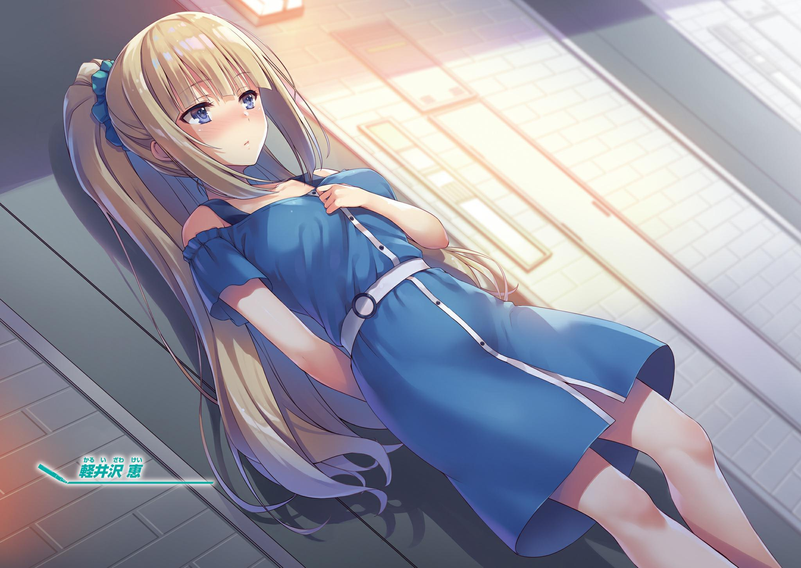
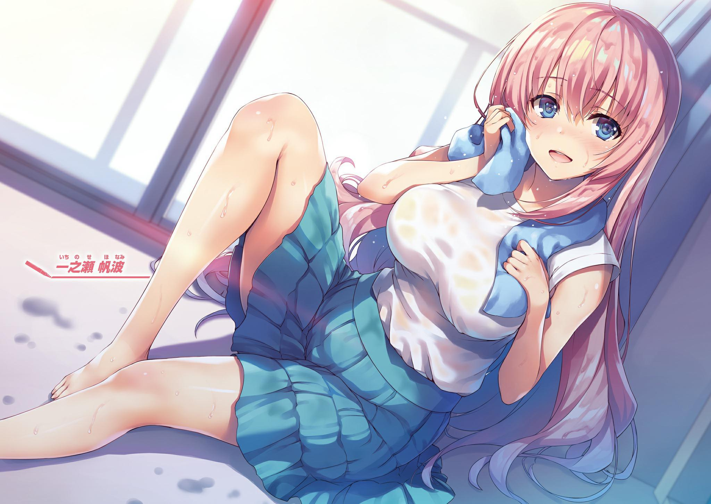
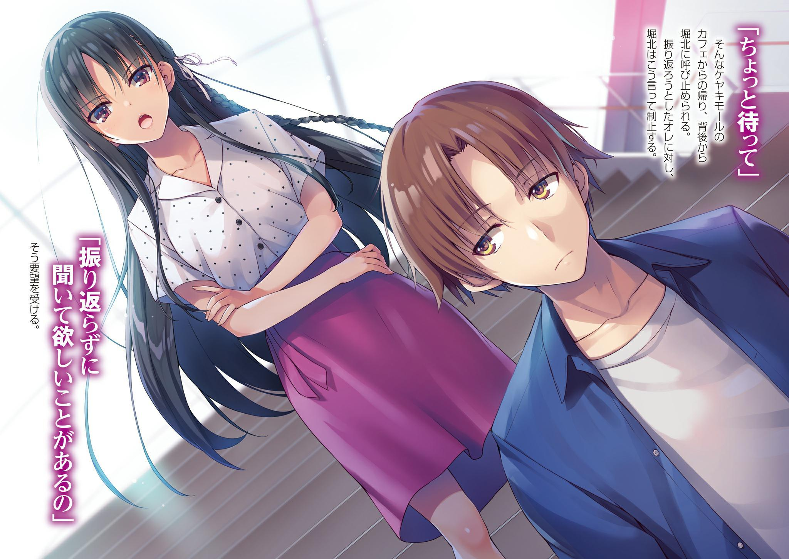
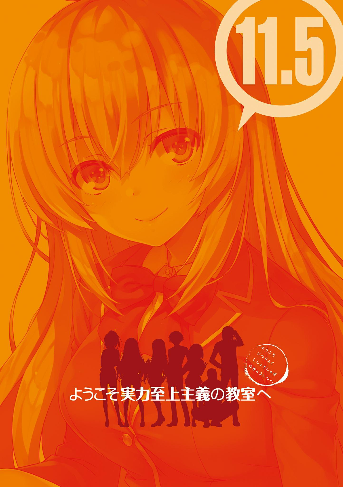
GLADHEIM
TRANSLATIONS
Youkoso Jitsuryoku Shijou Shugi no Kyoushitsu e - Volumen 11.5
LA CHICA ESTÁ MIRANDO SU REFLEJO EN EL ESPEJO
Hoy es 31 de marzo.
Es el último día que esa persona... que mi hermano estará en esta escuela.
—Mi cara se ve terrible.
Miré mi cara reflejada en el espejo. Una expresión facial algo oscura y deprimida me miró.
La razón de eso es porque casi no dormí nada anoche.
Me pregunto cuánto tiempo pasamos mi hermano y yo hablando en esta escuela.
Ese período superó fácilmente el año, pero no llegó ni a unas pocas horas.
Era una relación tan difusa.
No se puede evitar que la gente me ridiculice por eso. De esta relación que era incluso menos que amigos.
Un hermano mayor y una hermana menor. Dos existencias tan cercanas, pero tan lejanas que la gente no pensaría que estábamos relacionados por sangre.
—¿Está bien separarse de él de esta manera?
Cuestioné a mi reflejo en el espejo.
Por supuesto, no me respondió.
Sólo estaba yo, con una expresión oscura, mirando hacia el pasado.
Ni siquiera necesité mirarla a los ojos para notar que parecía acusarme de algo.
Hay tantas cosas de las que quiero hablar con mi hermano.
No hay forma de que una separación como esta sea aceptable.
Y entonces pasó un año.
Al final, no conseguí darnos tiempo para hablar.
Pero... ahora es diferente. Ahora puedo enfrentarme a él como es debido, así que puedo encontrarme con él sin avergonzarme.
Puedo reunirme con él y darle mi último adiós con confianza.
—...No, eso no servirá.
Ni siquiera tengo las calificaciones para despedirlo como soy ahora.
Por supuesto, nuestra relación ha cambiado.
Me las arreglé para que mi hermano me mirara.
Pero...
No pude mostrarle mi crecimiento este año, casi nada.
Incluso si lo despido, seguramente no estará contento con ello.
De hecho, probablemente sólo haré que se preocupe más por esta hermana inútil.
No puedo hacer que desperdicie sus tres gloriosos años con esos sentimientos ahora.
—¿No sería mejor no reunirse con él? —es lo que acabo por pensar.
Nunca dejaré que se preocupe por mí debido a mi egoísmo...
—No, no es así, eso no lo hará mejor, ¿verdad?
Le pregunté a mi otro yo en el espejo una vez más.
No fui capaz de mostrar nada.
Pero eso no significa que huir sea la respuesta correcta.
Si pudiera decirle con confianza que estoy bien, todo se resolvería.
Entonces, ¿qué debería hacer?
¿Qué es lo correcto?
El tiempo se está acabando.
Ojalá hubiera notado mi estupidez mucho antes.
¿Y si me hubiera dado cuenta justo después de entrar en esta escuela?
—No tiene sentido arrepentirse de algo que ya pasó, no tiene sentido...
para nada...
Eran más de las 8 de la mañana.
Mi hermano partirá al mediodía.
—¿Qué puedo... qué debo hacer?
Estaría bien mostrarle este yo actual, pensé.
Pero el yo actual no soy yo, y sin embargo sigo siendo yo.
Alguien que continúa persiguiéndolo, y sólo a él. Una hermana muy tonta.
La yo del espejo se desvaneció y se superpuso a mi yo del pasado.
—Yo... ¿quién demonios soy?
Sí.
La que se reflejaba en el espejo era yo, pero sin ser yo en realidad.
—... Una imitación.
Pensando en ello ahora, el hecho es que he pasado más de la mitad de mi vida viviendo una mentira.
Estaba escondiendo mi verdadero yo, continuando esta farsa.
Una falsificación de "Una hermana que anhela a su hermano".
Mi apariencia, mi personalidad, mis calificaciones, todo por mi hermano.
Fabriqué una imitación para que mi hermano me reconociera.
Nunca sería aprobada por él con semejante falsificación.
No, no es eso. La yo de aquellos años era inequívocamente yo.
No puedo llamar a algo así una mentira.
Puede haber sido una vida corta, pero fue la mitad de una vida pasada junto con mi otro yo real, por decirlo así.
No me arrepentiré de lo que soy ahora.
Pero...
—Lo que quiero mostrarle... Lo que realmente quiero que mi hermano vea es...
Lo único que quiero mostrarle.
Siento que lo he comprendido.
—... Gracias. Mi falso yo, aunque sin duda, mi verdadero yo.
Me giré hacia el espejo, hacia mí misma y me hice una reverencia.
Mi pelo largo se balanceaba.
Entonces levanté la cabeza y miré hacia otro lado del espejo.
Ya terminé de enfrentarme a mi yo del pasado.
No queda tiempo.
Tengo algo que alguien como yo, como yo misma, tiene que hacer.
La última cosa que he comprendido.
Para darle paz mental antes de su viaje.
Mi último regalo para él.
CEREMONIA DE GRADUACIÓN
Marzo 24. La ceremonia de graduación
Para los estudiantes de tercer año, no sólo es un evento que marcó el final de su vida en la preparatoria, sino que también marca el comienzo de otro viaje en el que se embarcarán.
Para los estudiantes inscritos aquí, esto no era más que otro evento. Sin embargo-Para mí, era algo que valía la pena ver.
Tenía curiosidad por los resultados de la batalla entre el mayor de los Horikita y Nagumo.
Todavía no sabía qué pasó en su batalla final que se prolongó hasta el final...
¿el Horikita mayor fue capaz de graduarse de la clase A? ¿O la intervención de Nagumo lo impidió?
Aunque debería habérseme revelado ayer, tenía algo que hacer, así que no salí de mi habitación.
Entonces los resultados serían revelados hoy en lugar de eso.
También estaba interesado en cómo se sentiría una ceremonia de graduación.
Ya sea la ceremonia de graduación o la de clausura, experimentar algo por primera vez naturalmente será emocionante.
Como ya casi es hora de ir a la escuela, cerré la puerta de mi habitación y salí.
—Buenos días.
Keisei, que estaba en el ascensor conmigo, me saludó, y yo respondí en silencio.
Como había estudiantes de las otras clases con nosotros, no hablamos de nada importante.
Simplemente salimos en silencio del vestíbulo de nuestro dormitorio.
—Trabajamos tan duro para ser promovidos a la clase C sólo para ser arrastrados de vuelta a donde empezamos... Al menos no sufrimos tanto daño como pensé que lo haríamos.
Los murmullos de Keisei se dispersaron rápidamente en el cielo brillante y sin nubes.
El fracaso de la clase C en el examen final especial del año nos degradó a la clase D.
Aunque muchos de los estudiantes se vieron afectados por la derrota, nuestro oponente era, afortunadamente, la clase A, así que era de esperar.
Como yo tenía el punto de protección, significaba que también fui el comandante durante el examen, agobiado por los deberes de ser moderador.
Y así todo el mundo creería que no había manera de evitar nuestra derrota y que si hicimos todo lo que pudimos, entonces ya era suficiente.
Aunque nos degradaron de nuevo a la clase D, la diferencia en nuestras calificaciones era alentadora.
Estos eran los puntos de clase a finales de marzo:
▪1131 Puntos para la clase A de Sakayanagi
▪550 Puntos para la clase B de Ichinose
▪347 Puntos para la clase C de Horikta
▪508 Puntos para la clase D de Ryuuen
Estas clasificaciones de clase sólo durarían hasta el final de este marzo.
Los puntos de clase se determinan y confirman al comienzo de cada mes, y sólo entonces cambiará la clasificación de las clases.
Como resultado, técnicamente seguimos siendo la clase C.
Pero después de que Ryuuen regresó a la clase C, sus puntos de clase son virtualmente los mismos que los de la clase B.
Si todo siguiera igual que hasta ahora, definitivamente la clasificación de las clases podría cambiar.
Pero no podemos olvidar que en esta escuela, los puntos de clase existentes pueden cambiar cada mes debido a las diferentes situaciones que ocurren.
La clase de Ichinose tiene muchos estudiantes diligentes, pero la clase de Ryuuen, incluso si se les puede felicitar por sus logros, no pueden ser etiquetados como estudiantes de primera clase.
Y debido a los diferentes estilos de vida de cada clase, los puntos que cada una de ellas recibe son diferentes.
Los estudiantes de la clase B podrían estar preocupados por esa posibilidad.
Pero aun así, el hecho de que Ichinose mantuviera la clasificación de la Clase B
durante todo el año también podría ofrecerles tranquilidad.
Dicho esto, la diferencia entre la clase B y la clase de Ryuuen es de sólo 42
puntos.
Después del siguiente examen especial, había una alta probabilidad de que la clase de Ryuuen tomara el lugar de la Clase B.
Mirando desde esa perspectiva, parecía que la clase D a la que pertenezco está muy por detrás de todos los demás.
Sin embargo, no podemos olvidar la situación con los puntos de cada clase en abril y mayo del año pasado.
En abril pasado, todas las clases comenzaron con 1000 puntos de clase. En ese entonces, la abrumadora ventaja de la clase A y la inferioridad de la clase D no existían.
Pensándolo ahora, ese fue el mejor momento para establecer nuestra posición.
Desafortunadamente, la Clase D perdió todos nuestros puntos de clase en un mes.
Los rankings de entonces...
La clase A de Sakayanagi 940 puntos
La Clase B de Ichinose 650 puntos
La clase C de Ryuuen 490 puntos
La clase D de Horikita 0 puntos
Como resultado, los puntos de clase acumulados para todo el grado habían caído. Fue el comienzo de la competencia entre las clases, y quién ganaba y quién perdía en ellas.
Piénsalo de esta manera. Nuestra clase ganó un total de 347 puntos en todo el año.
Debido a factores como nuestra actitud, retrasos, ausencias, etc., los puntos de clase pueden disminuir a finales de mes.
Pero en general, ganamos por lo menos 330 a 340 puntos.
Ese es mi argumento. Nuestra clase fue la más rápida de todo el grado en cuanto a ganar puntos de clase a lo largo del año, incluso excediendo abrumadoramente el número de la Clase A, la subcampeona. La clase A sólo había recibido un aumento de 191 puntos de clase.
Pensando en la primavera del año pasado, cuando caímos a 0 puntos en un instante, ya lo hemos hecho bastante bien para alcanzarlos.
Sin embargo, cuando nos convirtamos en estudiantes de segundo año, la clase tiene que ser más proactiva en su conjunto.
Es la única manera de cerrar la brecha con las clases de mayor rango.
Con el liderazgo de Hirata y Horikita, así como el crecimiento de los otros miembros de nuestra clase, las capacidades generales de la misma aumentarán en su conjunto.
Si podemos lograr esto, la competencia con los estudiantes de las clases superiores se convertirá en una realidad.
Después de notar que no había nadie alrededor, Keisei sintió que quería decir algo.
—No te preocupes por eso. La mayoría de los estudiantes no te culpan.
Tal vez Keisei sintió que yo estaba preocupado por nuestra derrota. Ciertamente no me importaba, pero noté algo en las palabras de Keisei.
—¿Mayoría?
Dentro de estas palabras reconfortantes había un agujero justo en el medio.
En otras palabras, todavía había una minoría de estudiantes que estaban insatisfechos conmigo.
—Esta... no es una situación perfecta. No están diciendo que fueras un mal comandante, pero sienten que podría haber existido una persona mejor y más competente como comandante.
En cierto sentido, esto también era una forma de culpar. Los humanos son criaturas irracionales. Aunque se hubiera acordado algo antes, tomar una postura diferente después no era nada raro.
Habría gente que creyera que la razón por la que perdimos frente a la Clase A fue por la diferencia de habilidades entre los comandantes, lo cual era comprensible.
—Aunque alguien te acuse, recuerda que tienes la ventaja. Eras nuestra única opción para comandante ya que eras el único con un punto de protección...
Keisei me dijo esto después de considerar la posibilidad de que los estudiantes me confronten en el futuro.
—Aunque la mayoría de la gente estaría de acuerdo con eso, también está el ejemplo de Ryuuen.
Después de decir eso, Keisei sonrió amargamente y sacudió la cabeza.
—Ese bastardo es bastante especial. Creo que su imprudencia es sólo una fachada. Fue por su inesperado surgimiento, ya que no tenía ningún punto de protección, lo que llevó a la caída de la Clase B, sufriendo una aplastante derrota.
Desde la superficie, parecía que las palabras de Keisei eran todas verdaderas.
Pero en realidad, no lo eran. Todo esto era parte de la calculada estrategia de Ryuuen, todo con el fin de ganar.
La aparición inesperada era sólo una parte de su plan.
—...Kiyotaka, necesito preguntarte algo.
Justo después de que esas palabras fueran pronunciadas, Keisei continuó.
—Cuando de repente decidí tratar de involucrarme con Katsuragi para ganármelo, ¿por qué no me denunciaste?
Para vencer a la clase A en el examen de fin de año, Keisei propuso a Horikita que tratáramos de ganar a Katsuragi para nuestro bando ya que fue derrotado por Sakayangi... Pero Horikita rechazó esto debido al alto riesgo de fracaso y la dificultad de la tarea.
A pesar de lo que Horikita dijo, Keisei no pudo aceptarlo. Esto lo llevó a intentar convencer a Katsuragi solo, lo que resultó en un fracaso.
A pesar de su fracaso, esto no tuvo mucho impacto en el gran conjunto de las cosas.
Aunque Katsuragi no estaba dispuesto a cooperar, el daño real sufrido también fue insignificante.
—El daño que sufrimos no fue tan significativo, así que, ¿no está bien?
Para Keisei, eso no era importante.
Lo sabía, pero de todas formas dije algo reconfortante.
—Eso es porque a Katsuragi no le gusta recurrir a tácticas turbias. Si fuera alguien como Sakayanagi o Ryuuen, estaríamos sujetos a ataques aún más devastadores.
Keisei, que se sentía profundamente responsable por el fracaso de poner a Katsuragi de nuestro lado, estaba preocupado por un futuro que no se produjo.
Sonaba como si Keisei le hubiera dicho a Horikita sobre tratar de ganarse a Katsuragi él mismo.
—Ah. Le mencioné esto a Horikita. Creo que debería ser responsable de esto
Reconoció sus fracasos sin rodeos, con un tono de amargura.
—Kiyotaka, ¿confías en que Katsuragi no traicionará a la Clase A?
Luego me preguntó directamente.
—No. Katsuragi puede cambiar de bando. ¿No es así?
—Tal vez...
En cuanto a si la posibilidad de que ocurriera era del 50% o del 1%, no era el momento de considerarlo.
—No lo reporté a Horikita porque me olvidé de hacerlo. En ese entonces, todas mis preocupaciones eran sobre mi posición como comandante y tener que asumir la responsabilidad de serlo. Si lo piensas así, yo también tengo la responsabilidad. Si tu plan hubiera tenido éxito y hubiera ganado a Katsuragi, habría asumido alguna culpa por no ser capaz de comunicarme bien con Horikita y el resto de la clase. Estamos juntos en esto.
Después de que ambas partes admitieran su culpabilidad, podríamos poner fin a este caso.
—Sin embargo, siento que fui demasiado ingenuo. Si hubiera considerado los riesgos, ni siquiera habría intentado ganarme a Katsuragi.
Aunque no podamos borrar el pasado, podemos usarlo para reflexionar sobre nuestras acciones en el futuro.
—Si se tratara de ser demasiado ingenuo, yo también sería culpable.
Porque no dije nada en ese momento.
—Me siento mejor al oírte decir eso.
Durante ese examen, muchos estudiantes participaron pasivamente. Sin embargo, Keisei trató de hacer todo lo posible para llevar a nuestra clase a la victoria.
—¿Y no entiendes lo que pasó entonces? Una estrategia como esa habría sido difícil de llevar a cabo.
Podrías aprender mucho de los errores.
En cuanto a si podía hacer que sus planes funcionaran, eso dependía de él.
—Sí, estaba tan concentrado en ganar que no pude ver nada más. Ahora que me he calmado, me siento avergonzado.
Murmuró para sí mismo mientras reflexionaba sobre sus acciones.
Atraer a Katsuragi fue una idea ingenua, pero el hecho de que pensara en ese plan y tratara de llevarlo a cabo era algo digno de elogio.
—Entonces, ¿qué te dijo Horikita?
—Horikita no me culpó, pero era obvio que si fallaba, habría perjudicado a toda la clase. No sólo eso, sino que también dijo que la próxima vez que tuviera una idea, tenía que contársela. También me aconsejó que no me apresurara en nada.
Parece que Horikita hizo una evaluación similar.
La gente crecía a partir de un fracaso constante. Si sólo miras los resultados antes de reprender a alguien, entonces no puedes ser un líder.
Por supuesto, si alguien falla continuamente sin aprender de sus errores, entonces tarde o temprano será abandonado.
—Hablando sin rodeos, no estoy seguro de cómo Horikita todavía mantiene el lugar como líder de la clase. Claro, ella es inteligente y es buena en los deportes, pero no importa lo que diga, todavía tiene esta actitud condescendiente hacia la gente. Es difícil para la gente aceptar eso.
No podía negar el punto que él planteó. Al menos no puedo ahora.
No es el mismo tipo de líder que Hirata o Ichinose.
Cuando se establecen alianzas, es inevitable crear enemigos.
—Pero... yo también soy igual. Creo que no es necesario ser atlético y desprecio a la gente que no es inteligente. Somos iguales, Horikita y yo.
Justo después de empezar la escuela, Keisei tendía a mirar con desprecio a los estudiantes con malas notas.
Eso era porque creía que como estudiante, el rendimiento académico significaba todo, para bien o para mal.
—El Keisei de ahora y el Keisei de hace un año es completamente diferente. Ha cambiado mucho en el último año.
—Ahhh, el hecho de que esté pensando así ahora es increíble. Aunque lo académico sigue siendo lo más importante, he llegado a comprender que lo atlético, la capacidad de comunicación, así como la amistad, también son necesarios. Horikita también está cambiando lentamente. Ella es más de fiar ahora que nunca antes, y eso hace que sea más fácil confiar en ella.
Keisei no confiaba realmente en nadie fuera del grupo Ayanokouji. Sin embargo, aun así expresó su opinión sobre los aspectos de Horikita que eran dignos de elogio. Eso me permitió creer firmemente que lo que decía era de corazón.
—Ese podría ser el caso.
Estuve de acuerdo con lo que dijo.
El tipo de estudiante que es Horikita se ha revelado lentamente después de un año. Desde la votación de la clase, ella gradualmente llegó a ser más aceptada por nuestros compañeros de clase. La razón principal no fue por sus habilidades
como líder y táctica, sino porque la gran pared de su corazón comenzó a desmoronarse lentamente. Mientras esa pared permaneciera en pie, ella consideraría a los estudiantes, aparte de ella misma, como nada más que una carga, abandonándolos sin la más mínima vacilación. De esa manera, ella era similar a Keisei.
—Por supuesto, no voy a obedecer a Horikita ciegamente. Si creo que comete algún tipo de error en su juicio, entonces no dudaré en objetar y denunciarla. ¿Está mal hacer eso?
Keisei respondió después de organizar sus pensamientos.
Las cosas que son verdaderas deben ser aceptadas, y las que crean duda deben ser cuestionadas.
—No, eso es completamente acertado. Así es como la clase ha funcionado desde el principio.
No importa lo confiable que sea, sigue siendo sólo una chica de preparatoria.
También cometerá errores de vez en cuando.
Ahora, si alguno de los estudiantes señala esos errores, todavía será algo por lo que valga la pena sentirse optimista.
Podemos trabajar juntos como clase para resolver nuestros problemas, como iguales.
Debido al gobierno autoritario de Sakayanagi y Ryuuen con sus respectivas clases, ese enfoque no era una opción para ellos.
Se puede decir que nuestra clase se estaba transformando lentamente en algo similar a la clase de Ichinose.
Después, tendremos que usar nuestra fuerza para cerrar la brecha.
PARTE 1
En el gimnasio...
Estudiantes y profesores se reunieron por igual.
Todos se pusieron en fila, viendo la ceremonia con entusiasmo. Las figuras prominentes de la escuela, incluyendo algunas personas que no vemos normalmente, estaban todos presentes.
Este era el momento en que los estudiantes de 3º año darían un gran paso hacia un nuevo comienzo.
Tanto los que accedían a la educación superior, como los que iban directamente a trabajar, o los que se habían detenido, sin encontrar su camino en la vida, estaban a punto de dejar de ser niños y galoparían a toda velocidad hacia la sociedad.
Estaba pensando.
¿Cuál sería mi posición en ese escenario 2 años después?
¿En qué estaría pensando entonces?
Quería creer que aún después de decidir la ruta de la vida que tomaríamos, seríamos capaces de imprimir estos eventos en nuestros corazones.
Quería creer que lo que aprendimos en esta escuela sería tan crucial para la supervivencia como lo es la comida.
—A continuación, quiero invitar hasta el escenario a los estudiantes que, después de tres años de duro trabajo, se han graduado de la Clase A.
El presentador dijo esto a través de un micrófono.
El ya silencioso gimnasio quedó envuelto en un silencio aún más profundo.
—El representante de la clase A...
Si el nombre que se decía aquí no era Horikita Manabu o uno de sus compañeros de clase...
Significaría que los resultados del examen especial final habían cambiado la clasificación de las clases en el tercer año.
Muchos de los estudiantes y profesores esperaban este momento, prestando mucha atención a las palabras del presentador.
Porque mientras estuvieran inscritos en esta escuela, graduarse de la clase A era el mayor logro que había.
—Horikita Manabu, por favor sube al escenario.
Después de que ese nombre fuera pronunciado, Horikita se sentiría aliviada desde el fondo de su corazón.
Aunque no sé cuánta presión ejerció Nagumo sobre él, el mayor de los Horikita se graduó de la clase A sin problemas.
De forma impresionante, subió al escenario, poniendo sus ojos en los estudiantes y en el profesorado.
—Saludos. En este hermoso y floreciente día de primavera, les doy la bienvenida a esta ceremonia de graduación.
El discurso del mayor de los Horikita comenzó.
Primero mostró su gratitud hacia la gran ceremonia de graduación.
Luego habló de lo que había pasado hace tres años cuando entró en la escuela.
—Todavía recuerdo claramente el primer día que puse un pie en el campus de la Preparatoria Avanzada de Educación. Sentí que había una atmósfera diferente a la de las escuelas normales. Mientras cargaba con el peso del futuro, prometí hacer de estos tres años una experiencia significativa.
Sentí una especie de calidez por la naturaleza asertiva y serena de su discurso.
El Horikita mayor se sentía como una persona diferente de la que se presentó en el mismo escenario como presidente del consejo estudiantil hace un año.
Sentí este cambio a medida que el discurso avanzaba.
No fue sólo él. Los estudiantes de esta escuela también crecieron significativamente durante este tiempo.
—Aunque esto era un asunto personal, hablé con los estudiantes de 1er año el año pasado como representante del consejo estudiantil.
Como si pensara lo mismo que yo, el mayor de los Horikita dijo esto.
—Comparado con lo que eran el año pasado, puedo ver lo mucho que han crecido con sólo una mirada.
Hace un año, el silencio del Horikita mayor cambió la actitud de nosotros los volubles estudiantes de primer año.
Eso era algo que muchos de los estudiantes no habían experimentado antes.
Y ahora en esta ceremonia de graduación, ni un solo estudiante susurraba.
Los cálidos ojos del mayor de los Horikita nos miraban, como un estudiante que iba a graduarse.
—Al mismo tiempo, espero que los estudiantes que pronto serán los nuevos de tercer año proporcionen un ejemplo adecuado para que los nuevos de segundo año ejerzan plenamente sus fortalezas, mientras cumplen con las regulaciones de la escuela, y practican la disciplina.
Después de unos minutos, el discurso se terminó lentamente...
—Quería asegurarles que las cosas que aprendemos en esta escuela no sólo jugarán un papel en nuestras vidas futuras, sino que también se convertirán en nuestro recurso más valioso.
El hermano de Horikita una vez más miró fijamente a los estudiantes que tenía delante.
—La persona que se parará aquí y les hablará el próximo año, y el año siguiente, será capaz de entender lo que estoy sintiendo.
La persona que dará el discurso de graduación.
En otras palabras, el líder de la Clase A que se graduará.
¿Era Nagumo el candidato más probable para eso?
Los estudiantes del primer año todavía estaban envueltos en una guerra caótica.
¿Quién saldría victorioso? ¿Horikita? ¿Ichinose? ¿Ryuuen? ¿Sakayanagi?
¿O sería otra persona reemplazando a uno de los actuales líderes de las clases?
Pero, de nuevo, sólo ⅓ de nuestro tiempo en la escuela ha pasado.
Las clases cambiarán en el futuro a medida que más estudiantes abandonen la escuela.
Pero aun así, sólo el líder de la clase que gane la batalla final tendrá el derecho de pararse en ese escenario.
El mayor de los Horikita continuó lentamente.
—Gracias a todos ustedes, por los últimos tres años.
Pronto, llegó a su fin.
Después del discurso a los estudiantes, se giró hacia los profesores y se dirigió a ellos, y finalmente a la propia escuela.
Después del gran discurso, la ceremonia de graduación pasó a la siguiente etapa.
PARTE 2
Después de la ceremonia, tomamos la iniciativa de dejar el gimnasio.
Luego regresamos a nuestras aulas.
Después, hubo una reunión de agradecimiento de los graduados y todos los profesores y sus encargados.
Se decía que la ceremonia que se celebraba era por los estudiantes y sus encargados para mostrar su aprecio hacia los profesores.
Al resto de los estudiantes se les permitió regresar a sus dormitorios, pero aquellos que estaban cerca del tercer año debido a actividades de los clubes o por alguna otra razón se preparaban para despedirlos después de que salieran.
Tal vez era para regalarles ramos de flores, o tal vez una confesión.
Los estudiantes parecían muy ansiosos, y al mismo tiempo, tranquilos por la tensión.
—Bien, aunque podemos mencionar esto mañana durante la ceremonia de clausura, resumamos brevemente lo que pasó este año.
Una vez que los estudiantes se sentaron en sus asientos, Chabashira-sensei nos habló.
—En primer lugar, durante el examen final, lograron resultados encomiables a pesar de tener a los estudiantes de la clase A como oponentes.
Los otros profesores también están sorprendidos por su crecimiento.
Aunque fue una derrota, Chabashira-sensei, que normalmente era dura con nosotros, nos elogió.
—Mi impresión de ustedes desde que entraron a la escuela ha cambiado totalmente. Honestamente es increíble que hayan sido capaces de crecer hasta este punto.
—Pero Sensei, vamos a volver a ser de la clase D de nuevo, ¿eso no significa que seguimos siendo unos fracasados?
Dijo Ike, molesto.
—A primera vista, parece que han vuelto al principio, pero a lo largo del año, todos han crecido. No se preocupen por la simple diferencia de puntaje entre las clases, su fuerza se está acercando a las otras clases.
—En realidad tengo miedo de que nos elogie de esta manera. Sensei,
¿cuál es la trampa?
El hecho de que Sudo expresara su preocupación por los elogios de Chabashira-sensei tenía cierta lógica.
Considerando el tono sospechosamente poco característico que usó, de repente hacer un examen ahora mismo no sería tan sorprendente.
—Eso es lo que realmente pienso. Este es mi cuarto año como maestra.
Comparado con la anterior clase D, ustedes son realmente un avance.
Chabashira-sensei golpeó ligeramente la pizarra.
—Aunque la ceremonia de clausura es mañana, lo que significa que no habrá clases, recuerden que aún es un día de escuela.
Chabashira-sensei terminó la discusión y despidió a la clase.
No sabía cuántos estudiantes irían a despedir a los de tercer año, pero ¿qué haría la chica del pupitre de al lado?
Es la hermana del estudiante que no sólo ha sido el presidente del consejo estudiantil, sino también el estudiante que pronunció el discurso de clausura como líder de la clase A que se gradúa.
Horikita miró fijamente al pizarrón, pensando profundamente.
A pesar de que sentí que si golpeaba descuidadamente a la serpiente, ésta me mordería, traté de preguntarle de todos modos.
—¿Vas a ir?
—¿A qué te refieres?
—Este... debería quedar claro lo que quiero decir.
—¿Me estás preguntando si voy a ir a ver a mi hermano? Si es así, entonces no tengo planes de ir.
Mientras Horikita decía esto, su mirada se dirigió a otro lugar.
No va a ir... ¿eh?
—¿Ya tuviste la oportunidad de hablar con él?
—...¿Qué tiene esto que ver contigo? Todos tenemos nuestros propios problemas.
Pero sólo tú tienes este problema ahora mismo.
—Si pierdes esta oportunidad, puede que no haya otra.
—Este...
Aunque su relación se estaba descongelando lentamente, el hecho de que ella siguiera mostrando reticencia hacia este importante momento era una prueba de su relación distorsionada en los últimos años.
—Iré a verlo.
—¿Hmm? ¿Vas a despedir a tu hermano?
Fue debido al hecho de que no interactuaba mucho con la gente, que la expresión de Horikita me sorprendió tanto.
—Aunque no me comunico bien con él, esta podría ser la última vez que lo vea.
Bueno, no estaría de más decirle hola.
—¿Será...?
—¿Tienes alguna pregunta?
—No. Puedes hacer lo que quieras.
Mi rostro reveló claramente mis dudas sobre por qué quería reunirse con él, pero no podía decirlo en voz alta.
Me puse de pie.
Los profesores tenían que ir a la reunión de agradecimiento. Ni siquiera el Director Interino Tsukishiro pudo salirse con la suya y no participar.
—¿A dónde vas?
—A matar el tiempo. No tengo nada que hacer hasta el final de la reunión de agradecimiento. ¿Puedes esperarme si vas a ver a tu hermano?
—...Voy a pensar en ello. ¿Cuánto tiempo vas a tardar?
Aunque dijo que no había planeado ir, creo que cambió de opinión.
—No lo sé. Tal vez una hora o dos.
La hora prevista para la reunión era en 90 minutos, así que iba a pasar un tiempo hasta que terminara.
Mientras tanto, haré lo que tenga que hacer.
PARTE 3
Ayer
En la noche en la que concluyó el examen de selección de eventos, llamé a cierta persona.
—Hola, soy Sakayanagi.
Era la voz de un adulto sereno.
A quien llamé no fue a Sakayanagi Arisu o su pariente. Fue a su padre.
El Director Sakayanagi, que fue confinado debido a una trampa puesta por Tsukishiro.
Desde luego no reconocería este número de teléfono.
—Siento molestarlo a estas horas de la noche. Hace tiempo que no lo veo.
Habla Ayanokouji.
Lo dije eso que supiera quién era yo.
—¿Hmm? ¿Ayanokouji?... ¿Eres Ayanokouji Kiyotaka?
Al escuchar mi apellido y mi voz, el Director Sakayanagi entendió y continuó hablando en un tono sorprendido.
Tuve que decirle que no llamaba sólo por diversión.
—Me disculpo por llamarlo tan repentinamente.
—No, no, sólo estoy sorprendido. ¿Cómo supiste mi número de teléfono?
—Le pregunté a su hija qué número de teléfono debo marcar cuando quiero contactar con una figura importante de la escuela.
De camino a casa después del examen final, le pregunté a Sakayanagi, y ella me lo dijo.
—Resulta que incluso el Director le diría a su hija su número de teléfono.
Aunque no se puso del lado de su hija, ¿realmente amaba a su hija lo suficiente como para decírselo?
Bueno... eso es lo que pensé, pero la respuesta del Director Sakayanagi fue inesperada.
—¿Qué? No... no le dije a mi hija mi número de teléfono.
Sorprendentemente, lo negó.
—¿Cuándo y dónde se enteró?
Dijo el Director Sakayanagi con una sonrisa forzada. Por la forma en que lo dijo, no sonó falso.
—¿Se supone que el número del director es un secreto?
—Por supuesto, bueno, todos los profesores lo saben, y debería haber registros de la información enviada a las personas relevantes...
En ese caso, no sería muy difícil conseguir su número. No sería sorprendente que Sakayanagi Arisu lo viera en alguna parte y lo anotara. Sin embargo, había una cosa que me confundió. El Director Sakayanagi es un hombre que impone la justicia incluso frente a su linda hija. No creo que sea un hombre que ayude a cualquiera que llore por ello.
Entonces, ¿por qué ella anotó su teléfono intencionalmente? No parece que ella le informe nada o que haga esto para mantener una conversación con él como padre e hija.
Recordé que cuando le pedí a Sakayanagi el número de teléfono del Director, ella felizmente me lo dio.
¿Sería posible que Sakayanagi anticipara que yo podría tener problemas un día y le pidiera el número de teléfono del Director...?
—Así que... ¿Cómo debo reaccionar a tu aparición?
Comparado con la forma en que Arisu obtuvo su número de teléfono, parece que mi aparición fue más importante.
Era inaudito que los estudiantes llamaran personalmente al Director, además de ser desagradable.
—No hay reglas que establezcan que los estudiantes no pueden llamar al Director, ¿verdad?
Eso necesitaba ser confirmado primero.
Si lo que dije fuera rechazado ahora, no podría seguir hablando con él.
—En realidad, no hay una regla como esa, así que no voy a colgar en este momento.
Podríamos avanzar en el tema de esta manera.
—Pero... personalmente creo que la llamada debe terminar lo antes posible. ¿Qué quieres de mí?
Aunque sonaba un poco confundido, no parecía culparme por contactarlo.
Eso fue porque no había reglas que establecieran que los estudiantes no podían llamar al director.
—Director Sakayanagi, oí que está bajo arresto domiciliario por sospecha de delito. ¿Es eso cierto?
—Esa es una pregunta muy directa viniendo de un estudiante. Es inapropiado que un estudiante de nuestra escuela pregunte esas cosas al director.
Al final, evitó educadamente la pregunta.
Pero era una cuestión directamente relacionada con el tema que quería discutir.
Mejor insistamos un poco más.
—Si es posible, ¿puede responder a mi pregunta?
—...Ayanokouji Kiyotaka, no sé cuál es tu objetivo, pero no puedo responder a tu pregunta. No tengo ninguna razón para decirte por qué.
—Porque no es apropiado que un estudiante lo sepa, ¿verdad?
—Sí. Este asunto no tiene nada que ver contigo.
Teniendo en cuenta la situación actual y la posición del Director Sakayanagi, así como el hecho de que el asunto en cuestión no tiene nada que ver con los estudiantes, esa negativa fue únicamente la respuesta natural.
—Lo sé muy bien. Sin embargo, tengo mis propias razones para preguntar.
En primer lugar, era necesario decirle al Director Sakayanagi mi situación.
—Aunque no conozco tus razones, sigues siendo un estudiante de esta escuela. Aunque fuera Sakayanagi en lugar de ti, tu posición seguiría siendo la misma. ¿Has olvidado este concepto?
Me explicó esto seriamente.
Se podía ver que era un hombre consumado sólo por nuestro corta conversación.
—Por supuesto, la relación entre el Director Sakayanag y yo no es más que una relación entre un estudiante y un profesor. No, no creo que lo haya olvidado.
Debido a que era una situación especial, no podía dejar que colgara.
—Si ese es el caso, entonces esta llamada ha terminado. Olvidaré lo que sea que haya pasado aquí hoy...
—No, si hace eso, entonces nunca podremos eliminar la existencia de forasteros en la escuela.
Usaré esa frase para enviar una señal al Director Sakayanagi, permitiéndole entender la situación.
—¿Estás diciendo que hay un objeto extraño en nuestra escuela?
—Sí. Este objeto extraño al que me refiero es el director interino Tsukishiro.
Fui directo al grano, ya que no hay ventaja en tomarlo con calma.
—....¿Qué hizo Tsukishiro?
El tono de la otra persona cambió, aunque sólo fuera por un momento.
Debido a lo que asoció con Tsukishiro, la conexión vino inmediatamente a su mente.
—Durante un importante examen entre los estudiantes, el director interino Tsukishiro actuó por su cuenta para obstruir el curso de la competición. ¿No sabe nada de esto?
—No sé de qué estás hablando. ¿Tsukishiro intervino en un examen?
¿Qué demonios está pasando...?
En cualquier caso, el Director Sakayanagi parecía ignorar la situación superficial.
Como no conocía mis verdaderas intenciones, esta fue la mejor respuesta.
—Se sospechaba que usted estaba haciendo algo malo, y el Director Interino Tsukishiro aprovechó la oportunidad. Quizás es porque valoró demasiado la justicia, y como resultado, usted obstruyó demasiado lo que él realmente quería.
Al otro lado del teléfono, el Director Sakayanagi parecía estar pensando en algo.
Aunque compartíamos algo de conexión entre nosotros a través de la habitación blanca, yo seguía siendo un estudiante común y corriente.
Los asuntos de los adultos no era algo que debiera discutirse conmigo.
Sin embargo, si todo esto estaba relacionado conmigo, entonces era una historia diferente.
El Director Sakayanagi debió ser consciente de esto desde el principio.
Pero mientras no hubiera un daño visible, la dirección de la escuela no podría tomar medidas.
—¿Por qué haría Tsukishiro algo así? Ya es un hombre poderoso. No es alguien que tenga motivos para atacar a alguien como yo a propósito. ¿Venir a la escuela para obstruir un examen? No veo ninguna necesidad de eso.
Esta era la confirmación final que necesitaba.
La confirmación de si estaba dispuesto a compartir información conmigo como iguales.
—El objetivo de Tsukishiro es conseguir que me expulsen de esta escuela.
Esa es la única razón por la que vino aquí.
Aquí, hablé de lo que consideraba un hecho establecido sobre él.
—Si esto no tiene fundamento, entonces es inevitable que dude de ello.
—Lo sé, pero no tengo tiempo para negociar con usted. Ese hombre está decidido a lograr su objetivo, por medios justos o sucios.
Esto dependía de lo mucho que el director entendiera a mi padre.
Si sólo es una relación superficial, entonces no podrá entender lo que quiero decir.
Pero basándome en nuestra conversación anterior, podría adivinar lo que diría.
El Director Sakayangi entendía muy bien los pensamientos y sentimientos de mi padre.
—¿Estás diciendo que sensei... tu padre está tratando de recuperarte a través de este método?
La frase que se acaba de decir podría ser usada como confirmación de que estaba fingiendo ignorancia.
Pero no he dicho nada de que Tsukishiro esté controlado por mi padre.
Sin confirmar este punto, él conectó esta situación con mi padre. Esto era una prueba.
—Dijiste que hubo una obstrucción externa en el examen especial de fin de año, ¿pero hubo algún daño real?
Por supuesto, el Director Sakayanagi no tenía forma de saber las circunstancias del examen especial.
Si lo supiera, ya habría encontrado una solución.
—Lo explicaré en detalle.
En el examen especial de fin de año, Tsukishiro tomó el control del sistema y manipuló mis respuestas.
Para quitarme el punto de protección, necesitaba arrebatarme una victoria.
Aunque sólo fue una victoria, fue una acción que afectó a todo el grado escolar.
Si hubiéramos tenido esa victoria, nuestra clase habría entrado en la lucha de las clases altas.
Mientras explicaba las cosas, sus respuestas se desvanecieron.
Para expulsar a un solo estudiante, Tsukishiro estaba dispuesto a hacer lo que hizo. Eso era un hecho definitivo.
Pero no terminó ahí.
Esto no se detendría mientras el estudiante llamado Ayanokouji Kiyotaka siguiera en la escuela. Esto era sólo el principio.
—Esa es la situación. ¿Lo puede creer?
En cualquier situación normal, lo que dije seguramente sería descartado como una broma estudiantil.
Pero el Director Sakayanagi conocía a mi padre, y conocía mi pasado.
Naturalmente, llegó a una conclusión. La conclusión de si esto había ocurrido realmente o no.
—Si ese es el caso, sólo puedo creer lo que dijiste. Él vino a esta escuela con el único objetivo de que te expulsaran. Escuché que estaban implementando un nuevo sistema, así que eso está conectado...
Aunque nominalmente, el nuevo sistema era para los estudiantes y la escuela, en realidad, esta era sólo otra forma de conseguir que me expulsaran de la escuela.
—¿Estás diciendo que para que te expulsen, está dispuesto a ignorar todo lo demás? Ahora entiendo por qué me has contactado. Para un estudiante, esta es una situación donde no hay salida.
Como que el Director Sakayanagi dijo eso, es probable que comprendiera el alcance de la situación.
—Para que vengas a mí, ¿es porque quieres mi ayuda?
—Más o menos.
Lo admití.
Ojo por ojo, diente por diente.
Los problemas dentro de la escuela sólo pueden ser tratados por gente de la escuela.
Además, esa persona debe ser alguien que pueda contactar fácilmente con el Director Interino.
—Pero antes de eso, me gustaría preguntar... No, me gustaría confirmar algo.
—¿Qué es?
Independientemente de si podía responder a la pregunta o no, estaba dispuesto a dar una respuesta que le satisficiera.
—Enfrentarse a Tsukishiro, que puede hasta intervenir con resultados de exámenes especiales, será una batalla extremadamente difícil para ti. Ya que recurriste a pedirme ayuda, no hay duda de que esto ha alcanzado el nivel de una crisis. Sin embargo, todavía estás extraordinariamente tranquilo.
Luego continuó.
—Si no lo entiendes, entonces lo corregiré por ti. No tengo la confianza ni la posición para asegurarme de que tus expectativas se cumplan.
Sé lo que está tratando de decir.
El Director Sakayanagi no podría superar a Tsukishiro.
Si lo llamé con tantas expectativas, me dijo que había tomado el camino equivocado.
—Ahora estoy encarcelado por sospecha de mala conducta, y ni siquiera tengo una forma de salir de esta situación. Si tus expectativas sobre mí en esta situación son demasiado altas, sólo causará complicaciones para ambos.
Enfaticé claramente la siguiente parte, para que no sintiera la más mínima ansiedad.
—De hecho, si esto fuera sólo una mera llamada de auxilio, ese sería el caso.
—¿Qué?
—Hasta ahora, mi creencia es que he estado viviendo en esta escuela de la forma más discreta posible. Porque entré en esta escuela con la creencia de que viviría como un estudiante ordinario durante 3 años.
Esa fue la razón por la que vine a esta escuela. Mi deseo, mi intención original.
—También es la primera vez en mi vida que me he fijado mis propias metas, y he buscado la forma de alcanzarlas.
—...Bueno, eso lo sé, por eso te acepté.
Aunque no sé cómo sucedió, al final, todavía estaba agradecido por ese acto de bondad.
—Sin embargo, si dejo que el director interino intervenga de esta manera, no habrá garantía de que me quede en esta escuela como un estudiante normal.
Tsukishiro abusaría de su posición utilizando métodos que ni siquiera había considerado antes.
Medidas descuidadas no pueden contrarrestar lo que Tsukishiro puede hacer como figura de autoridad.
En otras palabras, la posición en la que estoy ahora no servirá.
—¿Así que por eso has venido a buscarme para que te ayude?
—El propósito de la llamada no es pedirle que detenga a Tsukishiro. Si el oponente utiliza estrategias para romper las reglas, entonces tomaré las acciones correspondientes. Como resultado, la escuela podría verse involucrada en el altercado.
—Así que es así. En otras palabras, me llamaste porque...
—Bueno, en caso de accidente, la existencia de algún apoyo es indispensable.
No es que quisiera que se deshiciera de Tsukishiro por mí, sino que quería que evitara las consecuencias que podrían ocurrirme cuando yo mismo me deshiciera de Tsukishiro.
Es como si utilizara un cuchillo para luchar contra un atacante, aun así se necesita un testigo para verificar que fue en defensa propia.
La ayuda de la escuela sería necesaria en ese momento.
Además, en ese momento, el Director Sakayanagi sería mi mayor carta del triunfo.
Mientras se eliminen las dudas que rodean a la destitución de Tsukishiro, el puesto de director será restaurado.
Para que el Director Sakayanagi elimine esas dudas, el hecho de que fuera yo el que estuviera en esa situación sería beneficioso, ya que no me gusta recurrir a la violencia.
Debería dudar un poco en ponerle esperanzas a un niño, y por eso necesitaba eliminar esta duda.
—Pero, ¿puedes realmente detener a Tsukishiro? Aunque es difícil de decir, para un estudiante, esto es...
Es cierto que Tsukishiro, que tiene la autoridad del director, será difícil de manejar. No se le puede eliminar reprobando un examen, que, en comparación con un estudiante, es muy diferente.
Además de que no se muestra a menudo, no hay muchas posibilidades de lanzar un ataque.
Sólo cuando actúe podremos hacer frente a su existencia fraudulenta.
—Ya que no puedo hacer el primer movimiento, seguiré el rastro de las acciones de Tsukishiro.
—¿Pero puedes soportar sus ataques mientras haces eso?
—Hay varias cosas que deben hacerse ahora. En primer lugar, es necesario sentar las bases de nuestra red de defensa.
Si estuviera bajo las instrucciones de ese hombre, Tsukishiro no tardaría en ejecutar su plan.
Si finalmente me echara de la escuela después de 1 o 2 largos años, no tendría sentido. Si quería ganar de forma decisiva, la batalla principal tendría lugar después de las vacaciones de primavera, en abril. Si ganamos contra él entonces, no necesitaremos hacer nada más para forzarlo a meterse en un aprieto. Pero después de ser forzado a estar en una situación desesperada, responderá con acciones aún más duras.
—Las limitaciones de tiempo son la mayor debilidad de esa persona.
Pero para cuando eso suceda, ya habré hecho los preparativos, listo para enfrentarlo.
—No creo que esto sea algo que un estudiante deba decir sobre un miembro del personal de la escuela. Si una persona común y corriente lo escuchara, la respuesta habría sido la ira... Pero como sé que eres el hijo de sensei, puedo aceptarlo.
—Hacia las personas que merecen respeto, adoptaré una actitud apropiada. Pero no tengo intención de perdonar a alguien que intervino por la fuerza en nuestra competencia.
El Director Sakayanagi no tenía nada que decir al respecto y lo aceptó como algo normal que escucharía todos los días.
—Aunque digas que esto es imperdonable, ¿cómo planeas detener la interferencia de Tsukishiro?
Quería saber cómo deberíamos expandir nuestra red defensiva. Ya había decidido lo que había que hacer.
Para prevenir el mal comportamiento de Tsukishiro, tendremos que usar al personal de la escuela.
—Lo primero que necesito es un miembro del personal que pueda luchar activamente contra Tsukishiro. Si podemos vigilarlo de cerca, podemos entorpecer su libertad, lo que le impedirá actuar tan libremente como lo hizo la última vez.
No podíamos dejar que nuestro oponente hiciera lo que quisiera. Esta era una acción que debía tomarse sin importar la situación, una estrategia que no podía ser ignorada.
No necesitábamos necesariamente a alguien tan poderoso como él, sólo alguien que fuera lo suficientemente valiente para enfrentarlo.
—Sí, sin ellos, no creo que tu plan pudiera siquiera existir.
El director Sakayanagi también descubrió lo que yo buscaba.
No conocía la situación de la escuela. En quién confiar y en quién no.
De todas las personas de esta escuela, desconocía si había alguien dispuesto a aplicar la justicia.
También existía la posibilidad de que hubiera algunos profesores que se pusieran del lado de Tsukishiro.
Al otro lado del teléfono, el Director Sakayanagi parecía sumido en sus pensamientos.
La elección de nuestro personal determinará nuestro destino, y nadie lo sabía mejor que el director Sakayanagi...
—¿Conoces a Chabashira-sensei? Le pedí que te cuidara.
—Sí, ella parecía entender mi situación.
—Mhm, parece tener un poco de conocimiento sobre tu irreal situación.
Por supuesto, si ella podía ser usada era otra cosa.
—No creo que podamos ignorar a alguien que entiende la situación.
Empezando por ella, podemos averiguar en qué maestros se puede confiar y ponerlos de nuestro lado. Esa es la mejor manera.
Mi padre trató de forzarme a salir de la escuela obligando al Director Sakayanagi a renunciar, y luego también fabricando en secreto los resultados de los exámenes de la escuela. Tratar de explicar eso a cualquiera sería difícil, pero si Chabashira-sensei puede confirmar y detallar lo que pasó, entonces la situación sería diferente.
—Si ese es el caso...
Después de pensarlo un poco, el Director Sakayanagi dio su respuesta.
—Por supuesto, el profesor de la clase 1-A, Mashima-sensei, debería ser el más adecuado. Es el encargado de los exámenes del primer año, y es un excelente profesor que pone a sus estudiantes antes que nada.
—¿Puede esta inverosímil historia ser realmente aceptada por él?
—Es difícil de decir... no lo creerá inmediatamente. Pero una vez que entienda que es verdad, definitivamente apoyará a los estudiantes. Puedo dar fe de eso. No sucumbirá al poder y mantendrá sus creencias.
Si no hubiera otra persona más adecuada que él, no estaría insatisfecho.
Saber que hay un profesor así cerca de mí... definitivamente no es algo malo.
—Tengo grandes expectativas tanto para él como para Chabashira-sensei, que se graduó el mismo año. No debería ser difícil hablar con ellos.
—Ya veo. Es Mashima-sensei, ¿verdad? Primero hablaré con Chabashira-sensei, y luego haré lo que pueda para asegurarme de que la conversación vaya bien.
—Esto no va a ser fácil. Hay gente en todas partes, y hay cámaras de vigilancia en toda la escuela. Tendrás que considerar la hora y el lugar de la reunión muy cuidadosamente.
Tsukishiro no me vigilaba las 24 horas del día, sin embargo, no sería sorprendente que tuviera algún tipo de sistema de alerta. Si se enterara de que me reúno con Mashima en secreto, sería extremadamente sospechoso.
No sabía dónde solía estar Tsukishiro, pero podía moverse libremente por la escuela. Si me encontrara con él en una esquina ahora, no sería nada sorprendente.
—Sería más fácil para mí actuar si me hiciera algunas sugerencias.
Pedí consejo al Director Sakayangi, quien comprende mejor que nadie la Preparatoria Avanzada de Educación y entiende los deberes de un director.
—Si vas a actuar tan pronto como sea posible... entonces deberías hacer esto. Después de la ceremonia de graduación, los estudiantes de tercer año y los profesores tienen que asistir a la ceremonia de clausura. De acuerdo con la tradición, también el director tiene que asistir todos los años. En otras palabras, Tsukishiro definitivamente irá y participará. No importa si está interesado o no, tiene que cumplir con sus obligaciones.
—Así que, si descuida su papel como director, ¿definitivamente se meterá en problemas con la escuela?
—Mhm. Ese es el caso.
Para ganar la libertad de hacer lo que quiera, Tsukishiro tendrá que demostrar que es un director superior a Sakayanagi.
En otras palabras, su vigilancia sobre mí durante este período inevitablemente se debilitará.
—¿Participarán también los profesores de primer año?
La ceremonia de clausura dura alrededor de una hora, pero puede extenderse hasta 90 minutos. No habría problema si dos profesores desaparecieran durante unos 20 o 30 minutos. Era normal que alguien se fuera, y los únicos profesores que tenían que estar presentes eran los de tercer año.
En otras palabras, el mejor momento para celebrar la reunión secreta sería después de la ceremonia de graduación, durante la ceremonia de clausura.
—Para el lugar, el salón de recepción debería estar bien. Porque no hay cámaras, debería ser el más adecuado.
De esta manera, no habrá ningún registro de nuestra reunión.
Además, no sería apropiado que los profesores vinieran al dormitorio de los estudiantes.
—No tengo ninguna objeción a esta propuesta.
Aprobé el lugar de la reunión.
—El primer paso es explicar brevemente el plan a Chabashira-sensei. Pero lo que se hable en la reunión depende completamente de ti. Si no puedes convencerlos, creo que lo mejor es rendirse.
…Esto es suficiente.
Con el Presidente Sakayanagi contactándolos, Chabashira-sensei y Mashima-sensei no podrán ignorar esto.
Será mi mejor oportunidad para conseguir ayuda.
—Perdón por llamarlo de repente a esta hora.
—No te preocupes. -ah, por último, ¿puedo preguntarte algo completamente ajeno a este tema?
—¿Un asunto que no está relacionado?
—Me alegro de que hayas venido a esta escuela porque soñabas con vivir una vida normal. Pero, ¿has considerado lo que harás después de la graduación?
Como, ¿qué trabajo quieres hacer, a dónde quieres ir... algo así?
El Presidente Sakayanagi me preguntó esto.
—Aunque no sé cuánto sepa, mi destino ya está decidido.
—Eso significa...
Esta reacción fue suficiente.
—Después de graduarme, volveré a la habitación blanca y tomaré el papel de líder. Ese hombre me ha entrenado durante todos estos años hasta ahora para ser el próximo líder.
En el momento en que salga de esta escuela, los muros que me protegen desaparecerán. Si viviera en un apartamento barato, me atacaría por la noche o usaría otro método para llevarme a la habitación blanca.
—Así que has aceptado tu destino... y sobre esa base, has venido aquí.
—Esa es la razón por la que quiero proteger estos tres años hasta el final.
En términos simples, es como estar en un período de resistencia.
Rechazar las órdenes de mi padre y hacer lo que quiero.
—Espero que esta escuela sea una parte memorable de tu vida.
—Gracias. Yo también lo espero.
Después de la llamada con el Director Sakayanagi, me sentí aliviado.
Aunque no estaba seguro de hasta qué punto se podía confiar en él, al menos pude certificar el hecho de que no está del lado de Tsukishiro.
Además, su hija está en el mismo grado que yo. Esa sería una de mis ventajas para el futuro.
PARTE 4
Esa fue la conclusión de mi pequeña charla con el Director Sakayanagi ayer.
Y ahora, me dirijo a la sala de recepción acordada yo solo.
Llegué a la puerta de la sala de recepción. ¿Ya había llegado alguien, o yo era el primero?
—Discúlpeme.
Después de llamar, entré en la habitación y fui recibido por el Chabashira-sensei.
Estaba de pie junto a la ventana y me miró.
—Llegas temprano, Ayanokouji. Todavía faltan 10 minutos para la hora indicada.
—No hay diferencia. Usted también llega temprano.
Chabashira-sensei me miró fijamente, contemplando cómo debía responder.
Podía más o menos adivinar lo que pasaba por su mente cuando el Director Sakayanagi le contó la situación.
El sofá estaba desocupado, pero ninguno de los dos se sentó.
—¿Dónde está Mashima-sensei?
—Ya me he reunido con él, pero no era conveniente que viniera conmigo.
Es un movimiento audaz, Ayanokouji. ¿No querías vivir una vida escolar pacífica?
Antes de que llegue Mashima-sensei, le seguiré la corriente a Chabashira-sensei.
—Dice eso, pero usted fue la que inicialmente interrumpió esa pacífica vida escolar.
—No importa qué, no es así como se debe hablar con un profesor. Puede que quieras corregir tu actitud.
—Diría que mi actitud es apropiada considerando que lo que hizo en ese entonces no era algo que un profesor debería haber hecho.
Chabashira-sensei, que quería que la clase D ascendiera a la clase A, inclusive recurrió a amenazarme, a mí, un estudiante, para lograr lo que quería. Desde entonces, siempre he tenido un sentido de desconfianza... No, asco, hacia ella.
Chabashira-sensei miró hacia otro lado, con apariencia avergonzada.
—No puedo negar eso.
Su deseo de llegar a la clase A es muy fuerte.
Debido a que el Director Sakayanagi confía en ella, no puede utilizarme descaradamente, pero podría haberlo manejado más eficazmente.
No. No importaba lo que hiciera, el resultado habría sido el mismo.
Aunque Chabashira-sensei tratara de convencerme, mi postura no habría cambiado.
Pero mi situación había cambiado mucho desde el inicio.
—Ya que me odias, ¿por qué me llamas aquí, Ayanokouji?
Le sorprendió que la llamara en esta situación.
Aunque su propósito era sólo involucrar a Mashima-sensei, podría haber elegido excluirla.
No era difícil averiguar por qué no lo hice.
—Al menos, es verdad que no me agrada.
—Eso parece.
No importa cuáles sean mis sentimientos, debo usar todo lo que pueda.
Agradar y desagradar es un asunto separado de perder y ganar.
Eso es porque juzgué que la presencia de Chabashira-sensei aumentaría la posibilidad de traer a Mashima-sensei a nuestro bando, incluso en un milímetro.
Juzgué que la presencia de Chabashira-sensei aumentaría la posibilidad de traer a Mashima-sensei, así que decidí involucrarla.
—¿Cuánto le dijo?
—Me pidió que preparara la reunión contactando con Mashima-sensei.
También dijo que tenías algo importante de qué hablar, y me pidió que te ayudara, pero...
¿Sabía algo sobre la situación con Tsukishiro?
Parece que el Director pretendía que yo tuviera todo el poder en esta situación.
—Entonces, ¿cuál es la razón por la que quieres hablar con nosotros?
—Lo diré una vez que Mashima-sensei venga. No quiero decirlo dos veces.
—Aunque no sé en qué te has metido, si quieres mi ayuda, ¿no deberías usar un tono más adecuado?
Ella fue desafiante, y eso fue quizás porque estaba a la defensiva en esta situación.
—Como maestra, obedeceré las instrucciones del Director Sakayanagi, pero su palabra no es absoluta. ¿Sabes lo que quiero decir con eso?
—¿Tanto le disgusta mi actitud?
—Je, la odio. Aunque eres un excelente estudiante hasta cierto punto, sigues siendo sólo un estudiante de 1er año de preparatoria, ¿no es así? Y
aunque fue un enfrentamiento entre clases, fuiste derrotado por Sakayanagi en el examen de fin de año. Parece que no tienes la extraordinaria fuerza que esperaba de ti.
Así que estaba decepcionada de que yo no tuviera el poder que ella pensaba que tenía.
—Si tienes la habilidad necesaria, toleraré lo que digas y lo que hagas. Sin embargo, si lo que has mostrado hasta ahora es el alcance de tu poder, es una historia diferente.
Si no podía derrotar a Sakayanagi de la clase A, entonces lo que Chabashira-sensei quería no se podía lograr.
Al parecer, ella ya no podía aguantar lo que quería decirme en esta situación en la que yo tenía la ventaja.
Aunque Chabashira-sensei es una maestra, lo que está haciendo ahora ya está fuera del alcance de los deberes de un maestro.
Dependiendo del contenido de la conversación, ella podía, por supuesto, negarse a ayudar.
Dependiendo de la situación, ella podría incluso elegir ir al lado de Tsukishiro.
Si continuaba mencionando el hecho de que ya no estaba bajo su control, sólo sería contraproducente.
Exhalé un suspiro de alivio, viendo que ella tenía algún tipo de conocimiento sobre mí y mi situación.
—Entiendo, mi actitud cambiará, Chabashira-sensei.
—¿Qué?
Chabashira-sensei se sorprendió por mi compromiso sincero.
Supongo que no esperaba que su desafío a ese nivel me hiciera ceder ante ella.
Aunque pareciera que yo quería cambiar el tema, fue principalmente porque quería dejarla con la posibilidad de que yo pudiera ser domesticado.
Sin embargo, a pesar de esta posibilidad, Chabashira-sensei todavía no podía confiar en mí por completo.
También podría estar pensando que me estaba riendo de ella en secreto mientras decía eso.
Intentaba expresar el hecho de que yo era una "presencia positiva" para toda la clase D.
—Mi forma de pensar ha cambiado. Después de abril, planeo enfocarme seriamente en la Clase A.
—¿Cuál es el truco aquí? También preparando esta reunión, ¿qué estás pensando?
—Soy completamente serio. Planeo romper con nuestra etiqueta de Clase D o Clase C. Sin embargo, debido a las diferencias en los puntos de clase, no hay garantía de ser promovido a la Clase A al final del próximo año. Pero confío en que seremos capaces de ascender a la Clase B.
Para Chabashira-sensei, esto era lo que más deseaba.
Pasar de la clase D a la clase A.
Eso era algo que nunca había ocurrido en esta escuela antes.
—Parece que finalmente te has dado cuenta... pero cualquier cosa que salga de tu boca no significará nada si no tienes la intención de hacer algo.
—Eso es cierto. ¿Pero no desea conservar su billete para la clase A?
Independientemente de si este boleto es real o falso, es mejor que no tener nada.
—Ya he dicho esto, pero perdiste contra la clase A en el examen de fin de año. A pesar de que tuviste un admirable récord de 3 victorias y 4 derrotas, una derrota sigue siendo una derrota. Aunque el examen requirió cierta cantidad de suerte, no puedo dejar que lo uses como excusa.
Volvió a hacer hincapié en lo que dijo antes.
—No importa quién sea el oponente, y no importa cuál sea el examen, aunque ganes, parece que esperaba demasiado de ti.
Creo que tenía una especie de fantasía sobre mí.
—Conocerá la verdad más tarde en la reunión.
—Conocer la verdad......
—Escúchame hasta el final, y si todavía no puede confiar en mi fuerza, puede hacer lo que quiera.
—¿Qué es esto...?
Aunque Chabashira-sensei quería una respuesta, un fuerte golpeteo bloqueó su voz.
—...Por favor, adelante.
Tan pronto como Chabashira-sensei respondió, Mashima-sensei entró en la sala de recepción.
—Parece que ya estaban aquí.
E inmediatamente después...
—Hola.
Una estudiante de la clase A, Sayakanagi Arisu.
Vino con Mashima-sensei. Una invitada inesperada.
No recordaba haberla llamado, y no pensé que Mashima-sensei la trajera él mismo.
—Soy una estudiante de clase A, así que aunque los demás me vean caminando con Mashima-sensei, no hay ningún problema.
No hace falta decir que Sakayanagi debe haber seguido a Mashima-sensei hasta aquí.
—Recibí una notificación de Chabashira-sensei. Pero Sakayanagi dijo que estaba relacionada con este incidente, así que la traje...
El Director Sakayanagi seguramente le dijo a su hija sobre la llamada telefónica para confirmar que yo lo había contactado a través de ella.
¿Pero eso estaba realmente relacionado con el motivo por el que Sakayanagi está aquí?
¿Está siguiendo órdenes, o es sólo por curiosidad?
9 de cada 10 veces, es lo último.
—No hay problema, está dentro de mis expectativas.
Acepté a esta visitante como alguien a quien debo dar la bienvenida y respondí en consecuencia.
Sakayanagi asintió ligeramente con una sonrisa.
Entonces, sin siquiera mirar en dirección a Chabashira-sensei, Mashima-sensei cerró la puerta de la sala de recepción.
Parece que Chabashira-sensei no podía entender por qué Sakayanagi estaba aquí.
Mashima-sensei estaba igual.
A pesar de eso, toda la gente necesaria estaba en su lugar.
Esta cantidad limitada de tiempo debe ser utilizada de manera significativa.
—Parece que tienes algo que decirnos, Ayanokouji. Haciendo un anuncio especial a través del Director Sakayanagi, permitiéndonos saltarnos la ceremonia de clausura para tener una reunión secreta... ¿Cuál es el problema?
¿Qué es lo que está pasando?
—Lo explicaré ahora.
Primero insté a los dos profesores a sentarse.
Pero Mashima-sensei le dijo a Sakayanagi que se sentara primero.
—Ah, gracias.
Mashima-sensei se quedó de pie cruzando sus brazos, dejando que la discapacitada Sakayanagi se sentara.
La decisión de sentarse o no dependería del contenido de la conversación.
Chabashira-sensei hizo lo mismo que él.
Las otras tres personas en la habitación miraron hacia mí.
20-30 minutos era el tiempo máximo que podían escabullirse de la ceremonia de clausura, así que el tiempo era mínimo.
Aunque quería ir directo al grano, no sabía cuánto tiempo les llevaría entenderlo.
Porque la situación actual no era algo que se pudiera entender fácilmente con una sola explicación.
El tiempo era oro, así que empecé con el asunto del Director Interino Tsukishiro.
—Se preguntarán por qué nos reunimos en un momento tan ajetreado, y eso es por asuntos importantes relacionados con el Director Interino Tsukishiro.
—Asuntos importantes relacionados con el Director Interino Tsukishiro...
¿De qué estás hablando?
El rostro de Mashima-sensei tenía una expresión desconcertada, debido a mi inesperada declaración inicial.
Escuchar a un estudiante decir algo así, la expresión que tenía era comprensible.
Chabashira-sensei también parecía incapaz de seguir el ritmo, y en cambio dirigió su atención a la inesperada aparición. Sakayanagi, que se enfrentó a la atención de frente, mostró una sonrisa inocente.
Una expresión que parecía expresar su superior conocimiento de la situación.
Esta expresión alegre que estaba en su cara, es el estilo clásico de Sakayanagi.
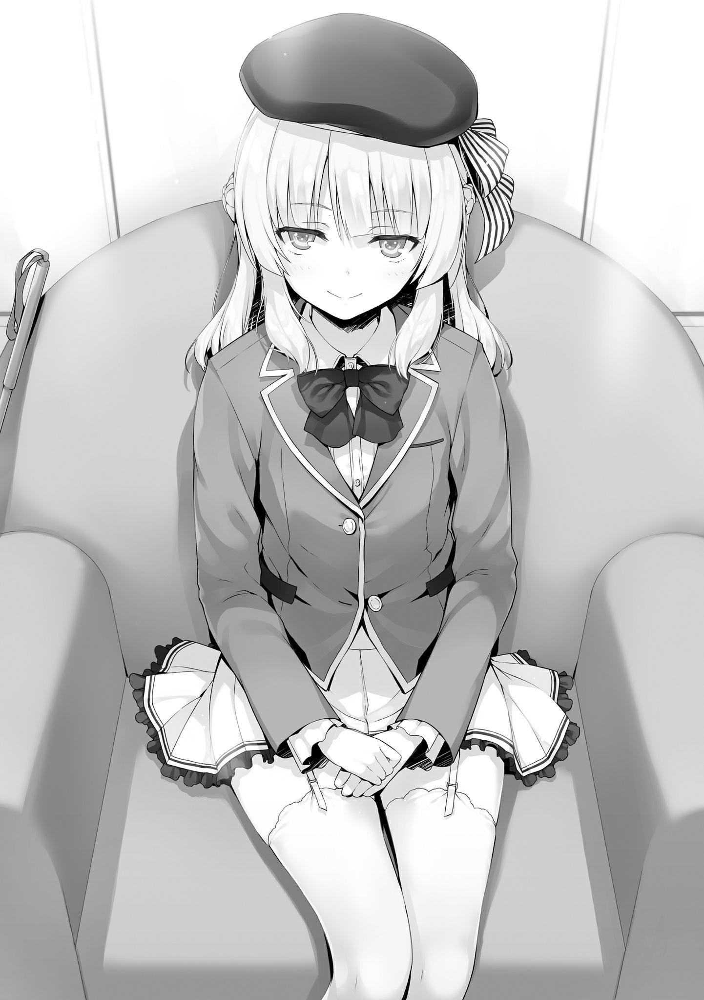
—Los acontecimientos actuales están afectando las operaciones de la escuela, y ha llegado al punto en el que no podemos ignorarlo. Para resolver esta situación tranquilamente, espero que ustedes dos profesores puedan ayudarme mientras mantengo este caso confidencial.
—Escuché que había algo importante que decirme... ¿Es una broma?
Chabashira-sensei.
Aunque le resultaba muy difícil de creer, Mashima-sensei le pidió una explicación a Chabashira-sensei.
—No pretendía burlarme de ti. ¿Pensaste que soy alguien que hace cosas sin sentido como Hoshinomiya-sensei?
—Eso es lo que dices, pero no entiendo la situación en absoluto. Ahora mismo, también hay una ceremonia de clausura en la que debería estar.
Esto iba a ser originalmente un momento valioso para interactuar con los graduados.
No mostró ningún interés en escuchar la imaginación de un niño enloquecido.
—¿Qué es lo que Ayanokouji quiere hacer?
—No lo sé, aunque quiera explicarlo, no puedo. Como dije ayer, acabo de preparar esta ubicación bajo las órdenes del Director Sakayanagi. También necesito una explicación para entender lo que está pasando.
Los dos profesores me miraron con dudas, pero yo seguí explicando.
—Si dijera que soy la razón por la que Tsukishiro reemplazó al Director Sakayanagi después de ser confinado por sospecha de mala conducta, ¿qué diría, Mashima-sensei?
—¿Qué?
Aunque entráramos directamente en el tema, no sería fácil progresar en esta situación.
No sólo eso, sino que las dudas de Mashima-sensei son cada vez más profundas.
—Esto no tiene sentido. ¿Por qué es por ti?
Por supuesto, esta sería la reacción natural.
Nunca habría pensado que un estudiante daría forma a la estructura misma de la escuela.
Por supuesto, deberíamos empezar con el examen de fin de año.
—Déjeme explicarle lo que pasó...
Cuando quise mencionar el examen de fin de año, Sakayanagi levantó la mano.
—Lo siento, ¿pero está bien que yo lo explique?
Sakayanagi anticipó que esto pasaría y sugirió que lo explicara ella misma.
—Sakayanagi, dijiste que sabías de la situación, ¿verdad?
—Bueno, si pueden disculpar mi grosería, creo que entiendo la situación un poco mejor que ustedes los profesores.
Sakayanagi actuó inmediatamente. Tal vez pensó que en lugar de que alguien simplemente involucrado explicara, sería más rápido que alguien que entendiera la situación explicara. Asentí ligeramente, así que Sakayanagi dirigió su atención a Mashima-sensei.
—¿Estás diciendo que ya escuchaste sobre esto del Director?
—No, es sólo por lo que he entendido. Ayanokouji-kun y yo... ¿cómo decirlo?... simplemente, somos como amigos de la infancia.
Sakayangi dijo esto con alegría. Aunque no estaba seguro de cómo reaccionarían los demás, los profesores parecían sorprendidos, como mínimo.
—Nunca esperé que ustedes dos fueran... amigos de la infancia...
Sakayangi le explicó a Chabashira-sensei lo que quería decir.
—Es algo parecido a eso. De todas formas, les explicaré la situación.
El asunto de los amigos de la infancia fue pasado por alto por Sakayanagi, y comenzó a explicar la situación.
—Repasemos lo que sucedió durante el enfrentamiento entre Ayanokouji-kun y yo como los dos comandantes en el examen de fin de año celebrado hace unos días. En ese entonces, mi victoria durante el evento final de ajedrez determinó el resultado del examen.
Este fue el resultado, lo cual era un hecho, al menos hasta donde la escuela sabía.
—¿Qué pasó entonces?
Por supuesto, Mashima-sensei y Chabashira-sensei no tendrían ninguna duda sobre lo que pasó.
—¿Y si dijera que en ese momento alguien intervino e interfirió en la partida, lo que cambió el resultado, y por lo tanto tuvo un gran impacto en los resultados del examen? ¿No sería eso un problema serio?
—Los exámenes se llevan a cabo de forma muy estricta, y no hubo ni habrá problemas con la forma en que se llevan a cabo.
—Déjeme preguntarle, ¿en qué se basa para decir que el examen se hizo estrictamente? Ninguno de los dos estuvo presente durante el examen.
Como no podían actuar como vigilantes de su propia clase, Chabashira-sensei y Mashima-sensei estaban a cargo de la clase de Ichinose y Ryuuen. En otras palabras, no vieron nuestro examen en persona.
—Originalmente fui la perdedora de ese juego de ajedrez, Ayanokouji-kun salió victorioso.
—¿Ayanokouji ganó esa partida? Pero vi los resultados de la partida, y también vi lo que pasó durante el encuentro.
La primera persona en decir algo sobre esto no fue Mashima-sensei, sino Chabashira-sensei.
Fue debido a la derrota de la Clase C en el ajedrez que hizo que su clase cayera a la Clase D, por lo que se preocupó tanto por este tema.
—¿Todavía no lo entienden?
Sakayanagi usó esa pregunta para sondear a Mashima-sensei y Chabashira-sensei.
—¿Qué estás tratando de decir? ¿Podría ser que el director interino Tsukishiro manipuló los resultados de la partida de ajedrez? Sakagami-sensei y Hoshinomiya-sensei se reunieron después del examen, y no encontraron algo irregular que haya sucedido.
—Lo que cambió no fue el resultado, sino el proceso. Es imposible ver la verdad si uno está obligado por el sentido común. Las órdenes que envió el comandante no llegaron directamente a los estudiantes. En su lugar, se pasaron a la escuela para ser revisadas, y después de eso, finalmente se enviaron a través de los auriculares.
¿Entendieron ahora? Así de simple, Sakayanagi los hizo llegar lentamente a una comprensión.
Por primera vez, las dudas sobre el Director Interino Tsukishiro y el examen de fin de año pasaron por la mente de Mashima-sensei.
—Era raro tener un examen que utilice un equipo tan grande y los profesores lo sabían, pero el hecho es que el Director Interino Tsukishiro lo preparó para intervenir ilegalmente en el examen.
Sakayanagi sutilmente entrecruzó las mentiras, los misterios, así como la verdad.
Debido a lo mucho que Tsukishiro había planeado, sólo él conocería la situación completamente.
En lugar de confirmar los hechos, era una explicación apropiada basada en sus conjeturas, y actuó como si fuera la verdad.
Esas palabras serán aceptadas por los maestros.
Mashima-sensei y Chabashira-sensei no serían capaces de entenderlo completamente debido al gran volumen de información que se les acaba de revelar. Como Sakayanagi todavía estaba explicando el asunto, para poder seguirle el ritmo, sus mentes tendrán que tratar lo que ella dijo como un hecho.
—Es decir, la información que Ayanokouji-kun introdujo y la que Horikita-san escuchó, es decir, el contenido leído por la máquina, fue diferente. Si ella hubiera seguido las verdaderas instrucciones de Ayanokouji-kun, yo habría perdido. ¿Entienden lo que eso significa?
Sakayanagi sonrió, poniendo a prueba su capacidad de comprensión.
¿Podrían entender con sólo eso? Esto restringía su respuesta a una sola posibilidad.
—¿Quieres decir que el Director Interino Tsukishiro manipuló los resultados en secreto?
—Porque para él, el punto de protección que tenía Ayanokouji-kun impedía su verdadero objetivo, hacer que Ayanokouji-kun sea expulsado.
Los dos profesores no hablaron.
Pero en poco tiempo, Mashima-Sensei preguntó algo.
—¿Es cierto lo que dijo Sakayanagi, Ayanokouji?
—Sí, es como ella dijo.
—Admito que lo que ambos dijeron tiene algo de sentido. Como he sido el profesor de Sakayanagi durante un año, tengo cierta comprensión de su personalidad y de cómo piensa. Si realmente quisiera perder contra Ayanokouji a propósito, sólo necesitaba elegir cuidadosamente los diferentes exámenes para manipular los resultados a su gusto, incluyendo el ajedrez. No se podía ganar nada al rebajarse para elevar a Ayanokouji.
Como líder de la clase A, aunque Sakayanagi mintiera, admitir su derrota no tendría ningún beneficio.
Es como dijo Mashima-sensei. Si ella quería que yo ganara por razones personales, había muchas maneras de conceder la victoria, ya sea excediendo el límite de tiempo o algún otro método.
No había necesidad de establecer conscientemente algo mientras se decía algo de dudosa credibilidad.
—Pero incluso si conoces toda la secuencia de eventos, no hay manera de que un tercero confirme su autenticidad, ¿verdad?
Chabashira-sensei respondió al argumento infundado de Sakayanagi.
—Esto era difícil de creer al principio.... ¿qué piensas?
Chabashira-sensei pidió la opinión de Mashima-sensei, quien escuchaba atentamente lo que se decía.
—No importa lo que yo piense, la situación actual es difícil de aceptar para cualquiera.
Justo cuando Mashima-sensei a quiso retroceder un poco, Chabashira-sensei lo detuvo.
—Mi opinión personal es que lo que estos dos dijeron tiene algo de verdad.
Desde que el Director Interino Tsukishiro vino a esta escuela, toda ella se siente un poco anormal.
—Si crees eso sólo por tus sentimientos personales hacia Tsukihiro, entonces no necesito considerar lo que piensas. Es lo mismo que pensar que tu clase puede ganar.
Mashima-sensei habló severamente hacia Chabashira-sensei delante de nosotros.
Y luego inmediatamente habló con nosotros, los estudiantes.
—¿Tienen ustedes dos alguna prueba?
—Si dijéramos que oímos hablar del comportamiento impropio directamente del propio Tsukishiro, ¿nos creería?
—...Por supuesto que no.
Una persona que se comportara de forma inadecuada en secreto no revelaría su comportamiento.
Incluso si el asunto saliera a la luz, esa persona no respondería a nada. Eso era algo que todos entendían.
—Es difícil creer que haya un niño que quiera algo similar a lo que quiere el director interino Tsukishiro. Deshacerse del otro. Eso es lo que realmente pienso.
—Es la verdad.
—No quiero dudar de lo que ustedes, los estudiantes, dicen. Tampoco creo que sean tan estúpidos como para no darse cuenta de que mentir ahora mismo no les servirá de nada. Pero esto carece de cualquier base, así como de evidencia.
Aunque realmente quería creerlo, si no había pruebas fiables, Mashima-sensei no lo aceptaría.
—¿Qué clase de persona eres, Ayanokouji? Por favor, dímelo.
Era sólo cuestión de tiempo antes de que Mashima-sensei hiciera esa pregunta.
El Director Sakayanagi fue confinado por sospechas de mala conducta, así que un hombre llamado Tsukishiro fue enviado a esta escuela.
Tsukishiro empezó a actuar para que yo dejara la escuela. Incluso si eso significaba interferir con un examen especial, tenía que cumplir su orden. Así que era inevitable que surgieran preguntas sobre mí.
¿Debería explicarlo yo mismo, o dejárselo a alguien más?
Viendo que no había respuesta de mi parte, Mashima-sensei se dirigió a Chabashira-sensei.
—¿Sabes algo sobre Ayanokouji?
Mashima-sensei le preguntó a Chabashira-sensei, quien creyó lo que dijimos hasta cierto punto.
—Para ser honesta... de mis experiencias pasadas, sólo sé un poco.
Ella me miró. La ignoré fríamente.
No había ningún daño en que Chabashira-sensei expusiera alguna información superficial sobre mí.
—Miré los resultados del examen de ingreso de Ayanokouji, y obtuvo 50
puntos en todos los temas, lo cual me pareció extremadamente peculiar.
—50 puntos por cada asignatura... ¿significa eso que intentó a propósito anotar la mitad de puntos por cada asignatura?
—Si investigas más profundamente, deberías ver que es verdad.
—¿Hou? Qué intrigante.
—Pero esto no prueba nada. En general, los estudiantes no frenan sus habilidades durante el examen de entrada, pero si tienes una alta capacidad académica, no es difícil conseguir puntuaciones como esa. De hecho, el método que utilicé para calcular las puntuaciones del examen de ingreso fue en realidad muy simple.
—Además, cuando Ayanokouji se matriculó en esta escuela, el Director Sakayanagi me dijo que era un estudiante especial.
—¿El Director Sakayanagi dijo eso? ¿Es por eso que estás aquí?
¿Chabashira-sensei?
Chabashira-sensei asintió y comenzó a hablar de lo que pasó en ese momento.
—Me confió, como su maestra principal, el deber de informarle de cualquier inconveniente relacionado con Ayanokouji. Por lo que sé, el padre de Ayanokouji es una persona muy autoritaria, y no quería que él entrara en esta escuela. El Director Sakayanagi tuvo que usar varios métodos contundentes para permitirle entrar en la escuela.
—¿Así que te has inscrito en esta escuela sin el permiso de tu tutor?
Parece que el Director también es alguien dispuesto a usar medios tan contundentes para conseguir lo que quiere.
Si ignorábamos la educación obligatoria, todo niño ordinario necesitaba el permiso de sus padres para entrar en la preparatoria. El mundo no es tan ingenuo como para dejar que los niños hagan lo que quieran.
—Debido al hecho de que mi padre y Ayanokouji-kun tienen algún tipo de relación, simpatizo con su desafortunada situación y le ayudaré cuando sea necesario. Pero ahora, han surgido varios problemas debido a este incidente. El director interino, Tsukishiro, fabricó pruebas para restringir a mi padre en términos de comportamiento deshonesto, e intentó que Ayanokouji fuera expulsado.
Ese fue el punto más importante para Mashima-sensei.
—El padre estaba en contra de que su hijo entrara en esta escuela, así que envió al Director Interino Tsukishiro aquí...
Esto no era algo que la autoridad de una persona ordinaria pudiera lograr.
—No necesitaba hacer todo esto, sólo tenía que quejarse con la escuela.
—Su padre ya había organizado una reunión entre él, el director y el propio Ayanokouji después de que se inscribiera.
—¿Así que estás diciendo que su tutor ya se había comunicado con la escuela con el deseo de que quería que Ayanokouji se retirara de la escuela?
—Sí. Es como dice Chabashira-sensei. Una vez hablé con el Director Sakayanagi y mi padre en esta misma sala. Pueden comprobar las cámaras de vigilancia en el pasillo para confirmar si es verdad.
—Y después de eso, ya que todavía estás en la escuela, ¿significa eso que el Director rechazó la solicitud de retiro?
—Sí.
Mashima-sensei quería confirmar ese hecho, así que Chabashira-sensei asintió con la cabeza.
—El Director Sakayanagi respetó la voluntad de los estudiantes. Aunque esto era sólo un intercambio temporal... no esperaba que el Director Interino Tsukishiro fuera enviado a la escuela sólo para que Ayanokouji fuera expulsado.
Sakayanagi saltó con lo que dijo Chabashira-sensei.
—No es una sorpresa, parece que Chabashira-sensei no sabe nada de la situación.
—Parece que estás segura de eso.
—Sí. Entiendo a Ayanokouji-kun más que usted, Chabashira-sensei.
Sakayanagi siempre tenía esa innecesaria aura de superioridad a su alrededor.
—Viéndome venir aquí sin una invitación sin siquiera objetar mi presencia,
¿no sería obvio?
Presentando hechos indiscutibles, Sakayanagi sonrió con orgullo.
—Finalmente, llego a entender el panorama general. Al menos la parte del padre que quería recuperar a su hijo, puedo aceptarla como un hecho.
Mashima-sensei descubrió lo que estaba pasando en la situación actual, pero aun así no podía aceptar la mayor parte.
—Pero... aunque no conozco el alcance de la autoridad del padre de Ayanokouji, ¿por qué intentó expulsar a Ayanokouji de esta manera? Esto no parece realista.
—Porque Ayanokouji-kun posee medios que otras personas ordinarias no poseen.
—He visto los resultados de los exámenes de Ayanokouji de los últimos días. En términos de cálculo y velocidad de procesamiento así como en la elección de movimientos de ajedrez, él es definitivamente de primer nivel. Pero hay otros estudiantes igualmente destacados, y no debería ser suficiente para etiquetarlo como un espécimen extraordinario.
—Mashima-sensei. No intentaré rechazar el método en la forma en que ha intentado aceptar esta situación. ¿Pero ha pensado realmente en lo que está pasando? Desde el comienzo en la escuela, mi padre le prestó atención, y luego el Director Interino Tsukishiro trató de usar medios deshonestos para expulsarlo.
Esto es un hecho, y la única verdad.
Mashima cruzó los brazos y cerró los ojos.
—Mashima-sensei presumiblemente ha llegado a su veredicto. Puede buscar pruebas en el futuro usted mismo.
Después de permanecer en silencio, abrió los ojos y me miró a mí, a Sakayanagi, y finalmente, a Chabashira-sensei.
—Sí... La parte en la que el padre está insatisfecho con la decisión de su hijo de matricularse en la escuela e intenta que lo expulsen, la creo. Y no quiero ayudarlo con eso. Estoy seguro de que tienes claro el por qué.
Mashima-sensei entendió muy bien la esencia de la situación de la que estábamos hablando.
—¿No vas a contarme todo?
Parece que Mashima-sensei descubrió algo que se mantuvo en secreto durante la conversación al organizar el contenido de la discusión en su cabeza.
Pero si ni siquiera pudo descifrar algo a este nivel, entonces estaré preocupado.
—Sí. Aunque se lo dijera, no sería de ninguna ayuda... no, no tendría sentido.
Aunque hablara de la habitación blanca desde el principio, me temo que los adultos no serían capaces de entenderla.
Incluso si se confiaba sólo en el sentido común, era obvio que ese hombre estaba haciendo algo sospechoso.
Y, aunque hablara de la habitación blanca aquí, todavía era difícil llegar a la verdad.
Porque ese asunto ya habría sido completamente encubierto a estas alturas.
Siendo así, no tenía sentido hacer cosas tan insignificantes.
—¿Y si me niego a ayudarte?
—Aunque mi intención es hacer algo, si se rehúsa, será un dolor de cabeza al tratar con el Director Interino Tsukisiro. Los eventos de la escuela, ya sea un examen especial u otra cosa, será mucho más fácil para él intervenir ilegalmente. Se puede ver eso en el examen de selección de eventos, como ya ha sucedido.
Los estudiantes por sí solos no podían evitar que eso sucediera.
Si pudiéramos transmitir ese hecho a Mashima-sensei, podríamos determinar si era una persona que haría la vista gorda ante ese tipo de cosas.
—¿Estás intentando sondearme, Ayanokouji? ...Bien. En futuros exámenes y pruebas especiales, lo manejaré apropiadamente, y no permitiré que el Director Interino Tsukishiro se involucre en una participación ilegal.
Finalmente, Mashima-sensei dijo que estaba de nuestro lado.
—Mashima-sensei, te das cuenta de que eso no es algo tan simple de hacer, ¿verdad?
Chabashira-sensei advirtió a Mashima-sensei, quien aceptó todo esto.
—Aunque sea cierto que hizo algo en contra de las reglas, si no tenemos cuidado, podríamos ser despedidos.
Puedo entender por qué Chabashira-sensei dijo eso.
Resistirse a Tsukishiro sin duda amenazaría su carrera.
El oponente esta vez no era alguien contra quien se pudiera luchar con un fuerte sentido de la justicia.
—Aunque no creo totalmente en esto, si lo que dijo es verdad, entonces sería un asunto grave. La escuela nunca debe manipular los resultados del examen y cambiarlos a voluntad. Si van a hacer esto, tendrán que hacerlo minuciosamente y con cuidado.
—Pero, ¿no sería mejor que simplemente ignoraras estos temas? Esta mañana te han recortado el sueldo por violar las reglas durante el examen de selección del evento.
Sakayanagi pensó que era interesante, así que aprovechó la oportunidad.
—¿Recortes de sueldo por violaciones? ¿Qué hizo exactamente?
—No voy a decirte eso.
—¿Es por algo que ocurrió durante el examen de la clase B y D? Nos enteraremos de esto tarde o temprano. Pero si tiene algo que ver con los actos impropios de Tsukishiro, creo que es mejor hablar ahora, o pueden surgir problemas más tarde.
—Eso no tiene nada que ver con la situación actual.
En lugar de Mashima-sensei que no pensaba explicar, fue Chabashira-sensei quien habló.
—Déjame explicarte. Durante la selección de la clase B y D, uno de los eventos seleccionados de la clase D fue el Judo. El estudiante que participó fue Albert Yamada. Ichinose de la clase B perdió todo su espíritu de lucha durante ese momento, lo que le hizo fallar en la selección de un estudiante a participar.
—Debido a que el oponente era Yamada-kun, eso era de esperarse.
Probablemente nadie en el primer año puede vencerlo en judo.
—Por supuesto, Ichinose ya había decidido quién iba a participar en el evento de judo. Sin embargo, si el estudiante era elegido al azar, ¿qué pasaría?
Algo impredecible ocurriría. Debes ser consciente de esto.
Una vez que el tiempo se acabara, los estudiantes que no hubieran participado en ningún evento serían seleccionados automáticamente.
No sólo los chicos, sino que las chicas tampoco son una excepción.
—Aunque hubieran perdido inmediatamente, no habría pasado nada como resultado. Pero esta era la clase B, y harían cualquier cosa por el bien de sus
compañeros. Los estudiantes seleccionados seguramente harían todo lo posible por Ichinose.
No importaba quién fuera el oponente, Albert no se contendría para destruirlos.
En ese caso, era probable que hubiera resultado en un accidente grave.
Como resultado, Mashima-sensei decidió que la Clase B había sido derrotada, sin siquiera haber tenido una pelea. Esto podría haber causado que el Director Interino Tsukishiro no estuviera contento con él.
¿Fue por eso que el salario de Mashima-sensei fue recortado como castigo? Si tuviera que decir si esto violó las reglas o no, sería considerado una violación.
—Ambas situaciones están conectadas. Si algo se considera peligroso para los estudiantes, lo detendré rápidamente. Si hay un comportamiento inapropiado, rápidamente lo corregiré. Les enseñamos esto, así que, ¿qué pasaría si los profesores ni siquiera aplicamos lo que enseñamos con nosotros mismos?
Y por esa razón, aunque lo despidieran, no se arrepentiría de nada.
—Parece que no puedo detenerte.
—Siempre he hecho a conciencia mi trabajo como profesor.
Las palabras que dijo parecían simples, pero Mashima-sensei era realmente una excelente persona que podía hacer lo que decía.
—Tu... no, si la decisión de Mashima-sensei es final, no tendré nada más que decir.
—¿Es un acuerdo temporal?
Sakayanagi me preguntó, y yo asentí con la cabeza.
Chabashira-sensei se retiró, presumiblemente porque se dio cuenta de que tratar de persuadir a Mashima-sensei no tenía sentido.
—Ya que Mashima-sensei estuvo de acuerdo, yo también ayudaré. ¿Está bien, Ayanokouji?
—Una persona más de nuestro lado es muy apreciada.
—Vamos a poner fin a esta discusión ahora. Me guardaré esto para mí. No hay problema con eso, ¿verdad?
—Por supuesto.
Después de todo, ni Mashima-sensei ni Chabashira-sensei habían visto las fechorías de Tsukishiro con sus propios ojos.
Y si aumentamos el número de profesores que están al tanto, las posibilidades de una fuga de información aumentan sustancialmente.
Una vez que Tsukishiro descubra que hay gente que está tratando de exponer sus fechorías, entonces lógicamente estará más alerta.
—También tengo la intención de estar del lado de Ayanokouji en este momento.
—Sakayanagi. Aunque conozcas la situación de Ayanokouji, si la gente te ve dándole un trato especial, se plantearán algunas preguntas.
—¿De qué está hablando? Por supuesto que le daré un trato especial.
Tengo derecho a hacerlo.
Sakayanagi rebatió las palabras de Mashima.
—...¿Con qué derecho?
—Aunque el sistema de esta escuela gira en torno a la competencia entre las clases, los propios estudiantes pueden tener varias situaciones entre ellos.
Algunos de ellos pueden tener amigos o novios en otras clases a los que tendrán que traicionar, y algunos pueden tener relaciones que giran en torno al dinero, que pueden ser mutuamente beneficiosas o de interés común. A veces, los sentimientos de uno pueden ir más allá de los límites de las clases, formando relaciones mutuamente beneficiosas con otras personas. ¿El clima social de esta escuela es siempre el mismo? No, cambia constantemente. De esa manera, es igual que la sociedad misma, ¿no es así?
No importaba si el Director Sakayanagi tenía a alguien a quien quería proteger, no tenía poder para hacer nada.
—Aunque sólo pudiera salvar a Ayanokouji-kun y dejara a mis compañeros de clase en la clase A, los profesores no tendrían ninguna razón para culparme.
Los únicos que pueden resentirse conmigo serán los estudiantes a los que he traicionado.
Mashima-sensei puede estar insatisfecho con lo que dijo Sakayanagi, pero no respondió.
—Pero... puede que encuentre que el tratamiento especial no es bienvenido.
—¿Por qué?
—Esperaré hasta que el director interino se haya ido, pero después de eso, las cosas serán diferentes. Y si la clase D obstruye a la clase A, los eliminaré sin piedad en cualquier momento.
—¿Lo harás? Eso es bueno.
Mashima-sensei lo aceptó y se enfrentó a Sakayanagi con determinación.
—Recapitulemos. En este momento, no se pudo encontrar ninguna evidencia que pruebe que el Director Interino Tsukishiro haya cometido una fechoría, ¿es eso cierto?
—La evidencia ha sido borrada, así que no tendría sentido investigar ahora.
No haría algo tan tonto como dejar deliberadamente una prueba.
—Entonces, parece que sólo podemos esperar su próximo movimiento.
Los profesores tienen una mejor comprensión de los exámenes que enfrentaremos cuando lleguemos a 2º año.
En cuanto a lo que hará Tsukishiro, dejaré que Mashima-sensei lo piense.
—Han pasado más de 30 minutos, y no será bueno estar ausente de la ceremonia de clausura por mucho tiempo. Ustedes, estudiantes, salgan primero, y luego dejaremos la sala por separado.
—Entendido.
Sakayanagi y yo salimos de la sala de recepción y nos dirigimos al pasillo al mismo tiempo.
Luego los dos caminamos juntos, uno al lado del otro.
—Aunque es un movimiento audaz, es muy beneficioso tener a Mashima-sensei de nuestro lado. Como la persona a cargo del primer año, es más cercano al director interino que cualquier otro.
—Je. Aunque no detenga a Tsukishiro por completo, si lo frena, entonces será un buen resultado.
—Pero el problema de un sentido de la justicia demasiado fuerte es un poco preocupante. Eso debería considerarse una de las desventajas de Mashima-sensei.
—Sí. Aunque es beneficioso, también hay situaciones en las que no se puede utilizar.
—Si se involucra demasiado, Mashima-sensei será despedido. Pero ya que es ese tipo de persona, tarde o temprano sucederá.
Dijo Sakayanagi. Mirando el perfil de su cara, parecía feliz.
—Pareces feliz.
—Estoy encantada. ¿No estás contento?
—Es difícil de decir. La situación en la que estoy es un poco problemática.
Por ejemplo, que la razón por la que estás aquí es que...
—Sí, estoy aquí porque esto parece divertido. ¿Te he molestado?
Sakayanagi admitió inmediatamente todo eso.
—No. Debido a tu aparición, mejoré mis posibilidades de persuadir a Mashima-sensei, te lo agradezco.
—Bueno, entonces es genial.
Sakayanagi se giró para mirar hacia mí y sonrió.
—No permitiré que la escuela interfiera repetidamente con el resultado de nuestras batallas.
Sakayanagi estaba muy enfadada por lo que Tsukishiro le hizo.
Después, dijo que presentaría una batalla completa contra Tsukishiro, y que trabajaría para sacarlo de la escuela.
—El enemigo que está justo delante de nosotros es el descuido, y debemos resolverlo lo antes posible.
A los ojos de Tsukishiro, no somos más que unos pocos estudiantes de preparatoria. No importa cuánto lo intentemos, no podemos crear una tormenta lo suficientemente grande como para afectarle.
Si él pensara así, cometería errores.
—Ayanokouji-kun. Por el momento, por favor déjame trabajar para deshacerme del Director Interino Tsukishiro.
—Gracias por tu ayuda.
El que se pueda confiar en ella no es algo que deba ser considerado como un asunto crítico.
Porque basándome en nuestras interacciones anteriores, ya estaba familiarizado con la personalidad de Sakayanagi.
PARTE 5
Después de que los dos estudiantes se fueron.
Mashima reveló abiertamente su opinión a Chabashira-sensei.
—Todavía no puedo creer lo que está pasando.
—Estoy igual, Mashima-sensei. Pero lo que dijo Ayanokouji-kun es cierto.
—¿Interferir con la estructura misma de la escuela, todo por un solo estudiante?
Exclamó Mashima-sensei. No importa cuánta gente a su alrededor enfatizara la autenticidad de la situación, aún sería difícil de creer.
—Has observado a Ayanokouji durante un año, Chabashira-sensei, así que,
¿qué clase de existencia crees que es?
—Es una pregunta difícil.
Como no podían quedarse mucho tiempo, dejaron la sala de recepción un minuto después de que Ayanokouji y Sakayanagi se fueran.
—A primera vista, parece un chico de preparatoria normal que puedes encontrar en cualquier lugar, indiferente a su entorno.
Los demás profesores de las otras clases probablemente pensarían en él de esa manera.
Su impresión de él no sería profunda, tal vez sería hasta el punto de que apenas se podría relacionar el nombre con la cara.
—Pero hay dos lados de él. Es desconcertante. Esos ojos que ven a través de todo, no son los ojos de un niño.
—Sigo sin creerlo...
—Sí. Un estudiante de primer año que ya ha alcanzado ese nivel...
—Aunque sólo he sido profesor durante unos pocos años, he visto muchos tipos de estudiantes. Si nos centramos en los últimos dos años, Horikita Manabu y Nagumo Miyabi son los que han dejado una impresión sobresaliente de sí mismos.
—Eso es verdad.
Ambos estudiantes tenían excelentes habilidades académicas y atléticas, insuperables en sus respectivos años, y además poseían una rara capacidad de liderazgo.
—Los estudiantes de primer año de este año me dieron la impresión de que son ligeramente inferiores en comparación con esas dos personas. Por supuesto, algunos pueden igualarlos en algunos aspectos, pero no en todos. En general, ¿cuál crees que es el alcance de las habilidades de Ayanokouji?
—¿Tendrá mi respuesta algún impacto en lo que hagas en el futuro?
—No, en absoluto. No importa qué clase de estudiante sea Ayanokouji, no permitiré que el director interino Tsukishiro haga lo que quiera. Esto es sólo por curiosidad.
—Curiosidad... Eso es inusual para ti. Pero todavía estoy tratando de averiguarlo yo misma.
Chabashira-sensei también era una de las personas que quería saber más sobre Ayanokouji.
Era cierto que no podía responder.
—Esa es realmente una pregunta difícil.
Mashima se cruzó de brazos con desagrado.
—Originalmente, los profesores deben mantener una distancia de trabajo adecuada con los estudiantes y guiarlos de esa manera. Formar relaciones tan cercanas no es lo mejor que podemos hacer.
—Así que sólo tenemos que eliminar al Director Interino Tsukishiro lo más rápido posible.
—Pero después de que lo eliminemos, ¿eso será el final de todo esto?
—¿Qué quieres decir?
—Aunque expongamos al Director Interino, no hay garantía de que no envíen otra persona después. En ese caso, la situación de Ayanokouji creará un
disturbio durante todo el año... Dependiendo de la situación, incluso la propia escuela podría sufrirlo.
Mashima expresó su propio malestar.
Por supuesto, a pesar de decir eso, no abandonaría a los estudiantes.
—La forma en que se desarrolla esta situación, es como si me hundiera cada vez más en arenas movedizas. Esto me asusta.
—Sí.
Si esto continuara, otros estudiantes no podrían recibir una evaluación justa.
Esto es algo que los profesores deben evitar que ocurra.
—Pero espero que mi corazonada no resulte ser cierta.
Los dos maestros imaginaron lo que sucedería en el futuro, y rezaron para que esos fueran sólo temores infundados.
PARTE 6
Después de pasar el resto del tiempo tras el final de la conversación con los profesores y Sakayanagi, fui al gimnasio.
Pronto, los de 3º año, quienes estaban en la reunión de agradecimiento, saldrían.
La gente a mi alrededor esperaba ansiosamente su llegada.
A medida que se acercaba ese momento, la ansiedad de los alumnos de primer y segundo año parecía aumentar.
Algunos de los de 3er año se irían directamente después de la ceremonia de graduación, pero tal vez algunos se quedarían, queriendo decir algo que siempre han querido decir antes.
¿Cuántas personas había en total? Por lo que pude ver, había alrededor de 100.
Había una persona que reconocí, de pie a una pequeña distancia del grupo principal de personas.
—Realmente viniste.
Saludé a Horikita, que estaba de pie en medio de la multitud que esperaba, pero sólo recibí una mirada a cambio.
—...¿Qué hay de malo en eso?
—Nada, sólo estoy impresionado.
—¿Impresionado? No sé qué quieres decir con eso.
—Estaba pensando que si fuera la antigua tú, no habrías venido aquí.
Horikita parece un poco disgustada con mis elogios.
—¿En serio? No he cambiado nada. Sigo siendo yo.
Negó su crecimiento. Se podía ver que ni siquiera intentó reexaminarse a sí misma.
No, simplemente no quería admitirlo delante de otras personas.
La reunión de agradecimiento en el gimnasio finalmente terminó y las puertas se abrieron.
Se terminó oficialmente.
Ahora era la última oportunidad para que los graduados se comunicaran formalmente con el resto de los estudiantes.
Después de que terminó, salió una oleada de estudiantes de tercer año.
La mayoría de ellos estaban felices, pero algunos no sonreían.
¿Fue por la soledad que enfrentaban al dejar la escuela, o por el fracaso de no graduarse de la clase A?
Si era esto último, entonces era raro que la mayoría de los estudiantes no estuvieran angustiados.
Sin embargo, aún después de una mirada hacia ellos, podía ver que también había estudiantes ajenos a la Clase A que tenían expresiones de alegría.
—¿Qué piensas?
Le pregunté a Horikita su opinión sobre la situación.
—Aunque el atajo a sus sueños haya sido cortado, todavía pueden usar su fuerza para hacerlo realidad. Mientras tengan la fuerza, se puede lograr.
El camino de la vida seguirá siendo transitado.
Es decir, muchos estudiantes se han enfrentado a la realidad, y han determinado su camino a seguir, con la intención de continuar el camino hacia sus sueños.
Si se mira de otra manera, se puede decir que los alumnos de 3er año que han permanecido en este magnífico escenario ya son impresionantes.
Algunos de los de tercer año volvieron a sus dormitorios sin hablar, pero la mayoría de ellos se detuvieron.
La evidencia de estos tres años que soportaron los estudiantes aquí es ahora tan visible como las cicatrices.
El ex presidente del consejo estudiantil Horikita Manabu seguía aquí.
Nadie se había reunido a su alrededor todavía, así que esta debería ser una buena oportunidad.
Si el número de personas a su alrededor aumentaba, entonces Horikita encontraría difícil acercarse a él.
En lo profundo de su corazón, Horikita estaba esperando esto, y sin embargo no dio un solo paso.
—Deberías ir.
—Lo sé.
Yo no necesitaba decir eso. Horikita sólo estaba aquí por su deseo de hablar con su hermano.
Sin embargo, su cuerpo no se movía.
Durante su momento de incertidumbre, más y más estudiantes comenzaron a acercarse al Horikita mayor.
Si no hacía nada, no habría ningún progreso, así que tomé un enfoque enérgico.
Empujé la espalda de la vacilante Horikita.
—Espera... Espera un minuto-
—Usa tus privilegios como su hermana.
Aunque la insté repetidamente, Horikita insistió en no avanzar.
—Va a ser raro si corro a su lado ahora.
—Aunque te mezcles con los otros estudiantes, no será raro.
—Definitivamente es raro. Seré una completa intrusa.
Horikita evaluó negativamente la situación en cuestión.
Esto me recordó cuando comenzó la escuela.
Recuerdo que miraba fijamente a su distante hermano mayor mientras daba un discurso a los de primer año. Aunque poco a poco fue madurando a lo largo del año, su núcleo permaneció inalterado.
Aunque uno acumulase mucha experiencia, habría partes que serían difíciles de desarrollar.
Fue por la tímida expresión de su cara, que me hizo pensar en todo eso...
—Pero no me malinterpretes, no tengo miedo. Los tres años de mi hermano... Sólo quería ver la culminación de estos tres años para que él llegara a este punto.
—Ya veo.
Quería decir que no se conformaría con una pequeña charla con su hermano.
No está mal.
Unos cuantos estudiantes más de segundo año corrieron hacia el Horikita mayor.
—Tu hermano es muy popular.
Era el presidente del consejo estudiantil y el chico que siempre ha permanecido en la clase A. Por supuesto que es popular. Inicialmente pensé que no era muy cercano a los de primer año, así que nunca hubiera pensado que tantos estudiantes de primero vendrían.
Pronto, el círculo a su alrededor comenzó a crecer, rodeado de otros graduados.
De vez en cuando sonreía y se abría suavemente a la generación más joven.
Pero al final de eso, vi una expresión ligeramente diferente.
Sentí la atmósfera de que se había liberado de la fuerte presión que estaba sobre él.
A mi lado, era como si Horikita tratara de grabar esta visión en sus ojos, mirándolo sin parpadear.
Y entonces, un chico apareció junto al mayor de los Horikita.
El actual presidente del consejo estudiantil, el estudiante de segundo año de la clase A, Nagumo Miyabi.
Inmediatamente después, el vicepresidente Kiriyama, los secretarios Mizowaki y Tonokawa, así como Asahina Nazuna.
La atmósfera no se convirtió en algo incómodo, sino que se desarrolló en algo único.
—Felicidades por la graduación, Horikita-senpai.
Soltando un sincero cumplido, Nagumo se acercó a Horikita con una sonrisa.
Horikita saludó a Nagumo sin dudarlo.
—Ahhhh, realmente eres digno de ser llamado mi senpai. Al final, no fui capaz de amenazarte.
—No fue así. Para ser honesto, no sabía qué pasaría al final. Si tengo que decirlo, diría que la razón de tu fracaso fue porque no estamos en el mismo año académico. Por mucho que te hayas entrometido, al final, seguías siendo un forastero.
No importaba cuánto quisiera luchar, no pudo cerrar la brecha entre las calificaciones.
Como no podía participar directamente en los exámenes, lo que podía hacer era muy limitado.
Aunque, si Nagumo realmente hubiera querido derribarlo, podría haber adoptado el caótico e imprudente estilo de lucha de Ryuuen.
Sin embargo, Nagumo parecía no tener esas intenciones.
—Sí. Ah.........., ¿por qué nací un año más tarde que tú?
No estaba insatisfecho, sino decepcionado por no estar en el mismo año que el mayor de los Horikita.
—¿Todavía puedo estrechar tu mano de esta manera?
—Por supuesto, no tengo ninguna razón para negarme.
El mayor de los Horikita accedió gustosamente y se dieron la mano.
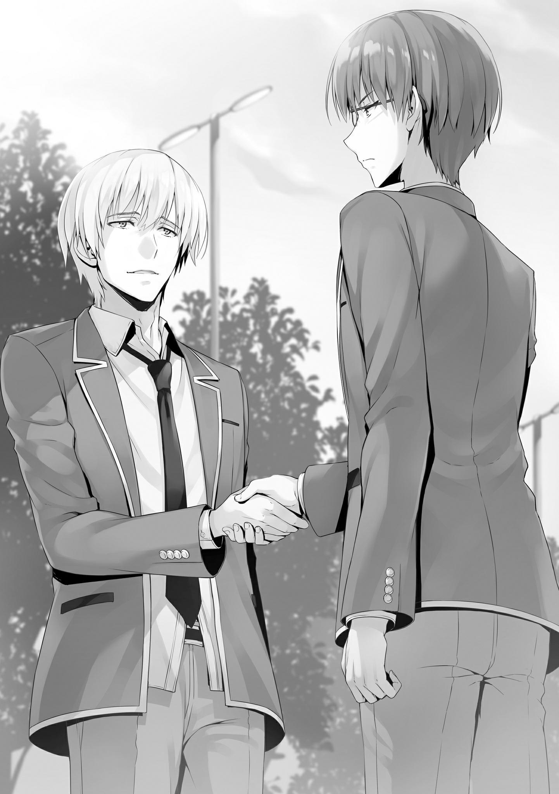
Un breve y agradable silencio asegurado.
Siendo ambos presidentes del Consejo Estudiantil, podían comunicarse y entenderse en ciertas situaciones sin usar ninguna palabra.
—Todavía habrá un largo año por delante para ustedes. Asegúrense de pasar el resto de su vida escolar en algo que los satisfaga.
Un consejo de su senpai. Y con esas palabras, demostró que ya no le importaba que Nagumo se descontrolara.
En otras palabras, ahora le había dado permiso a Nagumo para hacer lo que quisiera.
—Mhmm. Después de que te hayas ido, en ese corto periodo en el que seré el senpai, haré lo que sea necesario. Convertiré esta escuela en una meritocracia basada en las habilidades de cada uno. Porque estoy preparado y decidido a lograrlo.
El hermano de Horikita aceptó su discurso abiertamente, asintiendo con la cabeza.
—Dijiste que te arrepentiste de no ser un año mayor. Yo siento lo mismo.
No poder ver lo que le harás a esta escuela es una lástima. Si pudiera ver de cerca lo que vas a crear, seguramente te entendería mejor.
—No estoy tan seguro de eso. No creo que sea compatible con el senpai.
Uno que seguía las reglas y regulaciones de la escuela, y uno que quería destruirlas
Como sus ideologías eran completamente diferentes, una confrontación entre ellos es inevitable.
—Además, no importará si no puedes verlo por ti mismo. ¿No tienes una hermana en primer año?
Dicho esto, la línea de visión de Nagumo se centró cerca de donde yo estaba, un poco más lejos del resto de la gente, y comenzó a mirar fijamente a Horikita.
Aunque fue sólo un ligero cambio, el lenguaje corporal de Horikita se volvió un poco más nervioso.
—Mientras tu hermana esté aquí, ella puede ayudarme a transmitirte la información.
Una vez que se hayan graduado ambos, los hermanos se encontrarán inevitablemente una vez más en algún momento.
Lo que quería decir es que en el futuro, el hermano de Horikita todavía sabría lo que Nagumo habría hecho en la escuela.
—Tal vez.
Dicho esto, el apretón de manos del hermano de Horikita y Nagumo finalmente terminó, y sus manos se separaron.
—Muchas gracias.
—Lo mismo digo.
El ex presidente del consejo estudiantil, Horikita, y el actual presidente del consejo estudiantil, Nagumo.
Una pesada cortina cayó sobre la inesperada y gentil atmósfera.
Tal vez porque no quería molestar a los otros estudiantes, Nagumo inmediatamente se distanció del hermano de Horikita. Aunque la combinación de los dos presidentes del consejo estudiantil era emocionante, podría hacer un poco difícil que los otros estudiantes se acercaran.
Nagumo, en cambio, caminó hacia Horikita, que estaba observando desde la distancia.
Como compañera de clase 2A, Asahina Nazuna también estaba allí con él. Los otros miembros del consejo estudiantil probablemente se habían ido para despedir a los otros graduados.
—¿Has oído lo que acabo de decir? Por favor, disfruten de lo que haré el próximo año. Recuerdo que tu nombre era...
—Horik-Suzune.
La voz de Horikita fue nerviosa.
Si fuera la Horikita de siempre, no se habría agitado así. Esto fue probablemente el resultado de escuchar la conversación entre él y su hermano.
Nagumo pareció disfrutar de su reacción y miró hacia atrás.
El que estaba en la línea de visión de Nagumo era, no hace falta decir, el ex presidente del consejo estudiantil Horikita.
Ignorando los riesgos, había desafiado continuamente a diferentes oponentes.
Y ahora, estaba rodeado por sus estudiantes, aceptando un ramo de graduación como regalo.
—Suzune, tu hermano es una persona realmente increíble. Deberías estar orgullosa de ser su hermana.
Después de los elogios, volvió a dirigir su mirada a Horikita Suzune.
—Sí. Estoy orgullosa de eso.
Ante la mirada de los ojos que habían vuelto a ella, Horikita respondió a la fuerza.
—Si tienes algo que quieras preguntarme, te lo responderé. Porque hoy estoy de buen humor...
—Entonces no me contendré.
Horikita entonces le hizo una pregunta a Nagumo.
—¿No te arrepientes?
—¿Arrepentirme?
—Porque no veo ningún indicio de arrepentimiento en tus ojos.
Esto debería referirse al apretón de manos y al diálogo entre esas dos personas ahora mismo.
Nagumo parecía genuinamente feliz por el mayor de los Horikita que se graduó de la clase A.
Sin embargo, su relación no podía ser descrita como una simple relación entre dos presidentes del consejo estudiantil.
Nagumo persistentemente atacó a Horikita, con la esperanza de sacarlo de la clase A.
Horikita obviamente tendría un sentido de hostilidad hacia Nagumo que le hizo esas cosas a su hermano.
Debido a esto, ella estaba confundida por los honestos elogios dados por Nagumo hacia el mayor de los Horikita.
Los meticulosos ataques de Nagumo fueron defendidos firmemente.
—No creo que pueda vencer a Horikita-senpai tan fácilmente. Es un oponente prácticamente invencible, ¿verdad?
—Bueno... Eso es verdad.
—Así que admites que perdiste completamente contra Horikita-senpai.
Miyabi lanzó suavemente sus ojos hacia Asahina.
—¿Perder? ¿Por qué dices que perdí, Nazuma?
—¿Hmm? Horikita-senpai se graduó de la clase A, ¿eso no significa que perdiste?
Asahina no necesitaba responder a la pregunta con otra pregunta, pero así fue como respondió.
En cuanto a sus palabras, Nagumo inmediatamente señaló los agujeros que había en ellas.
—De hecho, si sólo miras el resultado, no impedí que Senpai se graduara de la clase A. ¿Pero qué tiene eso que ver con perder?
—¿No se considerará eso como una derrota...? Al menos eso es lo que pienso, ¿me equivoco?
Asahina miró hacia Horikita, que estaba a su lado, para confirmarlo.
Horikita no respondió y en su lugar escuchó la justificación de Nagumo.
—Desde luego, quería desafiarlo a una batalla. Sin embargo, no era para averiguar quién ganaría y quién perdería. Si Horikita-senpai realmente hubiera bajado a la clase B, mi evaluación fundamental de él no habría cambiado. Las fortalezas de esa persona no pueden ser determinadas por la posición de su clase.
Asahina todavía no parecía entender lo que Nagumo estaba hablando.
—¿Todavía no lo entiendes? Entonces te preguntaré esto. ¿Bajó este incidente tu evaluación de mí? Sigo siendo un estudiante de clase A, así como el presidente del consejo estudiantil. ¿Hay algo en mí que demuestre que soy un fracaso?
—No, pero...
—No se puede distinguir quién gana y quién pierde en un conflicto de personas en grados diferentes.
No fue difícil entender lo que quería decir.
Pero, incluso sabiendo que no podía enfrentarse a él directamente, Nagumo continuó desafiando a Horikita.
—Sólo quería su aprobación... su reconocimiento. Por eso he estado atacando continuamente a Senpai.
A juzgar por la forma en que Horikita Manabu miró a Nagumo, definitivamente reconoció su fuerza.
No, debo decir que reconoció la fuerza de Nagumo desde el principio.
No podía aceptar la forma en que Nagumo manejaba las cosas.
Tal vez Nagumo quería que Horikita reconociera su método de resolver problemas.
—Eso se siente como una jovencita declarando su amor.
—Tal vez. Ya pregunté sobre lo que Horikita-senpai hará en el futuro, y lo perseguiré.
No había ni una pizca de remordimiento o arrepentimiento en la expresión de Nagumo.
¿Acaso estaba disfrutando de la competición con Horikita hasta el final?
—¿También después de la graduación? ¿En serio? ¿Hasta el camino que tomas en la vida tiene que ser el mismo que el de Horikita-senpai?
—Sí. Al menos ese es el objetivo de mi actual yo.
—Ah~ Realmente te gusta Horikita-senpai.
—No tengo ningún rival en el segundo año, y por supuesto, ninguno en el primero tampoco. Sólo me queda una cosa por hacer en esta escuela. Es decir, transformar directamente su estructura, y hacer de esta aburrida escuela algo más interesante.
La mitad del tiempo de Nagumo Miyabi como presidente del consejo estudiantil ya había pasado.
Sin embargo, hasta el día de hoy, nada nuevo se ha implementado.
Después de que Horikita se graduó y Nagumo se convirtió en un miembro de tercer año, finalmente comenzaría a tomar acciones.
En cuanto a lo que sucedería en el futuro, era todavía imposible de predecir.
—Hablando de eso, este año, todavía no he sido capaz de evaluarte, Ayanokouji.
La atención de Nagumo finalmente se dirigió a mí.
Por la mirada de sus ojos, parece que yo soy "aburrido" comparado con los hermanos Horikita.
—No hay nada sobre mí que valga la pena investigar.
Debido al hecho de que tenía la atención de Horikita-senpai, Nagumo sintió que podría haber una conexión subyacente entre nosotros.
Sin embargo, debido a que podría ser sólo una coincidencia, todavía no había suficiente para interesar a Nagumo.
Viendo que todavía tenía este tipo de actitud hacia mí, no había razón para provocarlo.
—Pero este próximo abril, aunque no quieras, todavía tendrás la respuesta.
Después de que esta escuela se convierta en una verdadera meritocracia, tendrás que luchar aunque no quieras.
Con la graduación del hermano de Horikita, la escuela estará completamente bajo el control de Nagumo.
Es difícil decir cuánta influencia tiene el consejo estudiantil sobre la escuela, pero considerando la confianza que tiene Nagumo, definitivamente habrá una notable diferencia en la escuela el próximo año.
—¿Así que estás diciendo que la competencia entre los estudiantes no se limitará a la guerra entre clases?
Horikita planteó una pregunta, preocupada aparentemente por lo que dijo Nagumo.
—Si eres capaz de implementarlo, entonces no sería tan malo, pero no será posible. La escuela no lo permitirá.
Nagumo se encogió de hombros y suspiró.
—Pero puedo cambiar el sistema de la escuela, lo que me permite ganar más poder para cambiar fácilmente la escuela misma. Los estudiantes excelentes que se quedan en las clases superiores es algo que debería darse por hecho, ¿verdad?
Hasta este punto, Horikita no estaba ni de acuerdo ni en desacuerdo, sino que lo escuchaba en silencio.
—Aparte de eso, también he propuesto a la escuela mezclar a los estudiantes de 1er año a 3er año en ciertos exámenes. Si la escuela lo permite, luchar contra ti no sería imposible.
Por supuesto, desde el punto de vista de Nagumo, no se me considera nadie importante.
Pero igualmente, siento que él está midiendo instintivamente mi fuerza en este momento.
—Ah, parece que es hora de irse, ¿eh? ¿No quieres despedirte de algunos de los alumnos de los cursos superiores? Se irán pronto.
—Sí. Podemos charlar cuando queramos en el próximo año.
Y así Nagumo y Asahina caminaron hacia el 3er año y se alejaron de Horikita.
—Haa... es una molestia hablar con esa persona.
—Después de todo, es el presidente del consejo estudiantil.
Aunque sólo hay una diferencia de un año, parece que está fuera del alcance.
—Voy a regresar. Hice todo lo que debería hacer.
Al final, creo que se dio por vencida en su intento de hablar con su hermano.
—¿Puedes hacer eso? Mañana se va de la escuela.
—Este... no necesitabas decirme eso...
Ante este dilema, Horkita se retiró.
Detenerla por la fuerza no era una opción, así que elegí vigilarla mientras se iba.
—¿Vas a regresar?
—Ah, todavía quiero quedarme aquí por un tiempo.
—Oh... Entonces te veré más tarde.
Aunque Horikita tenía curiosidad por lo que estaba haciendo, me dio la espalda y volvió al dormitorio.
Decidí echar un vistazo a la situación de Horokita Manabu y los otros estudiantes de tercer año.
No estaba particularmente interesado.
Si tuviera que decirlo, sólo quería grabarme esta escena en los ojos.
Al mismo tiempo, no podía dejar de imaginar cómo sería dentro de 2 años, pero era imposible ver eso ahora.
La atmósfera fue agradable durante un corto período de tiempo, pero luego comenzaron a irse uno por uno.
Después de que el mayor de los Horikita se despidiera de todos, se fijó en mí y se acercó.
—¿Todavía estás aquí?
Debería entender que no encajaba bien en ese tipo de atmósfera.
—¿Me estabas esperando?
—Sí.
No hablé con ningún otro alumno de tercer año, eso sería obvio incluso para un transeúnte que estuviera lejos.
—Esta puede ser la última vez que te hable. ¿Cuándo te vas a ir?
Decidí apresurarme y pregunté lo más importante primero.
Porque si iba a dejar la escuela inmediatamente después de esto, tenía que decírselo a Horikita.
—El mediodía del 31. Tomaré el autobús de las 12:30.
Así que una semana después. Aunque no era hoy, no quedaba mucho tiempo.
—Parece que Suzune regresó.
—La culminación de tus 3 años en la escuela. Ella grabó eso en su memoria y luego se fue.
Ambos miramos en dirección al dormitorio.
Por supuesto, Horikita ya se había ido hace tiempo.
—¿En serio?
No pude leer sus emociones por la expresión de su cara.
Pero si los dos no hacían nada, esta situación podía terminar sin que se reunieran ni una sola vez.
No pensé que ella tendría tanto miedo de esto...
—Si es posible, por favor pasa este mensaje a Suzune. La esperaré al mediodía del día 31 cerca de la entrada principal.
—¿No es mejor que se lo digas tú mismo? Aunque te vayas ahora, todavía hay tiempo.
Sería más simple si ambos tuvieran la intención de reunirse.
Horikita podría venir aquí inmediatamente si él tuviera esa intención.
—Sin embargo, ella puede no estar muy dispuesta a eso. Por eso espero que seas capaz de transmitirle el mensaje.
—Puede ser contraproducente. Si se lo digo, puede que no vaya.
Esto se debe a su actitud obstinada.
—Es la elección de Suzune si ese es el caso.
—¿De verdad puedes dejármelo a mí?
Después de advertirle repetidamente sobre esto, Horikita respondió sin dudarlo.
—Sí, te lo dejo a ti.
Bueno, no hay razón para negarse. Mientras no sea yo quien se responsabilice de esto.
Además, si Horikita se enterara de esto, seguramente aceptaría venir a despedirlo.
Después de todo, su relación estaba mejorando gradualmente.
—Quería hablar más contigo, pero tengo una cita después.
Parece que muchos de sus compañeros menores lo habían invitado a una reunión.
Hoy, sólo quería olvidarse del asunto relacionado con su hermana, y pasar el tiempo como un estudiante ordinario.
—Además, no eres de los que se dedican a largas conversaciones sin sentido, ¿verdad?
—Eso es verdad.
No importaba cuánto declinara su popularidad, el anterior presidente del consejo estudiantil seguiría presente en reuniones y situaciones sociales.
—Si es posible, el día 31, espero que vengas a despedirme.
—No soy bueno hablando delante de los demás.
—No te preocupes. No planeo llamar a nadie más que a ti y a Suzune.
Como no sería un problema, asentí gentilmente y acepté.
—Lo siento.
Dejando atrás esa palabra, Horikita Manabu se fue.
Una vez que se marchó, no tenía nada que hacer, porque él era el único con el que hablaba en el tercer año.
Supongo que volveré entonces.
—Ayanokouji-kun. Si es posible, ¿podemos volver juntos?
De repente, Hirata me habló.
Hace un momento, vi que estaba hablando con un montón de personas de tercer año, lejos de donde yo estaba.
—¿Ya has terminado con las cosas?
—Sí, aunque la ceremonia de graduación fue hoy, muchos de los estudiantes superiores se quedarán en el campus por unos días más. Escuché
que algunos estudiantes de las clases inferiores les están haciendo una fiesta de despedida.
Como se trata de Hirata, debió recibir varias invitaciones para estas ocasiones.
Los estudiantes de tercer año podían quedarse hasta el 5 de abril como máximo.
Por supuesto, a los estudiantes que planeaban irse antes también se les permitía salir.
Debido a que el tiempo que les quedaba era limitado, se preparaban para que su vida escolar terminara.
Y como no tenía ninguna razón para rechazarlo, volví al dormitorio junto con Hirata.
PARTE 7
Estaba caminando con Hirata, y después de pasar por la tienda de conveniencia, Hirata me miró.
Entonces, como si nada hubiera pasado, se giró hacia adelante otra vez.
Hirata había repetido esta acción varias veces en los últimos minutos.
Era como si Hirata estuviera esperando una oportunidad para iniciar una conversación.
Poco después, Hirata tomó una decisión y comenzó a hablar.
—En realidad, Ayanokouji-kun, quiero hablar contigo.
Dijo Hirata con vacilación.
Por un momento, pensé que iba a hablar del examen de fin de año, pero no me dio esa sensación.
—¿Hay algo que quieras discutir?
—Sí... Bueno, realmente quiero hablar de esto contigo.
Después de pensarlo un poco, Hirata admitió eso.
—Bueno, no estoy seguro de si seré de alguna ayuda, pero haré lo mejor que pueda.
Tener a Hirata dependiendo de mí para variar no se sentía tan mal.
Es sólo que no podía predecir cuál sería el tema de la discusión.
Aunque estaba deprimido cuando Yamauchi se retiró, ese asunto ya se había resuelto.
Aunque hubiera ciertos sentimientos que no podía dejar ir, no valía la pena consultarme.
Ese asunto debería haberse resuelto hasta el punto de que el resto de los problemas se arreglaran solos.
—Puede que encuentres esto inesperado de mí...
Empezando con esta frase, Hirata continuó.
—Yo, simplemente, siento que ya no puedo preocuparme por las relaciones y el amor... no tengo seguridad en mí mismo.
Ese fue un comienzo inesperado.
No pensé que Hirata vendría a mí para hablar de amor.
—¿No tienes seguridad?
Aclaremos algunas cosas primero.
Lo presioné para que continuara.
—Creo que nunca me ha gustado una chica en mi vida...
Hirata confesó, avergonzado.
—¿Así que estás diciendo que nunca has salido con una chica antes?
—Aparte del acuerdo con Karuizawa, nunca.
Tal vez no sea tan inesperado, pero sigue siendo sorprendente.
Hirata trataba a chicos y chicas por igual, así que hubiera pensado que experimentó el amor al menos una o dos veces en su vida.
Aunque no se podía contar realmente la relación entre Hirata y Kei.
Fingiendo ser novios, todo para proteger a Kei de ser acosada.
Pero si decía que nunca le había gustado una chica antes...
—¿Así que estás diciendo que nunca te ha gustado una chica antes? ¿Ni siquiera ahora?
—Sí...
Aunque uno de sus méritos era la capacidad de tratar a todos de manera justa, incluyendo a las chicas, esto seguía siendo un poco increíble.
—Entonces, ¿qué pasa con la situación con Mii-chan?
Mii-chan realmente esperaba un progreso en su relación con Hirata, mostrando que ella claramente tenía sentimientos por él.
—No puedo verme en una relación con ella, pero no puedo decirle eso.
Mii-chan dijo que quería empezar siendo amigos.
Después de eso, por supuesto, esperaba la oportunidad de que se convirtieran en novios.
Pero como Hirata no tenía ese deseo, sería difícil para ella hacer algún progreso.
Y no hay razón para evitarla, así que continuar así no le haría ningún bien a ella.
Así que esa es la situación.
Esta es la fuente de la incertidumbre de Hirata que quería discutir conmigo.
—Creo que es mejor decirle esto directamente a ella. Pero puedo ver que eso será difícil.
Hacer que se dé cuenta sin herirla es algo muy difícil de lograr.
—Así que tenemos puntos de vista contrastantes de nuevo. Como que esperaba esto.
—Sí.
Fue gracias a la amabilidad de Hirata que siempre estuvo involucrado en situaciones como esta.
—Pero, esa es la situación ahora, y quién sabe qué cambiará en el futuro.
El sentimiento de amor no es algo que puedas controlar.
Podía brotar silenciosamente en cualquier momento.
...Al menos eso es lo que pienso.
—Claro, no sé si eso es una posibilidad. Pero...
Sin embargo, Hirata no quería que su relación con Mii-chan progresara más.
En términos de la apariencia de Mii-chan así como de su personalidad, no había nada de lo que Hirata pudiera estar insatisfecho.
Pero, por supuesto, el amor no sólo está determinado por esos factores.
—Puedo afirmarte que... no tendré ese tipo de sentimientos, ni siquiera en el futuro.
Aunque no estaba del todo seguro, Hirata insistió en su respuesta.
Si ese es el caso, entonces sólo me queda una cosa por decir.
—Es mejor decírselo, porque Mii-chan todavía tiene la esperanza de que su relación contigo pueda progresar.
Miré a los ojos de Hirata mientras decía esto.
Si la respuesta a esa pregunta se la guardaba para él, Mii-chan seguiría esperando y esperando.
Así que sería mejor aclarar las cosas lo antes posible.
Si a Mii-chan le seguía gustando Hirata incluso después de eso, entonces sería su elección.
Pero Hirata evitó mi mirada.
—¿Incluso... si… eso la lastima?
—Tener la respuesta, pero elegir postergarla sólo causaría más daño,
¿verdad?
Una vez más miré a los ojos de Hirata y le dije eso.
Después de que nuestros ojos se encontraran, él desvió rápidamente su mirada a otra parte.
—Sí, sí, claro, eso es...
Asintió dos o tres veces como si se estuviera regañando él mismo.
Y luego llegó a una conclusión.
—Gracias por hablar de esto conmigo, Ayanokouji-kun. Ahora tengo el coraje de admitir que en esta situación, guardarme esto para evitar herirla es lo mismo que huir.
Parecía haber encontrado con éxito la respuesta.
—Entonces, ¿eres capaz de explicarle tus sentimientos con claridad?
—Aunque no sé si esta es la mejor manera de hacer esto, entiendo que la otra forma realmente la lastimaría.
Hirata consideró ambos enfoques.
Él estaba en silencio, con sus pensamientos siendo transmitidos en su rostro.
Hirata comprendió que la segunda opción sería mejor para Mii-chan, y por lo tanto ya no estaba en conflicto.
Si él fuera el viejo Hirata, estaría constantemente preocupado por la situación, y perdería mucho tiempo en encontrar la respuesta.
Estaría obsesionado con la noción de "no herir a otros", y se perdería en el laberinto de sus sentimientos y emociones.
Después de que sus preocupaciones se resolvieran, Hirata todavía parecía tener algo que decir.
—¿Qué pasa?
Pregunté.
—Oh, err... de ahora en adelante... ¿Puedo llamarte Kiyotaka-kun?
—¿Eh?
Me preguntaba qué diría, pero esto resultó ser muy inesperado...
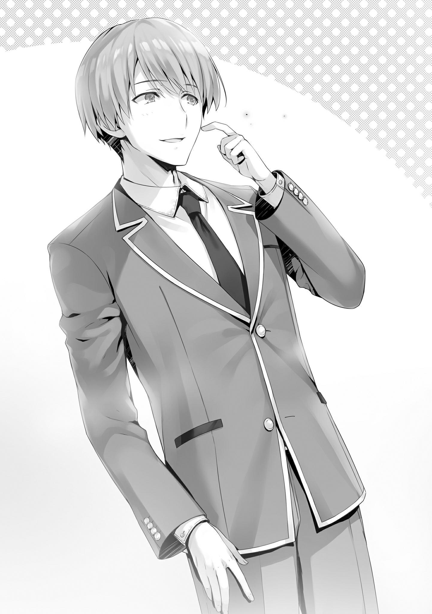
"Bueno, si te parece bien, puedes llamarme por mi nombre también... ¿te parece bien?
¿Es un paso adelante para nuestra amistad?
Mi amistad con Hirata ha progresado todavía más ahora, al igual que con Keisei, Akito, Haruki y Airi.
—Por qué no, si crees que está bien.
Viendo cómo accedí tan gustosamente, Hirata sonrió desde el fondo de su corazón.
—¿En serio? ¿De verdad puedo?
—¿Te refieres a llamarme por mi nombre? ¿No tienes experiencia en ese tipo de cosas, Hira-Yosuke?
Aunque de acuerdo a mi memoria, Hirata generalmente utiliza el apellido para dirigirse tanto a hombres como a mujeres, llamar a la gente por su nombre no es algo inusual.
—Bueno, antes de que eso ocurriera, no era raro para mí llamar a la gente por su nombre.
Hablaba de ese incidente, durante los días de la secundaria de Hirata, cuando su amigo fue acosado, lo que llevó a su intento de suicidio.
—Desde entonces... siempre he tenido miedo de acercarme a la gente.
Trato a todos por igual, pero no me acerco demasiado.
Han pasado 2 años desde entonces, y parece que Hirata sólo ha utilizado apellidos para dirigirse a los demás.
Hablando de esto, Hirata trata a todos los de la clase de la misma manera.
Esto se mantuvo incluso cuando toda la clase decidió unánimemente expulsar a Yamauchi.
Pero parece que una vez más, fue capaz de salir de ese caparazón.
El desarrollo de Hirata también resultó bastante significativo, aún en comparación con los otros estudiantes que también han crecido a lo largo del año.
—Por eso te doy las gracias... Kiyotaka-kun.
Su mirada que me estaba evitando desde el principio volvió. Esa mirada transmitía todo lo que sentía en ese momento.
—Me siento halagado, de verdad.
Aunque tengo una especie de sensación de tristeza por todo esto, aún así lo acepté con el corazón abierto.
CITA CON HIYORI
Después de que la ceremonia de graduación y la ceremonia de clausura se desarrollaron sin problemas, las vacaciones de primavera finalmente comenzaron.
Los estudiantes se olvidaron de la competencia entre ellos y disfrutaron de unas breves vacaciones.
Aunque a los estudiantes que no se habían graduado no se les permitía salir del campus, no era particularmente inconveniente para ellos.
La razón principal para ello es la existencia del centro comercial Keyaki. Tanto para los estudiantes como para el personal, el centro comercial era indispensable.
No es necesario entrar en detalles, pero hay cafés, tiendas de electrodomésticos, e incluso un lugar para karaoke. Todas las necesidades están disponibles.
Si hubiera otras cosas que quisieras, todo lo que tienes que hacer es pedirlo por Internet después de obtener el permiso.
Puedes vivir una vida placentera, siempre y cuando la cantidad de puntos privados que tengas lo permita.
Afortunadamente, no habría ningún estudiante en el primer año que sufriera hambre por falta de puntos.
Hasta los estudiantes de la clase D recibirán decenas de miles de yenes en dinero efectivo a principios de abril.
Hay una diferencia obvia entre eso y la cantidad de dinero que los estudiantes normales de preparatoria reciben en todo el país.
Sin embargo, todavía existen estudiantes que han encontrado algunas dificultades.
Hablando de eso, yo soy uno de ellos.
Debido a mi contrato con mi compañera de clase Kushida, tengo que entregarle la mitad de mis puntos privados cada mes.
Aunque al principio tenía mis propias intenciones para ese contrato, la situación estaba cambiando ahora.
El contrato con Kushida, no, mi relación con ella a partir de ahora, se decidirá durante este intervalo.
¿Debería proceder como se planeó previamente, o ir con otra opción?
Pero ya no soy el único que tiene el poder de tomar esa decisión.
Bueno, las vacaciones de primavera acaban de empezar.
No hay necesidad de entrar en pánico.
Me pongo mi ropa informal y me preparo para salir.
Planeaba pasar la mayor parte de mis vacaciones en mi habitación relajándome, pero hoy me reuniría con cierta persona.
Pensé que pasaría algún tiempo antes de que me llamaran, pero fue sorprendentemente temprano.
Pero después de contactar con esa persona, me puse en contacto con otra más.
—¿Es esta la confirmación final?
Como era el primer día de las vacaciones de primavera, necesitaría ajustar algunas cosas, pero eso estaba bien.
La reunión de hoy es muy importante.
Pero no sería para hoy. En su lugar, la verdadera importancia de la misma se revelará al final de las vacaciones de primavera.
Parte 1
A finales de marzo, la temperatura comenzó a aumentar.
A medida que nos acercábamos a la temporada de floración de los sakura, las noticias de ello parecían estar en todas partes.
Aunque era temprano, cuando llegué, la persona con la que me reunía hoy ya estaba allí.
—Hola, Ayanokouji-kun.
Me reuní con Hiyori frente al centro comercial Keyaki, quien lucía radiante y con ropa casual.
—Llegas temprano.
—Fui yo quien te llamó aquí, así que no podía hacerte esperar.
Después de que dijo eso, Hiyori sonrió ligeramente.
—Siento haberte invitado con tan poco tiempo de anticipación.
—No tengo nada que hacer en las vacaciones, así que no hay necesidad de disculparse. Vámonos...
—Finalmente ayer añadieron nuevos libros a la biblioteca.
Hiyori me mostró lo que cargaba, dejando salir otra pequeña sonrisa.
Parecía que era una sonrisa aún más feliz que antes.
Hiyori Shiina de la clase C. Una chica que ama los libros más que nadie.
—Quería compartir alguna información con Ayanokouji-kun lo antes posible.
Los libros del autor que nos gustan a Hiyori y a mí son difíciles de conseguir en la tienda o en la librería del centro comercial.
Y como las versiones digitales no están disponibles, sólo podemos pedirlos prestados en la biblioteca.
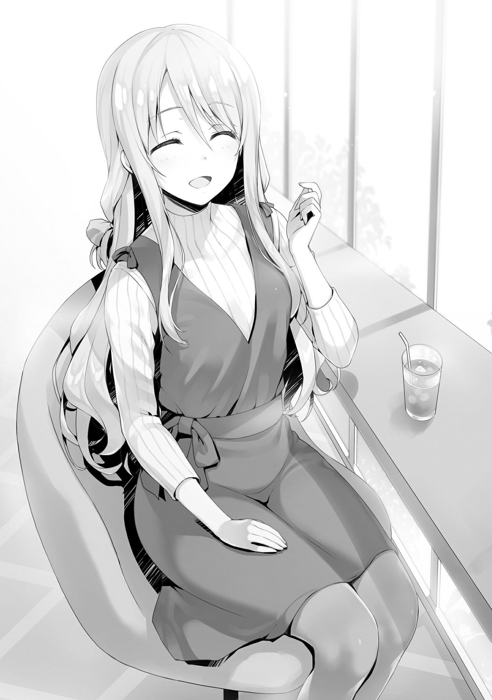
Aunque puedes comprarlo, estará expuesto a muchos si la biblioteca lo consigue.
Aprecié la oportunidad de poder hablar de un libro como este con alguien más.
—Hay más gente de la que se esperaba.
Las mesas del café estaban llenas de estudiantes.
Esto era de esperar, siendo las vacaciones de primavera. Si el café está lleno o no, depende de la hora del día.
Afortunadamente, parece que aún quedan algunos asientos en el mostrador, así que fuimos juntos.
—No nos habíamos encontrado así en un día de descanso antes, así que es algo refrescante.
Es cierto que nunca nos reunimos en días no escolares, así que es algo raro, ver a Hiyori sin su uniforme escolar.
—Es verdad.
Mientras hablábamos, nos invadió un humor relajante.
—No perdamos tiempo... traje algunos libros, ¿quieres verlos?
Se movió felizmente para sacarlos mientras decía eso.
De repente, su mano dejó de moverse y levantó la cabeza como si acabara de recordar algo.
—Oh, es cierto, antes de que empecemos a hablar del libro, ¿podemos hablar de otra cosa?
Justo cuando estaba a punto de continuar, una voz fuerte vino de atrás.
—Qué molesto. Como era de esperar, está repleto. ¿No quedan asientos?
Una voz familiar llegó de cerca, quejándose de la situación de la cafetería llena de gente.
—¿Están bien estos asientos?
—Sí, está bien.
Después de un rato, esos dos estudiantes se sentaron a mi lado.
Me giré para mirar la fuente de las voces, y resultaron ser mis compañeros de clase, Ike y Shinohara.
Estaban ocupados hablando de algo, así que no se fijaron en mí y continuaron con su conversación.
No hace mucho tiempo, noté que empezaron a acercarse, y parece que esto continúa.
—Esos son... Ike y Shinohara, ¿verdad?
Hiyori no estaba lo suficientemente cerca para susurrar, pero habló en voz baja, lo que hizo imposible que nos escucharan.
—Parece que los conoces.
—Ya ha pasado un año, así que conozco a mucha gente de las otras clases.
Los ojos de Hiyori brillaban, y se veía orgullosa de ese hecho.
Por alguna razón, guardamos silencio, y escuchamos la conversación entre Ike y Shinohara.
—Así que nuestros ingresos mensuales por puntos privados han disminuido a unos 30.000 puntos.
—No hay forma de evitarlo. Con la clase A como nuestro oponente, no teníamos ninguna posibilidad de ganar.
—Tal vez. Pero volveremos a la clase D el mes que viene, ¿verdad? Eso apesta...
Como si finalmente recordara que habíamos perdido durante el examen de fin de año, Ike se rascó la cabeza.
—Pero también sabes la razón de nuestra derrota, ¿verdad?
—¿Qué, de quién fue la culpa?
¿Acaso iba a decir que fue mi culpa como comandante? Por un momento, pensé que iba a decir eso, pero...
—Soy yo, fue mi culpa.
Ike hizo una sorprendente declaración que dejó a Shinohara atónita.
—No, en serio, creo que yo fui una de las razones por las que perdimos.
Para ser honesto, podríamos haber ganado si nuestra clase estuviera más unida.
La clase A es poderosa, pero obtuvimos un buen resultado contra ellos.
—Bueno, eso es cierto, pero oírte decir eso es súper sorprendente para mí, Ike.
—No me llames sólo por mi apellido, Shinohara.
—Me haces eso a mí, así que de esta manera se equilibra.
Aunque ocasionalmente hablaban de temas mundanos, al final volvieron a revisar lo que pasó el año pasado.
—El año que viene, quiero esforzarme más. Tanto en lo académico como en lo deportivo.
—¿En serio? No creo que puedas aguantar eso.
—No seré capaz de hacerlo perfectamente, pero realmente quiero hacerlo.
Me pareció que realmente había pensado en esa afirmación.
—Tengo curiosidad, ¿por qué?
—Por Ken y Haruki.
Hasta hace poco, un trío de amigos conocidos como los "tres idiotas" estaban en nuestra clase.
Recuerdo que cuando llegué a esta escuela, fui cercano a ese pequeño grupo, pero me alejé poco después.
Una descripción más adecuada de los hechos sería que ellos me echaron.
—Ese tipo, Ken, obviamente no es adecuado para ello, pero ¿no ha estado estudiando mucho últimamente? Ha estado escuchando en clase, y pensé que sólo estaba fingiendo pero, ¿se ha convertido en alguien que tiene algo de cerebro?
—Sus notas también han mejorado.
—Sí. Sus notas han ido mejorando cada vez más, y ya es increíble en los deportes. Ya sé que no puedo ganar contra él en ninguna categoría.
—¿No eran tus notas mejores que las suyas al principio?
Si comparas a Ike con el actual Sudou, tanto en lo académico como en lo atlético, Sudou tendría la ventaja.
—Ese tipo... probablemente se hará más fuerte el año que viene.
Por un lado, estaba feliz por el crecimiento de alguien cercano a él, pero por el otro, tenía miedo de la posibilidad de quedarse atrás.
Y la mayor razón de este miedo era...
—Si sigo así, el próximo candidato a ser expulsado seré yo.
—Ike...
Cuanto más baja sea tu nota, más probable es que seas el próximo en ser expulsado.
Después de ver irse a Yamauchi, que tenía una buena cantidad de comportamientos problemáticos, comenzó a darse cuenta de que podría ser el siguiente.
—No te rías, no es propio de mí decir este tipo de cosas.
—Aunque es verdad que esto no es típico de ti... yo estoy igual.
Shinohara no era una persona con excelentes notas, ni tampoco una persona con grandes méritos.
Aunque su género los separaba, ambos tenían un estatus similar.
—No me río de los tipos que quieren trabajar duro.
Shinohara asintió con la cabeza firmemente hacia Ike mientras decía esto.
—Trabajaré más duro el año que viene. ¡No perderé contra ti!
—Ni siquiera tengo miedo de perder contigo.
Se podría decir que la relación entre Ike y Shinohara ha progresado.
En el futuro, podrían incluso inspirar a otros estudiantes a trabajar más duro.
Si alguien se adelantaba, los demás le seguían. Hacer uso de esta relación mutua era importante.
—Mira, Shinohara.
—¿Hm?
Ike, que estaba sentado a mi lado, de repente se transformó a un tipo diferente de seriedad.
—Este... mira, tengo algo que decirte, así que, ¿me escucharás?
—¿Qué es esto, por qué estás siendo tan serio?
—Err, como digo esto... Nuestra relación ahora mismo es como una especie de amigos que constantemente discuten entre ellos, pero....umm...
Hiyori y yo nos miramos.
Precisamente porque no era asunto nuestro, entendimos mejor que ella lo que significaban esas palabras.
Tal vez una nueva pareja nacería aquí.
Ese sería el desarrollo más obvio basado en lo que estaba sucediendo ahora mismo.
—¿Podrías...?
—¡Ah!
Shinohara interrumpió en voz alta justo cuando Ike estaba a punto de decirlo.
Aunque es un área abierta, el campus es un lugar pequeño. No importa dónde esté, la gente se fija en sus alrededores.
Shinohara, que miraba en dirección a Ike, finalmente se dio cuenta de que estábamos aquí, sentados a su lado.
Ike giró la cabeza hacia la fuente de la conmoción de Shinohara.
Y saltó sorprendido en cuanto sus ojos se encontraron con los míos.
—¡Ahh, Ayanokouji!
Como estaba a punto de confesarse, su reacción al verme fue bastante exagerada.
—¡¿Qué estás... qué estás haciendo aquí?!
—¿Qué?... ¿Por qué no puedo estar en el café? ¿Hay algún problema?
—Aunque, aunque no hay nada malo en que estés aquí, ¡deberías haberme saludado! Ni siquiera dijiste nada, ¡eres demasiado escurridizo!
No, en esta situación, saludarlo habría empeorado las cosas.
También dijo que yo era escurridizo... pero nosotros estábamos aquí primero.
—¿Estabas escuchando nuestra conversación?
—¿De qué hablaban ustedes dos hace un momento?
Invertí la dirección del interrogatorio y le hice a Ike una pregunta, quien miró apresuradamente hacia otro lado.
—Nada de nada.
Shinohara, que nos estaba escuchando, cambió de tema.
—...Hmm, ¿están tú y Hiyori-san en una cita?
Parecía que no era el único que podía hacer ese tipo de preguntas.
Por supuesto, después de vernos a los dos solos tomando café, esa pregunta no era una sorpresa.
—No es así. ¿Qué hay de ustedes?
—No, no, no tengo ese tipo de relación con Ike.
Shinohara rápidamente rechazó esa idea.
Ike intervino rápidamente, quizás no le gustó lo que dijo.
—Sí, sí, Ayanokouji, no lo malinterpretes, ¿ok? ¿Quién querría salir con alguien tan fea como ella?
—¿Eh? ¡¿Quién es el feo aquí?!
—¡Eres tú, obviamente!
No, no, no, ¿por qué están discutiendo ahora?
Los dos se pusieron de pie, arruinando el agradable ambiente que había antes en el café, y se miraron.
—¡Argh...! Me estás haciendo enojar.
—Esa es mi línea. ¡Soy la que se tomó un tiempo de mis vacaciones para ti hoy!
—¿Eh? ¿Eh? ¿Eh? No tenía otra opción, así que te pregunté.
—¡Qué! Eso es decepcionante...
Pensé que los dos finalmente se sentarían, pero de alguna manera perdí la pista de adónde fueron mientras continuaban discutiendo.
Esto estuvo tan cerca de ser el nacimiento de una nueva pareja, pero hubo un giro en la trama.
—No tenemos que preocuparnos... ¿verdad?
Hiyori también se vio ligeramente afectada por lo repentino que había cambiado la situación en este momento y dijo eso en voz baja.
—No sé...
Sólo podían culparse ellos mismos por tener la desgracia de sentarse al lado de un compañero de clase.
Esperemos que se reconcilien y continúen desarrollando su relación.
—¿Qué decías hace un momento?
—Oh eso, sí, sí. Aunque eso fue una... gran aventura, es similar a lo que estaban diciendo hace un momento.
¿Similar? Me sorprendió cuando dijo eso.
¿Estaba relacionado con la forma en que Ike se iba a confesar? Esos pensamientos pasaron por mi mente, pero fueron rechazados inmediatamente.
—Tengo algo que preguntarle sobre el examen de fin de año.
Ike y Shinohara sí que hablaron del examen de fin de año.
—¿Qué quieres preguntarme?
—Me disculpo si me equivoco, pero te preguntaré esto sin rodeos. ¿Eres tú el que cambió a Ryuuen?
Hiyori me miró con ojos llenos de curiosidad sin ningún rastro de malicia.
Pensando en cuando nos conocimos, siempre tuvo una aguda perspicacia.
—Normalmente, mi respuesta sería preguntarte qué quisiste decir con eso.
Fingir que no tenía nada que ver con esto era la mejor ruta que podía haber tomado.
La razón por la que no lo hice fue porque sus ojos estaban llenos de convicción.
—Sí. Pero, ya que eres tú a quien le estoy preguntando, no creo que tenga que dar más detalles para que lo entiendas.
Cambiar a Ryuuen.
En general, la mayoría de las personas después de escuchar eso estarían sacudiendo la cabeza confundidas.
Las personas que no tenían ese tipo de reacción o bien comprendían de alguna manera lo que sucedía, o bien eran los que causaban el cambio.
—¿Por qué piensas eso?
Le pregunté a Hiyori cuál era su razonamiento en lugar de negarlo.
Necesitaba una respuesta clara de por qué creía que era así.
—Acabo de juntar las piezas del rompecabezas. Ryuuen-kun siempre había atacado a tu clase. Pero de repente dejó su posición durante su ataque a la clase D. Según parece, esto se debió a que Ishizaki-kun lo derrotó, pero no importa cómo lo piense, todavía parece un encubrimiento. Después de intentar contactar a los allegados de Ryuuen-kun, Ishizaki-kun e Ibuki-san, sobre el propio Ryuuen-kun, me aseguré de ello.
Parece que Hiyori usó muchas estrategias a mis espaldas.
Y debido a eso, empezó a sospechar del retiro de Ryuuen.
—Si esto te molesta, me disculpo. He estado nerviosa todo el día porque tenía que revelarte lo que sabía. Porque tengo miedo de que involucrarme demasiado en esto te enfade. No importa cuál sea la verdad, una mirada a ti me dice que no quieres hablar de ello.
—Así que me revelas esto incluso después de saber en qué te estabas metiendo.
Esto era completamente diferente de cualquier charla cotidiana que escucharías.
Fue una decisión tomada después de una cuidadosa consideración.
—Si no podemos ser amigos después de esto... definitivamente me arrepentiré. Si no puedo hablarte más de esta manera, definitivamente me arrepentiré de lo que hice.
Si ese es el caso, debería haberse guardado esto para sí misma.
Pero, a pesar de eso, todavía dijo lo que dijo.
—Pensé que si no investigaba esto más a fondo, no podríamos avanzar más.
—¿Qué tipo de avances?
Después de escuchar la pregunta, Hiyori abrió la boca, como si se sorprendiera con sus propias palabras.
—Sí... yo misma no sé realmente lo que estoy diciendo.
Diciendo eso, Hiyori tenía una expresión desconcertada.
—¿Puedo preguntarte... si has oído hablar de la batalla entre la clase B y nuestra clase?
—Sólo conozco los resultados.
No sabía los detalles de lo que pasó.
Hiyori cambió el tema y empezó a hablar de cómo consiguieron la victoria.
—Ya veo. Normalmente, eso se consideraría un enfoque problemático.
—Es cierto, el estilo de combate de Ryuuen plantea muchas preguntas.
Pero fue un mal necesario para que nuestra clase fuera promovida. ¿Crees que es un enfoque astuto?
—No voy a negar eso, por lo menos.
Aunque no pudiera ser alabado, y aunque fuera criticado a sus espaldas, aun así llevó la victoria a su clase. Gente como esa se necesita en la sociedad. Si vas a luchar de una manera que va a ser despreciada por todos los demás, tienes que tener una fuerza mental indomable.
—Es que este enfoque es similar a cruzar un puente muy peligroso. La clase B tendrá sus sospechas. Sin embargo, no creo que puedan encontrar ninguna evidencia concreta ya que nos escabullimos de las cámaras de vigilancia instaladas por todas partes.
Esta escuela está equipada con muchas cámaras de vigilancia.
No sólo el edificio de la escuela, el centro comercial Keyaki y sus alrededores también están bajo vigilancia.
Pero eso no se aplica a todas partes. Por supuesto, los baños, los dormitorios y las salas de karaoke no tienen cámaras de vigilancia.
Si la clase B tenía dudas sobre lo que pasó en el examen anterior, ya lo estarían investigando. Sin embargo, probablemente no encontrarán nada útil y les será difícil seguir investigando.
—Esas fueron 5 hermosas victorias, así que ¿no puedes considerarlo una estrategia perfecta?
—¿"Hermosas"? No lo creo. En realidad, creo que es mejor llamar a esa estrategia extremadamente defectuosa.
—¿Qué quieres decir? ¿Que era posible conseguir 6 o más victorias?
—5 victorias ya es muy bueno. En realidad, creo que fuimos demasiado codiciosos. Porque Ryuen-kun tuvo que adoptar una estrategia muy peligrosa para conseguir esas victorias.
Hiyori revisó y analizó a su clase en el último examen.
Luego también me dijo cómo ganaron.
—Aunque está bien presionar continuamente a los estudiantes de la clase B, atacar sus cuerpos para debilitarlos fue una mala jugada. Aunque este método se usó porque la clase B tiene muchos estudiantes de buen corazón, ni siquiera ellos lo tolerarán.
Después de escuchar eso, me sentí igual que Hiyori.
Sabía que esta chica vivía una vida completamente diferente a la mía.
Nuestra existencia no debería tener nada en común.
Sin embargo, había algunas similitudes en nuestros pensamientos e ideas.
Debido a esto, comenzaron a surgir dudas.
—Así que antes de que Ryuuen empleara su estrategia, ¿ya tenías conocimiento de ella, y no intentaste detenerlo?
—¿Crees que escucharía lo que digo?
Comparado con Ishizaki o Ibuki, la sugerencia de Hiyori puede tener más valor para Ryuuen, pero seguramente tampoco sería escuchada.
Era poco probable que la escuchara, y en cambio se burlaría de sus sugerencias.
—Cierto. Entonces, ¿cómo crees que se puede detener a Ryuuen?
Quería saber qué estaba pensando para hacerla actuar.
Tal vez Hiyori ya lo entendió intuitivamente. Esa comprensión fue la razón por la que decidió actuar hoy.
—Por alguien con un poder similar al suyo... No, por las críticas de alguien aún más poderoso que él.
Ryuuen no aceptaría consejos de nadie. Sin embargo, si este consejo venía de alguien que Ryuen reconocía, entonces era otro asunto. Así que por eso me estaba contando todo esto.
—Hiyori, ¿puedes ayudarme a pasar un mensaje?
Decidí no responderle directamente.
Porque consideré que no era necesario. Esto era suficiente.
Si fuera otro estudiante, sería una historia diferente, pero Hiyori no es el tipo de persona que usaría esta situación para hacerme las cosas difíciles.
Porque entendía que había una razón por la que Ryuuen, que me identificaba como el líder de la clase D, no me exponía públicamente.
—¿Qué es?
Hiyori, con su actitud inmutable, me miró gentilmente.
—Dile a Ryuuen que si fuera yo, habría sido capaz de conseguir más de 5
victorias, usando un método mejor. Por favor, díselo a él.
—De acuerdo, comprendo. He memorizado tu mensaje y se lo transmitiré por ti.
Como si estuviera expresando gratitud, juntó las manos, cerró los ojos y sonrió.
Parece que además de Ishizaki e Ibuki, Ryuuen también tiene otros buenos aliados.
Si Hiyori fuera capaz de controlar fácilmente a esas 3 personas para que no se descontrolaran, entonces se convertiría en una oponente aún más peligrosa.
Y así, Hiyori terminó la conversación sobre el examen de fin de año.
—Entonces...
Normalmente, ya nos habríamos separado, pero lo más importante vendría después de esto.
—Si algo te llama la atención, siéntete libre de tomarlos y de leerlos.
Abrió su bolso de nuevo y sacó los libros.
Originalmente nos reunimos para hablar de estos libros.
—¿Puedo? ¿El libro está prestado a tu nombre?
—Ya conseguí el permiso de un profesor. Aunque no es lo ideal, está bien siempre y cuando lo devuelva a tiempo.
Debido a que Hiyori es una estudiante de alto nivel que siempre va a la biblioteca, no es de extrañar que reciba un trato especial.
Y después de que discutimos todo lo que había que discutir sobre el libro, bebimos nuestro té y nos despedimos...
—Parece que debería cambiar mi evaluación de ella.
Hasta hoy, sólo la consideraba como una estudiante del mismo año. Tal vez si fuera más lejos, sería una amiga con intereses mutuos.
Poco después de que Hiyori se fuera, me encontré con Kei, que también estaba en el centro comercial Keyaki.
—...¿Qué quieres?
Kei, que apareció delante de mí, parecía bastante infeliz mientras hablaba.
—¿Qué tal si te sientas primero?
La insté a sentarse en el asiento en el que se había sentado Hiyori, pero Kei se negó después de mirarlo como si fuera basura.
—Circularán rumores sobre nosotros si alguien nos ve sentados juntos y bebiendo té.
Dijo esto mientras miraba a la distancia.
Incluso si un extraño estuviera mirando la escena, no parecería que estuviéramos hablando.
—¿Hay algún problema con esos rumores?
—¡Eso es un gran problema! Aunque interactúes casualmente con el sexo opuesto, los rumores comenzarán inmediatamente, ¿no deberías saberlo ya? No entiendes esta situación en absoluto.
En pocas palabras, esto era precisamente lo que estaba haciendo, interactuando casualmente con el sexo opuesto.
—Entonces, ¿qué es lo que quieres?
—Lo siento, lo olvidé. Me pondré en contacto contigo cuando lo recuerde.
Ya había hecho lo que tenía que hacer con Kei.
—¿Qué demonios? Esto es un desastre. Me voy...
Después de suspirar con incredulidad, Kei se dio la vuelta.
La vi alejarse sin intentar detenerla.
No es difícil ver por qué estaba de mal humor.
Porque la molesté a propósito.
OVEJA DESCARRIADA
Al pasar las vacaciones de primavera, los 30 días de abril llegarán inevitablemente.
No hice nada en particular durante estos últimos días. Sólo pasé el tiempo en mi habitación, disfrutando de las vacaciones.
Quería dar la bienvenida al nuevo año escolar sin preocupaciones, justo así...
Me desperté justo antes de las 8 y me di cuenta de que había recibido un mensaje de texto en mi teléfono.
Era de una de las estudiantes de la clase B, Ichinose Honami.
Era una invitación para reunirse en algún momento durante las vacaciones de primavera.
Al parecer, el resto de las vacaciones no terminarán tan pacíficamente.
La fecha todavía estaba en consideración, pero quería que Horikita viniera.
Podía adivinar que Horikita era el evento principal, y yo sólo estaba en la carta de presentación. Incluso podía predecir a grandes rasgos cuál iba a ser el contenido de la conversación.
Debería ser sobre el examen final de nuestro primer año, el examen de selección de eventos. Aunque Ichinose ya habría recogido alguna información al respecto, querría saber los detalles de nuestras 3 victorias y 4 derrotas contra la Clase A.
El tema de que subamos un año y nos convirtamos en estudiantes de 2º año también saldría a relucir.
Lo más probable es que se relacione con la alianza entre la clase de Ichinose y la mía. ¿Continuaría? ¿O terminaría? Debe querer estar segura de lo que le sucederá.
La conversación podría ser una mezcla de esos dos temas, en lugar de sólo uno de ellos.
Especialmente el último tema, la discusión al respecto debería tener prioridad durante las vacaciones de primavera.
—¿Ya se ha recuperado Ichinose de lo que pasó?
Pensé en la chica que no he visto en absoluto durante las vacaciones de primavera.
Sentía que los resultados del examen de fin de año aún pesaban en el corazón de Ichinose.
Aunque obtuvieron 2 victorias, también sufrieron 5 derrotas. Una miserable derrota.
A pesar de que caímos a la clase D, las diferencias en los resultados se redujeron.
Ahora es muy probable que se produzca un cambio en los rangos de la clase debido a un nuevo examen especial. La clase B y las clases que están por debajo de ella ahora están igualadas. Tarde o temprano, tendremos que discutir lo que nuestras clases harán en el futuro.
La alianza de cooperación establecida en el primer año no fue mala para ninguna de las clases.
Si continuáramos esta ambigua relación de cooperación, reduciría nuestra carga mental un poco.
Pero en el futuro, el hecho de que esta relación se volvería eventualmente perjudicial para ambas clases finalmente cruzó por la mente de ambas partes.
Y cuando la situación se intensificara, la relación tendría que terminar forzosamente, lo que parecería deshonroso e indiferente.
Para dejarlo claro, aparte de la clase de rango inferior, la clase de rango superior todavía tenía que exponer sus planes para el futuro.
Si Horikita se enterara de la invitación de Ichinose para una conversación, sería capaz de averiguar tanto como yo.
Esto no iba a ser una simple conversación. En su lugar, sería un importante punto de divergencia en base a lo que el futuro le deparará a las dos clases.
Aunque Ichinose no fuera lo suficientemente flexible para hablar de ello, Horikita seguramente sacaría el tema ella misma.
Esencialmente, esta conversación iba a suceder, sin importar lo que pasara.
Luego está el tema del tiempo. Yo estoy disponible todo el día de hoy, pero ¿qué pasa con Horikita?
El hermano de Horikita dijo que se iría el día 31 y en el fondo, Horikita debe seguir anhelando hablar con su hermano en el poco tiempo que le queda.
Si quieren hacer algo juntos como hermanos, no sería sorprendente.
En cuanto a si su hermano estaría dispuesto a hacerlo, y si Horikita tenía el coraje de ir a su encuentro, es un asunto aparte.
Enviaré el mensaje a Horikita primero.
También añadí otra línea.
[¿Estás lista para hablar con tu hermano?]
Acabo de escribir lo que Ichinose quería hacer y se lo envié. Debería ser leído en unos pocos segundos.
No tardó mucho en responder.
[Estoy disponible en cualquier momento.]
Esa fue su respuesta.
No, no estás disponible en ningún momento.
Aunque dije eso en mi corazón, quería saber cuál sería su respuesta si el momento fuera mañana. Pero hurgar a propósito en las cosas que a ella le importaban sería problemático para mí.
Su respuesta ignoró todo lo que tenía que ver con su hermano.
[¿Qué tal el 2 de abril?]
Presta atención a ese día, y deja tus pensamientos de hoy y mañana atrás.
[Hoy estoy libre.]
Su respuesta tenía una especie de carácter imponente, lo que significa que no debería meter las narices en esto.
Aunque admitir que quería pasar tiempo con su hermano era difícil para ella, todo lo que necesitaba decir era que estaba ocupada.
Aunque dijera que tenía planes para después, sería difícil convencerla.
[Bien. También quiero tratar con las cosas problemáticas primero.]
Sería problemático ir en contra de ella ahora, así que decidí aceptarlo.
Después de que la reunión terminara, todavía tendría tiempo suficiente para encontrarse con su hermano.
[...Eso sería difícil]
Parece que esos dos no se encontrarán en ningún momento antes de la reunión programada para mañana.
Le respondí a Horikita, aceptando reunirme con Ichinose hoy.
Después de confirmarlo con Ichinose, decidimos que nuestra reunión sería a las 10 de la mañana, en el café del 2º piso del Centro Comercial Keyaki.
PARTE 1
A medida que nos acercábamos a abril, la temperatura subió gradualmente.
Fue justo después de las 9:30 de la mañana. Aunque hoy estaba soleado, el pronóstico del tiempo decía que se esperaba que lloviera al mediodía.
Decidimos reunirnos más temprano, así podríamos evitar la lluvia.
Aún quedaba mucho tiempo antes del encuentro, así que decidí ir a dar una vuelta por el centro comercial primero. Presioné el botón del ascensor.
Como eran vacaciones, vi a muchos estudiantes de la escuela camino del centro comercial.
Por supuesto, esto incluía a los estudiantes del mismo grado que yo, así como algunos de los de 2º año.
Aunque no conocía a tanta gente, mientras caminara un poco, me encontraría con algunas caras familiares.
Es que la presencia de los graduados de 3º año disminuía día a día, y ahora, no había prácticamente ninguno a la vista.
Y cuando llegara el primero de abril, sólo quedarían el primero y el segundo año.
Supongo que los próximos días serán bastante desoladores después de que el tercer año se haya ido.
Mientras pensaba en eso, me encontré en el ascensor con una chica conocida del mismo grado.
—...Tú otra vez...
La estudiante de primer año que mantenía su distancia y me hablaba con un tono desagradable era Ibuki de la clase D.
Sentí que la forma en que pasaba sus vacaciones era muy similar a la mía.
Seguramente ella también estaba pensando lo mismo.
Era un ascensor, así que estábamos juntos en un espacio cerrado.
—No veo esto como algo particularmente extraño, toparme contigo, especialmente durante las vacaciones.
—Dices eso... pero no quiero tener nada que ver contigo nunca más.
—Lo sé.
La última vez pareció odiar entrar en mi habitación.
Si Ishizaki no la hubiera obligado a ir, no lo habría hecho.
Aunque me odiaba, Ibuki fue con Ishizaki por el bien de Ryuuen.
Esto demostró que pensaba que Ryuuen era una parte integral de su clase.
Entré en el ascensor en el que ya estaba Ibuki, ya que no había muchas opciones.
—¿No se va a descomponer de nuevo...?
—Ahora que lo dices, eso ya ha sucedido antes.
Esto me recordó a las vacaciones de verano, durante las cuales, Ibuki y yo nos quedamos atrapados en un ascensor.
Aunque los dos estábamos alerta por si algo similar sucedía, estos improbables accidentes no suceden dos veces.
Después de llegar al vestíbulo del primer piso, Ibuki salió inmediatamente del ascensor.
Al parecer, también se dirigía hacia el centro comercial Keyaki.
—¿Estás bien con esto? Estás caminando al mismo ritmo que yo.
Podría haber caminado más rápido o corrido para alejarse rápidamente de mi presencia.
—¿Por qué tengo que ser yo? ¿Por qué no caminas más rápido tú entonces?
Aunque no me soportaba, parecía que no quería ser la que tomara la iniciativa de irse.
Esto parece exactamente el tipo de cosa que Ibuki haría, no ser capaz de aceptar la derrota.
Dicho esto, me parecería raro caminar más rápido sólo para alejarme de ella.
En lo que a mí respecta, caminar junto a ella no sería un problema, aunque desperdiciaría parte de mi energía.
Y como resultado, ninguno de los dos retrocedió, y caminamos lado a lado.
Mi destino debería estar a sólo 5 minutos del dormitorio. Nos separaríamos muy pronto.
—Es genial que Ryuuen haya podido regresar.
—Eres molesto. Cállate. No me hables.
Ni siquiera pude conseguir una oración. Será mejor que no diga nada innecesario.
No tenía miedo del silencio, así que decidí ponerme a su lado y cerrar la boca.
Y así caminamos juntos dentro de esta atmósfera candente y tensa.
—¡Oye, Ibuki, espérame...!
Después de caminar con esta atmósfera tensa por un buen rato, una fuerte voz vino desde atrás de nosotros.
La voz era de Ishizaki de la clase 1D.
Como uno de los colaboradores cercanos de Ryuuen, a menudo actuaba junto con Ibuki.
Tal vez sea por el hecho de que accidentalmente nos hemos puesto en contacto varias veces, que hemos sido capaces de hablar con normalidad recientemente.
Ibuki no miró hacia atrás, y su expresión no cambió, y sólo siguió caminando hacia adelante. No podía ser porque no lo hubiera oído.
—¡Eh, espera! ¡Eh!
—Cállate, eres ruidoso.
—Pero eso es porque no respondiste... Ayanokouji está contigo, ¿eh?
¿Qué están haciendo ustedes dos? ¿Podría ser... una cita?
Ishizaki corrió hasta donde estábamos y dijo esto, así que Ibuki le dio una patada en la rodilla inmediatamente después de decirlo.
—¡Ay! ¿Qué estás haciendo?
—Sabes por qué te han dado una patada. No voy a decir nada más, así que aléjate de mí.
—Qué, no tiene sentido hacer eso. De todas formas nos veremos más tarde.
Parece que Ibuki se reunía con Ishizaki en el centro comercial de Keyaki.
—¿Va a venir Ryuuen?
—Sí-No... umm...
Lo pregunté casualmente, e Ishizaki respondió accidentalmente.
—Estúpido-idiota.
Parecía que estos dos iban a encontrarse en el centro comercial de Keyaki.
Por la reacción de Ishizaki cuando pregunté por Ryuuen, no fue difícil adivinar cuál era esa razón.
También daba la impresión de que la reunión se suponía que era un secreto.
—Olvídalo, no importará de todos modos, ¿verdad? Para empezar, es inútil intentar ocultárselo a Ayanokouji.
Aunque Ishizaki se recuperó rápidamente de su error, Ibuki seguía tomándolo en serio.
—Ya no importa, pero igual vamos a tener que liquidar a este bastardo para subir de rango.
—Si lo pones así...
¿Por qué hablan de esto cuando estoy a su lado?
Aunque dudaba de que Ryuuen regresara, después de ver esto, parecía que era verdad.
Era una reunión secreta porque Ryuuen no había regresado oficialmente todavía.
Para Ryuuen, que ya había renunciado una vez como líder, sus compañeros no podrían aceptar su regreso tan rápido.
Ishizaki también se enfrentaba a un dilema, ya que fue él quien se llevó el mérito de hundir a Ryuuen.
—Hey, Ayanokouji.
—¿Hm?
Mientras clasificaba estos fragmentos de información en mi cabeza, Ishizaki me habló.
—Para llegar a la clase A, he ideado la estrategia definitiva. ¿Quieres ayudar?
No sabía cómo debía responder, ya que lo que decía era demasiado sorprendente.
—Escuchemos esto primero. Tu estrategia definitiva.
—¡Heh! —Ishizaki se dio una palmadita en el pecho y dijo esto con orgullo—. Tú, ven a nuestra clase. De esa manera, definitivamente podemos llegar a la clase A.
—¿Eh? ¿Qué demonios estás diciendo tan de repente?
—Si Ryuuen y Ayanokouji trabajan juntos, serán imparables. Ni siquiera Sakayanagi o Ichinose tendrán una oportunidad.
Así que esta era la estrategia definitiva que se le ocurrió a Ishizaki.
Ibuki rechazó la idea de que esta estrategia funcionara alguna vez.
—Imposible, imposible, absolutamente imposible.
Unir fuerzas con Ryuuen...
—No creo que sea una mala estrategia.
—¿Hablas... en serio?
Ibuki lanzó una mirada de asco hacia nosotros dos.
—Sí, sí, si estás dispuesto a colaborar con nosotros, te recibiremos con los brazos abiertos. Creo que tú y Ryuuen serían una combinación sorprendentemente poderosa. Creo que a Albert también le gustas porque siempre que sales en una conversación, se emociona un poco.
Es la primera vez que oigo que le gusto a Yamada Albert.
¿Fue realmente apropiado usar la palabra "gustar" para describir sus sentimientos hacia mí...?
No he interactuado mucho con él. De hecho, la única vez que realmente hablé con él fue en la azotea.
¿Llegué a gustarle después de nuestra pelea?
Para mí, habría pensado que la pelea sólo crearía resentimiento hacia mí.
—No lo dijo explícitamente, ¿verdad?
Ibuki también parecía tener preguntas sobre esto, así que le preguntó a Ishizaki.
—Los hombres pueden sentir este tipo de cosas físicamente. Es intuición, te digo, intuición.
Una intuición muy poco confiable.
También creo que si realmente me uniera a la clase de Ryuuen, Albert podría tratar de luchar contra mí.
Cuanto más pensaba Ishizaki en ello, más se emocionaba...
Necesitaba agradecerle sus buenas intenciones, así que le respondí seriamente.
—Es imposible de llevar a cabo. ¿Cómo vas a conseguir 20 millones de puntos para la transferencia?
Aunque vencieron a la clase B en el examen de fin de año, no podrían haber acumulado tanto dinero.
—Eso, bueno, Ryuuen definitivamente hará algo al respecto.
—No se esforzará en hacer algo así.
—¿Estás seguro? Creo que si estás dispuesto a unirte a nosotros, Ryuuen ayudará.
—Definitivamente no ayudará.
En ese sentido, estoy de acuerdo con Ibuki. Esa persona no es alguien que se esfuerce por satisfacer las demandas de los demás para hacerlos felices.
No confiará en mí sólo por el hecho de llegar a la clase A.
Su orgullo como hombre no lo permitiría.
No, tampoco querría que fuera alguien que recurriera a algo así.
—Estoy feliz de que me hayas invitado, pero tendré que rechazarlo. De todas formas, es más divertido ser oponentes que aliados.
Eso sentó un precedente, incluso antes de la cuestión de tener suficientes puntos privados.
—¿En serio? Maldición, pensé que era una gran idea.
—Eres raro. ¿Por qué estás feliz de enfrentarte a él de nuevo?
Ibuki se rio sombríamente sin siquiera mirarme.
—Bueno, estoy deseando ver cómo me va a atacar.
Le respondí con sinceridad, a lo que Ibuki respondió poniendo una cara de asco.
Aunque no quería mostrarme demasiado, si el oponente era Ryuuen, no me importaría tener una revancha.
Pero para que él me igualara, necesitaba desarrollarse aún más.
Necesitaba mostrarme que podía ganar contra Horikita, Ichinose y Sakayanagi.
No mucho después, llegamos al centro comercial Keyaki.
—Lo siento Ayanokouji, terminemos aquí. Sería un problema si alguien nos viera juntos...
Aunque no sabía dónde se iban a encontrar después, intercambiar ideas de esta manera no estaba mal.
Acepté a Ishizaki por preocuparse por mí de este modo, algo que normalmente no hacía.
Me separé de Ishizaki e Ibuki, y me dirigí a la entrada del centro comercial.
Cuando conocí a Ishizaki, nunca pensé que sería capaz de mantener este tipo de conversación con él.
Aunque mi relación con Ibuki podría haber retrocedido, fue al menos un cambio.
—Ya ha pasado un año...
Las circunstancias que me rodeaban habían cambiado drásticamente a lo largo del año.
Hasta podía mantener conversaciones con Ryuuen y Sakayanagi.
Sin mencionar a muchos otros estudiantes.
Puede que sólo haya sido un año, pero fue todo un año.
Esto era una prueba de que el tiempo estaba pasando.
No lo entendía antes, pero siento que he adquirido una comprensión del concepto del paso del tiempo.
Hablando de eso, esto me recuerda lo que pasó el año pasado.
La vez antes de que llegara a la preparatoria de Educación Avanzada. Para evitar que alguien se enterara de lo que planeaba hacer, seguí tranquilamente con mi vida.
Experimenté pequeños sorbos de sentimientos que nunca antes había sentido.
Especialmente cuando trataba de no provocar a ese hombre... Hice lo posible por ocultárselo a esa persona.
Porque sabía que si me descubría ese hombre, definitivamente me detendría.
Tuve suerte debido a varios factores. Si él hubiera estado más cerca de mí, seguramente no me habría dejado huir tan fácilmente.
Pero ese hombre raramente venía a casa, ya que era una persona muy ocupada.
Aunque había un supuesto cuidador que se suponía que debía supervisarme, pasó alrededor del 70-80% de su tiempo ese año viviendo en un hotel.
Y para mí, ni siquiera estaba tan familiarizado con el lugar al que llamaba hogar, aunque viviera allí.
La habitación blanca era donde pasaba la mayor parte del tiempo. Para mí, esa casa era sólo una residencia temporal en la que me quedé por no más de un año. No se sentía diferente de un hotel.
—La habitación blanca, ¿eh?
Ese hombre no se ha rendido todavía.
Ya sentí su intenso deseo de sacarme de aquí.
No sabía mucho sobre lo que pasó el año pasado, pero estaba seguro de que la Habitación Blanca habría reanudado sus actividades.
Y mientras la Habitación Blanca me necesite, volveré.
Esto sucedería en un futuro no muy lejano, 2 años después.
Pero... todavía me quedan 2 años más de esta vida escolar.
No tiene sentido pensar en esto ahora.
Básicamente, estoy en una situación que antes no podía imaginar que pasaría un año.
Y estos recuerdos irremplazables definitivamente se han grabado en mi corazón.
Llegué a la entrada norte del Centro Comercial Keyaki, donde nos íbamos a encontrar.
Normalmente, las tiendas abren a las 10 de la mañana los días entre semana, pero algunas tiendas abren a las 9 durante las vacaciones.
El café del segundo piso donde nos íbamos a encontrar era una de esas tiendas.
—Esto es la vida.
Hacer lo que me gusta, vivir libremente mi vida de estudiante de preparatoria.
Hablar con mis compañeros de clase con mi teléfono, así como pasar el rato juntos a veces.
Vivir una vida así, siempre me pareció un poco irreal.
Pero decir que esta vida es insatisfactoria sería una mentira.
Por supuesto, el campus tiene sus propios problemas.
Mucho ha cambiado desde los últimos meses.
Me siento más cómodo con la compañía de las múltiples chicas a las que me he acercado.
Sí... parece que me he convertido en una persona real en la superficie.
Dejé de pensar en ello temporalmente y me dediqué a los otros temas.
Pondré mi atención en la conversación que va a tener lugar.
—Llegas temprano. Faltan unos 20 minutos para la hora de la reunión.
¿No tienes otras cosas que hacer?
Horikita, que vestía ropa informal, dijo eso mientras miraba su teléfono.
—Dices eso, pero ¿no vienes también tan temprano como yo?
Era como si estuviéramos confirmando que ninguno de los dos tenía nada que hacer durante las vacaciones de primavera.
No discutimos el tema inmediatamente, ya que primero subimos al segundo piso.
—Deberías tener claro de qué va a tratar el tema de discusión de hoy.
Ella pareció pensar que ese era el caso. Tal vez porque pensó que como no le pregunté al respecto, yo debía saberlo.
Tiene razón, pero intentaré confundirla un poco.
—¿De qué estás hablando?
—Evidentemente sabes de lo que hablo, así que deja de fingir.
—No, no sé de qué estás hablando. ¿De qué nos va a hablar Ichinose?
Quería imponer el tema con fuerza, y confundir a Horikita, pero...
—¿Realmente no lo sabes? Si resulta que lo sabes, entonces no te perdonaré tan fácilmente...
—...Bueno, primero deberías calmarte un poco.
Miré a Horikita y decidí dejar de molestarla, ya que se veía como si estuviera a punto de morderme.
—Puedo adivinar de qué se tratará. No es difícil.
—No es difícil decir eso, así que deja de engañarme de esta manera.
Me lo dijo groseramente.
Resulta inútil utilizar este tipo de método para tratar de averiguar lo que Horikita siente.
—¿Estabas tratando de ver cuánto sabía?
—Estás pensando demasiado en ello.
—¿De verdad?
En lugar de decir que se ha vuelto más aguda ahora, seguramente se acostumbró a la forma en que hago las cosas.
Patrones de respuesta simples como ese ya no funcionarán en Horikita.
Si me pregunta de nuevo, podría ser atacado, así que decidí evitar el tema.
—De todos modos... vamos.
Vi a Ichinose esperando en la entrada del café, así que cambié el tema.
Aún faltaban 10 minutos para la hora señalada, pero Ichinose ya había llegado.
—Ichinose parece tan ocupada como nosotros lo estamos ahora.
No creo que acabe de llegar. ¿Cuánto tiempo ha estado esperando?
—No puede tener tanto tiempo libre como nosotros. A juzgar por esta situación, creo que simplemente quería llegar a tiempo. Quizás odia hacer esperar a la gente.
Tal vez sea como dijo Horikita.
—Así que eso es lo que piensas de Ichinose.
—Al principio, pensé que era una hipócrita que actuaba como una buena persona.
Puede que ella haya pensado demasiado en eso, y también que haya sido demasiado rápida para juzgarla por sus pensamientos iniciales sobre ella.
—Pero después de un año, mis pensamientos sobre ella han cambiado completamente. Realmente es una buena persona.
Mucha gente se disfrazaba de buena gente, y era difícil encontrar a alguien que realmente tuviera un buen corazón.
Mucha gente tenía motivos ocultos.
Como ella era una de las personas de corazón genuino, no habría nadie que etiquetara a Ichinose como hipócrita.
—¿Qué clase de vida vivió antes, al ser una persona tan bondadosa?
Esto era lo único que no entendía.
—Ser bondadosa es un arma que posee, pero al mismo tiempo, también es su debilidad.
Mientras caminábamos hacia el destino, Horikita alabó a Ichinose y suspiró, como si estuviera preocupada por ella.
Cuanto más bondadosa sea una persona, más fácil le resulta a la gente mala usarla.
—¿Crees que es mejor no ser tan bondadoso?
—Ser bondadoso sería genial si vivieras en las montañas, rodeado de naturaleza. Pero para sobrevivir en esta sociedad competitiva, ser bondadoso es una desventaja.
—Ya veo.
—Pero según su personalidad, nunca dejará de ser una persona amable y buena.
Horikita decía que Ichinose continuaría siendo una persona de buen corazón, aunque fuera desventajoso para ella.
—Sin embargo, Ichinose sabe cómo distinguir entre el bien y el mal. Si ocurriera algo que pusiera en peligro a sus compañeros, estará dispuesta a hacer cualquier cosa.
—Si ese es el caso, entonces está bien, seguro, deberíamos terminar esta aburrida conversación aquí.
Para prepararse para la conversación que estaba a punto de ocurrir, la expresión de Horikita se tornó seria.
También dejé de hablar y llamé a Ichinose.
—Ichinose, llegas muy temprano. ¿Cuánto tiempo has estado esperando?
—Buenos días Horikita-san, Ayanokouji-kun. Acabo de llegar.
Esa línea era muy cliché. Aunque dijo eso, en realidad, ¿a qué hora llegó?
Ichinose, que vestía ropa informal, nos saludó con su sonrisa habitual.
—Es mucho más fácil conseguir asientos temprano en la mañana.
Los estudiantes que ya se encontraban en el café estaban dispersos, haciendo parecer que había asientos disponibles en todas partes.
—Bien, pidan lo que quieran comer, yo los invito.
Se golpeó ligeramente el pecho con el puño cerrado y dijo que iba a hacer el pago.
—Esto no será... con el fin de ganar ventaja sobre nosotros durante la conversación, ¿verdad?
Debido a que tenía una experiencia usando su comida para ganar superioridad sobre una situación, Horikita inmediatamente aumentó sus sospechas.
—Ella no es tú, no hará eso.
—No me gusta lo que dijiste pero... tienes razón.
Tal como Horikita señaló antes, la otra persona aquí no era otra más que Ichinose.
No usaría semejante método para obtener una ventaja en una conversación como esta.
E incluso si realmente ganara una ventaja en la conversación con eso, Horikita debería ser capaz de luchar contra ello.
—Si es así, muchas gracias.
—Por supuesto. No hay problema, Horikita-san, puedes ordenar primero.
Urgida por Ichinose, Horikita ordenó primero
Yo estaba preocupado por Ichinose, así que cerré la distancia con ella para hablarle en voz baja.
Aunque fue sutil, pude oler el aroma a cítricos en ella hoy otra vez.
—Ichinose, ¿habrá algún problema con tus puntos privados?
Aunque estaba agradecido de que nos invitara, sus puntos privados deberían ser 0, ya que los usó todos para evitar que uno de sus compañeros fuera expulsado.
Aunque como anfitrión, era normal atender a sus invitados, me preocupaba un poco su situación financiera.
—Ah, um, después de pagar aquí, todavía debería tener unos 3000 puntos.
No hay ningún problema.
Se acercaba el mes de abril.
Con esa cantidad restante en su saldo, debería tener suficiente dinero para superar esta crisis.
Pero sus puntos privados deberían haber bajado a 0 por un momento.
Tal vez después de notar mi duda, Ichinose añadió esto:
—Conseguí este dinero después de vender mi secador de pelo a Nishikawa-san de clase A. Necesitaba hacerlo para poder sobrevivir al mes de marzo. Los otros también tuvieron que recurrir a esto.
Aunque la escuela tenía un sistema en el que se podía sobrevivir sin dinero, a veces se necesitaban fondos disponibles.
Si un artículo se vendía más barato que el precio en la tienda, era común que la gente comprara a terceras personas.
—Así que Ayanokouji-kun, no tienes que dudar. Vamos, puedes pedir ahora.
Ichinose, que ahora estaba detrás de mí, me empujó suavemente la espalda mientras decía eso.
De hecho, si yo fuera demasiado modesto, Ichinose no estaría muy feliz.
Después de que Horikita ordenara, fui y pedí una taza de café.
Entonces los tres tomamos nuestra comida de la zona donde se recoge y dejamos el mostrador para sentarnos en los asientos de la esquina del café.
Aprovechando el hecho de que no había mucha gente aquí todavía, Horikita inmediatamente fue directamente a los negocios.
—¿Vamos a hablar del examen de fin de año? ¿O va a ser sobre el acuerdo entre nuestras clases de abril?
Sin hablar conmigo por adelantado, Horikita fue capaz de predecir de qué iba a tratar la conversación con Ichinose.
—Jajaja, así que has entendido todo.
Ichinose, que sonreía mientras decía esto, también tenía una mirada seria en sus ojos.
Esto era una prueba de que ambas sabían que esta conversación sería extremadamente importante.
—¿Estoy molestándolos?
—No, también sentí que teníamos que hablar, así que fue de gran ayuda que fueras tú quien iniciara. Después de todo, eres una persona popular, es difícil para nosotros hablarte a solas de esta manera.
—No es así hoy en día. No estoy nada ocupada durante estas vacaciones de primavera. Pueden hablar conmigo cuando quieran.
Mientras respondía, Ichinose tenía una ligera sonrisa.
Por la expresión de su cara, parecía que intentaba ocultar algún tipo de amargura.
Seguramente porque alguien intentó pedirle una cita y ella se negó.
Y en cuanto a la razón de eso, Horikita debería haberse dado cuenta.
—El examen de fin de año pareció afectarte.
Aunque no fuera una forma muy apropiada de empezar la conversación, se lo dije a Ichinose.
Fue porque aunque nos anduviéramos con rodeos deliberadamente para no reabrir la herida que tenía, al final llegaríamos allí de todas formas.
Y si ese fuera el caso, sacarlo a relucir antes sería mejor ya que Ichinose se recuperaría más rápido.
Debido a que no quería empezar con ese tema, Horikita mostró una expresión rígida durante un momento.
A pesar de ello, se dio cuenta de lo que estaba haciendo y se adaptó.
—Ahhhhh, umm, perdí. Fuimos completamente derrotados por la estrategia de Ryuuen-kun.
Pareció recordar algo, suspirando profundamente y sacudiendo la cabeza.
Entonces dijo eso con certeza.
Vagando a la deriva, Ichinose suspiraba constantemente por su fracaso.
—Todavía no sabemos nada. ¿Cuál fue la razón de la derrota?
—La razón por la que fallamos es obvia. Es porque me falta habilidad.
Ichinose no culpó a su oponente ni a sus compañeros.
Respondió sin dudarlo, que la razón del fracaso fue, por supuesto, su propio fracaso como comandante.
—Aunque no vimos el examen, es difícil imaginar que cometas grandes errores.
—Me halagas. Bueno, en ese entonces, creo que perdí la calma por el miedo...
Ichinose rechazó humildemente los elogios de Horikita.
No, es probable que haya sido verdad que entró en pánico en ese momento.
Estaría preocupada por la aparición sorpresa de Ryuuen, que afectó el resultado de las puntuaciones.
—Al principio, pensamos que el comandante era Kaneda, y cuando se reveló que no lo era, se estropeó nuestro ritmo.
—Es comprensible. Ryuuen ya había renunciado a ser el líder, y no tenía ningún punto de protección, por lo que no podía ser el comandante. Eso es lo que todos pensamos, pero todo era parte de los planes de Ryuuen.
Así es. Ni siquiera Sakayanagi y yo esperábamos que Ryuuen reapareciera.
Para Ichinose, que iba a ser su oponente, sería imposible que estuviera tranquila.
Si perdía, sería expulsado. Nadie aparte de Ryuuen estaría dispuesto a llevar a cabo un plan tan arriesgado.
—Al final no fui capaz de mejorar mi estado de ánimo, por lo que soy responsable de nuestra derrota. Este hecho no cambiará.
Mientras pensaba en cómo lucharían contra Kaneda, Ryuuen apareció de repente.
Aunque no era mi problema, todavía sentía simpatía por Ichinose.
Las cosas que el comandante era capaz de hacer eran extremadamente limitadas.
Pero durante ese evento con libertad de expresarse, Ryuuen debió haber arrinconado completamente a Ichinose con sus habilidades con las palabras.
—Escuché que su clase logró excelentes resultados en su batalla contra la clase A.
Ichinose nos elogió en respuesta.
Ahora, un problema había surgido. En ese entonces, le pedí a Ichinose que nos dejara pelear la clase A.
Horikita no sabía esto, ya que me había instruido a atacar a la Clase D. No salió como se planeó durante la lotería, así que sacamos a la Clase A.
Dependiendo de la dirección de la conversación, las cosas pueden ponerse un poco complicadas si algo contradice lo que Horikita piensa que es verdad.
Sería mejor discutir esto con Ichinose primero, pero el problema fue que le dije que era Horikita quien quería atacar a la clase A.
Ichinose pensó que Horikita fue la que pidió luchar contra la Clase A.
Y Horikita pensó que yo había perdido el sorteo, lo que resultó en que tuviéramos que luchar contra la Clase A.
Ambos lados estaban en una posición en la que no sabían la auténtica verdad.
No era imposible evitar el tema si la conversación continuaba.
Si fuera el yo habitual, habría hecho los preparativos de antemano.
O adoptar medidas temporales para hacer frente a estas emergencias sin que nadie se diera cuenta.
Después de pensarlo un rato, decidí exponerme.
En cuanto a la razón por la que no actué hasta ahora.
Era para ver hasta qué punto Horikita había crecido.
—Una derrota es una derrota. Recuerdo que te pedí que me dieras el derecho de enfrentarme a la clase A. Si la clase B estaba en contra de la clase A, los resultados podrían haber sido diferentes.
Después de escuchar esto, la mirada de Horikita se dirigió a mí inmediatamente.
No necesitaba explicarle lo que quería decir con eso.
“¿Qué quieres decir con que le pedí luchar contra la clase A?” era lo que su mirada significaba.
Pero como me ajusté al flujo de la conversación diciendo eso, Horikita decidió dejarlo pasar.
Pero como la mirada que me dirigió parecía natural y era tenue, Ichinose no se dio cuenta.
Entendió que yo estaba diciendo que no era el momento de discutirlo.
Si ella fuera la Horikita de antes, definitivamente me cuestionaría allí mismo, causando también que Ichinose tuviera dudas.
Aunque no llegara a ese punto, todavía haría que Ichinose vacilara un poco.
Su habilidad para entender y su juicio había mejorado significativamente. No, debo decir que se ha vuelto más astuta.
A través de la paciencia de Horikita, Ichinose decidió que Horikita fue la que eligió como objetivo la clase A.
Debido a esto, mi presencia se vería aún más disminuida desde las perspectivas de las otras clases.
—Debido a mi petición, resultó en que ustedes tuvieran que pelear una dura batalla...
Para apoyar lo que estaba haciendo, Horikita se disculpó con Ichinose.
—Es mi responsabilidad, así que no hay razón para que te disculpes.
La clase B contra la clase D fue un mal emparejamiento, que resultó en que la clase B sólo ganara 2 y perdiera 5.
Dando como resultado que la Clase B perdiera muchos puntos de clase de golpe.
—Esa es una situación hipotética. El ganador de la lotería fue Kaneda, que eligió la clase B, así que no importaba de todos modos.
Por supuesto, este fue el caso después de ver los resultados.
La batalla entre la clase B y la clase D era inevitable, aunque hicieran preparativos previos para que no ocurriera.
—Eso no es algo sobre lo que tengas que reflexionar, Horikita-san. Yo...
necesito encontrar una estrategia más estable que nos lleve a la victoria. Yo soy la que necesita reflexionar profundamente sobre esto.
Aunque se entusiasmó cuando dijo eso, si su mentalidad se había ajustado era otra cuestión.
—Si es posible, ¿puedes explicar cuál fue la estrategia que usaste? Por supuesto, a cambio, también te explicaremos nuestra batalla con la clase A en detalle.
Horikita debe haber escuchado algunos de los rumores de lo que pasó ya.
Pero sólo los comandantes sabían lo que pasó entre ellos.
Ichinose asintió aprobando la propuesta.
Los eventos que Ichinose eligió y los eventos que Ryuuen eligió.
El orden de los eventos, qué eventos fueron elegidos y cómo Ryuuen los ejecutó.
Dónde ganó y dónde perdió. Ichinose reveló las respuestas de cómo había fracasado sin ocultarlo.
La clase D de Ryuuen adoptó un estilo de fuerza bruta al realizar los eventos.
Para los estudiantes de la clase B, esto explotó una de sus flagrantes debilidades.
—Adoptaron un método de combate que juega con sus fortalezas. Les concedo eso.
—Si es así, no tenemos ninguna posibilidad contra ellos.
—Sí... inclusive por el lado de los chicos, sólo Sudou-kun podría ganar. No, si su oponente es Yamada-san, no hay garantía de victoria.
Si Koenji fuera serio, también podría ganar, pero aunque así fuera, Horikita no podría decirlo en voz alta.
En cuanto a las chicas, fuera de Horikita, no creo que nadie más pueda luchar.
—La clase A podría ser capaz de ganar contra los métodos de Ryuuen.
—Estoy de acuerdo con eso.
Todo dependía de la suerte. Si la suerte estuviera del lado de Ryuuen, sería capaz de derrotar a cualquier otra clase.
Si miras todas sus batallas, su tasa de victoria era la más alta contra la Clase B.
Eso sería una prueba de su intención de atacar a la clase B desde el principio.
—Pero, también elegiste algunos de tus eventos, así que, ¿cómo perdiste en dos de ellos?
Aunque los métodos de Ryuuen eran poderosos, todo dependía de la suerte de una manera u otra.
La clase B eligió 4 eventos, así que Ichinose todavía podría haber ganado en esos.
—....Ummm.
Horikita no sabía nada de esto, y yo estaba igual. Así que la escuchamos atentamente, sin conocimiento previo de nada de lo que pasó.
¿Qué hizo Ryuuen exactamente? Ichinose nos dijo todo.
No le hizo nada a los estudiantes directamente. En cambio, los atacó mentalmente.
Contactó por la fuerza y presionó a la clase B.
También está el asunto en el que varios de los competidores de la clase B no ejercieron toda su fuerza debido a una repentina incomodidad física durante el día.
Después de mencionar eso, Ichinose añadió esto.
—Perdí en el evento en el que se suponía que debía sobresalir, y no fui capaz de adaptarme a la situación. Todo eso es culpa mía como comandante.
No culpó a Ryuuen y en su lugar dijo que era su culpa.
—Muchos de tus compañeros tenían dolor de estómago y mostraban síntomas de inestabilidad mental...
Por supuesto, Horikita reconoció que todo esto era parte del plan de Ryuuen.
—Estoy segura de que esto era parte de la trampa de Ryuuen-san.
Escuché de los estudiantes que se sintieron mal ese día, que se encontraron con Ishizaki-san antes del examen cuando estaban en el local del karaoke.
Karaoke, ¿eh? Ese era uno de los lugares donde los estudiantes raramente eran monitoreados.
Sería un plan extremadamente arriesgado si realmente los envenenaron allí.
—¿No deberías tratar de reportar esto a la escuela?
El examen ya había terminado hace una semana.
La comida y las bebidas de los estudiantes han sido, sin duda, desechadas.
Podrías rastrear las compras de la droga que usaron hasta la farmacia, pero aún habrá argumentos de que la clase D no usó esas drogas.
—No hay ningún daño en reportar esto a la escuela. Incluso si no da resultado esta vez, el informe que hagas ahora podría jugar un papel en el próximo incidente. Si continúan haciendo cosas como esta, la escuela será más estricta con ellos.
Si se descubriera que la Clase D está realmente detrás de esto, sería un asunto grave, y la escuela tendría que tomar acciones.
—Tal vez. Pero no importa, no informaré de esto a la escuela.
Ichinose rechazó la propuesta. En la semana siguiente al examen, sus compañeros le habrían aconsejado que acudiera a la escuela varias veces, y sin embargo no lo hizo.
—¿Por qué? ¿Vas a someterte a esta humillación? Este es un incidente grave que puede cambiar los resultados del examen, y todo lo que necesitas hacer es revelar estos detalles.
La evidencia no era imposible de encontrar, eso es lo que Horikita está diciendo.
Dependiendo de la situación, la clase D podría estar sujeta a una acción disciplinaria.
Cuanto más larga sea la demora, más difícil será apelar.
—Te ayudaré si lo deseas.
Si se tratara de Horikita, ella nunca se habría dado por vencida en esto. Porque ella era así, se ofreció a ayudar a Ichinose.
—Gracias, Horikita-san. Pero sigo sin querer quejarme. Todavía no hay ninguna evidencia concreta ahora, y... quiero usar este incidente como una lección.
—¿Lección? ¿Qué quieres decir?
Ichinose no se sometió a la persuasión de Horikita.
—Creo que tengo suerte.
Ichinose, que tenía una expresión resignada hace un momento, recuperó algo de vida en sus ojos.
Era como un motor averiado tratando desesperadamente de encenderse.
—No sé qué pasaría si esto volviera a suceder durante los momentos cruciales del 2º y 3º año, pero ahora, todavía hay espacio para recuperarse.
Ichinose asintió con fuerza, con los ojos llenos de poder.
Tal vez yo era el único que podía entender su brillantez en este momento.
—Toda nuestra clase se está tomando en serio esta derrota, y decidimos hacer buen uso de este fracaso, y no repetir los mismos errores en el futuro.
—Bueno, no estoy en tu clase así que no diré nada más.
—Muy bien entonces.
La clase B terminó de contarle a la clase D lo que pasó de su lado.
Habíamos terminado de escuchar los detalles de la batalla entre Ichinose y Ryuuen. Ahora es nuestro turno.
Horikita me miró, transmitiendo sus pensamientos a través de sus ojos.
[¿Vas a hablar en perspectiva como el comandante?] es lo que ella quería preguntar.
Como comandante, al igual que Ichinose, teníamos los mismos deberes en el examen de selección de eventos.
Pero los detalles de lo que hicimos como comandantes eran bastante sosos y ambiguos.
En qué eventos participamos, cómo ganamos los que ganamos y cómo perdimos los que perdimos.
Por supuesto, no mencionaré nada innecesario, como cómo respondí a esa pregunta en el examen de aritmética mental.
—Ya conozco los resultados de su batalla, pero sigue siendo una gran demostración por parte de su clase.
—Pese a todo, al final perdimos contra Sakayagani durante el séptimo enfrentamiento.
El ajedrez era sólo un juego. Mientras dijera que tenía la suficiente confianza para ganar en el ajedrez, no debería ser investigado más, y como perdí contra Sakayagani, pensarán que era más débil que ella.
—La única buena noticia... bueno, no puedes llamarlo así, pero sólo perdimos 30 puntos. Pero sigue sin ser lo ideal, ya que la brecha entre las clases se ha vuelto a abrir.
—Sus compañeros de clase se están fortaleciendo lentamente, por lo que no podemos tomarlos tan a la ligera.
Incluso como futura rival, Ichinose nos elogió sin rodeos.
—Sí. Nuestra clase sólo se hará más fuerte.
Después de escuchar las palabras confiadas de Horikita y de verlas en sus ojos, Ichinose asintió con la cabeza.
—Tengo algo que decirles que se relaciona con la conversación, ¿de acuerdo?
—Mhm.
Este fue el comienzo de la siguiente mitad de la conversación. El comienzo de la verdadera conversación.
Fue Horikita quien lo mencionó en lugar de Ichinose.
—Hablando sin rodeos, quiero cancelar nuestra sociedad el año que viene.
Horikita hizo una propuesta inesperada, pero Ichinose ya estaba mentalmente preparada para esto.
—Pensé que dirías eso.
—Perdimos contra la clase A, y somos la clase D de nuevo. Si se mira exclusivamente la clasificación, se podría decir que fue una pérdida para nosotros, pero si se piensa en el panorama general, no perdimos exactamente.
Se podría decir incluso que hemos cerrado la brecha.
—Eso es cierto. Considerando que estaban en 0 puntos al comienzo del año, su clase fue la que más puntos ganó a lo largo del año. Y como sus resultados contra la clase A fueron 3 victorias y 4 derrotas...
Después de un poco de cálculo, Ichinose notó algo.
La diferencia en esos números era tan pequeña que no habría sido sorprendente si salíamos victoriosos en esa batalla.
Aunque la interferencia de Tsukishiro podría haber afectado los resultados, fue anulada por el hecho de que tuvimos suficientes oportunidades para ganar.
—Pero, ¿no podemos seguir manteniendo esta alianza?
Ichinose no estuvo de acuerdo con la idea de Horikita de cancelar la colaboración entre las clases.
—Discutamos esto de nuevo cuando la diferencia de puntos de clase se reduzca un poco más.
—Estoy agradecida de que aún quieras continuar con esto. Pero sigo pensando que sería mejor disolver esta relación de cooperación.
Se requerían dos condiciones para mantener esta colaboración.
La primera condición era que la diferencia de puntos de clase fuera tan grande que fuera imposible recuperarse en términos de puntos de clase.
La otra condición era si ambas partes eran capaces de establecer y mantener una relación estable.
El pasado mes de mayo, la diferencia de puntos de clase era de 650, y los puntos de la clase B se mantuvieron constantes durante todo el año. Debido a esto, fuimos capaces de mantener nuestra relación sin ningún problema.
Sin embargo, esas 2 condiciones ya no se aplican. La clase D ganó 300 puntos, mientras que los puntos totales de la clase B disminuyeron, lo que redujo significativamente la diferencia.
En otras palabras, las condiciones ya no se cumplían.
—El próximo año, definitivamente llevaré a nuestra clase a la clase B o superior. Y para derrotar a la clase A, planeo obtener todos los puntos de clase posibles.
Frente a Horikita, que había establecido un objetivo tan sólido, Ichinose pareció temblar un poco.
—...Oh, sí.
Lo que decía era que nuestra clase también debe derrotar a la clase B de Ichinose.
Por supuesto, si ese es el caso, entonces la alianza no podrá continuar.
Horikita juzgó que la relación sin compromiso no es más que un obstáculo ahora y se negó a permitir que continúe.
—¿No hay objeciones? Ayanokouji-kun.
—Por supuesto, estoy de acuerdo contigo. Este es el movimiento correcto que nos llevará a la clase A.
Horikita preguntó, y yo asentí. Su criterio no estaba equivocado.
Ichinose cerró los ojos y exhaló profundamente.
—Te agradezco, Ichinose, haber propuesto una colaboración con nosotros cuando estábamos en nuestro punto más bajo. Pero... aunque estés resentida con nosotros ahora, seguiremos siendo enemigos en el futuro.
Ichinose aceptó tranquilamente lo que Horikita dijo con convicción.
—¿Cómo puedo odiarte? Éramos enemigos desde el principio, y sólo teníamos una tregua temporal. Te agradezco mucho por eso también.
Finalmente, Ichinose abrió lentamente los ojos y nos miró a Horikita y a mí sin ninguna sombra de amargura en ellos.
—Desde el comienzo del 2º año, seremos enemigos.
—Sí.
Horikita estrechó firmemente la mano extendida de Ichinose.
Horikita tenía que estar pensando en ciertas cosas en este momento.
Las debilidades de la clase B y cómo podríamos explotarlas.
E Ichinose también debe estar calculando la fuerza de nuestra clase en este momento.
Ahora tendré que pensar en cómo evitar que esa información se filtre.
Y ese fue el final de nuestra breve conversación.
A partir de abril, nuestra batalla con la clase B comenzará oficialmente.
PARTE 2
Aunque la reunión había terminado, Ichinose quiso quedarse allí un poco más.
Después de su derrota y la ruptura de nuestra relación de cooperación, quizás quería ordenar sus sentimientos.
Así que nos fuimos del café primero. Poco después, llegamos a las escaleras y yo estaba a punto de bajar.
—Espera un segundo.
Estaba a punto de regresar, pero me detuvo Horikita, cuya voz venía de atrás.
Horikita me detuvo y dijo esto.
—Necesito hablar contigo sobre algo ahora, así que sólo escucha, y no te des vuelta, quédate así como estás.
Hice lo que quería que hiciera.
Ante su tono serio, no me giré hacia atrás, lo que fue una señal de mi consentimiento.
—¿Qué es esto?
—¿Así que de repente todo está bien de nuevo? ¿No tienes algo que decirme?
Una voz enojada vino de atrás.
—No sé de qué estás hablando.
Como expresé mi confusión ante sus palabras, Horikita no dudó en ir directamente a lo que quería decir con eso.
—Negociaste con Ichinose para desafiar a la clase A, ¿no es así?
—Ese es, en efecto, el caso.
—Si no hubiera coincidido con lo que hiciste durante la conversación, ¿no habría sido problemático?
—Pero cooperaste perfectamente.
—Eso es porque... pensé que crearía problemas innecesarios si no lo hacía. Por favor, explica por qué lo has hecho.
—Ichinose ya lo dijo. Kaneda ganó la lotería, y decidió elegir la clase B.
Básicamente, sin importar lo que hiciera, el resultado final no habría cambiado.
—Quiero saber esto: ¿por qué intentarías desafiar a la clase A sin mi permiso?
—Porque pensé que nuestra mejor oportunidad de ganar venía de oponerse a la clase A.
—Pero, ¿luchar contra Kaneda o Ryuuen no nos daría mejores probabilidades?
—Si fuéramos empatados contra la clase D, la probabilidad de perder como la clase B sería muy alta. Sólo tenemos a Sudou y a ti que pueden luchar contra ellos.
—Eso es sólo porque ahora sabes el resultado. No importa qué, la clase D
era la mejor opción en ese momento.
Su voz parecía más cercana ahora, mientras daba un paso hacia mí.
Pero no se acercó demasiado.
—¿Algo de lo que dije estuvo mal?
—No. De hecho, sacar a la clase A era el peor resultado. No puedo negar eso.
—Dejemos de lado el hecho de que ignoraste completamente mis órdenes.
¿Cuál fue tu razón para querer luchar contra la clase A?
Aunque sabía que actué solo para que peleáramos contra la clase A, aún no sabía la razón.
—¿Qué piensas? ¿Por qué me esforzaría tanto para organizar esto?
¿Puedes adivinarlo?
Traté de preguntarle. Aunque esta era una pregunta que no podía responder correctamente.
Ella no sabía sobre mi relación con Sakayagani, y no sabía nada sobre la habitación blanca. No había manera de que pudiera responder a eso.
—Si me baso en los datos y trato de llegar a una respuesta a través de eso... entonces la única respuesta sería lo que dijiste, la "mejor oportunidad de ganar" era contra la Clase A. ¿Pero qué pasa con la Clase B y D? ¿Por qué fueron descartadas? Bueno, podemos excluir a la Clase B primero.
Aunque no planeáramos nuestros movimientos con ellos deliberadamente, todavía teníamos una alianza con la clase B.
La probabilidad de que Ichinose nos traicionara y atacara a nuestra clase en el examen era extremadamente baja.
—El problema es la clase D. Normalmente, la clase D sería la elección más obvia... ...pero en este caso, la clase B perdió mucho contra la clase D, porque fueron atrapados en la trampa de Ryuuen. Si nos viéramos forzados a luchar contra ellos, no se sabe cómo terminaría.
Podríamos haber estado igualados o incluso en desventaja contra la clase D.
—Todos pensaron que la clase D sería el oponente más fácil. Y por eso, tuvieron algunas dudas al respecto.
Me temo que este era el límite de su razonamiento deductivo.
—En otras palabras, ¿predijiste el repentino regreso de Ryuen en el examen final?
—Tal vez. Por eso usé la clase B como sacrificio.
—Si esto es cierto, deberías haberlo discutido conmigo antes.
—Seguro.
No lo negué y elegí aceptar sus palabras.
Pero esa no fue una buena explicación de por qué actué sin su permiso.
—Pero... ¿esa es realmente la razón?
—¿Qué?
—Durante la votación de la clase, fuiste primero porque recibiste muchos votos de aprobación de la clase A. Y luego, una vez que obtuviste el punto de protección, decidiste elegir la clase A, sin el riesgo de que te expulsaran si perdías. Es como si... Sakayanagi y tú lo hubieran planeado con anterioridad...
Aunque lo que acaba de decir tenía algunas verdades accidentales, empezó a notar mi relación con Sakayanagi y el trasfondo que hay detrás de ella.
—Olvídalo... esto es absurdo. Lo más importante es que no hay ninguna evidencia que respalde lo que dije, sólo olvídalo.
Diciendo eso... Horikita retiró su declaración.
—Quiero saber lo que estás pensando. ¿Estás planeando trabajar para alcanzar la clase A?
—Acabo de decirlo...
—Claro. Pero no sé si estás diciendo la verdad. Desde el comienzo del año escolar hasta ahora, siempre has parecido reacio a querer trabajar por ese objetivo.
—La gente puede cambiar. Incluso tú cambiaste, y me hace sentir como si te hubiera malinterpretado desde el principio.
De hecho, ya había empezado a pensar en moverme a las clases altas. Pero no era descabellado sospechar que no era digno de confianza. Especialmente para Horikita, ya que no siempre fui muy cooperativo con ella.
Desde la perspectiva de los demás, no es sorprendente que se sientan incómodos con mi existencia.
—Sí, la gente crece... y las percepciones cambian.
Aunque todavía estaba un poco insatisfecha con la respuesta, de alguna manera Horikita se convenció a sí misma.
Sin embargo, la conversación no terminó ahí.
—Nuestra clase está creciendo, y continuará fortaleciéndose. Pero eso todavía no es suficiente para alcanzar la clase A.
—¿Qué estás tratando de decir?
—Hasta ahora, has estado participando con poco entusiasmo, tanto en lo atlético como en lo académico. Has sido un estudiante promedio que no es una carga, pero tampoco has contribuido en nada.
Estas palabras duelen al escucharlas. Sin embargo, en la superficie, parecía como si no hubiera contribuido en absoluto.
—¿Te liberarás de esas restricciones? A partir de hoy, espero que hagas todo lo que puedas hacer. Sólo así podrás demostrarme que realmente quieres llegar a la clase A.
Esto no es lo mismo que una amenaza o una petición.
Esto es para averiguar cuáles son mis pensamientos. Por supuesto, el hecho de que dijera eso de una manera tan espinosa es comprensible.
—Me niego.
—Como se esperaba.
En vez de sorprenderse, se rio amargamente.
—Eres todo palabrería, no quieres ayudarme a llegar a la clase A.
—Por lo menos ese es el caso por ahora.
Tomé represalias contra Horikita e invertí el flujo de la conversación.
Horikita pronto entenderá lo que quise decir con eso.
—¿Qué? ¿Por ahora?
Anteriormente, ella pensó que nunca la ayudaría.
Sin embargo, creo que el yo actual sería capaz de ayudar hasta cierto punto.
—Hay una razón por la que soy conservador con esto. Si de repente me pongo serio después de las vacaciones, habrá rumores en la clase, no... en todo el grado escolar. Quiero evitar esa situación si es posible.
—Reconozco que eres un excelente estudiante, pero hasta para una autoevaluación, hablas muy bien de ti mismo. Sólo en términos académicos, incluso los estudiantes de nuestra clase como Yukimura y yo, así como los de otras clases como Ichinose y Sakayanagi, están al mismo nivel. Hay otros también, especializados en sus propias materias. ¿Puedes competir con esas personas?
Horikita dijo esto con incredulidad, no creía que yo pudiera compararme con esa gente.
—Aunque mostrar repentinamente una gran diferencia en tu habilidad llamaría la atención negativamente, mientras tus notas sean estables en el 10 o 20 por ciento superior, lentamente serás aceptado como uno de los estudiantes de excelencia. Después de todo, no es inaudito que los estudiantes logren de repente resultados sobresalientes en un corto período de tiempo.
Después de considerarlo, Horikita llegó a esa conclusión.
Si su evaluación fuera correcta, tal vez podríamos detenernos aquí.
Pero si ese no fuera el caso, esta conversación no terminaría todavía.
—Lo siento, Horikita. No creo que nadie en el año escolar esté al mismo nivel que yo.
Aparte de los estudiantes que aún no habían alcanzado su máximo potencial, o no habían usado seriamente sus habilidades.
—... ¡Realmente vas a decir algo así! ¡¡Increíble!!
Horikita no estuvo de acuerdo con mi reclamo y respondió.
—Aunque mi hermano te reconoce, eso no prueba nada. Todavía no has demostrado el verdadero alcance de tus habilidades.
—¿No podrías verlo durante todo el año?
—¿Puedes probar que eres el mejor en términos académicos? ¿Qué hay de las cosas fuera de lo académico? Si quieres que los demás reconozcan tus audaces afirmaciones, tendrás que ser capaz de superarlo todo. Aunque consideras el ajedrez como uno de tus mejores talentos, todavía perdiste contra Sakayanagi. Admito que fue una batalla de muy alto nivel, pero igual perdiste. Y
todavía te atreves a afirmar que no tienes ningún igual.
—Puedes pensar en ello tanto como quieras, Horikita. También podría estar fanfarroneando ahora mismo.
—Al final, sigues huyendo de esto otra vez. No eres más que un estafador.
—Siéntete libre de llamarme así, si te hace feliz.
Ante esa respuesta, Horikita se quedó en silencio.
Si lo que se necesita para satisfacerla es que deje de estar tan enfadada, detendré la conversación aquí.
Y como estaba a punto de dar un paso por la escalera...
—Déjame probarte.
Habló con un tono inquebrantable.
—¿Probar qué?
—Tu verdadera fuerza. Aunque sé que eres inteligente y físicamente capaz hasta cierto punto, sigues siendo un misterio. Aún no conozco tus verdaderas habilidades.
¿Quería medirme con sus propios métodos?
—Quiero saber si tu fuerza es algo que vale la pena ocultar.
—¿Estás segura de que puedes medir mi fuerza con precisión?
—Confío en que puedo ganarte en los exámenes escritos si me pongo seria.
De hecho, a lo largo del año, las calificaciones de Horikita siempre han sido mejores que las mías.
También entendí que Horikita pensaba que aunque los hombres tenían la superioridad en cuanto a la habilidad física, en cuanto a la estrategia y la táctica, ella podía tomar la ventaja.
Pero en realidad, Horikita peleó admirablemente contra Ibuki mientras estaba en malas condiciones de salud.
Y también me vio pelear con su hermano.
Y basándose en lo que entendía de esos incidentes, dijo con confianza que podía vencerme en un examen.
—Entonces, ¿cómo quieres ponerme a prueba?
—Todos los que quieras. Tanto si es algo en lo que soy buena como en lo que eres bueno, usaremos un examen escrito para decidir el ganador.
No me permitió girarme hacia atrás para mirarla y evitó cualquier contacto que no fuera el sonido.
Con sólo mirar a alguien más, podías averiguar lo que estaba pensando o sintiendo.
Ella juzgó que eso era desfavorable en esta situación, así que se puso detrás de mí.
No quería hacer una guerra psicológica contra mí, así que estaba atenta.
—Puedo aceptarlo, pero no tengo nada que ganar con esto, especialmente si eres tú quien elige el evento.
—¿Es realmente una cuestión de pérdidas o ganancias? Sé sobre tu fuerza que mantienes en secreto. Si no aceptas mi desafío, divulgaré tu secreto.
Has estado ganando algo de atención últimamente, y si lo hago, no hay forma de que puedas cubrirlo, ¿verdad?
Es una amenaza demasiado débil. Mientras comprendiera que difundirlo no tendría ningún beneficio en el futuro, Horikita no lo haría.
Sin embargo, ya que Horikita ha crecido, puede ser mejor para mí hacer un acuerdo con ella.
Horikita esperó silenciosamente mi respuesta mientras yo pensaba por un tiempo.
—Qué tal esto. En nuestro próximo examen escrito después de abril, decidamos un tema para competir por la mayor puntuación. Pero si eso es lo que vamos a hacer, si consigo 100 puntos, podrías acusarme de estudiar desesperadamente esa asignatura.
Y si las puntuaciones de los otros sujetos no eran muy altas, esta era una razón perfectamente aceptable.
—Usar este método para medir la fuerza no es suficiente... ¿Es realmente una buena idea competir en un ambiente formal?
—Tendré que pensar en eso si pierdo contra ti. Quiero asegurarme, en caso de que obtenga una alta puntuación en todas mis futuras asignaturas.
—Bien, estaré de acuerdo con tu plan. Pero, ¿cómo vas a decidir sobre el tema?
—Depende de ti. Puedes decidir cuando quieras. Además, puedes decirme qué tema eliges justo antes de que empiece el examen, no me importará.
—Ya veo... así que pretendes ganar incluso sin tener conocimiento previo del tema, así que estudiar todas las asignaturas sería el requisito mínimo. De esta manera, aunque sólo haya una asignatura que importe, de todas formas tu verdadera fuerza se mostrará.
Si es así, Horikita debería ser capaz de aceptarlo hasta cierto punto.
—Si gano, juzgaré que tus habilidades están sólo en ese nivel, y en el futuro, quiero que hagas todo lo que puedas y trabajes para llegar a la clase A,
¿está bien?
—Sí. Pero si gano, me concederás un deseo.
—Claro, este es un acuerdo unilateral. ¿Qué es lo que quieres?
—No lo sé todavía. Lo pensaré.
—¿No estás siendo un poco irracional? Si estoy de acuerdo, entonces podría tener que aceptar algunas peticiones extrañas.
—¿Ya te preocupan las consecuencias cuando pierdes? Pensé que tenías más confianza en esto.
—¿Estás diciendo en serio esto...?
—No hay necesidad de forzarte. Si no tienes confianza en ti misma, deberías ignorar el resultado de la batalla, no importará de todas formas, porque yo ganaré.
Si digo eso, Horikita ya no podrá echarse atrás.
—Bien, si pierdo, puedes pedirme cualquier cosa. ¿Feliz?
—Es suficiente. Así que está decidido.
Así fue como se decidió que un choque entre Horikita y yo en el examen escrito tuviera lugar después de que empezara la escuela.
Horikita dio un paso adelante y se puso a mi lado.
Luego dio otro paso, se adelantó y comenzó a bajar las escaleras.
—Estoy deseando tener una confrontación directa contigo.
Por supuesto, Horikita adoptará todas las medidas posibles para disputar el examen.
Bueno... actuaré como siempre.
Me quedé allí y observé la espalda de la decidida Horikita hasta que ya no fue visible.
—Ahora, ¿qué debo hacer a continuación?
Planeaba ir directamente a casa, pero cambié un poco de opinión.
Estoy un poco preocupado por la condición de Ichinose.
Aunque nos pidió que volviéramos primero, ¿en qué estaba pensando ahora?
Justo cuando estaba pensando en esto, vi a un hombre mirando en mi dirección.
Como invitado por su mirada, bajé las escaleras.
PARTE 3
El mismo día, a las 11:30 de la mañana.
En el baño de hombres del segundo piso del centro comercial Keyaki.
Dos hombres estaban allí, conversando.
Uno de ellos era Ryuuen Kakeru, que una vez se retiró como líder, pero volvió al escenario una vez más.
Y el otro era Hashimoto Masayoshi, de la clase A, la clase que mantuvo su posición de líder durante todo el año.
No se reunieron por accidente, Hashimoto contactó con Ryuuen, y eligieron este lugar apartado para reunirse.
—¿Y? ¿Qué clase de broma estás tratando de hacer conmigo, llamándome aquí?
—Llamarlo una broma no suena muy bien. Sólo quería resumir lo que pasó este año.
Hashimoto respondió tranquilamente.
Ryuuen no necesariamente odiaba a este tipo de persona misteriosa e impredecible.
Sin embargo, no necesariamente le gustaba.
Los idiotas musculosos como Ishizaki e Ibuki eran más fáciles de entender, y daban una impresión más favorable.
Por supuesto, Hashimoto no confiaba en Ryuuen, ni pensaba que Ryuuen confiara en él.
Su relación se basaba en intereses mutuos.
Sin embargo, ambos sabían que, en algunos casos, ese tipo de relaciones podrían convertirse en algo más estable.
—Venciste a la clase B en el examen final del año. ¿Puedo interpretar esto como tu regreso definitivo?
—¿Quién sabe? Tal vez sólo sea un capricho.
Ryuuen respondió casualmente, levantando los brazos y mostrando una sonrisa arrogante.
—¿"Un capricho"? Si es así, qué monstruoso y aterrador capricho. ¡No puedo aceptarlo si aspiras a la clase A por capricho!
Hashimoto levantó suavemente sus manos para mostrar que no quería una pelea, como si estuviera izando una bandera blanca.
—¿Tan cauteloso eres conmigo?
—Tú, que una vez te retiraste a las sombras, apareciste una vez más frente a todos. Ser cauteloso contigo es normal.
La gente siempre presta especial atención a los demás que pueden obstaculizar el logro de sus objetivos.
—¿Estás aquí por orden de Sakayanagi?
—Desafortunadamente, esta no es una pregunta fácil de responder.
Aunque Hashimoto fue impreciso, Ryuuen sabía que no lo hacía por orden de Sakayanagi.
Para entender la situación, Ryuuen sacó a propósito el nombre de Sakayanagi para medir la reacción de Hashimoto.
—¿Y ahora qué? ¿Qué planeas hacer en el futuro?
—¿Tengo algún plan?
Ryuuen se acercó a Hashimoto con una mueca de desprecio.
Hashimoto, que se puso rígido, se puso a la defensiva, por si acaso.
Aunque Hashimoto eligió este lugar él mismo, seguía siendo un baño poco accesible.
No había cámaras de vigilancia que pudieran proporcionar algún tipo de protección en caso de que algo sucediera.
Aunque si Hashimoto hubiera sabido antes que esto iba a suceder, habría usado la cámara de su teléfono para grabar todo esto, pero si era descubierto, su relación con Ryuuen sería destruida.
—No creas que puedes ganar sólo por andar en medio de los dos bandos como un doble espía.
Aunque sonreía, la presión que ejercía no era algo que pudiera ser de una persona común.
—¡Ja! Incluso después de ser derrotado y volver, estás actuando de forma superior. ¡¡¡Qué atrevido!!!
Aunque Hashimoto se sentía un poco ansioso, al mismo tiempo se sentía un poco feliz.
Aunque la posición actual de la Clase A era estable, esto podría cambiar en cualquier momento debido a los caprichos de Sakayanagi.
Y si su posición bajaba, había una alta probabilidad de que la clase de Ryuuen fuera la que los reemplazara como la nueva Clase A.
Por lo tanto, tomar acciones preventivas sería la mejor acción que podría tomar.
Debido a esto, Hashimoto señaló lo que estaba mal con lo que dijo Ryuuen.
—Lo siento, Ryuuen. No planeo salvarme sólo por confiar en dos clases.
—Oho, ¿qué significa esto?
—Aunque es un poco pronto...
Hashimoto sacó su teléfono y le mostró a Ryuuen lo que había en la pantalla.
Mientras probaba que no estaba grabando la conversación, llamó a alguien.
Pronto, la otra persona contestó.
Ryuuen rápidamente se dio cuenta de que la otra persona estaba esperando su llamada.
—Ven aquí. Es el lugar del que hablamos antes.
Después de ese corto mensaje, la llamada terminó.
—¿Quién crees que era? Ryuuen.
—Quién sabe.
—Es Ayanokouji.
—¿Ayanokouji? Ah, por un momento pensé que sería él.
Ryuuen no parecía afectado por el hecho de que Hashimoto mencionara ese nombre.
Las esperanzas de Hashimoto de tratar de obtener cualquier información que pudiera, inesperadamente, fracasaron.
Sin embargo, sintió que era demasiado pronto para rendirse, y tercamente continuó persiguiendo lo que quería,
—¿Se te ocurre alguna razón por la que he llamado a Ayanokouji aquí?
—No.
Ryuuen respondió sin rodeos, y luego continuó rápidamente.
—¿Realmente lo llamaste? No creo que lo hayas hecho.
El objetivo original era sondearlo, pero ahora, Hashimoto estaba siendo sondeado.
—...¡De verdad! Parece que las mentiras ambiguas no funcionarán contigo.
Hashimoto intentó probar a Ryuuen diciendo el nombre de Ayanokouji y viendo si eso provocaría una reacción de él.
Pero Ryuuen actuó como si no escuchara nada, y estaba siendo un poco problemático.
—De lo que estás hablando es de una situación complicada y caótica.
¿Tienes una historia propia sobre ello, Hashimoto?
En cambio, le preguntó al sospechoso Hashimoto si había obtenido alguna información de un infiltrado.
Ryuuen no estaba actuando, diciendo esas palabras.
Aun así, no eliminó las dudas que Hashimoto tenía sobre la situación de Ryuuen y Ayanokouji.
Era porque no había manera de que el todopoderoso Ryuuen pudiera ser fácilmente derrotado por Ishizaki y los otros.
También podía ver la sombra de Ayanokouji detrás de las acciones de Sakayanagi.
Si tuviera una pista más, sus dudas sobre el asunto podrían ser eliminadas.
—El que realmente viene es──.
El sonido de las pisadas se acercó al retrete del segundo piso, y entonces apareció un estudiante varón.
—¿Ah? ¡Parece que has llamado a una persona interesada, Hashimoto!
Apareciendo delante de Ryuuen y Hashimoto estaba Ryuji Kanzaki de primer año de la clase B.
Estas tres personas que normalmente no intercambiaban palabras se reunieron.
—Dijo que realmente quería hablar contigo. Así que actué como intermediario para reunirlos.
—¿Y? ¿Qué obtienes a cambio?
—¿No es obvio? Por supuesto, es una relación de colaboración con la clase B.
—Sayakanagi incriminó a Ichinose. En otras palabras, son enemigos. ¿De verdad crees que Kanzaki podría aceptarlo?
—Lo aceptará. ¿Verdad? Kanzaki.
—No confiaré en ti, Hashimoto. Pero tienes algún valor.
—¡Ya lo escuchaste!
Hashimoto le mostró a Ryuuen que mientras sus intereses fueran los mismos, incluso él y Kanzaki podían cooperar.
Entonces, Hashimoto puso su mano en el hombro de Kanzaki mientras se reía a carcajadas.
—Escucha lo que quiere decir, hazlo por mí.
—Así que eso es todo. No planeas salvarte con sólo 2 clases.
Hasta ahora, Hashimoto sólo se había interesado en la clase de Ryuuen.
Pero después de que Ryuuen se retirara, parecía haber ampliado sus conexiones.
—Ah. También tengo la intención de plantar mis semillas en la clase de Ayanokouji.
Hashimoto declaró su intención de salvarse por sí mismo, sin importar la clase que se impusiera.
Pero la atención de Ryuuen se había trasladado de Hashimoto a Kanzaki.
—No me vas a aburrir, ¿verdad?
—Aunque no sé lo que esperas de mí, no voy a decir nada que te complazca.
Kanzaki continuó sin miedo de Ryuuen.
Vino aquí para decir estas mismas palabras.
—El examen de fin de año. Es de lo que quiero hablar.
—¿Vas a contar tus sentimientos después de sufrir esa aplastante derrota?
—Lo siento Ryuuen, no creo que hayamos perdido contigo.
En respuesta a su resuelta declaración, Hashimoto silbó.
—Jugaste sucio para robarnos la victoria. ¡No olvides eso!
Las quejas de Kanzaki no eran difíciles de entender.
Es porque tenía la confianza de que podía vencer a Ryuuen en un enfrentamiento cara a cara, pero la victoria les fue arrebatada debido a la despreciable estrategia de Ryuuen.
—Qué aburrido. ¿Viniste aquí hoy para hablar específicamente de eso?
A los ojos de Ryuuen, no había diferencia entre una estrategia limpia y una sucia.
Una victoria es una victoria. Y la derrota de Kanzaki es algo que nunca cambiará.
—De todas formas, ¿de qué estrategia sucia estás hablando? ¿Se trata de que yo sea el comandante?
—¡No te hagas el tonto! Hablo del dolor de estómago y de tus ataques mentales contra mi clase el día del examen.
Hashimoto, que no sabía mucho sobre los detalles de su examen, aplaudió felizmente.
—No es de extrañar que esté tan enfadado. ¡Qué hermoso ataque, Ryuuen!
—Lo diré ahora, este tipo de comportamiento vil no funcionará contra la clase B en el futuro.
—Jajaja. ¿Crees que Ichinose puede defenderse de mis ataques? ¿O
tienes la intención de llorar y quejarte con la escuela?
—No, ella no hará nada al respecto.
Kanzaki lo negó inmediatamente. Porque esto no era algo que una persona de buen corazón como Ichinose pudiera hacer.
—Entonces, ¿quién puede evitarlo?
—Yo lo haré.
Enfrentándose a Kanzaki sin dudarlo, dos pensamientos conflictivos surgieron en la mente de Ryuuen.
¿Estaba fanfarroneando, o...?
—Pero como seguidor de Ichinose, ¿qué puedes hacer tú solo?
Ryuuen trató de entender lo que Kanzaki quería decir al pronunciar esas palabras.
—A lo largo del año, estuve al lado de Ichinose para apoyarla como su asistente. Pero eso es porque en el momento en que llegué a esta escuela, decidí que sus habilidades de liderazgo eran superiores a las de las otras clases.
Eso es todo. Mi confianza en ella no ha vacilado todavía, pero ella no tiene la capacidad de lidiar con estas situaciones de emergencia. También tiene una gran debilidad al no poder abandonar a los débiles.
—¿Oho? Pensé que esto iba a ser aburrido, no esperaba que fueras tan interesante. ¿Quién hubiera pensado que alguien de la clase B, que valora la cooperación y la amistad y todo eso, tendría esos pensamientos?
Pero Ryuuen no estaba para nada preocupado.
—Pero tú eres todo palabrería. Incluso un perro puede lanzar amenazas vacías.
—Mírame. Lo demostraré.
Hashimoto sólo ayudó a Kanzaki para establecer una relación con la clase B, pero ahora su evaluación de Kanzaki había cambiado. Tal vez era más capaz de lo que pensaba inicialmente.
—Claro. Si lo deseas, los machacaré aún más fuerte la próxima vez.
—No sé qué truco sucio tienes todavía bajo la manga, pero no soy igual que Ichinose. No mostraré piedad. Odio que hayamos perdido en nuestro propio territorio, así que lucharé con todo lo que tengo.
—Entonces espero con ansias que tu clase no sea una mierda.
Ryuuen se rio a medias y empezó a hacer sus necesidades.
Hashimoto, que quería seguir hablando, se dirigió hacia donde estaba Ryuuen.
—Se está poniendo interesante, Kanzaki. Si alguna vez pasa algo, tienes que hablarme de ello.
Hashimoto pensó que Kanzaki se iría después de su declaración, así que le dejó un mensaje de despedida.
En su lugar, Kanzaki caminó hacia Hashimoto, y terminó a su lado.
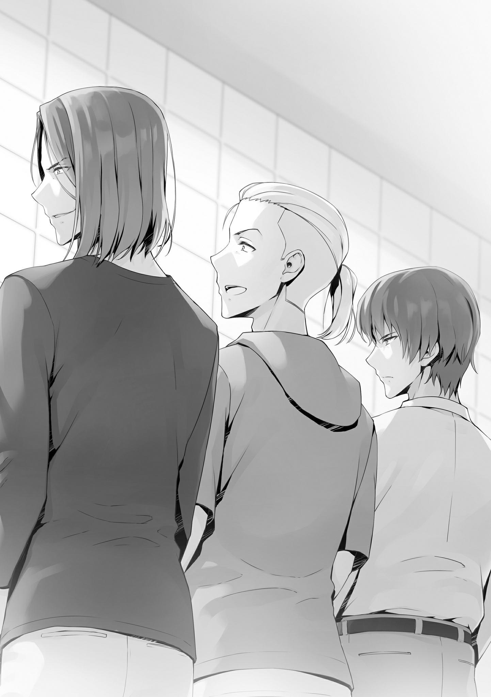
Ejerció una presión que fue sentida por todos los presentes, para mostrar que no tenía intención de perder ante ellos.
Después de terminar su asunto, Kanzaki volvió a hablar con convicción.
—Recuerda lo que dije, Ryuuen.
Salió del baño después de decir eso, un paso adelante de los otros dos.
—Jejejeje. ¡Qué miedo!
—¿Así que ahora vas a destruir completamente la clase B?
—Quién sabe.
Ryuuen se rio mientras evitaba la pregunta, y luego recordó algo que no tenía nada que ver.
Y esa fue la conversación entre Hashimoto y Kanzaki, que ocurrió hace una hora.
PARTE 4
Después de dejar a Ichinose y Horikita, me sentí dividido sobre si debía volver o no.
Sin embargo, me encontré con Ryuuen, que me llevó a una esquina desierta en el centro comercial Keyaki.
Mantuvimos nuestra distancia, así que si alguien nos veía, podíamos fingir que también nos ignorábamos.
—¿Escuchaste esto de Ishizaki? ¿Qué estoy en el centro comercial Keyaki?
—Sí, te estaba buscando.
¿Así que habló con Ishizaki e Ibuki durante una hora? ¿O terminó antes?
En cualquier caso, los ojos de Ryuuen tenían más espíritu que antes.
—Conoces mis datos de contacto. ¿No sería más fácil hablar por teléfono?
—Quería hablar contigo y mirar tu rostro insensato y severo al mismo tiempo.
Bueno, escucharé lo que tiene que decir por un momento.
—¿Qué se supone que significa eso?
—"Eso" se referiría al mensaje que le dije a Hiyori que te pasara.
Habría conseguido más de 5 victorias usando una estrategia mejor. Le dije que le dijera esto a Ryuuen. Parece que había hecho bien su tarea.
Después de escuchar mi mensaje de Hiyori, le llevó a tratar de encontrarme, así fue como esto ocurrió.
—Quiero decir lo que quería decir. Habría hecho un mejor trabajo si dependiera de mí.
—Soy libre de usar cualquier medio necesario.
—No quiero que termine así. Si continúas con tus estrategias imprudentes y te expulsan como resultado, puede que me sienta un poco solo.
Dije esas palabras de manera casual, pero no pareció afectar el estado de ánimo de Ryuuen.
—Ahaha, qué broma. ¡Pierdes contra Sakayagani y sigues con esta calma!
—En efecto, nuestra clase perdió contra Sakayanagi. Y como yo serví como comandante, no puedo ser excusado de la responsabilidad del fracaso.
¿Pero es Sakayanagi más fuerte que yo? Lucha contra ella, y lo averiguarás.
—¿Me estás subestimando?
La sonrisa de Ryuuen desapareció cuando se acercó a mí.
—Tú, que me has derrotado incluso a mí, no puedes ser más débil que Sakayanagi.
Parecía que intentaba provocarme, diciendo a propósito cosas tan degradantes.
—Aunque agradezco que intentes animarme después de perder, pero aunque sea yo, no puedo ser perezoso y no esforzarme al máximo durante un examen, ¿verdad?
—Lo siento, no me lo creo en absoluto. En lugar de creer que hablabas en serio durante el examen, es más creíble que desde el principio no te importara ganar o perder... también puede ser porque la escuela lo arregló para que la clase A ganara para salvar las apariencias. Eso es más creíble para mí.
Aunque no era la respuesta correcta, estaba cerca del blanco.
Sólo Ryuuen tenía una capacidad de comprensión tan ridícula en toda la escuela.
Porque había luchado previamente contra mí, tenía una convicción absoluta en esto.
—Entonces... ¿Qué planeas hacer después de tu regreso, Ryuuen?
—No digas que he vuelto sin mi permiso. Tengo la intención de disfrutar de las vacaciones por un poco más de tiempo.
Ryuuen quiso decir que no participaría oficialmente en las batallas entre las clases por un tiempo.
—Pero... si me canso de esto, destruiré a Ichinose y a Sakayanagi como calentamiento.
—¡Qué cambio tan extremo de opinión!
—Kukuku, en efecto. Yo también estoy sorprendido. No esperaba poder vengarme de ti tan pronto. Me estoy animando.
—Así que las cosas son así.
La serpiente estaba a punto de despertar de su hibernación.
Si eso sucede, ni la clase B ni la clase A podrían ignorar a Ryuuen.
Aunque en lo que respecta a Sakayanagi podría ser correcto, no sería extraño ver a ninguna de las dos clases salir ganando.
—Estaría agradecido si lo hicieras. Si eres capaz de destruir a Ichinose y Sakayangi, sería de gran ayuda. Ya que nos permitiría lograr nuestro objetivo de llegar a las clases altas sin problemas.
Hacer que las clases altas se peleen entre ellas sería esencial para nosotros para poder subir en la clasificación.
—Creía que no te interesaban las batallas entre clases.
—Es un poco diferente ahora. Mi clase quedará en la cima el año que viene, aunque no esté aquí para entonces.
—¿Ah?
—Aunque no esté aquí —Ryuuen pareció sorprenderse por eso—. Tal vez estoy siendo atacado ahora mismo desde la distancia. Si ese es el caso, no sería extraño que me expulsaran de repente, ¿verdad?
Si Tsukishiro realmente tenía la intención de hacer esto, algunas situaciones inevitables ocurrirán para mí.
Este sería el caso aunque tomara precauciones para tratar de defenderme de ellas.
Por supuesto, no voy a facilitarle las cosas a mi oponente.
—Relájate. La única persona que puede hacer que te expulsen soy yo.
Ryuuen dijo en su característico estilo confiado.
—Pero...
Ryuuen, que estaba a punto de hablar, desapareció repentinamente de mi campo de visión.
Atacó repentinamente, yendo hacia mi cara sin la más mínima vacilación, sus afiladas puntas de los dedos apuntando a mis ojos. No tuve más remedio que esquivarlo.
—¡Ajá!
Ryuuen usó el impulso para girar e intentar patearme con su pie derecho, pero fue sólo una finta, y pasó justo sobre mí.
El verdadero ataque fue con su pierna izquierda, usando la fuerza del giro para hacerlo aún más poderoso.
Lo esquivé de nuevo, y me distancié de Ryuuen.
—Ja, incluso puedes esquivar así después de un ataque sorpresa. ¡Qué tan monstruoso eres!
—Y todavía te atreviste a atacarme primero.
Aunque sólo éramos él y yo, seguía habiendo muchas cámaras de vigilancia.
Sin embargo, si los estudiantes en cuestión no causaban problemas, hacían la vista gorda ante estas pequeñas cosas. Esto fue lo que permitió a Ryuuen seguir adelante con su característico comportamiento descarado.
—Mis instintos me dicen que debería comerte vivo.
Incluso en hibernación, las serpientes se comen a su presa por instinto.
—¿Por qué no atacas?
—Quiero evitar el riesgo de pelear contra ti aquí. Además, todavía no es el momento adecuado.
—Haha. ¿Así que esta es la llamada calma de los fuertes? Pareces ser sincero en esto, y me está poniendo la piel de gallina.
Sus ojos brillaban como antes. No, esto era aún más brillante.
Este no es el Ryuuen que ha estado acechando bajo el agua durante los últimos meses.
—Tienes una oportunidad. Por eso, es mejor que te hagas más fuerte, Ryuuen.
Tal vez no le gustó el hecho de que lo dijera de una manera muy condescendiente, así que golpeó la pared.
—¿Ser más fuerte aún? ¿Quién eres tú, mi maestro?
—Estoy diciendo la verdad. Estás dispuesto a usar cualquier medio necesario, incluso confiar en medios despreciables y criminales para lograr la victoria. No tengo ningún problema con eso, pero trata de no ser tan obvio al respecto.
—¿Ah?
—Escuché de Ishizaki que usaste laxantes. Drogarlos en la sala de karaoke fue una buena idea, pero si la comida y las bebidas se hubieran guardado como prueba, se habría acabado para ti. Ese es un acto que hará que te expulsen sin cuestionamientos. Aunque lo que hiciste fue ignorado, un comportamiento peculiar durante el examen profundizará la desconfianza de la escuela hacia ti. Tu única salvación fue que Ichinose no quiso quejarse de ello.
—El hecho de que Ichinose sea demasiado fácil de manejar se tuvo en cuenta en mis planes.
—Si ese es el caso, no es más que una consideración ingenua. Nunca me superarás de esa manera.
—...Ahora sí que lo has dicho.
Ryuuen se acercó a mí una vez más.
Pero no fue como antes, ya que no parecía querer atacarme.
Incluso si sólo reprimía su intención de atacar, no sería demasiado difícil de manejar de todos modos...
—No tienes que escuchar mis consejos. Pero pelear conmigo ahora es imposible.
¿Aceptaría Ryuuen el consejo de su enemigo? Esto podría determinar si tenía cierta habilidad o no. Ryuuen pareció calmarse y quitó el puño de la pared.
—Voy a aceptar tu consejo de mierda por ahora. Pero un día te derrotaré.
—No es una mala motivación, Ryuuen. Si me expulsan por tu culpa, no sería tan malo.
Aunque estaba enfadado, Ryuuen escuchó lo que dije.
Y como resultado, las futuras estrategias de Ryuuen se volverían aún más ingeniosas.
La competencia a la que nos enfrentamos en el segundo año se estaba volviendo más difícil de imaginar.
¿Ryuuen arrasaría con Sakayanagi y ascendería directamente a la Clase A, o Sakayanagi lo detendría?
¿O Ichinose regresaría todavía más fuerte en el futuro?
Enfrentada al ataque de tres frentes, ¿qué tan profundo se hundiría Horikita en el campo de batalla?
El campo de batalla sería muy diferente a como se veía durante nuestro primer año, y no pasaría mucho tiempo hasta que pudiéramos ser testigos de primera mano.
PARTE 5
Eso fue lo que pasó antes de la situación en el baño.
Mirando de reojo a la salida de Kanzaki, Ryuuen dijo esto.
—Vuelvo a la guerra. Aunque derroté a la clase B como oponente, todavía hay espacios para reflexionar.
Ryuuen lo admitió. Para derrotar a Ayanokouji, necesitaba admitir lo que tenía que admitir.
—Qué admirable. Y estaba pensando en qué tipo de sucio método usarás a continuación. ¿Vas a luchar justamente como Kanzaki te dijo?
—¡Ja! ¿Quién dijo que haría eso?
—¿Eh?
—Aunque explotar la ingenuidad de Ichinose fue una buena jugada, les dejó demasiadas oportunidades para aprovecharlo. Por eso ese insignificante se atrevió a enfrentarse a mí.
—...Así que eso es lo que quieres decir.
No era el uso de sus despreciables métodos lo que necesitaba reflexión.
En su lugar, era cómo entregó el juego al no ser tan cuidadoso como debería haber sido.
—La próxima vez, los destruiré de forma incluso más perfecta y hermosa.
No importa qué clase de declaración haga Kanzaki, Ryuuen no actuará a ciegas durante este período.
Si realmente hubiera escondido sus colmillos, Ryuuen lo sabría inmediatamente.
—Has crecido este año, Ryuuen. Establecer una relación contigo pronto fue realmente una buena decisión. Parece que incluso tengo que considerar la posibilidad de que Sakayanagi sea vencida por ti.
Hashimoto observó cuidadosamente la clase B mientras se acercaba.
Para tener éxito, tenía que graduarse de la clase A sin importar lo que pasara.
PARTE 6
Llegó el mediodía y empezó a llover mucho, como si alguien hubiera volcado un cubo lleno de agua. La precipitación superó los 30 mm.
No sé por qué no quería volver a los dormitorios, pero decidí quedarme en el centro comercial Keyaki yo solo.
Era conveniente que casi todo estuviera ubicado en el campus. Esto significaba que aunque empezara a llover mucho, no tendría problemas para volver a los dormitorios porque los estudiantes podían pedir prestado un paraguas temporalmente.
Siempre y cuando fuera devuelto antes del tiempo especificado, era gratis. Esto llevó a muchos estudiantes a usar este servicio.
Había algunos estudiantes que salían por la mañana y no traían paraguas. Esto se hacía para reducir la cantidad de cosas que tenían que llevar.
Dicho esto, hoy fue un poco diferente.
Como estaba lloviendo tanto, un paraguas no habría hecho la diferencia. Igual te mojarías.
—No parece que vaya a parar hoy.
Según el pronóstico del tiempo, lloverá desde el mediodía hasta mañana por la mañana.
Mi teléfono vibraba ocasionalmente debido al grupo Ayanokouji.
Discutieron varios temas, desde la lluvia hasta otros asuntos causales.
—¿Qué debo hacer?
No me apetecía unirme a la conversación, así que lo dejaré estar. De esta manera, los mensajes no se mostrarán como "leídos".
Miré fijamente a la pantalla mientras prestaba atención a la conversación en el chat del grupo.
Y como si de repente recordara algo, para pasar el tiempo, me quedé mirando repetidamente la lluvia fuera de la ventana.
No soy productivo en absoluto, perdiendo el tiempo de esta manera.
Pero hacer esto de vez en cuando no es tan malo.
No volví al café.
En su lugar, me senté en un banco al azar para matar el tiempo.
Dicho esto, no podía seguir haciendo esto durante horas.
Después de escuchar la lluvia durante 20, 30 minutos, decidí regresar.
Recogí mi identificación de estudiante y alquilé un paraguas en la máquina.
Aunque pidiera prestado un paraguas, la parte inferior de mi cuerpo, especialmente debajo de las rodillas, seguiría empapada por la lluvia. Sin embargo, era mejor que nada.
Inicialmente decidí irme directamente al dormitorio desde aquí, pero después de dar un paso fuera de la salida, vi a una estudiante conocida. Ichinose, en medio de esta lluvia torrencial. No llevaba un paraguas en la mano.
Parecía que se había quedado en el centro comercial de Keyaki desde nuestra conversación.
No hay señales de que haya salido con sus amigos, y estaba sola.
Debió quedarse y pensar en muchas cosas después de separarse de nosotros.
—Ha estado ordenando sus pensamientos desde entonces, ¿eh?
Sin embargo, a juzgar por su apariencia, no tuvo mucho éxito.
Si volvía sin paraguas, no había duda de que todo su cuerpo se mojaría.
Pensé que quizás estaba esperando a una amiga con un paraguas, pero no parecía ser el caso.
Podría ser un acto de bondad dejarla sola... pero estaba un poco preocupado considerando que la clase B acaba de sufrir una derrota total durante el último examen.
Me apresuré a volver para pedir prestado otro paraguas.
Cuando volví un poco más tarde, vi a Ichinose caminando hacia adelante bajo la lluvia, aceptando el hecho de que estaría empapada.
Ichinose no caminaba en dirección al dormitorio, sino en dirección contraria, hacia la escuela.
Además, las gotas de lluvia la bombardeaban, ya que no tenía paraguas.
Aunque pude simplemente verla alejarse...
Igualmente tomé los paraguas, y perseguí a Ichinose.
Debido a que la lluvia era muy fuerte, no podía oír mis pasos.
Incluso si la llamaba con mi voz normal, no sería capaz de oírme.
Ichinose continuó caminando por el sendero hacia la escuela. La escuela estaba en nuestra línea de visión.
Con esta lluvia torrencial, no habría nadie alrededor.
Ichinose se quedó quieta y empezó a mirar al cielo, sin preocuparse por nada.
Parecía que en lugar de evitar la lluvia, quería que la empapara.
¿Qué es lo que sientes? ¿En qué estás pensando?
No sería difícil de adivinar.
Aunque no me importaba dejarla quedarse bajo la lluvia tanto tiempo como quisiera, definitivamente se resfriaría si se quedaba más tiempo.
Y si se resfriaba, se volvería aún más frágil mentalmente.
Eso sería algo cruel para Ichinose en su condición actual.
—Te resfriarás si te quedas en un lugar como este...
Levantando un poco la voz, llamé a Ichinose cuando me acerqué a ella.
—... Ayanokouji-kun.
Como no esperaba que nadie estuviera cerca, Ichinose se sorprendió un poco, pero luego miró en mi dirección.
—...Sí.
Susurró suavemente, pero no se movió ni un centímetro.
Miró al cielo una vez más, sin miedo a empaparse.
—Deberías volver primero. Me... gustaría que la lluvia me empapara un poco.
Me dijo Ichinose, cuando estaba lo suficientemente cerca como para oír su tierna voz.
—Ya veo.
No me pareció correcto, usar "un poco" para describir la fuerte lluvia.
Si la dejaba sola, Ichinose podría permanecer en esta lluvia durante una o dos horas.
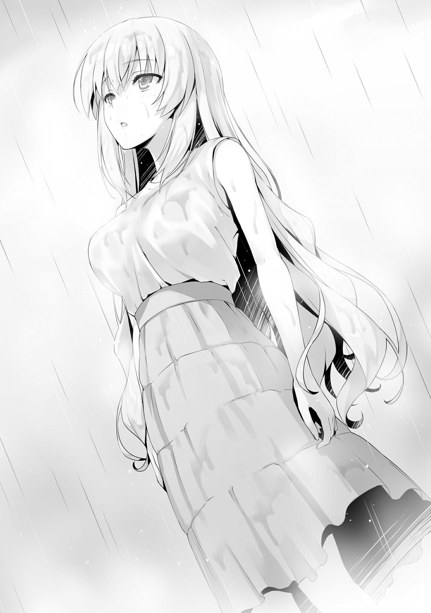
Aunque intentara persuadirla, no me escucharía en estas condiciones.
Así que, para hacerla escuchar, creo que tendré que usar medios un poco más duros.
Había un método particular que funcionaba con Ichinose en situaciones como esta.
Bajé mi paraguas, cerrándolo.
Y en un instante, la lluvia se filtró en mi cuerpo.
—¿Aya-Ayanokouji-kun?
—Pensé en unirme a ti.
Ichinose no podía ignorar mis peculiares acciones.
—¿Por qué...?
—De vez en cuando, me gusta estar de pie bajo la lluvia y estar empapado sin razón alguna.
Esto formaba un claro contraste con Ichinose, que tenía una razón para querer mojarse.
Aunque yo tenía dos paraguas, los dos estábamos absolutamente empapados.
Esta fue una experiencia bastante extraña.
—¿No te vas a resfriar?
—Puedo decirte lo mismo.
—No me importa. O mejor dicho, sería bueno que cogiera uno pequeño.
Así que ese es el caso. Estar de pie bajo la lluvia y empaparse sería la mejor manera de atrapar uno.
—Entonces tal vez yo haga lo mismo.
Por supuesto, mi respuesta la confundiría. Después de todo, ella misma no diría nada como "¡Resfriémonos juntos!" o algo así.
—De ninguna manera, Ayanokouji-kun. Deberías volver. Después de todo, tienes un paraguas.
—Ya no habrá mucha diferencia.
Todo lo que estaba debajo de mi ropa ya estaba empapado, y había penetrado en mi cuerpo.
—¡Oh... en serio!
—Lo siento por eso-
Si Ichinose no vuelve, yo tampoco volvería. Ichinose parece haber sucumbido a mi amenaza.
—... Ya entendí. Regresemos.
—Si es así...
Quería pasarle el paraguas, pero al final no lo hice.
—¡Ya estamos mojados, así que qué importa si usamos eso!
—Jaja, es verdad.
Tomaría unos minutos volver al dormitorio.
No habría mucha diferencia si usamos un paraguas o no.
Mientras nos empapábamos por la lluvia, dimos nuestros primeros pasos.
Aunque no me importaba guardar silencio mientras volvíamos, Ichinose suspiró poco después.
—Ahh, siempre te estoy mostrando mis debilidades... soy tan patética...
—¿Tus debilidades? Tal vez sea cierto.
Hace un tiempo, cuando Sakayanagi jugaba con Ichinose, también se había perdido una vez.
—Frente a los demás, pensé que podía ser más decisiva y capaz, así que,
¿por qué sucede esto?
—La gente sólo puede mostrar su lado débil a la gente en la que confía.
Eso es lo que pienso.
Al menos, no quieres mostrar ninguna debilidad a la gente que odias.
Aunque fuera una mentira, todavía tienen que actuar con fuerza. Sólo cuando estén solos, sus debilidades saldrán a la luz.
—Eso fue engreído de mí parte, olvida lo que dije.
—No... creo que es verdad. Creo que eres una persona de confianza. Por eso siempre termino dejando que escuches mis quejas. Pero... ¿por qué se siente como si siempre estuvieras a mi lado cuando estoy deprimida?
—Bueno, todas esas son coincidencias.
—Lo siento mucho.
—No hay necesidad de disculparse. Además, no creo que esto sea malo.
Pero si otros estudiantes se enteraran de esto, podrían enojarse.
Ichinose es una chica muy popular en este año escolar.
Si los chicos comunes y corrientes escuchan esto, definitivamente sentirán envidia.
—Si está bien, puedes quejarte conmigo todo lo que quieras.
—Eso...
Con una mirada de ansiedad, Ichinose sacudió su cabeza de lado a lado.
—No... no estoy de acuerdo con mostrar mi debilidad de esa manera, es demasiado patético.
Aunque la temperatura aumentaba lentamente, seguía siendo baja.
En medio de una lluvia torrencial sin gente, finalmente llegamos al dormitorio.
Estábamos a punto de entrar en el vestíbulo, pero una vez más, Ichinose dejó de moverse.
—Creo que es mejor que vuelvas primero tú solo, Ayanokouji-kun.
—¿Qué vas a hacer, Ichinose?
—Quiero quedarme aquí un rato, yo... no quiero volver a mi habitación todavía.
Ichinose se negó a volver y dijo eso.
Esta vez, sin embargo, había mucha fuerza de voluntad detrás de su negativa.
—Aun así, será mejor que vuelvas.
Al estar continuamente empapada por la lluvia, podría haberla distraído de lo que estaba sintiendo.
Pero la lluvia era sólo eso, una distracción. No resolvería el problema fundamental.
No quería ceder a la resistencia de Ichinose.
—Sin embargo... no quiero volver... al menos no ahora mismo.
—¿En serio? Entonces me quedaré aquí también.
Ichinose pareció sorprenderse y confundirse por mi actitud inquebrantable.
—Si estoy sola en mi habitación, pensando, me deprimiré... Así que no quiero volver.
Ichinose no iría más lejos, aunque siguiéramos estando bajo la lluvia.
Si ese es el caso, entonces tendré que usar otro método para hacer que se mueva.
—¿Entonces quieres venir a mi habitación?
—¿Eh?
Al recibir una respuesta inesperada, Ichinose me miró fijamente a los ojos.
—Si tienes a alguien con quien hablar, entonces no estarás tan deprimida.
—Pero... estoy toda mojada...
—Bueno, estoy tan mojado como tú. Si no quieres subir, entonces me quedaré contigo aquí, durante las horas que sean necesarias.
—Eres inesperadamente terco.
—Tal vez.
Y así arrastramos nuestros cuerpos mojados al dormitorio.
Fue un alivio que nadie estuviera en el vestíbulo en ese momento.
Y así como así, tomamos el ascensor y subimos a mi habitación en el cuarto piso.
—Por favor, entra.
—¿Estás seguro?
—Uh-huh.
—...Lo siento, gracias.
Dejé entrar a Ichinose a mi habitación y la hice sentar.
Aunque sentarse en el suelo frío sólo haría que su cuerpo se enfriara.
Y usar ropa mojada tampoco era bueno para el cuerpo.
Encendí la función de calor del aire acondicionado para que Ichinose no se enfriara más.
Entonces saqué una toalla del armario y se la entregué.
—¿Qué tal si hablamos de ello?
—¿Hablar... sobre qué?
—Habla de lo que piensas, y de lo que te preocupa, y todo lo relacionado con eso.
—Eso... pero... pero yo... ¡no puedo!
Ichinose se negó, al parecer, confundida.
—Siempre he confiado en ti últimamente, Ayanokouji-kun. He recibido más ayuda que nadie. Si digo esto audazmente... No, no puedo decirlo, es demasiado desagradable.
Ichinose Homani no es más que una niña débil...
Y sin embargo, siempre mantiene la compostura como líder.
Esa es una habilidad que un líder debe tener.
Esa serenidad es necesaria para que los demás sientan que seguir su liderazgo está bien.
La persona que lidera tiene que mostrar esto a la gente que está liderando.
—Ayanokouji-kun, ya me entiendes muy bien.
—Sí, soy muy consciente de tu situación. Pero eso sólo se limita a ti como persona. No soy consciente de tus problemas como líder de la clase B.
—Incluso te estás esforzando mucho para hacer esto...
Ichinose se cubrió la cara con la toalla, incapaz de ser honesta con ella misma.
Es como si se negara a dejarme leer su expresión.
—¿No puedes confiar en mí?
—¿Eh?
Ichinose respondió, todavía cubriendo su cara.
—Si ese es el caso, entonces no tienes que obligarte a hablar. Más bien, es un error dejar que los demás lo escuchen.
—No... No es eso. Probablemente confío en Ayanokouji-kun más que en nadie ahora...
En cuanto a si eso era una mentira o la verdad, no importaba.
Porque sea lo que sea, tenía la intención de seguir con mi siguiente frase.
—Es un honor, pero ¿cómo puedes decir eso tan fácilmente? No sabes si me estoy aprovechando de tu franqueza. Aunque sólo sea un rumor, le contaste a Sakayanagi sobre tu pasado... ¿cierto?
Ese evento debería estar aún fresco en su memoria.
El crimen que cometió en la secundaria, y cómo quería mantenerlo en secreto.
Aunque robó en una tienda por el bien de su hermana menor, se lo contó a Sakayanagi, su enemiga de la clase A.
Aunque era algo difícil de hablar, incluso con su mejor amiga, terminó contándoselo a su enemigo, aunque la manipularan.
Incluso para una buena persona, esto era bastante excesivo.
—Cuando no sabes exactamente cuál es tu relación con la otra persona, normalmente no contarías tus secretos.
Por supuesto, si hubiera una razón para sus acciones, entonces sería otra historia.
Pero lo que Ichinose hizo no tenía sentido.
No, ella sabía que se arrepentiría, pero aun así lo hizo.
—¿Qué harás si vuelve a ocurrir lo mismo?
—Bueno, incluso yo, no quiero que vuelva a suceder.
Dicho esto, Ichinose tocó su flequillo, que estaba brillante por estar mojado.
—Ya veo. Eso es bueno. Ahora que eres más consciente de tu situación, no discutiré más el tema.
—Ah, no. Definitivamente... no volveré a sufrir una crisis por las mismas razones que antes. Pero Ayanokouji-kun es diferente.
—No soy tu compañero de clase. Sigo siendo tu enemigo, y eso no cambiará, ¿verdad?
—No quiero usar esa palabra tan fácilmente.
—Aunque no quieras decirlo, es la verdad.
—...Pero...
Incapaz de aceptarlo, Ichinose reformuló su frase.
—Aunque no eres un aliado... eres una persona de confianza.
Al transmitirlo así, la palabra "enemigo" fue eliminada.
El agua que preparé antes de empezar a hervir.
—Sólo tengo café, café con leche y chocolate caliente.
—Entonces... tomaré el chocolate.
Asentí con la cabeza a Ichinose, que respondió con una sonrisa, y vertí el chocolate en la taza.
Tomar bebidas calientes puede calentar tu cuerpo.
Pronto, la lluvia amainó, y el brillo del atardecer comenzó a atravesar las nubes.
Ichinose miró este paisaje un poco, y luego se giró hacia mí con una leve sonrisa.
Después de un rato, Ichinose comenzó lentamente a hablar de sus sentimientos.
—Cuando me asignaron a la clase B y conocí a mis compañeros, estaba segura de la victoria. La gente dice que pude haber sido demasiado engreída, pero fui bendecida con excelentes compañeros. Ese sentimiento no ha cambiado.
Como si lo confirmara de nuevo, Ichinose dijo esto.
—Sin embargo, el único error de cálculo fue el mío como líder. Si hubiera tomado una mejor acción, la clase B definitivamente tendría más puntos que ahora.
—No lo creo. Siempre te he considerado una persona extraordinaria.
Sacudiendo la cabeza, rechazó mis elogios.
—Después de hablar con Horikita-san hoy, realmente sentí que ella ha crecido mucho como persona este año. Lo mismo es cierto para Sakayanagi-san y Ryuuen-kun. No importa qué clase sea, su líder se está haciendo más fuerte.
A diferencia de los que mostraban un crecimiento constante, Ichinose no pudo ver su propio crecimiento en el último año.
Debido a ese sentimiento, había perdido la confianza en sí misma.
Al sentir que se estaba debilitando y perdiendo la confianza en sí misma, también tenía la impresión de que los demás la estaban dejando atrás.
—¿Seré... seré capaz de ganar en el futuro?
—¿Serás capaz de ganar en el futuro, eh?
—Si dijera que quiero oír tu opinión, ¿me responderías con sinceridad?
—Si eso es lo que quieres, supongo que podría.
Mi respuesta no era necesariamente correcta.
Sin embargo, Ichinose quería una respuesta ahora.
Pero esto no es algo que pueda ser respondido claramente en este momento.
El futuro aún no había sido determinado, y había un sinfín de posibilidades.
Sé que Ichinose no es el tipo de estudiante que se rinde tan fácilmente.
—Pronto estaremos en segundo año. Es decir, el nuevo año está por llegar.
—Sí...
—A lo largo del año, no importa lo que pase, tendrás que luchar junto con tus compañeros de clase. Durante ese periodo, puedes experimentar felicidad, tristeza, y a veces también dificultades, pero a pesar de eso, nunca debes dejar de avanzar.
Ichinose Honami ha hecho su papel de líder de la clase B lo mejor que ha podido hasta ahora.
La única cosa que Ichinose Honami puede hacer como líder de la clase B ahora mismo, es continuar viviendo temerariamente su vida como lo ha hecho hasta ahora.
Necesitaba confiar en sus camaradas, y luchar hasta el final. Esa era la única opción que tenía. Esta era el arma que sólo la clase B tenía permitida.
—Y entonces... ¿será esta... mi respuesta... después de un año, me pregunto?...
Estaba hablando de sí misma un año después.
Seguramente se debe sentir muy incómoda.
—Tengo miedo. Tengo miedo de averiguar... lo que me dirás dentro de un año...
Empezar en la clase B no estuvo mal en la Preparatoria Avanzada de Educación.
Ichinose pasó un año con sus compañeros de clase, y protegió esa posición.
Rodeada de muchos compañeros, su vida escolar había transcurrido sin problemas.
Sin embargo, si no prestaba atención, aunque fuera por un momento, podría descubrir que la brecha entre las clases inferiores se estaba cerrando.
La derrota finalmente alcanzó a Ichinose, y la miraba fijamente a los ojos.
—Yo-
—Entiendo. Es difícil aceptar eso como respuesta.
Ichinose apartó la mirada.
No pude responder a su pregunta sobre si ganaría en el futuro. No, no había necesidad de responder a eso.
A juzgar por la situación actual, una gran brecha entre las clases en términos de capacidad de combate estaba creciendo.
Si analizas objetivamente la situación actual, la clase que estará en el fondo el próximo año, probablemente será la clase B.
Eso es lo que hace que Ichinose se sienta tan inquieta.
No era el frío, sino el miedo que penetraba en su cuerpo y la hacía temblar ligeramente.
—¿Qué debo hacer... qué puedo hacer...?
Se veía tan débil. Ichinose ciertamente no permitiría que otros estudiantes la vieran así.
Especialmente sus compañeros de clase.
Es una tarea sencilla decir palabras tiernas a la Ichinose que me abrió su corazón. Tampoco sería mucho más difícil susurrar palabras tiernas y dulces, entregándolas a través de la brecha de su corazón.
Incluso podría ser posible para mí tocar ls piel escondida bajo sus ropas mojadas.
Me moví un poco, ya que Ichinose reaccionó excesivamente y levantó la cabeza para mirarme.
Me puse al lado de Ichinose y me senté, manteniendo mi posición, y atrapé con fuerza su mirada, que parecía querer escapar.
—¿A-Ayanokouji-kun...?
Extendí mi mano derecha y toqué el pelo mojado de Ichinose, luego le acaricié ligeramente la mejilla.
Había una sensación fría y suave.
Luego fue el calor débil y envolvente que se extendió desde la punta de mis dedos.
Luego, moví mi pulgar, y suavemente acaricié sus labios...
Al hacerlo, el temblor de su cuerpo disminuyó y pronto sus labios temblorosos también se calmaron.
En condiciones normales, este tipo de acción sería rechazada por cualquiera y tratarían de correr. Sin embargo, Ichinose no huyó.
—Es tan extraño... Realmente eres una persona misteriosa... Ayanokouji-kun...
—Tal vez.
Después de terminar la conversación, miré fijamente a Ichinose. Nada más y nada menos.
—Ahora, Ichinose, ¿te reunirás conmigo de nuevo el año que viene en este día?
—...¿Qué quieres decir?
No intentó escapar del toque de mi palma, mientras me miraba con sus ojos húmedos.
—Quise decir lo que dije. Quiero volver a verte el año que viene. Nadie más, sólo nosotros.
Esto puede sonar como una especie de confesión.
Pero, esto terminaría ahora. Alejé suavemente mi mano de la mejilla de Ichinose, me levanté y me distancié de ella.
—En el próximo año, no te sientas atrapada por la confusión y la incertidumbre, sigue adelante. Entonces, habla conmigo de nuevo el año que viene. ¿Puedes prometerme esto?
—Eso...
Dudó por un momento.
—Pero, ¿y si... yo en ese momento... nuestras clases...?
—No importa. Sólo quiero ver a la Ichinose de un año después.
Ichinose cerró los ojos y asintió ligeramente.
—Te transmitiré entonces lo que quería decirte ahora, es una promesa.
—Sí. Gracias... Ayanokouji-kun.
Algún tipo de brillo había empezado a volver a sus ojos, desprovistos de energía.
—También prometo esto. Lucharé con todas mis fuerzas y superaré a la clase A este año.
Ichinose dejó salir la sonrisa más brillante que ha tenido todo este tiempo.
Hicimos una promesa de volver a vernos un año después.
Si ambos sobrevivíamos, entonces esta promesa se cumplirá.
La clase B, dirigida por Ichinose Honami.
¿Qué les sucederá en el futuro?
Hay muchos factores que me hacen ser pesimista, pero el futuro no está decidido.
Sin embargo... Si ella cae durante el segundo año, entonces seré yo quien la remate*.
Nota del TL: *El original japonés usado es "Kaishaku", se refiere al acto de decapitar a alguien que ha cometido seppuku, para hacer que muera más rápidamente y sin dolor.
DE UN HERMANO PARA UNA HERMANA
El segundo día, 31 de marzo.
Para mí, este es un día especial que finalmente ha llegado.
Así es, es el día en que el mayor de los Horikita se embarca en su próximo viaje.
Acordamos reunirnos al mediodía. Llegué temprano, como siempre, y me dirigí a la entrada principal de la escuela.
Parecía haber cumplido su palabra y no le había dicho a nadie más que se iba.
No había nadie alrededor, excepto yo.
Mis ojos se dirigieron a las figuras de los estudiantes que se dirigían al centro comercial Keyaki, mientras esperaba en silencio su llegada.
Hace un año, llegué a esta escuela por esta misma entrada.
Aunque se puede pasar el rato cerca de aquí de vez en cuando, este no es un lugar al que la gente asista a menudo.
Si se trataba de una actividad del club o de un examen especial, podías tomar el autobús que pasa por aquí. Aun así, si querías cruzar la entrada, tenía que ser porque te habías graduado o te habían expulsado.
Como no podías repetir año, una de esas dos situaciones inevitablemente ocurría en los 3 años.
—He estado pensando mucho en esto recientemente.
Era casi el comienzo del segundo año.
Reflexioné sobre mi cambio de actitud, y fue como si me hubiera convertido en una persona diferente.
Sólo 20 minutos antes de la hora acordada, el hermano de Horikita finalmente llegó.
Después de confirmar que era yo, el mayor de los Horikita miró ligeramente el área que me rodeaba. Era obvio lo que estaba buscando.
—Desafortunadamente, tu hermana no está aquí todavía.
—Ese parece ser el caso.
La hora actual es las 11:40 AM.
No era demasiado tarde. Pero considerando que no quedaba mucho tiempo, ella debería haber llegado antes.
Pensé en la charla de ayer con Ichinose.
Recordé cómo se veía Horikita mientras hacía lo que tenía que hacer en ese momento.
¿Estaba pasando algo?
—La llamaré.
Sugerí esto. Si fuera yo quien la llamara, el mayor de los Horikita estaría de acuerdo con ello.
Aunque, eso fue lo que pensé...
—Está bien, no hay necesidad.
El Horikita mayor me detuvo suavemente con su mano, impidiéndome hacerlo.
—Si no se sintiera bien, me habría contactado previamente.
—Podría estar durmiendo demasiado.
Aunque eso era improbable, todavía mencioné esa posibilidad.
—Si ese es el caso, no hay necesidad de despertarla.
Decía que si se hubiera quedado dormida en una ocasión tan importante, no valdría la pena mencionarla.
A pesar de que era su último día, su actitud era la misma de siempre.
—¡Oh bueno! No debería haber ningún problema. Después de todo, todavía hay tiempo.
Puede que esté nerviosa quedándose en su habitación hasta el último momento, por el hecho de que es su hermano con el que se va a encontrar.
—Por ahora no hablemos de eso. No esperaba que vinieras tan pronto.
—Pensé que también vendrías temprano.
Acordamos reunirnos al mediodía.
Había tiempo más que suficiente antes de que el autobús partiera.
Pero para su despedida final, esperaba que los hermanos Horikita tuvieran una larga charla.
Y por eso, como era de esperar, el mayor de los Horikita llegó 20 minutos antes.
Lo que ambos no esperábamos era que la Horikita más joven, que debería haber sido el personaje central aquí, no hubiera llegado todavía.
De todos modos, como ella no había llegado, sólo podíamos hablar de cosas relacionadas con nosotros dos.
Era una pérdida de tiempo si no se decía nada, y esperábamos a que pasara el tiempo.
Después de pensar un poco, mencioné algo que me empezó a importar recientemente.
—Lo siento. Si hubiera podido hacer más por ti cuando estabas en el consejo estudiantil…
El mayor de los Horikita discutió conmigo cómo impedir que Nagumo hiciera lo que quisiera.
Sin embargo, en ese momento, debido a mi deseo de vivir una vida pacífica, no acepté su petición.
Aunque me presentó al Vicepresidente Kiriyama, nuestra relación terminó allí.
Como resultado, hasta el día de hoy, Kiriyama todavía no tenía ningún plan para actuar.
—Esa era mi responsabilidad. Fue mi culpa imponerte todo, así que no te preocupes.
Para el mayor de los Horikita, esta escuela era ahora una cosa del pasado.
Cómo se vería la escuela más tarde, Horikita no necesitaba preocuparse.
—Pero todavía te daré este último consejo. Siempre he adoptado una actitud firme con respecto a las reglas de la escuela. A pesar de que es una meritocracia, las clases de menor rango todavía tienen una oportunidad de victoria. De ninguna manera es una lucha fácil para todas clases.
—No creo que sea muy razonable considerando el hecho de que has permanecido en la clase A durante tres años enteros.
—Sin embargo, creo que la mayoría de los estudiantes no han notado la esencia de ese hecho. Por supuesto, muchas cosas pueden ser mejoradas por parte de la escuela. Pero sólo hay que mirar al pasado para entender que no importa si fue el examen de la isla desierta o el examen de fin de año, siempre hay una oportunidad para las clases bajas de vencer a las clases altas.
Se necesitaba competencia no sólo en los exámenes escritos, sino también en los exámenes especiales.
En el examen de la isla desierta, mientras estuviéramos unidos, derrotar a la clase A y B no era difícil.
Lo mismo ocurría en el examen de fin de año. Aunque la suerte era un factor, también era una prueba de que una clase inferior podía ganar.
—La suerte determina en gran medida la victoria o la derrota para los inmaduros estudiantes de primer año de las clases bajas para derrotar a las clases altas. Pero... también es difícil para las clases altas aceptar eso. Ese es uno de los elementos que es irritante.
Si la escuela fuera demasiado considerada con los niveles inferiores, los niveles superiores estarían insatisfechos.
Sin mencionar el método de utilizar 20 millones de puntos privados para subir de clase, el sistema de la escuela se basa en que las clases luchen entre ellas para subir de rango, y por lo tanto, es una estructura que no ignora a los estudiantes con bajas habilidades.
No importa qué clase sea, hay estudiantes sobresalientes, así como estudiantes de un nivel inferior al suyo.
Nagumo, que había experimentado un año de estos exámenes, tuvo una idea.
Era crear un sistema que favoreciera a los poderosos, permitiendo ganar a las personas con su propia fuerza personal.
El fuerte seguiría subiendo, mientras que el débil seguiría bajando.
—Tal vez lo que Nagumo quiere hacer no está necesariamente mal.
Habría gente que no estaría satisfecha con ello, pero también habría muchos estudiantes que lo aprobarían.
La mayoría de los actuales alumnos de segundo año estarían de acuerdo con ello.
Por supuesto, no todos estaban de acuerdo de corazón.
Impulsados por las tendencias que los rodean, el número de estudiantes que estén de acuerdo porque no tienen otra opción será alto.
Si cada persona tuviera fuertes habilidades, entonces todas las clases se verían envueltas en una feroz competencia.
—¿Hay una gran diferencia entre los de 2º año? Quiero decir en términos de puntos de clase.
—La hay. La clase A de Nagumo tuvo 1491 puntos en marzo, la clase B
889, la clase C 280 y la clase D 76 puntos.
Considerando que sólo quedaba un año, la clase A ya estaba en una situación estable.
Así que bajo esas circunstancias, Nagumo fue lo suficientemente audaz como para seguir adelante con una propuesta para ayudar a las clases bajas.
Con sólo 76 puntos en su haber, la situación de la Clase D sería imposible de revertir.
—Hay mucha gente que está de acuerdo con él. Si no pueden ganar con toda la clase, la gente que quiere ir a la clase A sólo tiene la esperanza de un sistema que les permita ganar con su propio poder.
—Ese podría ser el caso. Pero el enfoque de Nagumo dejaría a muchas personas en desgracia.
Si te vuelves demasiado poderoso e individualista, tus compañeros de clase sospecharán demasiado de ti.
Y entonces todos a tu alrededor se convertirán en enemigos.
El Horikita mayor, no, Horikita Manabu todavía creía que la cooperación dentro del sistema conocido como clase era siempre necesaria.
Este es el tipo de sistema que se había seleccionado después de considerar claramente lo que el futuro nos depararía.
—¿No es lo mismo con el sistema actual? Las tres clases fuera de la Clase A son todas desafortunadas.
Sólo podíamos imaginarnos cuál sería el sistema ideal de Nagumo.
Si el sistema de victoria individual se implementa y se establece con éxito, puede ser beneficioso para las clases que ya no tienen 40 estudiantes.
—Exactamente. Así que es como...
Tan pronto como empecé a hablar, el mayor de los Horikita intervino.
—Usar los puntos privados colectivos de la clase B y más abajo, y usarlos para apostar sobre quién tiene derecho a ascender a la clase A.
Como él tenía los mismos pensamientos que yo, asentí con la cabeza.
Si ignoramos a los estudiantes expulsados, había 120 estudiantes de la clase B
a la D.
Si juntan sus puntos personales, fácilmente excederían los 20 millones de puntos.
Incluso era posible llegar a 40 o incluso 60 millones de puntos privados.
Por supuesto, no todos estarían de acuerdo en participar en esa apuesta.
Aunque no sé cómo ha cambiado el sistema ahora, hasta hace poco podíamos cobrar estos puntos privados en la graduación.
Incluso si estabas en la clase D, mientras tuvieras suficiente dinero después de graduarte, habría algunos estudiantes a los que ya no les importaría.
Si realmente había gente con dinero que cumplía las condiciones, sería mejor para ellos elegir participar.
De todos modos, si la victoria de la clase no era posible, apostar con los puntos como último recurso no era algo malo.
Aumentaría el número de estudiantes que entran en la clase A.
Para el año académico que tenía la mayor brecha entre la clase A y las clases inferiores, era la última oportunidad de lograr ese sueño.
—¿No sucedió eso en tu grado?
—Sería un poco engañoso si dijera que esta idea no surgió. Pero no ocurrió. Debido a que las clases A y B competían constantemente, las clases C y D no ganaron suficientes puntos.
Pensé en el momento en que entré en contacto con los de 3º año de la clase D
justo después de inscribirme, cuando estaban en una posición incómoda en términos de puntos.
Si una clase perdía continuamente, se hacía cada vez más difícil ganar puntos privados. No era nada bueno pasar varios meses con 0 puntos privados.
—Si es sólo hasta este punto, no tendrá tanto impacto. Sin embargo, si los planes de Nagumo significan que incluso su clase A se verá afectada, sus compañeros también estarán en peligro.
De esta manera, los estudiantes que no tenían fuerza en la clase A tenían el riesgo de quedarse atrás. Este era el riesgo obvio.
En la clase A, si sólo Nagumo estaba dentro del rango seguro, entonces la meritocracia no sería apoyada por sus propios compañeros de clase.
Todas las clases deben ser tratadas de manera justa, ya sea la clase A o la clase D.
—Aunque no sé lo que pretende hacer, es una decisión que requiere coraje.
—Ese bastardo está aburrido con lo que se necesita para ganar como está esto ahora. Esa es seguramente la razón de todo esto. Unirse al consejo estudiantil fue sólo para matar el tiempo.
Nadie tendría derecho a expresar ninguna insatisfacción hacia él y su capacidad, que fue la base para que él ganara apoyo.
—Una clase es una comunidad con un destino compartido. No creo que este sistema deba romperse.
—Así que no estás de acuerdo con el enfoque de Nagumo.
Aunque no asintió con la cabeza, el Horikita mayor aceptó lo que dije de esa manera.
Aunque entendí lo que quería decir, ninguna de las dos partes podía considerarse correcta. Sin embargo...
—Planeo observar lo que Nagumo quiere hacer. Si realmente planea cambiar todo el grado, no, toda la escuela en una meritocracia, tendré que presenciarlo primero antes de hacer cualquier juicio.
Decidí contarle mis planes futuros sin ocultarlo.
—Así que eso es todo, ¿eh? Estás avanzando a un nivel más alto que yo.
—Me halagas.
Sólo significaba que no tenía intención de detener a Nagumo, así como no tenía medios para impedirlo.
No sería tan malo si me limitara a observar lo que Nagumo le haría a esta escuela.
Después de todo, los esfuerzos del mayor de los Horikita para defenderse de los ataques de Nagumo en su último año ya habían calado hondo en su cuerpo.
—No soy la persona que crees que soy.
—No, lo siento, pero no lo creo.
Frente a mi modestia, el Horikita mayor la rechazó con fuerza.
—En cualquier caso, parece que tu evaluación de mí no caerá.
—Si mi evaluación fuera a bajar, ya lo habría hecho.
Hablando de esto, el mayor de los Horikita no ha cambiado su evaluación de mí desde hace un año.
No importa lo que supiera y lo que no, su evaluación no cambió.
—Parece que no puedo entenderlo. Qué parte de mi cuerpo, qué factor esencial de él me permitió ganar tu aprobación.
¿Por qué pensó que yo era diferente de los otros estudiantes?
El mayor de los Horikita tenía información, que era mi calificación simulada de mi examen de ingreso, así como el breve enfrentamiento que tuvimos cuando traté de intervenir para salvar a su hermana.
Además de esos encuentros, mi velocidad de carrera se mostró a este hombre cuando corrí contra él en la carrera de relevos.
Pero en realidad, no conocía el verdadero alcance de mis estudios y mi actividad atlética.
—Creo que usando mi propia percepción e intuición, puedo entender la habilidad de mi oponente hasta cierto punto.
En lugar de decir que esto era específico, era más bien una forma abstracta de expresarlo.
Fue sorprendente que pudiera ser juzgado hasta este punto a través de ese método.
—Confiando en lo que llamas percepción, ¿cómo me veo? Quiero oír tu respuesta, como un regalo de despedida.
Como esto era interesante para mí, decidí preguntarle.
De hecho, quería saber qué tan similar era su evaluación de mí a mi propia autoevaluación.
El mayor de los Horikita seguramente responderá con honestidad.
—Sí. A mis ojos... —Después de una pausa, Horikita recordó lo que pensaba de mí durante el año anterior—. Has tergiversado enormemente mis predicciones basadas en mi experiencia en la vida hasta ahora. No importa dónde mire, no puedo encontrar ninguna deficiencia en tus estrategias. Aparte de tu ingenio estratégico, también tienes fuerza física. De todos los oponentes a los que me enfrenté, tú eres la única persona con la que no quiero pelear.
Otra evaluación exagerada. Si esta fuera sólo su evaluación perceptiva de mí, entonces sería más verdadera.
—¿Así que estás diciendo que me concedes la derrota?
—Eso es un asunto diferente. Incluso enfrentándose a un oponente perfecto, todavía hay posibilidades de ganar.
Me sentí aliviado después de escuchar la respuesta del mayor de los Horikita.
—Sin mencionar que los estudiantes compiten junto con sus clases. No importa cuán sobresaliente sea el individuo, debe haber un límite.
—Sí. Esta es la razón exacta por la que lo encuentro interesante.
—Ayanokouji. ¿En qué tipo de ambiente creciste? Estas habilidades definitivamente no son inherentes. Incluso si fuiste educado minuciosamente por tu familia, no es una tarea fácil llegar a ese territorio.
—¿No creciste también en un ambiente familiar poco común?
Una élite capaz de ser incluso presidente del consejo estudiantil debería poder entender cómo funciona la carrera hacia arriba.
—No importaba lo que fuera, no te darían nada, así de simple. También hubo un periodo de tiempo en el que me sentí angustiado, porque no estaba haciendo ningún progreso. Sin embargo, hice esfuerzos incesantes para superar todo esto. No importa si es desde la infancia hasta ahora, o desde ahora hasta el futuro.
Se mantuvo en la cima de todos sus esfuerzos combinados. Eso es lo que el Horikita mayor estaba diciendo.
—Basado en tu teoría, debería haber puesto más esfuerzo que lo que tú has puesto.
—...Sí.
Para vencer a una persona trabajadora, se necesitaba más esfuerzo.
Aunque esto no era todo, seguía siendo una respuesta.
Horikita sacó su teléfono y me mostró la pantalla que mostraba un número de teléfono.
Luego cambió la pantalla para mostrar otro número.
—Recuerda estos dos números. Uno es mío y el otro es de Tachibana. Si tienes algún problema después de graduarte, siempre puedes hablar con nosotros. Si no puedes recordar estos números, puedes guardarlo ahora, pero deberá ser borrado más tarde.
El contacto con la gente fuera de la escuela está prohibido. Si anoto el número descuidadamente, sólo me perjudicaría.
Asentí ligeramente para indicar que no había ningún problema, y guardé el número de 11 dígitos en mi cerebro.
Aunque me era imposible imaginar un día en el que se necesitaran esos números, no perdería nada con sólo memorizarlos.
—Aún no te he preguntado, ¿a dónde piensas ir después?
Como me dijo el número de Tachibana, ahora sabía que se mantendrían en contacto después de la graduación.
—Sobre eso...
Horikita, que estaba a punto de hablar, se detuvo después de confirmar la hora en su teléfono.
—Te lo contaré después de que te gradúes, ya casi es la hora.
Era casi mediodía.
En otras palabras, era el momento indicado para encontrarse con la joven Horikita.
Sin embargo, Horikita no se veía por ninguna parte. Aunque la expresión del mayor de los Horikita era la misma de siempre, se me hacía un poco solitaria.
—Me pondré en contacto con ella.
No creo que esa persona vaya en contra de sus sentimientos y no se presente.
Si no se hubiera quedado dormida, es más realista pensar que estuvo involucrada en algún tipo de incidente.
—No, eso todavía no es necesario.
Aunque ocurriera un incidente, el mayor de los Horikita ya se había preparado en caso de que no se presentara.
Aunque entendía que no odiaba a su hermana por los eventos que habían ocurrido hasta ahora, pero esto era un poco...
—No hay necesidad de ser tan testarudo, no hay problema si a veces eres tú el que inicia el contacto.
—Me temo que mostrar temporalmente emociones podría obstaculizar el crecimiento de mi hermana. Está bien si llegó tarde porque se vio envuelta en algún tipo de incidente, pero si decidió que experimentaría crecimiento al no verme aquí, entonces es aún mejor. Si ese es el caso, mi comportamiento aquí sólo será un obstáculo.
—Sólo por evitarte, ella crecerá... ¿Es esto lo que crees que tu hermana cree?
—Suzune decidirá sobre eso.
Esto no es algo sobre lo que un extraño pueda hacer comentarios imprudentes.
El mayor de los Horikita dijo eso, alusivamente.
—No he visto que la complazcas en absoluto.
—Sólo estaba juzgando en qué situación debería complacerla.
Creo que esta es la situación adecuada para que lo haga.
Había pasado un minuto después de llegar al mediodía.
Pensé que se dirigiría inmediatamente hacia la puerta principal, pero no empezó a caminar.
Aunque no parecía que la complaciera al hacerlo, esto podría considerarse algo así.
—También tengo algo que confirmar contigo. También quiero que me respondas, como regalo de despedida.
El mayor de los Horikita me miró y dijo eso.
Asentí con la cabeza, acompañando a la última vez que iba a mostrar este lado suyo.
—Está bien si no puedes responder a esto completamente.
Después de este intercambio, tal vez el Horikita mayor se dirigiría finalmente hacia la entrada principal.
—¿Por qué escondes tus habilidades?
Aunque no me sorprendió, esta fue una pregunta que fue directa al grano.
—Simplemente no me gusta atraer la atención hacia mí.
—Aunque realmente quieras ocultar tu verdadero ser, ¿es algo que puedes soportar?
—¿Cómo puedo decir esto?, no he pensado en eso.
Quería entrar en esta escuela y vivir una vida estudiantil normal.
Pero cuando me hicieron esta pregunta, me asaltó un poco de duda.
—Decidí vivir la vida de un estudiante normal de preparatoria que puedes encontrar en cualquier lugar. Tuve que resolver algunos problemas yo solo para mantener esa vida como una realidad.
—¿Planeas continuar haciendo esto en el futuro?
—Es difícil de decir. Han aumentado las cosas que me han llamado la atención. No tendré que ponerme serio para la mayoría de estas cosas, pero siguen siendo más que antes.
Para ser honesto, todavía había muchas partes de las que no estaba seguro, así que le dije sin rodeos lo que sentía ahora.
Escuchando eso, ¿qué tipo de respuesta tendrá el Horikita mayor?
—Lo que logré en la escuela, y lo que no pude. He estado pensando en esas cosas recientemente —Dicho esto, el mayor de los Horikita miró en dirección a la escuela durante un rato—. ¿He mostrado completamente mi fuerza? ¿Todavía tengo espacio para crecer?, ese tipo de cosas.
En otras palabras, vivió en circunstancias casi completamente opuestas a las mías.
Fue por esta razón que ascendió al puesto de presidente del consejo estudiantil.
—¿Realmente crees que continuar así tendrá algún significado en el futuro?
—Si lo miras desde mi perspectiva, querer vivir una vida cómoda, diría que eso tiene sentido.
—Tal vez. ¿Pero no quieres dejar algo mientras estás en esta escuela? Si ese es el caso, entonces creo que la pregunta en la que debes pensar cuidadosamente es: ¿Realmente crees que continuar así tendrá algún significado en el futuro?
—Dejar algo atrás... eso es algo que sólo alguien que se destaca tanto como tú puede hacer.
Negué la posibilidad, pero el Horikita mayor no estaba de acuerdo conmigo.
—Si no puedes grabar tu legado en la propia escuela, sólo tienes que hacerlo con los estudiantes. Deja que el estudiante conocido como Ayanokouji Kiyotaka sea grabado en la mente de los estudiantes, y ellos no olvidarán tu existencia.
Grabar mi existencia en la mente de alguien. Nunca he pensado en hacer algo así.
—Estoy muy agradecido contigo por ayudar a mi hermana a crecer. Has escondido tu gran poder, y a lo largo del año, he llegado a comprenderlo completamente. No eres un hombre que se detenga a este nivel. Y por eso... no me decepciones.
Este fue un fuerte estímulo del ex presidente del consejo estudiantil de la Preparatoria Avanzada de Educación.
—Si realmente vas a seguir adelante a pesar de las restricciones, entonces en estos tres años, serás una existencia que será recordada por los demás.
—¿Convertirse en una existencia inolvidable? Todavía es posible que me expulsen durante el segundo y tercer año.
—Aunque estés involucrado en algunos incidentes en estos tres años y enfrentes el destino de ser expulsado, aún permanecerás en la memoria de los demás. Mientras haya estudiantes que recuerden estos tres años y piensen que
"La existencia de Ayanokouji Kiyotaka es realmente grande", creo que ya puede considerarse un éxito.
El mayor de los Horikita lo dijo una vez más, y sentí que sus palabras se hundían lentamente en mi corazón.
—Entiendo....sí. Pensaré en esto con más cuidado.
Esa fue la mejor respuesta que puedo dar en este momento, de acuerdo con mis capacidades.
—Está bien. La respuesta a esta pregunta no es algo que yo tenga que alcanzar, es algo que tú, Ayanokouji, tienes que averiguar por ti mismo.
No importa si se trataba de cuestiones del consejo estudiantil dirigido por Nagumo, la joven Horikita, o la propia escuela.
La decisión final era mía.
Este mundo está lleno de ingredientes que permiten el crecimiento. Dondequiera que esté, siempre hay recordatorios para mejorar.
Este también fue el caso con el mayor de los Horikita. Aunque pasara mi vida escolar en silencio, sin duda habría algo que dejaría atrás.
Quería recuerdos.
Recuerdos al azar que me hicieran sentir feliz.
Al principio, estaba satisfecho con lo que era. Así que en el último año, he intentado lo mejor para vivir una vida tranquila.
Pero esta podría no ser la respuesta correcta. Tenía que haber un significado para que viniera a esta escuela. Y por eso, debido a esto.
—Esto se ha convertido de alguna manera en una cursi lección incluso en el final. Perdóname.
—No, creo que estas son las palabras más significativas que me ha dicho un estudiante de clase superior como estudiante de clase inferior.
El hecho de que te vayas, me hace sentir un poco solitario.
Me tragué esta frase tan pronto como llegó a mis labios.
—Ahh... Parece que ambos hemos visto un lado del otro que no habíamos visto antes.
Ambos comprendíamos la distancia entre nosotros, lo que nos permitía hablar.
Además, algunas cosas pueden ser entendidas aunque no se expresen con palabras.
—Es casi hora de irse.
El mayor de los Horikita estaba diciendo que no creía que la más joven apareciera después de las 12:10.
Entonces miró de mala gana hacia la escuela, en dirección al dormitorio del primer año.
La hermana que debería haber llegado no lo hizo. Nadie esperaba que fuera así.
¿Es esa tu respuesta? Horikita. No pude evitar preguntar eso.
Admito que la relación entre estos dos hermanos es un poco diferente.
Sin embargo, has sufrido durante muchos años para romper esta relación.
Y ahora era casi el momento de revelar la respuesta final.
Busqué en mi bolsillo y agarré mi teléfono. Usaré métodos contundentes si tengo que hacerlo, si eso significa traerla aquí.
Aunque fuera sólo por un momento, aunque fuera sólo una mirada, mientras esto pueda servir como alimento para la psique de Horikita, entonces ser contundente... no, sólo sería contraproducente.
Incluso podría crear una grieta en esta relación entre hermanos que acaba de empezar a sanar.
No importaba si quería que el encuentro ocurriera o no, al final, estaba basado en los pensamientos y sentimientos de esas dos personas.
No era algo en lo que un extraño debiera interferir.
—Lo siento mucho. Mi hermana sigue causándote problemas hasta el final.
Como si pudiera percibir mis sentimientos, el Horikita mayor se disculpó discretamente.
—No es como si hubiera perdido algo con esto.
Al darse la vuelta, el hombre que estuvo al frente de la escuela durante 3 años se preparó para salir.
—Puedo decir que estos tres años, he caminado continuamente al frente de la escuela misma.
Esta fue su conclusión. Las últimas palabras del mayor de los Horikita después de revisar sus últimos 3 años.
—A lo largo del camino, he perdido muchos compañeros de clase. Otros estudiantes de otras clases tienen las mismas experiencias.
El Horikita mayor no mostró alegría al graduarse de la clase A.
Aun así, no era pesimista. Sólo un solemne reflejo de los eventos pasados.
—Hubo 24 abandonos antes de nuestra graduación. Hubo 13 sólo en nuestro tercer año.
No sabía si ese número era particularmente grande comparado con los años anteriores.
En el segundo año de Nagumo, debería haber 17 estudiantes que abandonaron la escuela en el semestre de invierno.
—En tu primer año, sólo 3 han salido hasta ahora.
No era difícil imaginar que a medida que pasaban los años escolares, la situación se volvería cada vez más grave.
—Por supuesto, los estudiantes que no puedan completar una tarea serán expulsados.
—Cierto. Los estudiantes que se quedan atrás son los que tienen habilidades de bajo nivel. Sin embargo, a veces, un excelente estudiante también es dejado atrás.
Por proteger a alguien, o ser atrapado por un oponente más poderoso.
Cómo un estudiante excelente puede ser expulsado no fue difícil de concebir.
—Ahora, también tengo algunas dudas sobre cómo la escuela aborda esto.
Pero sigo estando agradecido con ella.
Ocasionalmente, los compañeros de clase son expulsados de repente, pero el mayor de los Horikita no criticó la forma de hacer las cosas de la escuela.
—Los estudiantes de esta escuela son educados para el futuro de Japón.
En cien personas, no todos serán capaces de adaptarse. Lo mismo es cierto para encontrar una universidad o un trabajo en una empresa.
No se trata sólo de pasar o reprobar, sino que podían existir varias influencias que decidían si una persona estaba calificada.
—He llegado a comprender este concepto. Puedo sentirlo en mi piel, después de dejar este lugar, no fallaré en ninguna selección futura debido a la falta de tacto o la impulsividad.
Parece que ha logrado esta cantidad de crecimiento. ¿Cuántos estudiantes en el mismo año han alcanzado las mismas alturas?
—Vamos a terminar con esto.
La entrada principal. El mayor de los Horikita miró la entrada principal, que estaba unos metros delante de él. Entonces, por última vez, me miró.
—Aunque es una petición injusta, dejaré a Suzune a tu cuidado.
Mientras decía esto, el mayor de los Horikita extendió su mano hacia mí.
—¿Puedo estrechar tu mano?
—Por supuesto.
Estreché la mano que me ofreció.
Dar la mano es el acto de agarrar la mano del otro con mi propia mano.
El agarre del Horikita mayor contenía un poder increíble.
Después, ambas manos se soltaron con naturalidad.
—Hasta que nos encontremos de nuevo, Ayanokouji.
Después de dejarme este mensaje de despedida, el mayor de los Horikita se dirigió a la entrada principal.
Si se iba a ir ahora, entonces nadie puede hacer nada al respecto.
El tiempo más corto sería de 2 años hasta que pudiera ver nuevamente al Horikita mayor, o si tomara el camino de la expulsión.
Pero nunca volveré a ver a este hombre.
—¡Hermano...!
Un grito vino de detrás de mí.
En cuanto a la voz de quién era, no había duda de que era esa persona.
Después de escuchar esta voz, el mayor de los Horikita dejó de caminar.
Parece que al final, fue capaz de alcanzarnos.
El mediodía había pasado, y el mayor de los Horikita estaba a unos pasos de distancia antes de dejar este lugar.
Si hubiera llegado aunque fuera un minuto tarde, ella no habría sido capaz de ver su cara.
Cuando el mayor de los Horikita se dio la vuelta, tenía una expresión de sorpresa que nunca había visto antes.
¿Fue la llegada de su hermana lo que le sorprendió?
Era, por supuesto, una posibilidad.
Aunque eso es lo que yo pensaba, no parecía ser el caso.
No, hay que decir que no es la única razón.
Inmediatamente descubrí la verdadera razón por la que el Horikita mayor se sorprendió.
—Tú...
Al llegar después de la hora señalada, Horikita Suzune se puso rápidamente a mi lado mientras jadeaba.
Pero ahora mismo, para Horikita Suzune, no había diferencia entre yo y su entorno.
No estaba yo en su campo de visión.
Dio un paso hacia su hermano mientras recuperaba el aliento.
—¡Lo siento, llego tarde...!
Se disculpó con su hermano con la cabeza gacha.
¿Pero por qué llegaste tarde?
Esa era la pregunta que todos tenían en mente.
—No...
Pero esta vez, no necesitaba responder a esa pregunta.
Sólo una mirada hacia ella te diría la razón de su tardanza.
Confusión. No, asombro puro.
Porque la Horikita que estaba mirando ahora era muy diferente de la que vi ayer.
Así que eso es lo que pasó.
Por eso, justo después de entrar en esta escuela, el mayor de los Horikita fue capaz de entender inmediatamente por qué ella era incapaz de crecer.
El Horikita mayor miró fijamente a la condición de Horikita.
Yo estaba igual.
Comprendí que en el día de la despedida de su hermano, Horikita vino aquí, consciente de su retraso.
El mayor de los Horikita nunca podría encontrar fallo en tener una hermana así.
—Has cambiado.
El Horikita mayor, que después de ver a su hermana se sintió aliviado, dijo en voz baja.
—He... ¿cambiado?
—No... déjame corregirme. Has vuelto a ser tú misma, Suzune.
Este no fue un nuevo comienzo, sino un regreso a las raíces.
—Un año, no... han pasado muchos años.
Mientras Horikita ajustaba su respiración, respondía lentamente a las preguntas de su hermano.
—Qué no pudiera volver a mi yo pasado antes... Siempre he sentido arrepentimiento por eso.
Con un paso, Horikita cerró la distancia con su hermano.
—¿Qué es lo que está pensando tu yo actual ahora mismo?
—¿Qué?... honestamente, estaría mintiendo si no dijera que mi corazón está por todos lados ahora mismo.
La cara de Horikita estaba llena de perplejidad al escuchar sus propias palabras.
El mayor de los Horikita la miró amablemente mientras esperaba que ella ordenara sus palabras.
—Pero, lo único que puedo decir con certeza es esto. La antigua yo...
siempre, siempre siguió tu sombra, pero ya no soy esa persona.
Horikita Suzune sólo había pensado en los asuntos de su hermano, y por lo tanto, hasta ahora sólo había vivido para su hermano.
Se trataba de aprender más y ser más atlética para obtener la aprobación de su hermano.
—Entonces te pregunto esto, a ti que finalmente has dejado de perseguirme. ¿Cómo vivirás en el futuro?
El hermano planteó esta pregunta.
Horikita controló su respiración y eligió sus palabras cuidadosamente.
—Ya no perseguiré las espaldas de los demás, así que tendré que encontrar mi propio camino.
La Horikita de ahora se había librado de su confusión.
Recién se ha vuelto capaz de ver su entorno tal como es.
Sin embargo, no se detendrá allí.
—Y entonces...
Seguirá su propio camino.
Lo que parece una tarea simple, en realidad es extremadamente difícil.
Pero con sólo dejarle ver esto, ya era el regalo de despedida perfecto para el Horikita mayor.
Sin embargo, Horikita no parecía que fuera a terminar sólo con eso.
—Después de eso, para mis compañeros de clase, voy a caminar delante de ellos.
Convertirse en un modelo a seguir para la gente que te rodea, guiándolos hacia el éxito.
Ese es un elemento importante para convertirse en un líder.
—Y para encontrar mi propio camino, aprenderé junto con mis compañeros en esta escuela.
Cuando conocí a Horikita hace un año, no esperaba que creciera tanto.
Un poco mejor que la gente común, una estudiante superior y un poco arrogante.
Éramos sólo vecinos que se sentaban juntos.
Para bien o para mal, fue su propia fuerza personal la que causó esa impresión.
—Eso es todo. Finalmente... has vuelto al pasado. Este es el pasado que recuerdo, acechando en los rincones de mis recuerdos.
Sólo el Horikita mayor había visto esto antes, a diferencia de mí.
Era alguien que conocía y creía en el potencial de su hermana más que nadie.
El Horikita mayor bajó su equipaje y caminó hacia su hermana.
La distancia emocional entre ellos finalmente cayó, pero estaban a punto de separarse.
Los hermanos llegaron a la distancia en la que si sólo extendieran su mano, podrían alcanzar al otro.
—¿Sabes cuál es la mayor razón por la que te alejé?
—...No lo sé.
Tal vez Horikita no sabía lo que su hermano estaba pensando ahora.
Acababa de ser liberada de sus cadenas conocidas como el pasado.
Era como abrir a la fuerza un cofre del tesoro cerrado.
Lo que significa que aún no había encontrado la "llave" de la respuesta.
¿Por qué el mayor de los Horikita siempre rechazaba a su hermana?
¿Por qué la apartaba con una expresión tan severa?
—Siempre he considerado que los asuntos que te conciernen son muy importantes.
—¡¿…!?
Como si le dijera cuál era esa "llave", el Horikita mayor le dio su último regalo.
—Y, cuando todavía eras una niña, sentí un gran potencial en ti. Aunque aún no estaba maduro, vi un diamante sin pulir. Estaba deseando ver esa piedra en bruto pulida, ganando un poder que me superara.
El mayor de los Horikita dio el último paso.
La distancia ya alcanzó el punto en el que sólo necesitaba levantar el brazo para tocarla.
—Sin embargo, estabas atrapada en una ilusión. Decidiste que eras inferior a mí, y te rendiste porque pensaste que era imposible superarme. Y
elegiste abandonar el espacio para tu propio desarrollo personal. No puedo perdonar una cosa así.
Sólo quería seguir la sombra de su hermano, y estar al mismo nivel que él.
Eso no era algo malo.
Incluso podría considerarse como una gran meta.
Pero en otras palabras, su objetivo era estar al mismo nivel que su hermano.
Básicamente, ese sería el final del juego.
La hermana que quería estar al mismo nivel que su hermano, y el hermano que quería que su hermana lo superara.
Esta fue la razón de la enorme brecha entre los hermanos.
—Debes ser más fuerte y más amable que los demás.
El hermano abrazó a su hermana gentilmente.
Como el hermano mayor, el Horikita que había hecho todo lo posible mientras seguía firme, la abrazó con fuerza.
El pelo corto de Horikita se agitaba en el viento.
—Hermano...
—Ustedes son buenos. Estoy seguro de eso ahora.
No puedo decir nada en voz alta.
Esto se ha convertido en un lugar donde las palabras están prohibidas.
—Hay algo que he mantenido en secreto en los últimos años, así que necesito disculparme contigo.
—¿Disculparte?
Sin saber lo que era, Horikita preguntó, mientras aún abrazaba a su hermano.
—Hasta ahora, nuestra relación no ha sido la mejor, y una de las razones fue por mi culpa.
—¿Qué, significa eso...?
Horikita preguntó en voz baja.
—En el pasado, dije que me gustaba tu pelo largo. Esa fue una mentira que dije a propósito.
—¿Eh? ¿De, de verdad?
Horikita, que no sabía nada de esto, habló en un tono de sorpresa.
—En aquel entonces, tú, a quien le gustaba mantener el pelo corto, escuchaste mi opinión, perdiste tu carácter y mantuviste el pelo largo. Lo hice para confirmarlo.
En otras palabras, Horikita decidió mantener su pelo largo para que coincidiera con las preferencias de su hermano. Así que cuando se encontraron de nuevo en esta escuela, el mayor de los Horikita comprendió inmediatamente.
Que Horikita Suzune no había cambiado en absoluto. Frente a la hermana menor que sólo perseguía la silueta de su hermano, el Horikita mayor la recibió con decepción. Ni siquiera hubo necesidad de confirmar si su capacidad académica o atlética era lo suficientemente buena.
—Perdóname por mentir.
—...Eso fue excesivo, hermano.
—No daré ninguna excusa.
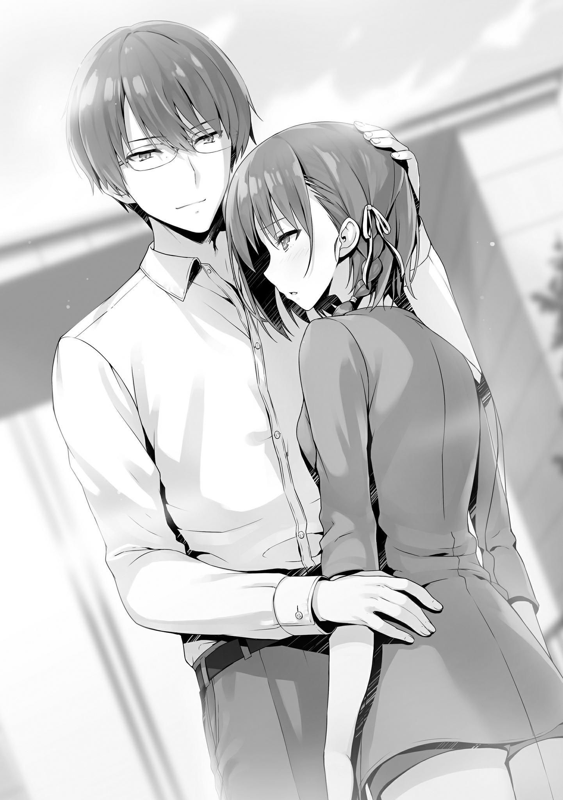
Supongo que el Horikita mayor no reveló a propósito esta mentira hasta ahora.
Él lo sintió, y por eso creyó firmemente que un día, su hermana experimentaría un cambio.
—Te perdonaré por mentir. Porque esa mentira me hizo lo que soy ahora.
Horikita también reconoció este hecho, así que se rio y lo perdonó.
El mayor de los Horikita puso suavemente sus manos en los hombros de su hermana, y miró directamente a su cara.
Y Horikita no escatimó esfuerzos mientras mostraba su sonrisa a su hermano.
Después de ver esa cara sonriente, el Horikita mayor también liberó una sonrisa, como si se quitara una máscara.
No era una persona que nunca sonriera.
Pero también es la primera vez que lo veo sonreír tan tiernamente.
Esta sonrisa, nunca la volveré a ver.
Un año más...
Si pudiera pasar un año más en el mismo campus que él.
Entonces me acercaría todavía más al hombre llamado Horikita Manabu.
E incluso yo podría experimentar algún cambio debido a ello.
Esto es realmente una lástima.
—Suzune, 2 años después, te estaré esperando en la entrada principal.
Déjame ver cómo maduraste en ese entonces.
—Sí. Haré lo mejor que pueda... hasta el final.
Las obstrucciones para el crecimiento de Horikita ya fueron removidas.
De ahora en adelante, Horikita se volteará hacia el frente y nunca mirará hacia atrás.
—Ayanokouji, espero con ansias que nos encontremos de nuevo.
El mayor de los Horikita y yo teníamos los mismos sentimientos al respecto.
—Igualmente.
A pesar de saber que eso nunca sucedería, estuve muy de acuerdo con lo que el Horikita mayor estaba sintiendo.
—Ya casi es la hora.
Eran casi las doce y media.
Si escuchabas atentamente, podías oír al autobús acercándose.
Los dos se distanciaron lentamente de mala gana.
—Nos encontraremos después.
El Horikita mayor cruzó la entrada principal, dejando eso como sus últimas palabras.
Y así un hombre caminó a la distancia.
Horikita miró fijamente su espalda, constantemente observando, apreciando hasta el último momento.
Esta escena era como si Horikita Manabu y su hermana me dejaran una señal.
PARTE 1
A pesar de que el mayor de los Horikita había desaparecido de nuestra vista, seguimos mirando en esa dirección durante algún tiempo.
Pero no podíamos quedarnos inmersos en esta atmósfera abatida.
Así que usé mis palabras para deshacerme del resuelto estado de desasosiego de Horikita.
—Va a ser más solitario a partir de ahora.
—...Sí.
Aunque no sea la última vez que se vean, durante los próximos dos años, no podrá oír su voz, y mucho menos ver su silueta.
Pero el rostro de Horikita se tensó, y apareció una expresión severa.
—Gracias, Ayanokouji-kun... realmente me has ayudado mucho hoy.
—¿En serio? Siento que me estoy interponiendo entre ustedes dos.
—No es así. Si no hubieras hablado con mi hermano, no habría podido alcanzarlo. Muchas gracias.
Horikita me expresó su gratitud, a mí, quien realmente no debería haber estado aquí.
Pero su línea de visión no me alcanzó, y miró hacia otro lado.
—Y este fue el día en que mi hermano se embarcó en su viaje. Habría sido triste si nadie más que yo hubiera venido a despedirlo...
Aunque esta fue la decisión de su hermano, de hecho se sentiría un poco solitario.
Originalmente, debería haber habido más gente que lo despidiera.
El hecho de que no la hubiera debe ser porque intentaba facilitarle las cosas a su hermana.
Para facilitar que Horikita viniera a hablar con él, decidió apartar a las otras personas.
Esto fue probablemente parte de los cálculos del mayor de los Horikita.
—Tu hermano y yo tenemos una especie de relación, así que sólo quería hablar con él de nuevo.
Aunque no era demasiado cercano a él al principio, ahora quería más oportunidades para hablar con él, pero ya es demasiado tarde para eso.
Los dos regresamos al dormitorio.
—Acerca de tu cabello, realmente decidiste cortarlo, ¿eh?
Considerando que ayer actuaba con normalidad y que hoy llegó tarde, no es difícil imaginar que esta mañana haya decidido cortarse el pelo. Debe haber sido una decisión de último momento.
—Siempre me ha gustado este peinado. Pero se siente un poco raro.
A pesar de eso, si ella lo cortó al azar, arruinar el maravilloso escenario que su hermano preparó para ella no fue algo bueno.
Si querías verte bien para despedirlo, corriste el riesgo de llegar tarde.
Pero al final, la apuesta dio sus frutos.
—Pero, ¿no sería mejor haber hablado conmigo primero? Si tenías miedo de no ver a tu hermano, podrías haberme usado para retrasar y aumentar las posibilidades de verlo.
Mientras supiera que ella vendría, definitivamente ayudaría.
Si eso significaba hablar más para ganar tiempo...
—¿Me hubieras ayudado si te pedía ayuda?
—Hoy, sin importar lo que pasara, te hubiera ayudado.
—No estaba segura... es lo que me gustaría decir, pero planeaba pedirte ayuda en ese momento.
Horikita respondió de esta manera, pero cuando miré mi teléfono, no había ningún registro de nada.
—Como estaba demasiado ansiosa en ese momento, dejé mi teléfono en el dormitorio antes de salir para cortarme el pelo, pero cuando finalmente me di cuenta de que no lo llevaba encima, ya me estaban cortando el pelo. ¡De verdad!
Mi proceso de pensamiento es demasiado lento.
En otras palabras, se sintió indefensa en ese momento. En lugar de volver al dormitorio para recuperar su teléfono, decidió correr directamente a la entrada principal.
—Demasiado estúpido.
Dijo Horikita mientras se reía de sí misma.
—Esto también me dice que la firme resolución que tuviste esta mañana fue extremadamente importante para ti, Horikita.
Fue un poco divertido, imaginar cómo se veía Horikita cuando entró en la tienda justo después de que abrieron.
Pero fue porque Horikita siempre actuó de acuerdo al plan, era comprensible que cometer simples errores como ese la sacudiera.
—Cortarme el pelo era una manera de diferenciarme.
—Lo que le gustaba a tu hermano, ¿lo pensaste entonces?
—Por supuesto. Quería volver a ser la antigua yo, y coincidió con el deseo de alcanzar a mi hermano, eso es todo. En otro sentido, era la mejor manera de transmitir mis sentimientos.
Así que esta estrategia fue sólo una coincidencia.
Como me acostumbré a mirar su pelo largo durante un año, tenía fuertes sentimientos sobre este cambio.
—¿Cómo se siente, volver a ser tú misma después de todos estos años?
—Aunque me lo preguntes, no tengo ni idea de cómo expresarlo. Claro, me gustaba este pelo corto cuando era niña, pero estoy acostumbrada a tener el pelo largo desde hace mucho tiempo. A decir verdad, mis sentimientos ahora son bastante complejos.
El pelo corto que le gustaba, y el pelo largo que había llegado a aceptar.
El pasado y el presente. No importaba cuál, ambos eran todavía Horikita Suzune.
—Ahora siento que, sin importar qué versión sea de mí, puedo aceptarla.
Mientras decía eso, Horikita tocó su pelo corto con la punta de los dedos.
—Así que quiero pensar en esto desde el principio. La yo de ahora debería tener algo que no he visto antes. Durante los próximos dos años, ¿debería dejarlo crecer o no? Si lo dejo crecer, entonces tomará alrededor de 2 años para que crezca a la longitud que tenía antes... justo a tiempo para cuando nos graduemos.
Tanto su pasado como su presente han sido aceptados por Horikita.
—Lo que puedo entender ahora, es que no tiene nada que ver con lo largo de mi pelo, porque ya soy capaz de mirar directamente a mi hermano.
Esperaba con interés cómo se desarrollaría esta Horikita de pelo corto en el futuro.
En los últimos momentos de Horikita Manabu en la escuela, dejó a su hermana con muchos elementos. Antes, siempre pensaba que necesitaba ayudar a Horikita para que creciera, pero parece que al final he juzgado mal.
—¿Todavía te sientes mal?
—Para ser honesta, una hora... no, aunque me dieras un día, no podría decir lo que quiero. Había tantas cosas que quería decir estos últimos años, que quería decir, pero no podía, que se podían apilar tan alto como una montaña.
—No... no hay forma de evitarlo.
Horikita asintió, aceptando eso.
—Además, el muro que nos obstruía a mi hermano y a mí ya fue removido.
Sólo necesito completar estos dos años, y entonces podré hablar con él todo lo que quiera, ¿verdad?
—Eso es cierto. Después de todo, dijo que te esperará cuando te gradúes.
Después de la graduación, debería ser libre de entrar en contacto con el mundo exterior.
Y para entonces, ella sería capaz de reunirse con su hermano de nuevo, y hablar sin limitaciones.
—Hoy ha sido un día gratificante, pero no seamos demasiado codiciosos, o podría llegar a perjudicarnos.
Su actitud cambió demasiado rápido.
Así es, al parecer volvió a cambiar en la superficie.
Y en su mente ahora mismo, probablemente estaba haciendo todo lo posible para fingir estar tranquila, queriendo cambiar a ese estado de ánimo.
Pero cambiar de actitud de esa manera no es tan sencillo.
—Pero... está bien si es sólo esto.
Horikita, que se detuvo y no se dio la vuelta, dijo esto mientras estaba de pie.
Su cara no estaba frente a mí.
No, era más exacto decir que no podía estar de cara a mí.
—¿Qué sucede?
Aunque lo entendí por dentro, fingí y pregunté de todos modos.
Si fuera la calmada y tranquila Horikita de siempre, se habría dado cuenta de que me estaba haciendo tonto.
Pero, la Horikita de hoy no podía distinguir a través de mi fachada.
—Yo... quiero caminar un poco antes de volver.
Tenía una expresión que básicamente decía que secretamente quería que volviera yo solo sin ella.
—¿Caminar?
Le pregunté a dónde quería ir, pero no pudo responder.
—No, quiero ir, a dar un paseo o algo así.
Hubo un ligero temblor cuando respondió vagamente.
—¿Debo ir contigo?
—No hay necesidad.
Mientras decía esas vagas palabras, Horikita se alejó de mí.
No hacia el centro comercial Keyaki, o la tienda de conveniencia.
Estaba tratando de encontrar un lugar donde pudiera estar sola.
Si caminaba conmigo al dormitorio, probablemente sería demasiado tarde.
Alcancé a Horikita, que estaba en este estado.
—¿Por qué... me estás siguiendo?
Horikita no miró hacia atrás mientras me susurraba eso.
—Sí, me pregunto por qué.
—Si no hay razón, no me sigas.
A pesar de su rechazo, no pensaba volver.
Porque durante este año, me ha hecho cosas indeseables muchas veces.
—Entonces déjame explicarte por qué. Es porque quiero molestarte.
—No entiendo lo que dices.
—Oh, entonces déjame decirte.
—Realmente no es necesario.
—No, insisto.
Abrí la boca lentamente, para romper esa decidida defensa suya.
—Cuando estás triste, no deberías suprimir esos sentimientos. ¿No sería mejor simplemente llorar?
Sólo dije esa frase.
—...Tú, ¿no escuchaste lo que dije?
—Escuché. ¿No estás feliz de haberte reconciliado con tu hermano?
—Sí. Por eso estoy satisfecha. ¿Dónde, dónde puedes ver algo de tristeza en mí?
—No hay forma de que estés satisfecha. Es cierto que finalmente podrán hablar después de 2 años, pero los humanos no son criaturas que puedan sentirse satisfechas tan fácilmente.
La chica que soñó con ese día no tenía más remedio que aguantar 2 años más.
Aunque no era como si no tuviera ningún sentimiento feliz, no podía ser así.
—Estoy... satisfecha. Estoy satisfecha.
—Si ese es el caso, ¿te importaría girarte hacia acá para mirarme?
Horikita todavía me daba la espalda.
No escuchó mi petición, y sacudió su cabeza de izquierda a derecha.
—Me niego. ¿Por qué debo hacer algo así?
—Sí. Me pregunto por qué.
Frente a Horikita, que caminaba rápido e intentaba escapar, le dije eso por detrás.
—No importa si quieres llorar.
Después de 2 años se reunió con su hermano, sólo para ser rechazada.
Luchó sola con fiebre alta en una isla deshabitada.
Se convirtió en objeto de odio por el Voto de la Clase.
Pero incluso en esos momentos, Horikita no lloró.
—Yo, Yo...
Dejó de avanzar.
Después de trabajar tanto, tan duro, finalmente fue capaz de comunicar sus sentimientos a su hermano.
Si llegara el mañana, entonces seguramente volverían a hablar y reírse entre ellos.
Sin embargo, el mayor de los Horikita ya había pasado por esta puerta, comenzando un nuevo viaje.
El próximo encuentro que tendrán será en 2 años.
—Por favor, no te vayas. Por favor, detente.
La voz de Horikita comenzó a temblar ligeramente.
Durante estos dos largos años, Horiikta no tendrá más remedio que luchar, aquí en esta misma escuela.
—Pero, ¿no hay otra manera...?
Dentro de los inflexibles ojos de Horikita, algo que fue retenido por tanto tiempo finalmente brotó.
Ahora, pensó en su hermano que acababa de marcharse.
—¡Pero...! Finalmente... finalmente me di cuenta de los errores de mi comportamiento...
Horikita se desplomó y cayó de rodillas.
Ambas manos cubrieron su cara, tratando de contener las lágrimas que seguían fluyendo.
—¡Pero me he separado de mi hermano otra vez...!
Si fuera posible, Horikita definitivamente querría salir por esa entrada junto con su hermano.
La hermana que vio solemnemente en silencio salir a su hermano.
—Sí. Es muy solitario. Sola... ¡Sola...!
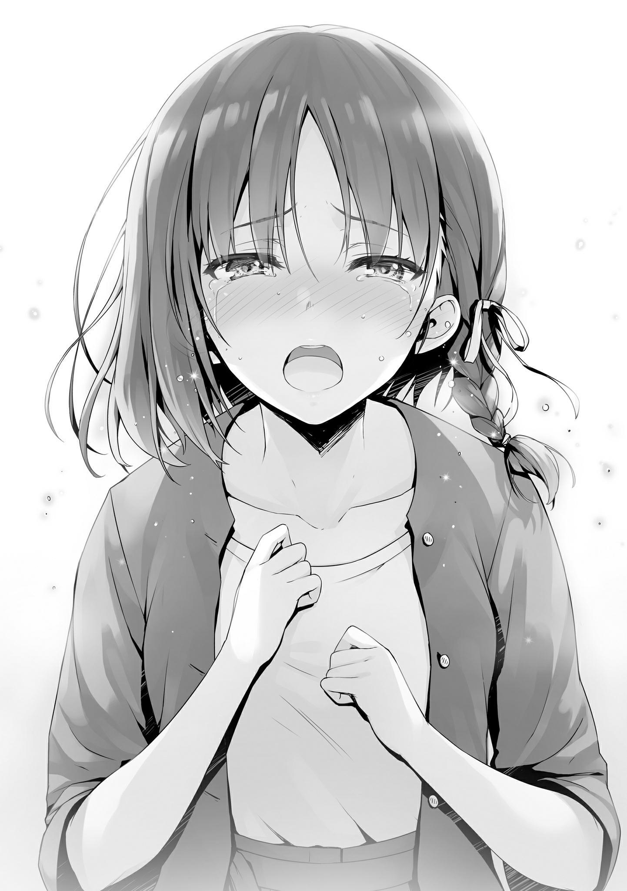
La chica que sollozaba fuertemente era como una niña.
Dejando que las lágrimas fluyeran, pero aun así, Horikita quería aguantar.
Si no fuera por la escuela, Horikita seguiría a su hermano hasta los confines de la tierra.
Podrían verse y hablar cuando quisieran.
—Ahora, sólo tienes que llorar todo lo que quieras. Después de eso, en el futuro tendrás que mostrarle a tu hermano cuánto has crecido. A partir de ahora, nada restringe tu crecimiento.
No había necesidad de preocuparse. Todavía quedaban 2 años, y durante ese tiempo, Horikita en definitiva crecerá enormemente.
Su hermano tenía que estar esperándola.
—¿No es así? ¿Manabu?
Mi voz, que ya no podía alcanzarlo, fue absorbida por el cielo azul que anunciaba la primavera.
PARTE 2
Poco después de desahogar sus sentimientos, Horikita dejó de llorar.
Sin embargo, como todavía no había recuperado sus fuerzas, seguía sentada en el suelo. Me quedé a su lado, esperando en silencio que el tiempo pasara.
Fue extremadamente afortunado que no hubiera nadie cerca, así que nadie más presenció esta escena.
—Eso es genial.
—¿Qué hay de genial en esto? Que me veas así, es extremadamente humillante para mí...
Originalmente, planeé consolarla un poco, pero eso no sería tan simple.
—Bueno, tal vez sí.
Por eso quería quedarse sola antes. Si yo no estuviera aquí, nadie la vería llorando.
—Como ya lo has visto, miraré hacia adelante.
—¿Mirar hacia adelante?
—...Que me veas así es algo grandioso. Eso es lo que he decidido.
Horikita se sintió aliviada desde el fondo de su corazón y dejó escapar un suspiro. No era una expresión que quisiera que otros estudiantes vieran innecesariamente.
—Entonces compartiré esta escena con Keisei y los demás.
Saqué mi teléfono y le apunté con la cámara.
—¿Quieres que te mate?
Después de ver los brillantes ojos rojos que me miraban, inmediatamente guardé mi teléfono.
—Sólo estoy bromeando.
—Viendo que has hecho una broma tan aburrida, parece que necesito enseñarte lo que es el TLO.
Nota TL: TLO indica "tiempo, lugar, ocasión".
Viendo que todavía puede hablar tanto, no debe haber ningún problema ahora.
—...Esto se siente como si en el año pasado hubiera ocurrido una situación similar.
—Tal vez sí.
Aunque el lugar era diferente, recordé cierta noche en la que tuvimos una conversación los dos. Horikita, que acababa de reunirse con su hermano, se
encontraba en un estado de desesperación. La situación de hoy era claramente la opuesta, pero había una inexplicable sensación de Deja Vu.
—Me pregunto por qué siempre cometo errores cuando estoy contigo.
Incluso me siento a tu lado.
Decía que desde el principio de la escuela, teníamos una especie de increíble relación preestablecida. Parece que no importa si ese fuera el caso, Horikita no estaba muy contenta con ello.
—¿Por qué no me dejas verte cuando cometes errores?
Horikita lamentó la injusticia de su destino.
—Un error garrafal. ¿No lo has visto ya? Perdí contra Sakayanagi en nuestra partida de ajedrez.
—Eso no es un error, es sólo una simple derrota.
Al parecer, esto no es aceptable para ella.
—Bueno, deberías esperarlo después de que nos convirtamos en estudiantes de segundo año.
—Parece que es la única opción. Lo agregaré cuidadosamente a mi lista de eventos que espero con ansias en el futuro.
Daba la impresión de que, pase lo que pase, quería vengarse de mí por haberla visto llorar hoy. A pesar de todo, fue muy impactante pensar en cómo Horikita se cortó el pelo.
—Si te vieran, todo el mundo se sorprendería.
Hay estudiantes que quieren cambiar lentamente su imagen, pero no llegan a hacer eso.
—Pueden estar tan sorprendidos como quieran, me parece bien.
Horikita dijo que las opiniones de otras personas no importan, y no hay necesidad de prestarle atención. Sudou seguramente será el primero en hablar de esto. Sólo quedaban unos pocos días de las vacaciones de primavera, y los
rumores se extenderían durante este tiempo... No, si ya había testigos, puede que ya se haya extendido.
—Hablar de esto puede ser difícil, pero ¿todavía recuerdas la batalla que decidimos ayer?
—Por supuesto.
—Sobre mi petición para ti si gano, he pensado en ello.
—Oye... Pensé que lo mencionarías más tarde. Para tratar de atacarme mentalmente.
—No, no pensé mucho en ello, simplemente no lo había pensado antes.
Horikita me instó a que le dijera rápidamente lo que quería, aunque ella sospechaba un poco.
—Si gano, te unirás al consejo estudiantil.
—... Hemos hablado de este asunto antes.
Anteriormente, ya había preguntado a Horikita si estaba interesada en unirse al consejo estudiantil. A pesar de que llamé al mayor de los Horikita durante ese entonces, él me permitió tomar mis propias decisiones. Pero al final, ella terminó rechazándolo.
—Mhm. ¿Aceptarás mi petición?
—Aunque no estoy interesada en unirme al consejo estudiantil... Está bien.
Mientras gane, no habrá ningún problema.
Horikita dijo que si ella ganaba no habría problemas, y estuvo de acuerdo.
—Pero no voy a garantizar que me permitan unirme al consejo estudiantil,
¿de acuerdo?
—No te preocupes. Nagumo es el tipo de persona que da la bienvenida a cualquiera.
Era muy diferente de Horikita Manabu, que rechazó la gran mayoría de los solicitantes. Además, como Suzune es la hermana de Manabu, no hay forma de que Nagumo se negara categóricamente.
—¿Puedes decirme por qué quieres que me una al Consejo Estudiantil?
—Eso es un secreto. Esperaré hasta que pierdas.
—Esto me hace sentir incómoda, ¿importaría siquiera que me lo dijeras ahora?
—¿Estás pensando en lo que pasará cuando vuelvas a perder?
—...Por supuesto que no. Porque definitivamente ganaré, sólo quería preguntarlo antes. Y además, no me lo dirás porque sabes que perderás.
Al decidir el resultado de la batalla, no dije la importancia de mi razonamiento.
—Tu hermano ha estado preocupado por el asunto de Nagumo. Es por eso que lo estoy haciendo.
—¿Así que estás diciendo que quieres que vigile al presidente del consejo estudiantil?
—Exactamente.
—Así que mi hermano te pidió que hicieras esto.
Horikita me miró con un poco de insatisfacción.
—Porque su relación contigo en ese entonces no era tan buena, así que se vio obligado a pedírmelo.
Si su relación hubiera sido buena, le habría dicho esto a Horikita desde el principio.
—No te hagas el modesto. Mi hermano te prestó más atención que a nadie en esta escuela. Si no fuera por eso, no te habría llamado aquí hoy cuando emprendió su nuevo viaje. De verdad... ¿por qué siempre eres tú?
Horikita se levantó lentamente, quejándose de esto.
—Mejor no pienso en esto. Trataré de pensar en otra cosa.
Si no lo hiciera, su cuerpo se vería abrumado, así que Horikita lo arrojó a un rincón de su mente.
—Horikita, hay una última cosa que quiero confirmar contigo.
—¿Qué más quieres, no me digas que vas a decir algo extraño otra vez?
—Se trata de Kushida. Déjeme explicar brevemente mis pensamientos y la situación actual.
Al escuchar este tipo de declaración de la que no sabía nada, Horikita frunció el ceño, su cara se quedó atónita, sus cejas se tensaron.
—¿Situación actual?
—Para evitar que Kushida se descontrole, firmé un contrato con ella. El contenido del contrato dice que debo darle la mitad de los puntos privados que reciba cada mes para protegerme de ella. De esa manera, seré capaz de desaparecer como uno de sus objetivos.
—¿Eres... estúpido? ¿Firmaste imprudentemente un contrato así?
—Lo hice para ganarme su confianza.
—Incluso así, esto es demasiado estúpido, la mitad de tus puntos cada mes es demasiado.
—Porque no sería capaz de cambiar los sentimientos de Kushida si no lo hubiera hecho. Ahora bien, como la expusiste en público, la confianza desapareció.
En lugar de decir que no estaba satisfecha conmigo, es probable que volviera a albergar sospechas.
—En realidad... estoy empezando a dudar de si eres realmente poderoso o no.
Aunque entendí que ella no estaba de humor para hablar, este tema aún no había terminado.
—Y entonces, ¿por qué me dijiste esto?
—Porque creo que la firma de este contrato no me afectará en el futuro.
—¿Así que regalar constantemente la mitad de tus puntos no te afectará?
—Porque si expulsan de la escuela a Kushida, el riesgo se reducirá a 0.
Al oír lo que dije, la mano de Horikita se congeló. Entonces me miró, sus ojos aún estaban ligeramente rojos.
—En este momento, dijiste con calma algo extremadamente serio. ¿Es una broma?
—Estaba planeando que Kushida fuera expulsada antes. No, incluso ahora, creo que sería mejor para ella ser expulsada.
—¿No estás... bromeando?
—No. Este verano, estoy pensando en eliminar a Kushida.
En realidad, no era como si no hubiera oportunidades de deshacerse de ella.
—Pero... ya que me lo has contado, eso significa que la situación ha cambiado, ¿verdad?
—Mhm, quería dejarte la decisión a ti.
No lo había decidido todavía, y en su lugar dejé la decisión a Horikita. Por eso se lo dije ahora.
—¿No lo tienes claro? No planeo expulsar a Kushida. En realidad, no planeo expulsar a ningún compañero de clase con tanta negligencia.
Parece que este ideal suyo se estaba volviendo cada vez más sólido.
—Pero no pretendo tener pensamientos ingenuos como los de Hirata-kun.
De hecho, hay compañeros de clase que están en la línea divisoria para ser sacrificados. Por supuesto, las futuras contribuciones podrían permitir que estas personas sean reemplazadas por alguien más.
En otras palabras, ella tomaría la decisión de quién será expulsado si algo como el voto de la clase sucediera de nuevo.
—¿Y si Kushida contribuyera lo mínimo?
—Entonces, por supuesto, ella será la candidata a ser expulsada.
Parece que no mentía.
—Pero la posibilidad de que ella caiga al fondo de la clase es muy baja.
—Ya lo sé. Porque por lo que se ve, Kushida está contribuyendo mucho.
Ella es capaz académica y físicamente, y también está en buena posición como una figura necesaria en la clase. Aunque sufrió cierto daño después de la eliminación de Yamauchi, el efecto no fue fatal para ella.
—Creo que puedo dejarte esto a ti, por eso te lo dije. Sin embargo, a medida que crezcas y te conviertas en el núcleo de nuestra clase, Kushida se convertirá en una existencia problemática.
Conociendo el pasado de Kushida, no podía borrarlo de mi memoria.
—¿Así que quieres deshacerte de ella anticipadamente?
—Sí, eso es lo que quiero. Después de todo, no será tan ingenua como para ayudar sólo por el hecho de persuadirla.
—Tampoco puedo negar eso. Ya comprendí que intentar persuadirla y hablar con ella no tiene sentido...
Sabiendo eso, ¿todavía tiene la intención de aceptar a Kushida? Antes, pensaba que estaba siendo ingenua, pero ya no.
—En ese caso, entonces no tengo nada más que decir.
—¡Tú!... ¿Planeabas tenderle una trampa a Kushida durante la Votación de la Clase?
—Eso sólo hubiera sido un desastre. Aunque ayudó a Yamauchi, nuestros compañeros de clase seguían confiando mucho en ella.
—Eso, eso es verdad. No hay indicios de que tú también te vayas a mover... pero ya que me lo has dicho, es seguro decir que tengo el control total sobre el asunto de Kushida, ¿verdad?
—Mhm. Prometo no hacer nada.
Tendré que dejar que Horikita decida qué elecciones deben hacerse en el futuro.
—La razón de que me digas esto, ¿es porque ya has superado ese obstáculo?
—Desafortunadamente, no soy tan optimista. Todavía estoy pensando en cómo deshacerme de Kushida.
—Sí, pero ¿por qué?
Después de que Horikita me lo preguntara, no tuve más remedio que considerar las razones.
—¿No has pensado en ello?
—Sí... lo que estoy haciendo ahora no es eficiente.
Si se tuviera en cuenta el futuro, expulsar silenciosamente a Kushida sería definitivamente la decisión correcta. Sin embargo, no lo hice. En su lugar, dejé la decisión a Horikita. La razón de esto fue...
—Quiero ver cómo vas a superar ese obstáculo... supongo.
No estaba seguro de la respuesta sobre la que me devané los sesos, pero no había otra razón.
—Tal vez.
—Me lo imaginaba. Ser escéptica de lo que dices parece ser mejor.
Horikita, que se había recuperado completamente, dio un paso adelante.
—Voy a volver, ¿y tú?
—Quiero quedarme aquí por un tiempo.
Horikita simplemente se despidió y se fue en dirección al dormitorio. Quizás recuerde lo que pasó hoy y llore a media noche. Pero por el momento, esto no será un problema.
Pensé en la conversación de ayer con Ichinose, la existencia de Sakayanagi, y el crecimiento de Ryuen y Horikita.
Lo esperaba con ansias, una confrontación entre las cuatro clases.
Después de que otro año pasara, ¿cómo cambiaría?
Había un gran número de cosas que podían hacerlos crecer.
Las palabras que me dejó Horikita Manabu aún permanecían en mi corazón.
Convertirme en un estudiante recordado por otros estudiantes.
—Qué terrible regalo de despedida...
Las cosas que podría hacer para permanecer en la memoria de los otros estudiantes. Eso sería ayudar a otros estudiantes, y permitirles crecer.
Luego dejar que estos estudiantes que han crecido compitan entre sí, y apunten a una posición más alta como meta.
Al imaginarme en una escena de pie en esa posición... así es, se puede decir que haría latir mi corazón más rápido.
Siempre he sentido que esto es interesante.
Analizar involuntariamente la fuerza de otras clases y hacerla aparecer en mi mente.
Los resultados que se podrían ver después de 1 año. Sin importar la clase, todos buscaban crecer. La debilidad de los fuertes creaba sentimientos de excitación en mi interior. Pero por otro lado, sentí que mi corazón se enfriaba rápidamente.
—Lo que busco es vivir pacíficamente día a día... ese era el caso originalmente.
Hoy fue la primera vez que noté que había un filtro instalado en mi corazón. La existencia conocida como mi corazón había crecido más allá de las expectativas durante el año pasado. No, sigue creciendo ahora.
Tengo que confirmarlo yo mismo. Me pregunté. Pero no funciona. Como si mis propias convicciones no se conectaran conmigo mismo.
Mi propia superficialidad se estaba haciendo pedazos y saliendo, ¿o eso era todo?
No puedo evitar sentir una sustancia negra, algo parecido a la inquietud.
¿Seguiré...?
¿Seguiré en esta escuela en esta misma época el año que viene?
La negra oscuridad que no podía describir... me rodeó...
LAS SOSPECHAS DE MATSUSHITA
El 3 de abril, cuando las vacaciones de primavera estaban llegando a su fin, yo, Matsushita Chiaki, decidí algo.
—Por supuesto, esto me interesa.
Desde el examen de fin de año hasta ahora, este sentimiento se ha quedado grabado en mi corazón.
Eso fue causado por la existencia de un compañero de clase llamado Ayanokouji Kiyotaka.
Recientemente, empecé a prestarle mucha atención. Sin embargo, si se lo contaba a alguien más, seguramente diría que era amor, o un enamoramiento o algo así.
Definitivamente no es el caso.
Puedo declarar aquí mismo que definitivamente no es amor o algo similar.
En cambio, empecé a estar atenta a Ayanokouji-kun.
Si le decía eso a alguno de mis compañeros, es probable que inclinaran la cabeza en señal de confusión.
Pero ya estoy trabajando en mi propio método para obtener la respuesta.
Para que entiendan lo que siento, primero, necesitaré presentarme y hablar de la clase de persona que soy.
Nací en una familia moderadamente acomodada, mis padres fueron muy amables conmigo y me criaron en un ambiente sin restricciones a mi libertad.
Me compraban todo lo que quería, y a cambio, también obtuve resultados sobresalientes en la escuela y en las clases particulares.
Establecimos una excelente relación entre nosotros, ya que yo respetaba su excelencia y ellos respetaban la mía.
Además, fui bendecida con una apariencia atractiva, aunque no es demasiado bueno.
Si alguien más supiera de todo esto, tendría envidia.
Crecer, experimentar varias relaciones románticas, y eventualmente casarse con un hombre financieramente capaz.
Aunque mi vida no fuera la mejor, sería considerada una muy afortunada.
Además, tenía muchas perspectivas para mi vida futura.
Aunque había considerado varias opciones, consideré que trabajar como azafata en una aerolínea internacional o en una compañía importante no sería tan malo.
Sin embargo, como logré entrar en esta escuela, tenía que apuntar más alto.
Estudiar en el extranjero en una prestigiosa universidad, luego trabajar en una embajada, y luego en la ONU... Poco a poco podía ver que eso sucedía.
Mi vida transcurriría sin problemas, y existiría un camino pavimentado para una vida sin fracasos.
Sin embargo, mi primer error de cálculo fue después de entrar en esta escuela.
Sólo si me graduaba de la clase A podría tener mi deseada educación superior y oportunidades de empleo en el futuro.
En otras palabras, graduarse de la clase B o inferior no tendría ningún valor.
Por supuesto, estaba bastante confiada en mis habilidades para asegurar el camino hacia mi futuro deseado.
Pero... graduarse de la clase B o inferior sería un obstáculo.
Y sería muy probable que me etiquetaran como "una estudiante que no se ha graduado de la Clase A", una etiqueta que sería un dolor de cabeza a enfrentar.
La gran diferencia entre las ventajas y desventajas de su impacto en el futuro era algo negativo para mí, que buscaba la estabilidad.
El siguiente error de cálculo fue no ser asignada a la Clase A. En su lugar, fui asignada a la Clase D. Esto significaba que arrastraba una gran desventaja conmigo.
No estaba muy preocupada cuando entré en la escuela. Sin embargo, fue esa negligencia la que llevó a mi caída.
En un mes, nuestros puntos de clase se agotaron, e inmediatamente nos hundimos en el fondo de la clasificación.
—Pensando en esto con calma... todavía había una oportunidad en ese entonces...
Sí. Aunque inicialmente nos colocaron en la clase D, el punto de partida fue el mismo para todas las clases.
Si hubiéramos entendido la situación durante el primer mes, entonces habríamos podido ascender a las clases superiores.
Aunque puede ser un comienzo terrible, después de un año, los puntos de la clase también han aumentado.
Hubo un momento en el que hasta llegamos a la clase C. Todavía era posible aspirar a las clases altas...
—No, eso es imposible.
Aunque me había dado cuenta desde el principio, la diferencia en la capacidad básica entre las clases era aún mayor de lo que había imaginado. Tarde o temprano, inevitablemente la brecha se ampliaría.
Sucedió que este año salió muy bien. La brecha en las habilidades de mi clase en comparación con otras clases era demasiado grande. Si ese hecho no cambiaba, las posibilidades de llegar a la clase A eran muy cercanas a 0.
Aunque no quería seguir repitiendo esto, estaba segura de que era una de las mejores estudiantes de este grado.
Si lo miramos desde una perspectiva más amplia, debería estar dentro del 10%
más alto del grado. A pesar de eso, no me hice un nombre en la clase D. En
cambio, estaba en algún lugar cerca de la mitad de la jerarquía, sólo porque decidí esconder mi fuerza.
Por supuesto, no retrasaría la clase cuando fuera importante, pero no me gusta sobresalir demasiado. Además, mi grupo de amigos está formado por personas con habilidades considerablemente bajas.
La mitad de los estudiantes de la clase D pertenecían al 10~20% más bajo de este año académico.
Si yo mostrara mis verdaderas habilidades en ese ambiente, los demás podrían empezar a sentir celos. También podrían depender excesivamente de mí, lo que llevaría a todo tipo de molestias. Esto era algo que quería evitar.
Además, aunque de repente me esforzara al máximo en la clase, nuestra situación no cambiaría mucho. Para bien o para mal, yo sólo era una estudiante excelente, pero no una genio.
Además, no soy el tipo de persona que actúa como alguien que toma la iniciativa en las cosas.
Sólo que...
Aunque no esperaba cosechar lo que no sembré, todavía quería graduarme de la clase A.
Si eso era posible, quería seguir un camino fácil que me llevara a un futuro estable.
Para lograrlo, necesitaba hacer que todos los estudiantes de la clase D
trabajaran el doble...
Pensando en el año pasado, ya consideré que sería imposible, y medio renuncié.
De hecho, hay algunos estudiantes talentosos en mi clase.
Como Horikita-san, Hirata-kun, y Kushida-san. También hay estudiantes inteligentes como Yukimura-kun y Mii-chan.
Pero esto no es suficiente. De hecho, la mayoría de los estudiantes nos frenaban. Si lo sumaras, nuestra clase seguiría en negativo.
Si hubiera sólo 2 o 3 estudiantes más en un nivel similar a los que mencioné antes... ¡qué frustrante!
Sí... es correcto.
Me atormentó ese pensamiento hasta que Ayanokouji-kun apareció justo delante de mis ojos.
Aunque era sólo una conjetura mía, sospeché que Ayanokouji-kun podría ser el mismo tipo de persona que yo.
Siempre he sentido, desde el principio, que él sólo quería una vida que le perteneciera a él mismo, que fue la razón por la que entró en esta escuela.
Incluso comparado conmigo, él no tenía tanto deseo de éxito, y no le importaban las clasificaciones de la clase A o la clase D.
Pero a pesar de eso, tenía un gran poder.
Si mi suposición es correcta...
Incluyéndome a mí, la clase D tendría dos cartas más para jugar.
En ese caso, dependiendo de lo activos que seamos, determinará si es posible aspirar a las clases altas.
Recientemente, estos pensamientos han estado dando vueltas alrededor de mi mente.
¿Por qué pensé que él es ese tipo de persona?
En lugar de decir que estaba basado en evidencia, había algunas cosas de él que sobresalían.
A veces, Karuizawa-san intentaba captar la mirada de Ayanokouji-kun, y también había una ligera distancia entre ellos.
Al principio, pensé que lo estaba pensando demasiado, pero justo después, de repente rompió con Hirata-kun, lo que confirmó mis sospechas.
Se siente atraída por Ayanokouji-kun.
Karuizawa-san, que pensaba que salir con un buen hombre era un signo de alto estatus, eligió a Ayanokouji-kun.
¿Por qué? ¿Porque es guapo? No, no creo que sea tan simple.
Si ese fuera el caso, habría sido más conveniente para Karuizawa-san mantener su relación con Hirata-kun, que es más popular.
Entonces... ¿fue porque Ayanokouji-kun tenía suficiente fuerza para compensar su falta de popularidad?
Esa fue la conclusión a la que llegué.
Si ese fuera el caso, varias cosas empezarían a encajar asombrosamente.
Ayanokouji-kun tenía una especie de relación con la líder de la clase Horikita-san, así como con Hirata-kun. No había duda de que ambos estudiantes tenían un gran aprecio por él. Además de eso, también parecía ser cercano a Ichinose-san.
Y antes, durante el festival deportivo, hubo su intensa carrera contra el presidente del consejo estudiantil Horikita, ahora que lo pienso, fue realmente extraño.
Además de eso, Sakayanagi-san organizó a la totalidad de la clase A para darle el punto de protección.
Pensamos que fue seleccionado al azar para que Yamauchi-kun fuera expulsado, pero después de eso cuando asumió el papel de comandante y participó en la competición de esa manera, llamarlo una coincidencia para explicarlo sería demasiado perezoso.
Con tantas piezas conectadas, la misteriosa existencia de Ayanokouji-kun debería ser entendida por todos.
Sin embargo, la mayoría de los estudiantes no eran conscientes de esto.
Pero eso es comprensible porque básicamente nunca mostró su verdadero poder en público. Aunque ser capaz de correr rápido es una habilidad
sobresaliente, sólo con esta habilidad, sólo en la primaria sería capaz de subir en la jerarquía de la clase.
Para los estudiantes de preparatoria... No, a medida que avanzas hacia la edad adulta, las habilidades de comunicación se vuelven más y más importantes.
La mayoría de los estudiantes que tienen un alto estatus a menudo tienen tanto capacidades sobresalientes como habilidades de comunicación.
Carecer de una de esas habilidades cambiaría completamente la impresión que causas en los demás.
Era sólo un estudiante que corría muy rápido pero tenía una presencia débil. Esa es la impresión que mucha gente tenía de Ayanokouji-kun.
Si también tuviera buenas habilidades sociales, Ayanokouji-kun estaría en una posición relativamente más alta en la clase.
Aunque dependía de su personalidad, podría haber sido, junto con Hirata-kun, una de las joyas gemelas de la clase.
Pero esto no era más que una situación hipotética, o más bien, una completa tontería.
Era como decir que si Sudou-kun fuera inteligente, o si fuera fácil llevarse bien con él, o si Yukimura-kun tuviera una alta capacidad atlética, esas eran cosas que sólo podían suceder en otra dimensión.
La mayor prioridad de nuestra clase era la "habilidad escolar", seguida de la
"habilidad física".
Es muy probable que Ayanokouji-kun cumpla con ambos requisitos.
Además, las habilidades de Ayanokouji-kun en esas dos categorías podrían incluso haber superado las de Hirata-kun, un tesoro enterrado esperando ser desenterrado.
Por supuesto, este pensamiento se basó un poco en lo que yo quería que fuera.
Si realmente era así, entonces se convertiría en una fuerza significativa que podría mejorar la clase.
En realidad, aunque estuviera al mismo nivel que yo, no me quejaría.
La razón por la que me fijé en Ayanokouji-kun fue por su influencia en el examen de fin de año.
Hubo una pregunta que no pude resolver durante el evento de aritmética mental, pero Ayanokouji-kun la respondió correctamente.
Este fue uno de los golpes decisivos que recibí y que me dio confianza en esto.
Quiero entender el misterio detrás de su fuerza.
Y si su fuerza es verdadera ── no hay razón para no hacer uso de ella.
Tanto su habilidad escolar como su habilidad física son similares a las mías, estaba segura de ese punto.
Juzgando cómo había estado viviendo entre las sombras durante un año, puede que no pueda ser persuadido por métodos ordinarios.
Sin embargo, confiaba en mi capacidad para evaluar a los demás y en mi habilidad para la guerra psicológica. Debido a esto, tenía la ventaja.
Hacerle creer que quería ponerme en contacto con él por curiosidad, descubrir su verdadera naturaleza, y luego hacer que cooperara.
Y actuará como una señal para nuestro contraataque del año que viene.
—... Sólo bromeaba.
La idea de ascender a la clase A es atractiva. Pero la razón por la que actúo ahora no es sólo por eso. El aburrimiento también es un factor.
No sólo busco estabilidad, seguir las huellas de la vida, sino que también quiero experimentar la emoción de la vida. Quiero perseguir este factor misterioso que otros estudiantes no tienen. Esta es la principal razón por la que quiero establecer contacto con Ayanokouji-kun.
Me cambié de ropa, ya que hoy me reunía con mis amigos en el centro comercial Keyaki.
En estos días, me centraría en la multitud desordenada, en busca de la figura de Ayanokouji-kun.
Sin embargo, la posibilidad de un encuentro accidental con él en los terrenos de la escuela es muy baja.
No lo vi en absoluto durante la primera mitad de estas vacaciones de primavera, una pérdida de tiempo.
Quiero obtener pistas.
La curiosidad y el deseo condujeron mi mirada, sin que me diera cuenta, a través de estos días.
PARTE 1
—¡Matsushita-san! Aquí...
—Buenos días...
11 de la mañana.
Me reuní con Shinohara-san y Satou-san, el grupo de siempre.
Durante las vacaciones de primavera, nos reuníamos todos los días para charlar alegremente sobre varios temas inocentes.
Aunque no odiaba esto, me sentía un poco aburrida. Ya he sido una buena estudiante durante el último año, y buscaba emociones.
Como resultado, decidí plantear un tema más interesante con ellas.
—Shinohara-san, ¿ha hecho algún progreso con Ike-kun?
Tenía la intención de deshacerme de este aburrimiento pinchándola un poco.
—¿Espera, ehhh!? Nonono, ¿¡con él!?
Shinohara-san se apresuró a negarlo, pero esto no podía ocultar que estaba conmocionada.
La mirada de Satou tenía una sorprendida expresión de "¿realmente quieres empezar con este tema?", mezclada con un poco de emoción, también era muy interesante.
Era evidente que Shinohara-san e Ike-kun se habían acercado en los últimos meses, ya que rumores como este ya se habían extendido.
Aunque trataron de ocultarlo, la escuela era un lugar diminuto.
Si una pareja salía a una cita, era fácil que los demás los vieran.
—Pensé que ya era hora de que nos lo dijeras, ¿verdad?
—Yo, yo te dije que es imposible... Mira, es de Ike de quien estamos hablando... ¡Es el modelo de un típico perdedor!
Las palabras que Shinohara-san usó cuando negó esto fueron efectivamente verdaderas. Con sólo mirar sus atributos, pertenecía a los rangos más bajos.
Era bajo, tenía dificultades académicas y carecía de habilidades de comunicación. Desde mi punto de vista, era una persona con un sinfín de defectos. Sin embargo, el amor no podía medirse a partir de esos factores.
Siempre existía la posibilidad de que una persona se sintiera atraída por un hombre inútil, era como encontrarse inesperadamente en medio de un accidente de tráfico.
Y considerando el estatus de Shinohara-san en la clase, incluso podrían ser adecuados el uno para el otro, y no son tan diferentes como ella dijo.
—Esto no es bueno, a ti te gusta, pero él no sabe nada de eso.
Los ojos de Satou-san se iluminaron por el hecho de que estábamos hablando de amor, y le sonrió a Shinohara-san.
—Como dije, no es así.
—No hay necesidad de negarlo, sólo quiero escuchar tus verdaderos pensamientos sobre esto, ¿cierto?
Enfrentándome a Shinohara, que no estaba dispuesta a admitirlo, usé a Satou-san para incitarla.
—¡Sí, también estoy súper interesada! ¡¡Dinos, dinos!!
En momentos como éste, era conveniente hacer que Satou-san hiciera lo que yo quería con sólo darle unas simples pistas. Ella no era el tipo de persona que piensa profundamente. No hace falta decir que esto tenía un efecto negativo en su capacidad académica.
Aunque fue una evaluación muy dura, no necesariamente la odio.
Tanto Shinohara como Satou son amigas íntimas, y son amigas indispensables.
Si alguna vez se sienten preocupadas, yo las ayudo y las escucho.
Por supuesto, si tuvieran la misma capacidad de igualarse conmigo, entonces sería aún mejor.
Shinohara-san, que no sabía en absoluto lo que yo pensaba, empezó a hablar de su relación con Ike-kun.
—Recientemente, siempre discutimos sobre cosas estúpidas. Así que honestamente, no hay mucho progreso.
Shinohara-san sacudió la cabeza, suspirando.
Sin embargo, nunca dijo que no haya habido ningún desarrollo.
—Después de todo, ambos tienen personalidades que no son tan directas...
Si volviera a suceder lo mismo, habría un cambio.
Aunque eran una buena pareja, siempre había conflicto entre ellos en cuanto a cosas raras.
Creo que mientras dejaran eso atrás, la relación entre ambos de inmediato sería mejor.
—Basta de hablar de mí, ¿qué hay de ti, Matsushita-san? ¿Te gusta alguien?
—¿Yo?
Shinohara-san hizo esa pregunta, tal y como yo esperaba.
Sería más exacto decir que yo la induje a preguntarme esto.
—Antes nos dijiste que si salías con alguien, sería con alguien de mayor grado.
Como si acabara de recordar algo, Satou-san se lanzó a la pregunta de Shinohara-san. No importaba quién fuera el sujeto de la conversación, siempre que fuera sobre relaciones, sería bienvenida. Las chicas son así.
—Sí. Sin embargo... si cumple una cierta condición, está bien aunque no sea mayor en edad.
Controlar lo que ambos estarían pensando, y lentamente llevar la conversación en la dirección que yo quería. Sin embargo, no es tan difícil como podría parecer.
Esto sucede comúnmente en la vida diaria. Se trata de si nos damos cuenta o no.
—Ohh..., ¿así que has cambiado de opinión?
Satou-san, obviamente no dejaría de lado este tema, ya que era la primera vez que lo escuchaba.
—Mis estándares no han bajado ni nada. Tanto su apariencia como su personalidad deben ser de primera clase. Y... sus antecedentes familiares también. También quiero que sus padres hayan recibido un alto nivel de educación y logros.
No importa cuán grandes sean los logros de sus hijos, mientras sus padres no estén a la altura, entonces no cumplen con mis estándares.
—Alguien que tiene un buen historial familiar... ¿podría ser alguien como Koenji-kun, o de ese tipo?
Shinohara-san preguntó, con dudas.
—¿Ehh~? Aunque su aspecto no es malo, ¿no es un poco...?
Después de escuchar el nombre de Koenji-kun, Satou-san se puso un poco indecisa. La evaluación de Koenji-kun dentro de la clase es considerablemente baja. La razón es muy simple, principalmente por su extraña existencia que es
una molestia para la clase. Sin embargo, se podría decir que hay una gran diferencia entre su estatus dentro de la clase y fuera de ella.
Desde la perspectiva de los de fuera, la evaluación de Koenji-kun sería impecable, no importa si hablamos de su apariencia o de sus antecedentes.
También tiene un lado muy caballeroso. Así que no es sorprendente que las chicas de todos los años escolares se interesen por él. En términos de habilidad académica, aunque no se lo toma en serio, todavía se puede ver la profundidad de su verdadero poder. Se podría decir que es una persona muy rara que cumple con todas mis condiciones anteriores. Creo que Koenji-kun está en el primer lugar de nuestra clase, si hablamos sólo de habilidad.
Sin embargo, otras cosas también están claras cuando se trata de él.
No es el tipo de persona que puede ser persuadida por terceros para que actúe.
Un bicho raro más allá de la imaginación.
Desde el principio, supe que tratar de hablar con él era inútil y carente de sentido.
En este caso, comparado con Sudou-kun e Ike-kun, él era incluso... No... se podría decir que es la mayor carga para la clase.
—Koenji-kun, no hay posibilidad. Hablando de esto, ya no lo considero un humano.
Después de escuchar mi evaluación de él, las dos se rieron a carcajadas.
—Si se pone serio, definitivamente superará a Hirata-kun en popularidad, pero sé que definitivamente no se pondrá serio.
Esta fue mi evaluación.
Shinohara-san y Satou-san estuvieron de acuerdo conmigo sin reservas.
Él fue el raro ejemplar que me enseñó que incluso si alguien tenía un solo defecto, su evaluación podía ir de 100 a 0 puntos.
Empezando por la relación entre Ike-kun y Shinohara-san, hasta mi hombre ideal, procedí a la siguiente etapa.
—Hablando de eso, Satou-san, ¿qué hay de ti y Ayanokouji-kun?
—Eh... ¿Por qué, por qué me preguntas sobre eso?
Después de que le hicieran una pregunta inesperada, Satou-san se puso tensa.
Shinohara-san, que parecía como si acabara de recordar algo, dirigió su mirada a Satou-san. Durante las vacaciones de invierno, Satou-san nos dijo algo. En ese momento, nos habló de su amor por Ayanokouji-kun, y se preguntaba si debería confesarse con él. En aquel entonces, al igual que con Ike-kun y Shinohara-san ahora, planeé disfrutar viéndolos progresar, mientras los apoyaba desde la distancia.
—No es... no es como...
Queriendo negarlo, Satou-san dudó.
Y cuando me di cuenta, Satou-san se detuvo abruptamente al hablar de Ayanokouji-kun.
Por supuesto, con respecto a lo que esto significaba, Shinohara-san y yo no abordamos este tema, sabiendo claramente lo que significaba.
Seguramente la rechazó, o cambió de opinión. En resumen, mientras Satou-san no tuviera intención de hablar, debíamos tener cuidado de no hablar de este tema.
Sin embargo, si quería saber más sobre Ayanokouji-kun, esto no era algo que pudiera evitar.
—¿Pueden... pueden mantener esto en secreto?
Ella habló.
Shinohara-san y yo, seguras de que íbamos a escuchar algo extremadamente interesante, cada una le dio una palmadita en el hombro.
—¡Claro!
PARTE 2
Y de esa manera, nos trasladamos a un café para escuchar los problemas de Satou-san.
También nos preparamos para permitirle expresar sus preocupaciones libremente.
Esta preparación entre nosotras, las chicas, es necesaria para que los demás lo piensen.
A diferencia de los chicos, que se apresuran directamente a la solución, nosotras las chicas empezamos por buscar la afirmación.
Esta no era una mala manera de abordar las situaciones.
—En realidad... yo... ya me confesé con Ayanokouji-kun...
Después de escuchar esto, yo, junto con Shinohara-san, casi escupimos el té que estábamos bebiendo.
—¿Eh? ¿Eh? En, ¿en serio? ¡¿Cuándo?!
Shinohara-san, que pensaba que estaba por delante en términos de relaciones con los chicos, no pudo evitar preguntar.
Aunque ya asumía que algo había pasado entre ellos, nunca pensé que hubieran progresado tanto.
Pero por otro lado, el resultado de eso estaba claro.
Si los dos estuvieran saliendo, ella definitivamente nos lo habría dicho.
Aunque fuera demasiado tímida para decírnoslo, sin duda me habría dado cuenta.
Como no era así, eso significaba...
—Fui rechazada.
Por lo que parece, hacía tiempo que la rechazaron. No podía sentir ningún signo de ansiedad, o cualquier vacilación en sus palabras.
Eso debería ser el resultado de llorar muchas veces, ya que ahora mismo, parecía que quería seguir adelante.
Si ese es el caso... seguramente se confesó durante las vacaciones de invierno.
Sin embargo, esto podría haber sido porque la empujamos a confesarse prematuramente. Si ese fue el caso, realmente la hemos defraudado.
—¡En serio! Ayanokouji-kun, ¿es estúpido?
Una confesión de una chica, especialmente de una chica tan impecable como Satou-san.
Shinohara-san parecía estar sorprendida y furiosa por el hecho de que Satou-san fuera rechazada.
—¿Por qué? ¿Por qué fuiste rechazada?
—... Era simplemente un problema con sus emociones. Dijo que yo no le gustaba y que no podía salir conmigo.
Shinohara-san puso una mano en su frente, incrédula.
—¿Es porque ya tiene a alguien que le gusta? Tal vez es alguien como Horikita-san.
Cuando traté de confirmar esto con Satou-san, ella sacudió la cabeza.
Siempre que se mencionaba a Ayanokouji-kun, la sombra de Horikita-san estaba siempre al acecho.
Pero recientemente, su existencia se había vuelto más y más frecuente en la clase.
Había rumores de que Ayanokouji-kun y Horikita-san mantenían un estrecho contacto. Ese tipo de rumores habían circulado desde hace un tiempo.
Sin embargo, debido a que no había evidencia, la gente eventualmente dejó de hablar de ello.
—Él dijo que lo mismo se aplica a Horikita-san y Kushida-san.
No es de extrañar que los dos no parecían tan cercanos.
—Nonononono, ¿qué...?
Ignorando el nombre de Horikita-san, Shinohara-san se sorprendió al escuchar que Kushida-san fue mencionada.
—Así que podemos confirmar eso, él es un cabeza hueca sin ningún interés en el amor... Esto me asusta...
Pude entender cómo llegó a esa conclusión. Sin embargo, Satou-san no parecía estar de acuerdo.
—Si no le atraen las chicas guapas... entonces eso significa que ya tiene a alguien que le gusta, ¿verdad?
Dije esto mientras miraba directamente a Satou-san, pero ella desvió su mirada y asintió.
Respecto a la persona que le gustaba, le prestó atención más que a nadie.
La persona que mejor percibía a Ayanokouji-kun debería ser Satou-san.
—Supongo que a Ayanokouji-kun... le gusta Karuizawa-san.
Satou-san dijo esto mientras miraba hacia otro lado.
—Estás bromeando, ¿qué? ¿Es eso cierto? ¿Hu-huh? ¿En serio?
¡¿Karuizawa-san?!
Shinohara-san y yo intercambiamos miradas una vez más.
Si alguien incauto se enterara de esto, sin duda pensaría que se trata de una pareja extremadamente inesperada.
Fingí estar sorprendida. Sin embargo, en el fondo, ya lo había aceptado como un hecho.
Esto se debió a que mi suposición era completamente idéntica a la de Satou-san.
—Sí. De hecho... a Karuizawa-san seguramente también le gusta Ayanokouji-kun... Eso es lo que pienso.
—¿Podría ser que la ruptura de Karuizawa-san con Hirata-kun esté relacionada con todo esto?
En cuanto a mi pregunta, Satou-san, que no estaba del todo segura de sí misma, asintió.
Esto significaba que ella personalmente pensaba lo mismo.
—¿De salir con Hirata-kun a Ayanokouji-kun? Esto..., lo siento, pero no puedo entenderlo.
No creo que esto sea algo que Shinohara-san, que eligió a Ike-kun, pueda decir.
—No es tan inesperado. Yo... también creo que Ayanokouji-kun es mejor.
—¿Todavía te gusta...?
—Realmente quiero olvidarme de esto, pero no importa lo que haga, no puedo apartar la vista de él...
Se dio cuenta de esto después de que se encontró mirando a Ayanokouji-kun día tras día.
Aunque sentí un poco de pena por Satou-san, sus palabras fueron una buena referencia para mí.
—Hablando de eso... últimamente sigo escuchando el nombre de Ayanokouji.
Shinohara-san no pudo evitar plantear esa cuestión.
—Como cuando se convirtió en el comandante de nuestra clase. Ah, también cuando Sayakanagi-san le dio el punto de protección.
Satou-san, pensaba lo mismo, también mencionó el hecho de que Ayanokouji-kun estaba en el centro de estas situaciones.
—Realmente no puedo entenderlo. ¿Por qué tiene que ser Ayanokouji-kun?
Aunque de acuerdo con las palabras de Horikita-san, todo puede haber sido una coincidencia.
También me pareció difícil de creer.
Sin embargo, aunque tuviera una conversación con estas dos, dudo que podamos llegar a una conclusión.
—Bueno, ahora que lo pienso, es una estrategia muy inteligente. Con sólo darle puntos de protección, sería elegido automáticamente como el sacrificio en situaciones similares al examen de fin de año. Si esta era la intención de Sakayanagi-san desde el principio, entonces tiene sentido.
Di una explicación que tenía sentido hasta cierto punto y cambié el tema.
—¡Ahh, así que ese es el caso...!
Si Sakayanagi-san eligiera a Ike-kun en lugar de Ayanokouji kun, definitivamente sería mucho más fácil ganar.
Por supuesto, existía la posibilidad de que quisiera enfrentarse a alguien inesperado, y como resultado, eligió a Ayanokouji-kun.
De todas formas, por ahora, es mejor dejar este asunto a un lado.
A Karuizawa-san le gusta Ayanokouji-kun, y a Ayanokouji-kun le gusta Karuizawa-san.
Con sólo enterarme de eso, puedo decir que he obtenido mucha información hoy.
Usando esto como una forma de abrirme paso, ahora debería ser capaz de considerar formas de acercarme a él.
—Pensé que los estándares de Karuizawa-san para un hombre eran los mismos que los míos.
—¿Así que dices que Ayanokouji-kun es realmente fuerte?
—Sólo puede correr rápido, ¿verdad?
—Pero, en lugar de decir que es inteligente, ¿no sienten que lo sabe todo?
Satou-san nos lo preguntó.
—No, no siento eso.
Shinohara-san inmediatamente lo negó, pero decidí ponerme del lado de Satou-san.
—De hecho, no parece como los otros chicos raros, da una impresión confiable.
Como Shinohara-san no estaba de acuerdo con Satou-san, decidí ponerme de su lado.
—¡Sí, sí!
Satou-san, que supuestamente fue rechazada, todavía estaba muy feliz cuando escuchó a Ayanokouji-kun siendo elogiado. Lo suficientemente feliz como para que sus ojos brillaran.
Parece que todavía le gusta Ayanokouji-kun.
—¿No es sólo porque no le gusta hablar?
—Ike-kun es todo lo contrario, no deja de hablar.
—Bien, bien, aunque le diga que se calme, sigue hablando.
Aunque Shinohara-san dijo que no está satisfecha con él, no lo parecía.
—Entonces, yo...
Justo cuando Satou-san estaba a punto de empezar a hablar de nuevo, mi mirada captó la figura de Ayanokouji-kun.
Estaban demasiado absortas en la conversación y no se dieron cuenta.
—Ah, lo siento. ¿Puedo ir a hacer una llamada?
Después de pedirles permiso, ambas estuvieron de acuerdo alegremente.
—Podría tomar bastante tiempo, así que pónganse en contacto conmigo si pasa algo.
Después de decir esto, fingí hacer una llamada, mientras me alejaba.
No mucho después, vi la figura de Ayanokouji-kun.
Como dicen, golpea mientras el hierro está caliente.
Mientras estuviera en la línea de visión de Satou y Shinohara, no podía actuar con prisa, así que seguí a Ayanokouji mientras fingía estar al teléfono.
Sentí un poco de inquietud acerca de si sería capaz de seguir a alguien mientras pasaba desapercibida.
Cuánto espacio debía haber entre nosotros para que se considerara seguro, o inseguro.
Si me descubría siguiéndolo, definitivamente él estaría alerta, así que quería fingir que era una coincidencia.
Si pierdo la oportunidad en las vacaciones de primavera, seguramente no lo veré hasta que empcemos la escuela como estudiantes de segundo año.
Si pudiera ponerme en contacto con él antes, por supuesto, aprovecharía esa oportunidad.
Afortunadamente, no había nadie alrededor de Ayanokouji-kun.
Justo cuando estaba a punto de saludar a Ayanokouji-kun... me escondí inmediatamente porque vi a alguien acercándose a él.
—Esa persona parece ser... ¡el nuevo director!
Por alguna razón, esa persona está conversando con Ayanokouji-kun. Qué interesante combinación. Quizás se pueda obtener nueva información estando aquí.
Si su tema era sobre "fuerza", ser capaz de escuchar su conversación no sería un mal resultado.
—Su conversación con el nuevo director está tardando un poco...
Ya han pasado 10 minutos. Si sólo estuvieran intercambiando cortesías, esto se consideraría demasiado tiempo.
¿Podría ser que Ayanokouji-kun y el director fueran conocidos? Parecían ser cercanos, pero Ayanokouji-kun estaba inexpresivo como siempre.
—No entiendo...
Tal vez se conocían, pero también parecía que era la primera vez que se veían, hablando de muchas cosas.
Sólo por sus movimientos, no parecía haber ninguna historia entre ellos.
Si me acercara un poco más, debería ser capaz de escuchar el contenido de su conversación. Pero eso sería muy peligroso.
Aunque podría fingir ser un transeúnte, eso no me dejaría ninguna manera de esconderme, así que creo que la mejor opción es quedarme aquí.
Después de observarlos por un tiempo... su larga conversación llegó abruptamente a su fin.
Por lo que parece, el director se dirigió hacia los adultos de la farmacia no muy lejos de aquí.
¿Qué hará Ayanokouji-kun...? Empezó a moverse.
Como si nada hubiera pasado, empezó a caminar en cierta dirección. Esperaba obtener algunas pistas de su conversación con el director.
Pero resultó ser en vano... Ya he renunciado a mi plan original de hablar con Ayanokouji-kun.
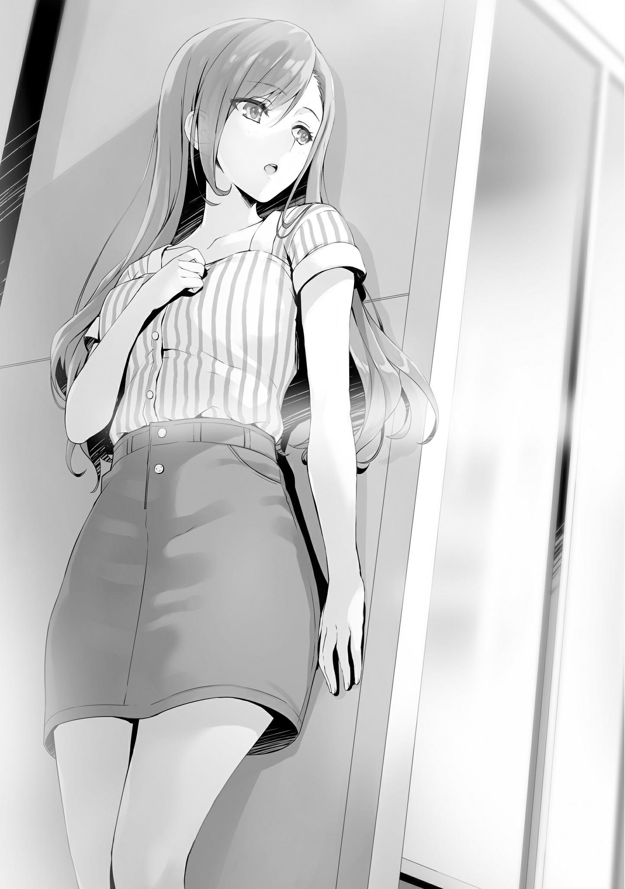
Debo esperar a estar mejor preparada antes de hacer algo.
Lo seguiré un poco más, y si no encuentro nada, entonces volveré a donde están Shinohara-san y Satou-san.
Mientras alcanzaba a Ayanokouji-kun, que acababa de doblar la esquina, empecé a pensar en mi próximo movimiento.
PARTE 3
Ese día, llegué al centro comercial Keyaki solo.
Como se acercaba el final de las vacaciones de primavera, y se acercaba el nuevo semestre, planeé comprar ropa nueva y otras cosas relacionadas.
Eso es lo que planeaba hacer originalmente, pero la situación cambió.
El primer cambio inusual vino por detrás de mí.
Justo después de eso, otro cambio me golpeó desde el frente.
—¿Puedo tomar un poco de tu tiempo?
Esto empezó cuando decidí dónde comprar, hasta que de repente me encontré con cuatro adultos.
Tres de ellos, por su ropa, parecían obreros de la construcción, sosteniendo un portapapeles.
Sin embargo, la otra persona era Tsukishiro, que llevaba un traje y se aproximó a mí aplaudiendo.
Cuando dejé de caminar, Tsukishiro miró a las tres personas que estaban detrás de él.
—Sobre el trabajo de construcción, sólo sigan el plan que establecimos antes.
Después de que Tsukishiro diera estas instrucciones, los otros adultos se alejaron.
—Ayanokouji-kun, parece que estás disfrutando de las vacaciones de primavera, como todos los demás.
Al principio pensé que me hablaría con amabilidad, pero al abrir la boca, el sarcasmo se desbordó.
—¿Tiene asuntos conmigo, Director Interino Tsukishiro?
—Oh no, parece que no soy bienvenido.
Tsukishiro obviamente lo sabía, pero habló un poco más alto a propósito.
Aunque no era lo suficientemente fuerte para que un transeúnte lo oyera, era suficiente para mostrar que era premeditado.
—Es porque charlar con el director atraería atención no deseada. Creo que un estudiante impotente como yo debería acechar en las sombras.
Quiero saber cuál es su intención lo antes posible.
Al mismo tiempo, también me preocupaba la situación con Matsushita-san, que me seguía por detrás.
—Le preguntaré de nuevo, ¿qué asuntos tiene conmigo?
Aunque, a esta distancia, no debería ser capaz de escuchar la conversación.
Pero igualmente podría causar que ella especulara sobre esto innecesariamente.
—En cuanto a lo que es mi asunto, te lo diré cuando quiera. Puede que te resulte difícil de aceptar, pero por favor, trata de aguantar. ¿Te importa?
Es imposible que a Tsukishiro le importaran realmente mis sentimientos.
Es mejor decir que él decidió interrumpir nuestra conversación, ya que este es un lugar donde las multitudes van y vienen.
—Entiendo. Tómese su tiempo.
—Bien. Empecemos por hablar del clima.
Aplaude. Tsukishiro aplaudió mientras decía esto, pero inmediatamente después entrecerró los ojos.
Si lo hizo para ver mi reacción, parece demasiado superficial.
No era posible afectarme sólo por eso.
—Sólo bromeaba. Tengo algo que hacer después, así que iré directo al grano.
Tsukishiro fue muy claro en esto. Era muy evidente que intentó provocarme a propósito. Sin embargo, parece que tiene algo que decir.
La escuela y el estudiante. Pase lo que pase, su posición no puede ser invertida.
Mientras yo fuera estudiante, no podría rebelarme contra él. Tsukishiro me enseñó esto.
—¿Qué tal esto? Vuelve con tu padre, siendo estas vacaciones de primavera tus últimas vacaciones.
A Tsukishiro no le importaba el lugar en el que hablábamos, aunque el contenido de la conversación sería bastante profundo.
Sin embargo, aunque esta conversación fuera escuchada por los otros estudiantes, no era un problema para él.
Aunque pudiera ser malo para mí, no le causaría ningún daño a este hombre.
Dicho esto...
—Debes querer ignorarme e irte. Sin embargo, es mejor que no lo hagas.
Tengo mi posición como director y tengo que mantenerla. Si me tratas con frialdad, cambiaré mi forma de actuar para corresponder a eso.
Como si estuviera leyendo mis pensamientos, Tsukishiro sonrió.
—Desafortunadamente para usted, no tengo intención de abandonar esta escuela voluntariamente.
—¿Tanto temes volver a la Habitación Blanca?
—Estoy disfrutando mi vida aquí en esta escuela, y quiero graduarme como un estudiante normal. No hay otra razón para mi comportamiento.
—Esta es realmente una buena escuela. Con los enormes subsidios asignados por el gobierno, incluso construyeron un centro comercial como este.
Cientos de millones de yenes se gastan aquí cada año, usados como agua del grifo. Pero la mayoría de los ciudadanos de este país son estúpidos, después de escuchar que estos fondos se utilizan para educar a los niños, y aceptaron precipitadamente.
Tsukishiro suspiró, y dirigió sus ojos al interior del centro comercial Keyaki.
—Debido a esto, tengo un sinnúmero de cosas con las que tengo que lidiar.
Soy el director de esta escuela ahora, y por eso estoy tan ocupado.
Tsukishiro tenía que actuar como un Presidente competente en la superficie, así que había muchas cosas que tenía que hacer.
—Volviendo a esto... esa chica que te sigue, ¿no es Matsushita Chiaki de tu clase?
Tsukishiro dijo esto en voz baja, mientras mantenía su mirada en mí.
—Aunque sólo fue un momento, la vi esconderse detrás de la pared.
Parece que eres muy popular.
Aunque la mirada de Tsukishiro no debería haber estado en mí en ese momento, él seguía observando muy cuidadosamente. Es decir, que incluso mientras hablaba con los otros adultos, seguía prestando atención a su entorno.
—No esperaba que memorizara tan rápido los nombres de los estudiantes de mi clase.
—Como es tu compañera, no es nada especial.
Creo que su forma de atacarme consistía en sacudir mi psique.
—Apuesto a que esto se deriva del hecho de que te vio dar esa respuesta en el evento de aritmética mental. ¿No te sientes cada vez más restringido? Es evidente que quieres pasar tu vida en esta escuela como un estudiante normal, pero cada vez es más difícil hacerlo.
Me pareció que buscaba forzar la impresión de que odiaba la escuela.
—Puedo soportarlo, si sus ataques son sólo de este nivel.
—Para ser honesto, no me importa lo que hagas. Más bien, estoy bastante molesto por cómo pierdo mi valioso tiempo lidiando con esas cosas.
—En ese caso, ¿por qué no empaca sus maletas y se rinde? Nadie le obliga.
—Porque tu padre no lo permite. Si le desobedezco, no puedo sobrevivir en este mundo. Después de todo, también quiero subir la escalera social.
Tsukishiro no abandonó la conversación en ese momento, y en su lugar continuó hablando sobre el tema.
—No me mires con esa cara de sorpresa. Querías mi excusa, así que la tienes, ¿eh?
—Bueno, eso es cierto.
—He visto lo que has conseguido en la Habitación Blanca. Realmente eres un niño extraordinario. Tienes poco más de 16 años, pero tu habilidad es definitivamente anormal. Ni siquiera los adultos que te rodean pueden igualarte en mente, cuerpo o habilidad. Estás fuera de su alcance.
Tsukishiro acortó la distancia entre nosotros, y una amable sonrisa apareció en su rostro.
—De todos modos, pasaste un año en esta escuela sin muchos problemas.
¿Por qué no lo dejas así? Es una decisión madura.
Quiso decir que debería tomar mis recuerdos del año pasado y volver a la Habitación Blanca de esa manera.
—Todavía soy un niño, después de todo. No planeo dejar esto tan fácilmente.
—Eh, ¿realmente crees que puedes escapar de mí?
—Planeo resistir hasta el final.
—Hay un viejo dicho, sobre cómo la rana en el fondo del pozo no conoce el océano. Parece que tienes tendencia a sobreestimarte, así que aunque te di una oportunidad, no aprecias mi amabilidad.
Tsukishiro extendió sus brazos ligeramente.
—Aunque no sé cómo es en esta escuela, definitivamente no eres el número 1. Entre los estudiantes de la Habitación Blanca después de ti, ha habido varios estudiantes que son iguales, o incluso más poderosos que tú.
Deberías entender que eres otra persona producida en masa.
—Si ese es el caso, no hay necesidad de prestarme atención, ¿verdad?
—Si no fueras el hijo de ese hombre, eso sería cierto. Tu padre realmente quiere llevarte a un dominio superior. Aunque parezca una persona fría, ese hombre sigue siendo tu padre. Cree firmemente que eres una existencia que puede convertirse en un modelo, y liderar a las masas.
Tsukishiro no ocultó su insatisfacción hacia ese hombre, pero eso fue para mostrarme el alcance de su poder y posición en este momento.
—Sobre la existencia de la Habitación Blanca, ¿qué piensa usted de ella, Director?
—¿Qué es lo que pienso?
—Sus pensamientos sobre si la existencia de la Habitación Blanca es necesaria o no.
Como no iba a doblar la rodilla en esta posición, quería que me dijera esto.
—No estoy obligado a responder.
—Después de escuchar su respuesta, mis pensamientos pueden cambiar a partir de eso.
—Esta es sólo mi opinión, pero está bien. Si esto es todo lo que se necesita para que cambies de opinión, será demasiado fácil.
A pesar de saber que seguramente estaba mintiendo, Tsukishiro estuvo de acuerdo.
—Si quieres hablar de esa instalación, es necesario entender su historia.
¿Sabías que la Habitación Blanca fue construida hace 20 años?
—Por supuesto. Después de todo, soy parte de la cuarta generación.
—Sí. Como sabes, la Habitación Blanca comenzó desde el primer año de vida de la primera generación, con nuevas generaciones que se formaban anualmente. Cada generación es formada bajo diferentes líderes, y recibe la educación correspondiente. Luego, se verifica qué grupo tuvo la educación más efectiva. Aunque sólo 19 generaciones se han educado debido a la interrupción del año pasado... Cientos de niños han sido entrenados bajo el sistema educativo de la Habitación Blanca.
Los niños de diferentes generaciones no se veían. Aunque estaban en la misma instalación, no conocían la apariencia y los nombres de nadie más.
—Parece que conoce bastante bien la Habitación Blanca.
—Sólo un poco, sólo un poco.
Tsukishiro era una figura estrechamente relacionada con mi padre, esta conversación lo hizo obvio.
Debe haberlo dicho para hacerme entender eso.
A veces, parecía como si fuera una persona pequeña e irrelevante. Pero si cambiabas tu perspectiva, verías que es una persona importante.
Podía transformarse en consecuencia, de acuerdo con la situación.
Fue por esta razón que se le dio la gran responsabilidad de ser un espía.
—Todos los niños pueden crecer hasta cierto nivel. Sin embargo, tratar de superar ese nivel nunca ha sido posible. La evidencia está en esa instalación, que ha estado funcionando durante casi 20 años, y ni un solo niño ha sido capaz de alcanzar el objetivo. Eso es cierto para todos excepto para ti, pero eso fue hace sólo 2 años.
¿Cuánto dinero se había invertido en la Habitación Blanca?
Unos pocos cientos de millones de yenes no deberían ser suficientes.
Resultó que yo fui el único que alcanzó ese objetivo. No pude evitar sentir que este proyecto era un desperdicio.
—¿Qué hay de la gente que se volvió talentosa? ¿Qué están haciendo esos niños ahora?
La parte de la que no sabía nada.
Qué hacía la gente de mi generación después de haberse ido, era algo de lo que no tenía ni idea.
Tsukishiro parecía un poco sorprendido, pero inmediatamente lo entendió.
—Por supuesto, es imposible que sepas a dónde fueron los niños que dejaron las instalaciones. Esos niños crecieron maravillosamente y contribuyeron a la sociedad... si eso hubiera ocurrido, es algo que hay que agradecer. Pero hasta ahora, la mayoría de los niños criados en esa institución tienen sus propios problemas, y por lo tanto no se les puede dar un buen uso.
No durarán en ese ambiente, sus corazones ya han sido dañados.
Tsukishiro continuó, adoptando una mirada de impotencia.
—Recibir una educación completa desde el nacimiento. Si esto se puede lograr, Japón experimentará un crecimiento que el mundo nunca antes ha visto.
Sin embargo, esto no es tan simple. Bajo la influencia de varios factores misteriosos, el crecimiento de las personas varía enormemente. Es imposible cultivar el éxito usando el mismo método en todos. Sin embargo, hemos logrado producir resultados tangibles. Tomemos como ejemplo la quinta y sexta generación, entre los que sobrevivieron hasta el final, hay algunos con el potencial de producir grandes resultados. Todo lo que queda es perfeccionar el sistema, y después de eso, la Habitación Blanca puede ser un recurso indispensable en el futuro. El plan de tu padre es muy estúpido... y también muy aterrador.
Después de que Tsukishiro hablara de forma indirecta, finalmente llegó a una conclusión.
—En resumen, así es como me siento respecto a la Habitación Blanca. Es a la vez estúpida y aterradora.
—Gracias por ese largo discurso, me he beneficiado enormemente de él.
—La cuarta generación demoníaca. Con todos los estudiantes desertando debido a su educación excesivamente dura, resultó que sólo sobrevivió uno, el estudiante que logró pasar el curso final con facilidad. También te veo como una valiosa muestra. Para no desacreditar ese brillante historial, creo que sería mejor que volvieras a casa.
Tsukishiro sacó su teléfono y me lo dio.
—Llama a tu padre ahora y dile que quieres marcharte. Este es el mejor método para proteger tu ego, y también actuará como pago por el amor de tu padre por ti.
—Director Interino Tsukishiro, lo que ha dicho no contiene mentiras, ha dejado la verdad perfectamente clara.
Ya sea que se tratara de la Habitación Blanca o de mí.
Y sin más, Tsukishiro dejó escapar una sonrisa.
—Mi descripción de usted, Director Interino Tsukishiro, es que es un hombre que esconde sus emociones poniéndose una máscara de hierro. Sin embargo, de la conversación de hoy, sentí que se ha quitado esa máscara.
En otras palabras, manipula de forma deliberada las impresiones de otras personas sobre él para dar un sentido de autenticidad al contenido de la conversación.
Por lo tanto, sus palabras no son creíbles. En cambio, son algo así como mentiras.
En el nivel de ese hombre, no había necesidad de mezclar la verdad con las mentiras.
Debería ser fácil para él jurar que lo negro es blanco y que lo blanco es negro.
Es decir, aunque su declaración no consistiera más que en mentiras, podía pronunciarla de alguna manera, para que sonara verdadera.
—Parece que no hay forma de ganarse tu confianza.
—Lo siento.
—Santo cielo...
—Director Interino Tsukishiro, ¿no es mejor rendirse ahora? Si no me obliga a marcharme, perderá la confianza de mi padre. Aunque sólo reciba una reprimenda, diría que sería una sabia decisión detenerse en esta etapa, o podría ser humillado.
—Gracias por tu preocupación. Sin embargo, esas palabras son inútiles, porque no fallaré.
Aunque no sabía cuál era la verdad de sus palabras, Tsukishiro soltó una sonrisa aterradora.
—Además, soy un adulto. No tengo miedo de un fracaso momentáneo, aunque por casualidad me obligues a salir de esta escuela, no importa. Sólo me enviarán a realizar otro trabajo. La humillación no es tan importante.
—Ayudó a mi padre porque le tenía miedo, y sin embargo dice que no le teme al fracaso. ¿Cuál de esos son sus verdaderos pensamientos?
—Sí, ¿cuáles son?
Tsukishiro, que había estado luchando durante décadas en la cima.
La evaluación de su máscara de hierro podría necesitar ser más alta de lo que pensé originalmente.
Como fue enviado por ese hombre, no es una persona sin tacto e impulsiva. Lo sabía con certeza.
—Si no puedes aceptarlo, entonces no se puede evitar. En vez de eso, lucharemos.
—Sí.
Tsukishiro finalmente pareció satisfecho, y se distanció de mí.
—Ya era hora. Sería grosero hacer esperar a los demás.
Tal vez se refería a los adultos que se fueron primero.
—Pero ya que no planeas retirarte tú mismo, a partir de hoy, tu vida en esta escuela será difícil.
—Aunque quiero vivir una vida escolar pacífica, parece que no hay manera, seré consciente de esto.
Tsukishiro sonrió, y justo cuando estaba a punto de irse, hizo una propuesta.
—¿Quieres jugar un juego, que será ventajoso para ti?
—¿Un juego?
—Cuando comience el próximo semestre, haré que un niño de la Habitación Blanca se inscriba como novato.
Al principio pensaba en lo que iba a decir, pero al final, lo que dijo fue inesperado.
—¿Está bien que me cuente algo así?
—No hay ningún problema. Deberías haber pensado en la posibilidad de que ese tipo de cosas ocurrieran. Nuestra intención es darle un ultimátum final a este niño, así que si descubres la identidad de este niño, lo expulsaré.
Esta fue una decisión que no tuve que tomar yo mismo.
Memoricé lo que dijo Tsukishiro, pero no tenía intención de creerle en absoluto.
—Parece que no me crees. ¿Acaso crees que es posible que envíe a cuatro o cinco personas aquí? Esta escuela no es tan laxa en sus políticas para que yo envíe varias personas, estás pensando demasiado en esto.
—Tanto si dice que es una persona como si son cien, no me lo creería en absoluto.
Si tuviera la intención de enviar gente aquí, ese hombre enviaría a todos los que quisiera.
Tenía claro que era esa clase de persona.
—Eso podría ser cierto.
—Pero, ¿cómo puedo ganar en este pequeño juego suyo?
—Hay un total de 160 estudiantes de primer año que entrarán en la escuela el próximo año. Si puedes elegir al estudiante de la Habitación Blanca a finales de abril, me daré por vencido. ¿Qué te parece? Haré una excepción y romperé las reglas con esa condición, ¿eh?
Si esto fuera cierto, se consideraría una excepción que rompe las reglas.
Pero si el problemático Tsukishiro se fuera, mi carga se reduciría.
—No hay manera de que pueda creer eso.
—Puedes dudar de ello si quieres, no hay mucho daño.
Si ignoramos el posible daño al estado mental, es cierto que no había ningún riesgo en esto.
No habría ninguna pérdida si simplemente aceptara el desafío.
—Entiendo. Jugaré su pequeño juego y aceptaré sus palabras a simple vista. Pero parece muy confiado en la habilidad del estudiante de la Habitación Blanca. También estoy seguro de una cosa.
—¿Eh? ¿Qué cosa?
—La rana del fondo del pozo no conoce las profundidades del mar, pero conoce la altura del cielo.
—Así que estás diciendo... es por el tiempo que has pasado en ese pequeño mundo conocido como la Habitación Blanca, que eres capaz de entender la profundidad de ese lugar más que nadie, ¿es eso lo que quieres decir?
Fue la educación que recibí en la Habitación Blanca lo que me dio esta confianza inquebrantable.
No importaba a cuántos niños se les enseñara de la misma manera, nadie podía alcanzar este nivel.
Ya sea que se tratara del estudiante de tercera generación del año anterior o del estudiante más joven de quinta generación, esto seguía siendo igual.
Frente a Tsukishiro, que seguía echándome miradas tentativas, continué.
—Definitivamente hay gente que es incluso mucho mejor que yo en este mundo. Después de todo, hay hasta 7.000 millones de humanos viviendo en el planeta. Pero la Habitación Blanca es diferente.
En ese mundo, no hay nadie mejor que yo.
Y con esa confianza, di esa respuesta.
—Ese par de ojos... es exactamente igual a los de tu padre. Esos horribles ojos que contienen una profunda oscuridad. La profundidad de tus ojos es lo único que esos excelentes estudiantes de la Habitación Blanca no pueden imitar.
Al parecer, Tsukishiro comprendió que no tenía sentido continuar la conversación, así que se dio la vuelta y comenzó a alejarse.
PARTE 4
Después de que se fue, volví a vagar por el centro comercial Keyaki durante un tiempo.
Olvidar temporalmente la situación con Tsukishiro estaría bien por ahora.
El problema radica en que Matsushita ocultaba su presencia y se escondía detrás de mí por ahí.
Aunque podría ignorarla, sería un problema si difunde la situación entre el Director Interino y yo.
Después de confirmar que Matsushita todavía me seguía, decidí esperar una oportunidad.
¿Por qué me está siguiendo? Necesito confirmar la razón de eso.
Aunque esto era improbable, también debo considerar la posibilidad de que ella estuviera trabajando para Tsukishiro.
No sé si me estuvo siguiendo desde el principio, o algún tiempo después de eso.
Sólo a partir de este punto, lo distinguí claramente.
Si había otras cuestiones que debía considerar, sería donde debería hablar con ella.
Eran las vacaciones de primavera en el centro comercial Keyaki, y todavía era de mañana, el momento con más gente.
Si hablaba con ella aquí, sería demasiado evidente.
Mientras planeaba cómo empezar la conversación, decidí resolver este asunto lo antes posible.
Una cosa que hay que agradecer es el hecho de que Matsushita fuera mi compañera de clase.
Aunque nuestra conversación fuera vista por otros, sería considerada como una charla ordinaria entre compañeros.
Acelerando un poco, y girando la esquina, me preparé para tenderle una emboscada a Matsushita.
Si no me seguía aquí, usaría a Kei para lidiar con esto.
Después de unos 10 segundos, Matsushita dobló la esquina para alcanzarme.
—¿¡Whoah!?
No esperaba que yo estuviera ahí, y dejó salir una voz de sorpresa.
Si no me estuviera siguiendo, no habría reaccionado tan exageradamente.
—¿Qué asuntos tienes conmigo?
Pregunté eso, mientras Matsushita ponía su mano en su pecho para calmar sus intensos latidos.
—¿Qué asunto, qué quieres decir?... Aunque eso es lo que me gustaría decir, parece que me han descubierto.
Después de ver mi actitud, determinó que usar una excusa cualquiera en esta situación no funcionaría.
¿Pero por qué me siguió?
Esa parte era lo que realmente importaba.
Si ella sólo quería saludarme normalmente, no había necesidad de que se ocultara y me siguiera.
—Bueno, hay una razón, así que te seguí, Ayanokouji-kun.
Después de que Matsushita confirmara que no había nadie alrededor, admitió que me estaba siguiendo.
Mi relación con Matsushita no es muy profunda.
Pero si observas el comportamiento de Matsushita, encontrarás que está bastante alerta. Esto seguramente se debía a que no quería que se vieran sus verdaderos pensamientos, lo que también explicaría la razón por la que quería seguirme.
—¿Cuál crees que es la razón por la que te estoy siguiendo?
Esto no era una simple pregunta, obviamente se trataba de un ataque psicológico.
Al parecer, ella realmente quería preguntarme algo después de esto.
—No sé, no entiendo nada de esto. ¿Cuándo empezaste a seguirme?
No le dije nada cuando me di cuenta de que me estaba siguiendo.
Mientras respondía a sus preguntas, yo también le hacía preguntas.
—Justo ahora, justo...
—¿Justo ahora?
Para evitar que Matsushita hiciera preguntas adicionales para no contestarme, le hice otra pregunta.
Si se le daba la oportunidad, definitivamente me preguntaría "¿Cuándo se dio cuenta Ayanokouji-kun?"
—Cuando... Oh, claro, cuando estabas hablando con el director interino Tsukishiro.
Matsushita mezcló las mentiras, pero también admitió que me vio hablando con el Director Interino Tsukishiro.
Poco después, Matsushita bajó ligeramente la comisura de su boca. Parece que se dio cuenta de su error.
En realidad, ya he tendido una trampa, si ella tenía curiosidad sobre mi relación con el Director Interino Tsukishiro, no tendría más remedio que hacerme una pregunta sobre eso.
—Te vi hablando con el Director Interino Tsukishiro, ¿qué pasó realmente?
—Parece que el centro comercial Keyaki está a punto de ser renovado, por eso preguntaba a los estudiantes qué instalaciones nos gustaría que se construyeran, y cuestiones similares. Simplemente eligió preguntarme por casualidad.
—¿Oh? Ya veo...
Matsushita, que afirmó que comenzó a seguirme durante mi conversación con el Director Interino Tsukishiro, podría haber planeado usar la información de lo que pasó antes de la conversación para su beneficio. Sin embargo, tuvo el efecto contrario. Como vio a los trabajadores siguiendo al Director Interino Tsukishiro, lo más probable es que me creyera.
—Entonces, ¿cuál es tu pregunta?
—No tengo ninguna pregunta. Sólo hay algunas cosas en mi mente.
Después de decir esto, Matsushita fue revelando la verdadera razón para seguirme.
—Sobre el examen de fin de año... Ayanokouji-kun era el comandante,
¿cierto?
Así que eso es todo. Habiendo escuchado esta frase, entendí la razón por la que Matsushita quería contactarme.
—Durante el evento de matemáticas mentales rápidas, la respuesta que diste fue exactamente la misma que la que dio Koenji-kun.
Sería difícil decir que esto sucedió por casualidad.
—Durante la secundaria, hice muchas matemáticas mentales rápidas, así que soy bastante bueno en eso.
—Yo también, pero no estás en el nivel de "bastante bueno", creo que eres lo suficientemente bueno para participar a nivel nacional.
Tan pronto como terminé de hablar, Matsushita-san respondió inmediatamente.
Parecía como si no le gustara el hecho de que yo bloqueara su primer movimiento.
—Ese es un evento en el que soy relativamente bueno. Para ser honesto, he participado en competiciones nacionales antes.
—...¿Es eso cierto?
—Sí, parece que la repentina aparición de un evento en el que soy bueno ha llevado a tu malentendido.
—Pero, ¿no deberías haber mencionado esto antes?
—Es cierto, pero ¿conoces mi personalidad? No soy alguien que pueda anunciar esto a toda la clase. Además, me dieron un punto de protección por casualidad que me llevó a asumir el mando. Sin mencionar que nuestro oponente era Sayakanagi de la clase A. Aunque soy bueno en matemáticas mentales rápidas, no sabía cuánto podía ayudar, así que me sentí incómodo.
La falta de confianza en sí mismo equivale a una pobre capacidad de comunicación. Esa era la impresión que mis compañeros de clase tenían de mí.
—Eso... podría ser cierto.
Aunque ella sentía que era de hecho confiable, Matsushita no quiso aceptarlo, y lo llevó al siguiente paso.
—Yo... yo lo vi. La escena de Ayanokouji-kun y Hirata-kun, hablando juntos en una banca.
Debe hablar del momento en que Hirata estaba solo durante la Votación de la Clase.
No tenía ojos en mi espalda, así que no sabía que alguien estaba mirando.
Sin embargo, no había necesidad de entrar en pánico por esto.
Aunque alguien viera esa escena en ese momento desde la distancia, no era algo tan inesperado.
—Aunque me quedé a distancia porque pensé que me descubrirían si me acercaba más, creo que lo vi llorando.
Al presenciar esa escena y procesar rápidamente lo que significaba, parece que recopiló una cierta cantidad de datos.
Las intenciones de Matsushita se hicieron gradualmente obvias.
Juzgando por sus palabras y sus acciones, creer que no tenía nada que ver con Tsukishiro debería estar bien.
—En ese momento, durante el segundo día, Hirata volvió a clase, así que
¿no debería ser esto más que una pura coincidencia?
Pensé que era una estudiante común y corriente, pero era inesperadamente perspicaz.
No importaba nada que me dijera estas cosas.
No me pareció que estuviera aquí porque no podía guardarse esos pensamientos para sí misma.
Aunque podría ser etiquetado como pura curiosidad...
Por sus acciones sutiles, se podía ver que esto era sólo un pretexto, así que en otras palabras, ella tenía su razón particular para involucrarse en esto. A juzgar
por las palabras y acciones de Matsushita hoy, que eran lógicas, esto no era un capricho repentino de ella. Por el contrario, habría planeado esto de antemano, ponerse en contacto conmigo, y luego sacar este tema. Tal vez su decisión de actuar hoy fue porque me vio deambular por el centro comercial Keyaki yo solo.
—Aritmética mental rápida a nivel nacional, además de tu velocidad de carrera, y encima de eso, consolar a Hirata durante la Votación de la Clase.
Considerando todos estos puntos... Ayanokouji-kun, ¿te estás conteniendo? De hecho, ya sea académica o físicamente, eres más capaz que lo que estás mostrando, ¿verdad?
Este fue un contacto deliberado conmigo, quien tiene una existencia débil, y también intentó llevarme a decir ciertas cosas.
Creo que intentó contactarme porque duda de mis habilidades.
Esto era completamente diferente de la impresión que tenía de Matsushita, que había sido mi compañera de clase durante un año.
Rápidamente llegué a una conclusión, decidiendo abordar el tema principal.
—¿Haces esto porque quieres que te ayude a llegar a la clase A?
—...¿Así que lo admites?
Parece que Matsushita-san sintió un cierto temor después de mi sincera confesión.
—Parece que me estoy conteniendo.
—¿Por qué? ¿No es bueno obtener buenas notas en esta escuela?
Matsushita, que creía tener la ventaja, comenzó a cuestionarme y criticarme.
—Es porque no me gusta... llamar la atención. Si de repente mis notas suben casualmente, ¿no tendré que ayudar a enseñar a los demás? No soy muy bueno para hacer eso. Lo mismo ocurre con los deportes.
—Así son las cosas ¿eh?
Similar a Matsushita que escondió sus habilidades. Probablemente había algunas partes de mi excusa que eran iguales para ella, resultando en que lo pudiera entender muy bien. Así que creyó en mis palabras.
—Por favor haz más contribuciones a la clase en el futuro. Si realmente tienes la fuerza, quiero que la uses. Esto es para llevar a nuestra clase a la victoria. Si tu fuerza es genuina y si tienes lo que se necesita para ser un líder, puedo responder por ti, Ayanokouji-kun.
Sus pensamientos eran similares a los de Horikita. Si tienes la fuerza, entonces úsala honestamente.
—Sucede que yo también lo creo.
—¿Eh?
No esperaba que cooperara voluntariamente con ella, así que Matsushita hizo un sonido de sorpresa.
—Pero por favor no esperes demasiado de mí. Ya he ejercido alrededor del 70-80% de mi fuerza total. Incluso con toda mi fuerza, no tengo la misma capacidad académica y atlética que Hirata.
A partir de ahora, tenía la intención de poner mi vida escolar a un lado.
Ahora mismo, tengo que ser aceptado por Matsushita hasta cierto punto.
Diciéndole cómo escondí mis habilidades, le dio la impresión de que no tenía más secretos.
Entonces, sin siquiera tener que mencionármelo, me di cuenta de que Matsushita también escondía su fuerza.
Por supuesto, también se sentiría como si estuviera en una posición dominante en esta guerra psicológica, pensando que ya había calculado mi fuerza temporal.
—Espera, hace un momento, dijiste que estabas usando el 70-80% de tu fuerza... ¿Es eso cierto?
No debería haber nada que Matsushita pueda mencionar para confirmar que mi fuerza estaba por encima de Hirata. Sin embargo, me pidió que confirmara si era verdad o no.
—Mhm.
Aunque asentí con la cabeza para confirmarlo, Matsushita no lo aceptó.
—Entonces, ¿qué hay de la situación con Karuizawa-san?
—¿Qué quieres decir?
—...El hecho de que ella haya roto con Hirata-kun debería tener algo que ver contigo.
—¿Dónde te enteraste de esto?
—Eso es lo que pienso personalmente... creo que tiene que haber algún tipo de conexión.
Al parecer, Matsushita ya había hecho una investigación bastante completa con anterioridad, y es por eso que no podía simplemente aceptarlo.
La confianza en la expresión de Matsushita desapareció repentinamente.
—¿Por qué Karuizawa-san piensa que eres tan especial... tanto que la llevó a romper con Hirata-kun? Por favor, dime por qué.
—La razón de eso, ¿eh?
Como estaba por debajo del estatus de Hirata, los motivos de Karuizawa eran difíciles de aceptar.
—¿Vas a decir que ella no te ve como alguien especial?
—...Supongo que sí.
Al escuchar lo que dije, Matsushita asintió suavemente mientras lo aceptaba.
—Por supuesto, tú, Ayanokouji-kun, necesitas ser más...
—No... cómo decirlo, siento que estás malinterpretando algo.
—¿Malinterpretando? Pero te lo pregunté porque tengo mucha confianza en esto.
—Es cierto que mi relación con Karuizawa... no es normal.
—Por eso quería saber sobre tu verdadera fuerza, Ayanokouji-kun.
—No, eso...
—Ya llegamos a esta parte, así que ¿por qué no me lo dices de todas formas?
—No es así, cómo puedo decir esto, es un poco difícil ponerlo en palabras.
Mientras tartamudeaba, mi mirada se escapó y se centró en un lugar lejano.
—Es un poco difícil de decir. No, bueno, no realmente... Bueno, siento que es simplemente por la influencia de cómo le transmití a Karuizawa que me agradaba. En lugar de decir que soy especial para ella, es mejor decir que tiene una especie de extraña conciencia de mí.
—¿Eh...?
—...¿Eh?
Los dos nos miramos.
—¿No es porque Karuizawa-san se dio cuenta de tu fuerza, y por eso piensa que eres especial?
—Eso no debería estar relacionado en absoluto.
—Pero... no creo que sea tan simple como transmitir tus buenas intenciones lo que haría que alguien más piense que eres especial.
Acorté la distancia entre Matsushuta, y la agarré de los hombros.
Matsushita no esperaba que la agarrara de repente, y no pudo evitar quedarse boquiabierta.
Capté su mirada con firmeza y dije esto.
—Matsushuta, me gustas. Por favor, sé mi novia.
—¿Qué...?
El cerebro de Matsushita entró en pánico por un momento, pero rápidamente solté las manos.
—Si se te confesaran así, sin importar el resultado, ¿podrías ignorarlo?
—Es una broma. Entonces es así, entonces es así... ah.
Si dejo que lo experimente directamente, podría hacerla entender lo que dije antes sin que lo sepa. Después de una confesión seria por parte del sexo opuesto, siempre que no fuera extremadamente adversa, estarías un poco consciente de ellos hasta cierto punto. Esto era obvio.
—Creo que su ruptura con Hirata fue totalmente una coincidencia. Y sólo le transmití mis sentimientos después de que rompieran.
Como todavía no me había confesado, Matsushita no tenía forma de confirmar la veracidad de la secuencia de cosas.
—... Así que esa es la situación. Siento haberte seguido.
—Tengo una petición, lo mío con Karuizawa...
—Lo sé. No se lo diré a nadie, pase lo que pase.
No se puede decir que aceptara mi respuesta al 100%.
Pero, este asunto puede ser frenado por un tiempo, ya que le he proporcionado tanta información. Después de todo, el asunto entre Kei y yo, no podía hablar casualmente de ello con nadie.
Si algo relacionado con esto me hiciera infeliz y se negara a cooperar, sólo dañaría a Matsushita también.
LA JUVENTUD ESTÁ A PUNTO DE FLORECER
La situación con Matsushita el otro día, y antes de eso, el problema con Horikita e Ichinose. Así como el establecimiento de una relación de cooperación con el Director Sakayanagi, Chabashira-sensei y Mashima-sensei.
También, la conversación con el Director Interino Tsukishiro. Muchas cosas pasaron a mi alrededor durante las vacaciones de primavera.
Primero que nada, tengo que permanecer vigilante sobre Tsukishiro. A diferencia de otros problemas, ignorarlo sólo causará que la situación empeore. Lo siguiente que sé, es que podría recibir un aviso de expulsión.
Por lo tanto, ahora mismo, lo único que podía hacer era cooperar con los otros profesores para tratar de responder a eso.
Esa persona dijo que alguien de la habitación blanca se inscribiría en esta escuela. Aunque esto no es algo que esté garantizado que sucediera, la posibilidad es alta.
Tsukishiro no podía entrar casualmente en los pasillos o en las aulas en cualquier momento que quisiera, así que sólo podía atacarme por medios indirectos, como los exámenes.
Pero los estudiantes por otro lado, independientemente de si son los pasillos o las aulas, pueden moverse libremente.
En cualquier momento, pueden crear un ambiente para entrar en contacto conmigo, dándoles la oportunidad de expulsarme. Además, son más beneficiosos ya que pueden recolectar más información.
Si lo que se dijo se hace realidad, esto sería considerado el mayor cambio que haya sucedido a mí alrededor.
Luego, estaban Horikita y Matsushita, las llamadas problemas internos de la clase. Cuestionaron mis verdaderas habilidades y también querían saber más sobre mi potencial.
Aunque Horikita decidió competir contra mí uno a uno, no hay nada que se necesite hacer ahora. Lo mismo era cierto para Ichinose, también es un asunto para el futuro.
Por ahora, sólo tengo que preocuparme por las batallas del año que viene, y hacer con calma lo que hay que hacer.
Sin embargo, estas son sólo las cosas que han sucedido a mí alrededor.
En cuanto a mis propios cambios, son mínimos.
Sí... eso fue hasta hoy.
Las vacaciones de primavera también estaban llegando a su fin, con sólo dos días restantes.
Antes de que los estudiantes dieran la bienvenida a la batalla que se avecinaba, y disfrutaran del último día de descanso, empecé a tomar una firme determinación para la toma de medidas mientras buscaba un gran cambio.
Si quieres seguir adelante, entonces tienes que aprovecharlo ahora.
Eran apenas pasadas las 6, y el sol comenzaba a ponerse. Era el momento en que el día se convertía en noche.
Dicho esto, si es posible, hay algo que quisiera preguntarles a todos ustedes.
Por ejemplo, si hubiera alguien del sexo opuesto que les gustara, ¿cómo podrían abrir un camino hacia una confesión?
Si fueras guapo o hermosa, entonces podrías simplemente ahorrar esfuerzos y confesarte de inmediato.
Siempre que me respondieran: "¡Yo siento lo mismo!", entonces sería digno de celebrarse.
Sin embargo, no hay mucha gente que cumpla con estas condiciones. Tienen un complejo de inferioridad en cuanto a su complexión, personalidad y forma corporal.
Esos tres factores podrían servir como obstáculos en el camino a la confesión.
En resumen, usar una "confesión" como una puerta al amor no es tan simple.
Debido a esto, tendría que dejar correr mi imaginación seriamente, y pensar mucho para aumentar la tasa de éxito de la confesión.
¿La tasa de éxito era del 10% o del 20%? ¿O podría ser, digamos, del 50%?
Habrá veces en las que alcanzará el 80-90%, o la tasa de la confesión podría incluso acercarse al 100%, pero no podemos estar seguros.
A pesar de ello, nos sentimos incómodos.
Porque tenemos miedo de que si la confesión fracasa, afectará enormemente a nuestra relación con la otra persona.
Aunque el número de personas a las que no les importa esto y que simplemente seguirían adelante no fuera pequeño, para los estudiantes de preparatoria, la escuela es todo lo que tienen. Generalmente temen la posibilidad de que sus relaciones construidas en el pequeño mundo conocido como escuela sean destruidas.
Así que piensan en lo que se puede hacer para aumentar la tasa de éxito, incluso en un 1%.
Entonces comienzan a esforzarse para aumentar la tasa de éxito.
En primer lugar, empezar con lo que se pudiera, como cambiar el peinado al estilo que le gusta a la otra persona, vestirse bien o empezar a hacer ejercicio.
También es posible adoptar estrategias como comer juntos o dar un regalo.
Usando todos los medios para aumentar la probabilidad.
La probabilidad podría aumentar del 1% al 99%, pero si fallaba, las posibilidades podrían reducirse del 99% al 1%.
Para entender los sentimientos del otro, hay que intentarlo lo mejor posible.
Ese es el proceso antes de una confesión.
Entonces... en cuanto a mí, lo había experimentado.
Pensando y preocupándome como otros hombres y mujeres.
Sin embargo, esas cosas no se limitaban al amor.
En general, todas las cosas tienen una especie de probabilidad invisible, y eso cambia todos los días de acuerdo a varios fenómenos. Al igual que estudiar más duro para entrar en la preparatoria o la universidad, cambia las posibilidades de ser aceptado.
Y el grado en que uno entiende este principio puede cambiar en gran medida la comprensión de la situación.
Los exámenes y las confesiones son sólo la etapa intermedia. Aunque tengas éxito, no marca el final.
Sería mejor decir que más cosas sucederán después de eso.
Si sufres un contratiempo antes de la graduación, puede llevarte a ser expulsado, y también puedes romper por infidelidad o violencia.
Así es como pensaba en el futuro. Un mes después, medio año después, un año después.
A veces, pueden ocurrir cosas inesperadas, pero no me gusta actuar de repente.
Es más, eso está relacionado con las acciones que hago.
Entonces, volvamos al tema principal.
Efectivamente, todo lo que he hecho hasta ahora fue cambiar una "cierta probabilidad".
No hace falta decir que esto es obviamente para aumentar la tasa de éxito.
En cuanto a cuál era la tasa de éxito, tal vez se revelará hoy.
Si mis predicciones eran correctas, ya era hora de que alguien se pusiera en contacto conmigo.
El teléfono que sostenía comenzó a sonar
Un número de 11 dígitos apareció en la pantalla de mi dispositivo.
El número que no está registrado en mi teléfono pertenece a Karuizawa Kei.
—Soy yo, siento haberte hecho esperar.
Después de que llamara varias veces, finalmente contesté.
Hace 30 minutos, llamé a Kei, pero no me contestó. Ahora, ella devolvió la llamada.
—No importa, ¿qué pasa?
—Suenas un poco insatisfecha.
—En realidad no, no es realmente insatisfacción, es más como si quisiera confirmar algo.
—¿Se trata de que no te contacte después de llamarte?
El día que me encontré con Hiyori, llamé a Kei, pero al final, no le dije nada.
En ese momento, sólo le dije que me pondría en contacto con ella cuando lo recordara.
Al final, a propósito no la contacté hasta el final de las vacaciones de primavera.
—¿Así que todavía te acuerdas? ¿Qué, estás tratando de molestarme a propósito?
—Sobre el asunto, ¿podemos reunirnos y hablar de ello?
Dije esto y acorté el tema.
—¿Eh?
—Sobre lo que te dije que te diría una vez que lo recordara, lo he pensado.
¿Puedes venir ahora?
—En serio... seguro que sabes escoger un buen momento…
A esta hora, hay mucha gente que sale y entra de los dormitorios.
La probabilidad de que Kei fuera vista viniendo a mi habitación era muy alta.
—No tienes que preocuparte por eso.
Le dije que no importaba que la vieran, y le pedí que viniera.
—Lo sé. Oh sí, tengo algo que hacer a las 7, así que no tengo mucho tiempo.
—Intentaré ser rápido, puede que tarde de 10 a 20 minutos.
—Entonces no hay problema, te veré más tarde.
Después de decir esto, Kei colgó.
Ahora... comencemos.
Ya hice mis preparativos. Miré alrededor de mi habitación, que estaba más ordenada que antes.
Por una vez, me miré en el espejo.
Ante la seriedad de mi reflejo, inmediatamente miré hacia otro lado.
PARTE 1
Una Kei disgustada estaba sentada en mi habitación.
Viendo lo bien que estaba vestida, parecía que tenía planes para después.
—Entonces, ¿qué pasa?
Kei me miró, frunciendo el ceño, mientras yo permanecía en silencio.
Aunque fui yo quien la llamó, no pude decir nada.
—¿De qué estás hablando?
—No, ¿qué quieres decir? ¿No dijiste que recordaste lo que querías decir?
—Bueno, ahora que lo mencionas, es verdad.
—……
—……
Escuchando mis vagas palabras, el descontento de Kei se intensificó.
—Por eso pregunto, ¿qué querías decir?
—Está bien, no tienes que ser tan apresurada.
—Acabo de decirte que voy a comer con mis amigas a las 7 en el centro comercial Keyaki. ¿Entiendes?
—Todavía hay mucho tiempo, está bien.
—Esto me da un mal presentimiento, ¿sabes? Estás diciendo tonterías.
Kei comenzó a sentir un poco de sospecha porque yo estaba actuando un poco diferente a lo habitual.
—...Bien, tengo algo que decirte.
Como me quedé callado, Kei comenzó a quejarse.
—¿Tienes algo que decirme?
Para ser honesto, no sabía lo que Kei quería decir, así que decidí preguntarle.
—Satou-san sospecha de nuestra relación.
Sato-- No hemos tenido mucho contacto últimamente, pero es una compañera de clase a la que le gusto.
—Pensé que me odiaría porque la rechacé. ¿Qué quieres decir?
—Intentó que admitiera que rompí con Hirata-kun para salir contigo, de forma indirecta.
Es decir que aunque Satou no fuera directa al respecto, sus intenciones podrían ser entendidas de esa manera a través de sus palabras.
—Por supuesto que lo negué, pero no estoy segura de que me creyera.
—Ya veo. Algo similar también me pasó a mí.
—¿Eh? ¿Algo parecido?
—Matsushita también tiene varias dudas sobre mi relación contigo.
Principalmente sobre si estaba saliendo contigo o no.
Informé de la conversación de hace unos días, y después de oírla, la cara de Kei se puso pálida.
—¿Eh? ¿Qué? ¿Estás mintiendo? ¿Es esto cierto? ¿Estás bromeando?
Asentí con la cabeza para mostrar que iba en serio y comencé a explicar toda la historia.
Le conté cómo Matsushita-san también ocultó sus verdaderas habilidades, sobre sus observaciones que la hicieron dudar de nuestra relación, y sus dudas sobre mi verdadera fuerza.
—Es-espera. No puedo seguir con todo esto.
Kei, que parecía tener dolor de cabeza, puso su mano en la frente.
—Tengo un mal presentimiento sobre esto... ¿Qué piensas?
Después de entender la situación, Kei me preguntó qué pensaba de esto. No, está buscando una solución.
Como esto estaba parcialmente relacionado con el motivo por el que la llamé, es mejor decírselo honestamente.
—Creo que está bien dejarlo en paz...
—No, no, ¡eso no está bien! ¡Además, no hay nada entre nosotros en absoluto!
—¿Así que dices que no te gusta que la gente piense que hay una relación entre nosotros a pesar de que obviamente no es verdad? Incluso si Matsushita difunde rumores sobre ello, ¿por qué no dejarla?
—¿Eh? Dejar que diga lo que quiera... No podemos ignorar ese tipo de cosas. Deberías ir con ella ahora y decirle que no hay nada entre tú y yo.
—Ir a hablar con Matsushita ahora sólo será contraproducente.
—Lo sabías desde el principio, ¿verdad?... ¿Entonces por qué has mentido a medias?
—No importa lo que diga, la situación no cambiará. ¿Acaso Satou no tiene también dudas sobre mi relación contigo? Si es así, entonces Matsushita, que es cercana a Satou, se habría enterado tarde o temprano por Satou de que mi relación contigo es inusual. No, es muy probable que tomara medidas después de que Satou le informara.
Hay que pensar que sólo se puso en contacto conmigo cuando se enteró de la situación por los estudiantes que la rodean.
—....Eso, eso es posible... pero...
Después de eso, contactar con Kei era inevitable.
Aunque esta vez lo negara rotundamente, la próxima vez sólo confirmaría sus sospechas.
Si descubrían que estaba mintiendo, podrían difundir la noticia.
En ese caso, atraer al enemigo a tu bando desde el principio sería más beneficioso para el futuro.
Pero la cosa por la que Kei estaba molesta no parecía ser por esto.
—Pero... si alguien dijera que rompí con Hirata para, bueno, salir contigo...
Los rumores no sólo se extenderían dentro de la clase, sino por toda la escuela también... Eso sería una gran molestia, ¿sabes?
—¿Por qué sería una molestia?
—Porque, si un rumor como ese se difunde... realmente me afectaría.
Kei expresó implacablemente su insatisfacción, sin dejar de lado esto.
—¿Lo entiendes? No importa del género que seas, si tienes un escándalo con el sexo opuesto, las posibilidades de que alguien se te acerque son mucho menores. ¿Entendido? —Kei mantuvo su dedo índice frente a mí.
—Así que, en otras palabras, ¿te estoy impidiendo que consigas un nuevo novio?
—...Exactamente.
Incluso desde esta perspectiva, se podía entender lo que decía. Al igual que cuando se reveló que a Sudou le gusta Horikita, hizo más difícil acercarse a ella.
Algo así.
—¿Realmente lo entiendes? ¿Estás escuchando?
Kei continuó, pensando que yo todavía no lo entendía.
—Tú... ¿eres cercano a esta Shiina?
—¿Shiina? Ah, ¿estás hablando de Hiyori?
—¿¡Hiyo...!?
Era una de las pocas personas a las que llamo por su nombre.
Por supuesto, también llamo a Kei, Haruka y Airi por sus nombres.
Ella debería saberlo de primera mano.
Sin embargo, Kei no esperaba que tuviera este tipo de relación con alguien fuera de nuestra clase.
—Somos bastante cercanos, después de todo, a ambos nos gusta leer.
¿Qué hay con eso?
Después de decir eso, la cara de Kei cambió de color.
—Eh... así que tienen los mismos intereses eh... Leer... hmm... hmmm.
Eso es completamente diferente a mí.
De hecho, Kei y Hiyori tienen personalidades completamente diferentes. Ella misma lo sabe.
—¿Y entonces?
—...Nada, es sólo... ¡Argh, ya basta! ¡Me estás haciendo olvidar lo que quería decir!
Kei se enfadó, levantó los brazos y miró hacia otro lado.
Después de calmarse, rápidamente empezó a hablar de nuevo.
—Si el rumor conmigo se extendiera, Shiina-san, entonces sería más difícil para ti acercarte a ella, ¿verdad?
—Ya veo, es una posibilidad.
Lo admití, y luego Kei se puso de pie.
—No me importa, a quien quieras acercarte depende de ti.
Después de decir esto, Kei se dio la vuelta.
—Lo siento, deberíamos dejar de hablar de esto... quiero llegar antes al centro comercial Keyaki ya que puede que vengan chicos de otras clases. Para acallar estos rumores, necesito estar motivada. No tengo tiempo para ayudarte.
—¿Motivada?
—Desde que rompí con Hirata-kun, quiero encontrar un nuevo novio.
¿Tienes algún problema?
—No.
—...¿Verdad? Así que ahora me tengo que ir.
Parece que me he excedido con las bromas.
Yo también me levanté. Kei pensó que iba a despedirla.
—No es necesario, está bien.
Enfrentando el tono de fuerte rechazo, grité el nombre de Kei.
—Kei.
—En serio, ¿ahora qué?
—Si no te gusta, entonces ignóralo.
—¿Eh?
Después de responder con incredulidad, prestó mucha atención a lo que iba a decir a continuación.
—¿Saldrías conmigo?
—¿Eh?
Kei frunció el ceño, no comprendiendo. Me miró, con los ojos llenos de dudas.
—¿De qué estás hablando? ¿A dónde vas?
(Nota TL, en japonés, "Salir conmigo" y "Ven conmigo" significan lo mismo.) Al parecer, entendió que quería que me acompañara, así que me lo preguntó.
—Eso no es lo que quiero decir. Te estoy preguntando si querrías salir conmigo.
—No, quiero decir... quieres decir... yo... no... entiendo...
No había necesidad de seguir hablando. Miré a los ojos de Kei, y ella lo aceptó.
Si esta fuera una situación en la que no fuéramos tan cercanos, no era el momento de considerarlo. Pero entre los dos ahora, hacer coincidir nuestras miradas es todo lo que se necesita para transmitir nuestros sentimientos.
—Espera, eh, ha, ¿¡ehhhh!? Esto, ¿qué clase de broma es esta...? ¿¡Es una tan mala...!?
—Esto no es una broma.
—¡Pero, pero! ¡Justo ahora, estabas insinuando que te gustaba Shiina-san!
—Eso fue una broma.
—Pero... los últimos días...
—Eso es sólo... Bueno, quería intentar ver si podía ponerte celosa, Kei.
Llamando a Kei al café, permitiéndole ser testigo de la escena entre Hiyori y yo charlando.
No había necesidad de hacer eso.
Pero, esta era una forma de hacerle saber que no estaba acostumbrada a la idea del "romance".
—Si... si lo que acabas de decir es una mentira, entonces la relación entre nosotros ha terminado... Si esta es una confesión falsa, y te gustaría admitirlo, esta es tu última oportunidad... Esto, ¿lo entiendes de verdad?
Con la duda nublando su corazón, no era una pregunta a la que pudiera decir sí o no.
—Por supuesto que no es una broma, así que déjame escuchar tu respuesta.
— A-a-a-a-a-aunque me digas eso, ¿cómo se supone que voy a...?
—Lo acabo de decir, si no te gusto, puedes ignorarme o rechazarme, o lo que sea.
—¿Quién dijo que lo ignoraría? De todas formas, ¿por qué?
—¿Qué quieres decir con por qué?
—Eso, eso es, yo, así que... algo. De todos modos, ¿por qué fue hoy, eh...?
La pregunta anterior no estaba clara, así que sólo podía responder a la última.
—¿Por qué fue hoy...? Hm. No puedo darte una buena razón para que eligiera el día de hoy para confesarme, pero tengo una buena razón para hacerlo.
Quería evitar que te convirtieras en la novia de otra persona.
—Así que básicamente... te gusto, ¿verdad?
Las preguntas hechas por Kei contenían fuertes emociones que no había visto antes.
Quería, en este momento, o en el anterior, sacudir fuertemente mi corazón, y luego dar una respuesta firme.
—Así es, me gusta Karuizawa Kei.
Uno de los principales acontecimientos de la vida es confesarse.
El momento fugaz en el que expresas tus verdaderas emociones.
A la pregunta de Kei, ¿fue mi respuesta verdaderamente desde el corazón?
Originalmente, el acto de confesarse con alguien, los únicos motivos que uno tiene es el amor, una acción que convierte a alguien que te gusta en alguien que te pertene.
—¿Tu respuesta?
El testigo en mi mano había sido entregado a Kei, y el resto era esperar su respuesta.
La caótica Kei ordenó sus sentimientos dentro de su mente, y luego hizo lo mejor para mover su mirada hacia atrás, ya que inconscientemente se había alejado.
—-Bueno, saldré contigo... entonces.
—¿Puedo interpretar lo que acabas de decir como que sí te gusto?
—¿¡Quieres que lo diga!?
Aunque entendí su confusión, era una parte indispensable de la confirmación.
Sólo después de recibir una respuesta definitiva puede cambiar la relación entre nosotros dos.
—Mhm, quiero que lo digas.
Aunque la insté de esta manera, Kei, que aunque estaba sorprendida, no lo rechazó completamente.
—…
No había una tercera persona escuchando, ni había un contrato sellado entre nosotros.
Sólo nosotros dos lo sabemos, es una conversación entre sólo nosotros dos, y es entre nosotros dos que acordamos ayudarnos mutuamente.
—¿No puedes responder?
Si ella no podía responder, entonces tenía que proponer lo que deberíamos hacer, pero...
—Esp... espera un segundo. Ahora, mis emociones están desbordadas...
Kei extendió sus manos abiertas, espera un poco, para tratar de disminuir mi preocupación.
Mirando a Kei, decidí esperar con calma a que llegara ese momento.
Después de un rato, Kei me miró, con determinación en sus ojos.
—...¡Bien, argh! Este, cómo decirlo...
Aunque se decidió, aún le costó trabajo organizar las palabras y pronunciarlas.
Debido a que yo sentía que ella era inefablemente linda en ese estado, no me sentí deprimido aunque estaba esperando tanto tiempo su respuesta.
—Contigo... básicamente, yo...
Aunque fue extremadamente difícil reunir el coraje para hacerlo, Kei no trató de apartar la mirada.
Esto podría ser una prueba de su determinación.
La fuerza de Karuizawa Kei era que, una vez que había tomado una decisión, la llevaría a cabo hasta el final, sin importar la situación.
—Como... huh... en lugar de decir...
La voz de Kei se hizo más suave y más suave, tartamudeando, pero persistiendo en revelar sus sentimientos.
—A mí también... me gus... gustas... No quiero decirlo pero... ¡lo admito!
¡Lo admito, de acuerdo!
No sé por qué está enfadada, pero aun así, reveló sus sentimientos amorosos.
Extendí mis brazos y suavemente sostuve los brazos de Kei.
—¿E-espera? ¿¡No digas que quieres que nos besemos!?
La reacción de Kei fue aún más fuerte que cuando le dije que me gustaba.
Aunque nos besáramos ahora, no pensé que Kei se opondría, pero no quería hacerlo ahora.
—No planeo hacer eso, al menos no todavía.
—N-no todavía...
En otras palabras, después de eso, la escena de nosotros besándonos entraría en su visión.
Imaginando esa escena, Kei estaba inmóvil, como si estuviera congelada.
Abracé a Kei, quien estaba así.
Esto era una prueba de que mi relación con Kei había dado un gran pasoadelante.
—Esto debería estar bien, ¿verdad?
—-Bueno, si es sólo esto...
Aunque no viera la cara de Kei, lo entendí.
La Kei de ahora mismo debe estar sintiéndose confundida, ansiosa y feliz.
Su expresión facial debe estar mostrando un sentimiento imposible de expresar con una sonrisa u otros métodos.
—Oye, ¿no has crecido un poco más?
—Tal vez.
Antes de venir a esta escuela, medía 176 cm de altura. Crecer durante este año no fue gran cosa.
Lo mismo ocurría con los otros estudiantes.
La gente crece.
También eran criaturas a las que les encanta aprender.
Esto es instinto.
Como aprender a montar en bicicleta o a nadar.
Como aprender a usar palillos y a beber de un popote.
También estaba aprendiendo a enamorarme a través de Kei.
Esto era algo que no había aprendido en mi vida hasta ahora.
También es algo que no se puede aprender en la Habitación Blanca.
Y eso impulsó mi mente inquisitiva.
Además, hay una razón importante para elegir a Kei.
Este amor es necesario para el futuro crecimiento de Karuizawa Kei.
Con vistas al año siguiente, su relación conmigo será extremadamente importante.
La forma de supervivencia de Kei, como parásito unido a un huésped, algún día fallará.
Para evitar que esto ocurra, esta etapa es necesaria.
Yo-
Yo ahora mismo, ¿qué expresión tengo?
¿Estoy sonriendo?
¿O hay una expresión tímida en mi cara?
¿O una sonrisa confusa?
No lo sé.
El yo actual... no sabe la expresión que tiene.
-No.
En realidad la sé.
La expresión que tengo ahora.
Sé lo que pienso ahora, y también sé lo que planeo hacer.
Mientras aprende, la gente siente alegría en el proceso.
Ya fuera estudiando, haciendo deportes o jugando, es lo mismo.
Te sientes feliz cuando progresas.
Lo mismo sucede con el amor.
Todavía no entiendo el amor.
No sé lo que es el amor romántico, y no sé lo que es el amor familiar.
Y no entiendo la relación entre hombres y mujeres.
La vergüenza y la felicidad que siento esperando el resultado, ese tipo de cosas tampoco las tengo claras.
En un futuro cercano, definitivamente conoceré las respuestas a esas preguntas.
Pero nada cambiará.
Simplemente aprender, crecer y seguir adelante.
En otras palabras, Kei es como un libro de texto escrito para mí hacia el sexo opuesto.
Y cuando termine de leerlo... su "propósito" se habrá cumplido.
O-
¿Me espera un futuro diferente?
No dejar su lado, convertirme en una existencia irremplazable para ella.
No lo sabía.
Había una parte de mí que esperaba eso, y otra parte que entendía que no era posible.
Así que, recemos.
Rezar para que en este momento - esté sonriendo y sosteniendo a una persona importante en mis brazos.
Rezar para que me convierta en un joven estudiante, con la promesa de amarla.
Abracé gentilmente a Kei, rezando en silencio.
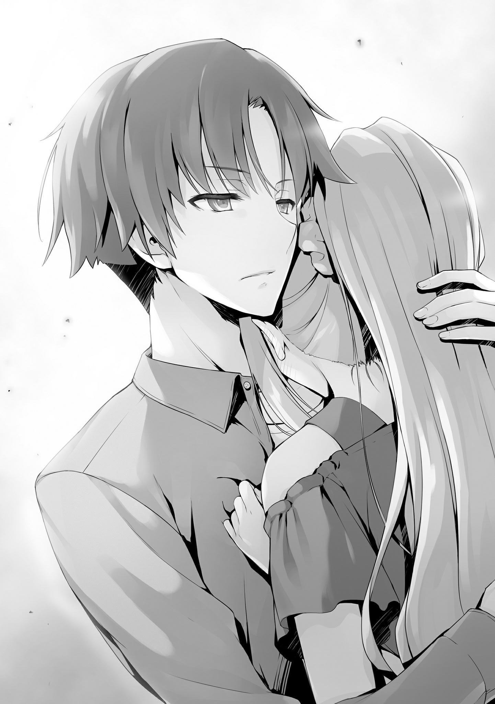
PALABRAS DEL AUTOR
Han pasado 4 meses, como la última vez. ¡Es el Kinukinu de todos!
Es el primer año de la era Reiwa, ¿cómo están todos? Estoy muy animado.
Bien, hablaré de lo que he estado haciendo últimamente, pero en realidad no he hecho nada más que trabajar excepto un fin de semana cuando fui a hacer kayak.
El otoño es una gran época para tomar vacaciones, realmente quiero dar un paseo por la noche en las aguas termales, pero eso es sólo una idea. Ahora mismo, lo único que puedo hacer es seguir trabajando.
Hablando de esto, no he visitado un santuario en 1, o 2 años. Aunque eso es sólo una información trivial, recientemente, siento que estoy envejeciendo.
Yo era un experto en computadoras y tecnología en ese entonces, pero a medida que la tecnología de los teléfonos está más avanzada, descubrí que no era capaz de usarlos tan bien.
Ahora es demasiado complicado, y no tengo ni idea de para qué se utilizan todas estas funciones. Aparte de las funciones básicas de la aplicación, estoy desperdiciando todo lo demás, mirando boquiabierto.
Mirándome objetivamente, me doy cuenta de que también me estoy convirtiendo poco a poco en esa especie de modelo de adulto que no es bueno en el uso de la tecnología.
Incluso cuando conduzco, todavía hay funciones y botones que no sé cómo usar... ahhhh..... sí, no puedo seguir el ritmo de estos tiempos de cambio.
De todas formas, ya es suficiente con que yo esté fuera de esto. Y así, el primer año termina aquí. Pareció mucho tiempo, y pensando en el pasado, es inimaginable cómo vuela el tiempo.
La historia de Ayanokouji, y los amigos que le rodean. Aunque este libro es uno de muchos, espero que todos puedan ver los diversos cambios y el crecimiento
que les rodea. Y a partir del próximo volumen, será sobre el tan esperado arco del segundo año.
No hace falta decir que la confrontación y la batalla entre las clases seguirá siendo la misma. También planeo usar a los de 3º año, 1º año y la escuela. La batalla entre esos 4 aspectos será el núcleo de la historia y conducirá la trama hacia adelante. Aunque la cantidad de información aumentará y por lo tanto será más difícil de seguir, ¡espero que todos se apeguen a ella!
El trabajo en las ilustraciones está progresando constantemente, y las portadas y contraportadas ya están en producción.
HISTORIAS CORTAS
KARUIZAWA KEI ARTBOOK SS
LA PERSONA QUE SE CONVIRTIÓ EN ALGUIEN QUERIDO PARA MÍ
Terminé de cambiarme de ropa y agarré mi teléfono, sintiéndome un poco melancólica.
—Santo cielo... ¿qué pasa ahora?
Me estaba preparando cuando de repente recibí una llamada.
Un número de teléfono desconocido de 11 dígitos que no está en mi lista de contactos.
Obviamente sabía quién era. Era Kiyotaka.
La escena de él y Hiyori-san en esa cita apareció ante mis ojos.
Por supuesto, es libre de salir con quien quiera y donde quiera.
Ya que nuestra relación no es nada especial.
Pero aún así...
—¡Ah, ya basta! ¿Por qué tengo que sentirme tan irritada y dejarme presionar por alguien como él?
Dejé de pensar mucho en ello, suprimí mis sentimientos y me preparé para tomar la llamada.
Planeé comer con Ishikura-san y Sonoda-san hoy. Me voy a divertir hoy.
—Soy yo, siento haberte llamado.
Contuve mi voz, que estaba a punto de estallar, y me calmé.
—Está bien. ¿Qué?
—Suenas como si tuvieras algunas quejas.
—En realidad no. No me quejo, sólo quería confirmar algo contigo.
—¿Que te llamé recientemente y no me puse en contacto contigo más tarde?
Si lo has entendido, al menos continúa con ello, ¿lo harás? Whoops, debería guardarme eso para mí...
—Entonces pareces entender, ¿qué? ¿Sólo querías hostigarme?
—¿Podríamos reunirnos y hablar de eso?
—¿Eh?
—¿Recuerdas lo que dije que te diría si lo recordaba? Acabo de hacerlo.
¿Podrías venir?
¿Qué pasa con eso?... ¿No me contactaste después de eso y ahora quieres hablar conmigo? ¿Y en tu habitación?
—Por Dios... Siempre lo haces cuando te da la gana... Supongo que está bien. No voy a asumir ninguna responsabilidad si alguien me ve, ¿de acuerdo?
Se convertirá en un problema si me ven tratando de entrar en la habitación de un chico yo sola.
—No te preocupes por eso.
Pensé que él tendría algunas dudas al respecto, pero parece que me equivoqué.
Bueno, si él dice que no está preocupado, ¿por qué debería estarlo yo?
—Entiendo. Ah, tengo algo planeado para las 7pm, así que no puedo dejar que te tomes mucho tiempo, ¿sí?
—Será breve. Probablemente alrededor de 10 a 20 minutos.
—Entonces está bien para mí. Nos vemos más tarde.
Terminé la llamada y suspiré.
Me sentí aliviada de que la llamada no fuera a peor.
—¿Por qué mi corazón tiene que ser presionado por un tipo como él?
Tampoco tengo ganas de estar tonteando con él, pero bueno, no se puede evitar.
Este es un escudo para protegerme.
Sí, por eso no se puede evitar.
—...No sería justo de otra manera, cierto.
PARTE 1
Empecé a prepararme antes de salir hacia su habitación.
Una comida me espera después de esto. Así que terminemos con esto rápidamente, es ese tipo de sentimiento.
Pero estaba tan silencioso cuando llegué.
Sólo me miró, sin profundizar en ningún tema importante.
—Entonces, ¿qué pasa?
¿No me digas que ha olvidado el asunto después de que llegué aquí?
Su respuesta cuando traté de cortar esta incomodidad fue...
—¿Qué quieres decir?
Una respuesta evasiva. Eso me irritó un poco.
—¿Qué quieres decir? ¿No acabas de recordar lo que querías decirme?
—Ahora que lo dices, sí, supongo que es verdad.
—……
Pensé que empezaría a hablar de nuevo, pero se quedó callado y el silencio regresó.
—Oh vamos, ¿qué es?
—Bueno, no necesitas ser tan apresurada.
—Estoy bastante segura de que lo mencioné, ¿no? Voy a comer con mis amigas a las 7PM en el centro comercial Keyaki. ¿Entiendes?
—Todavía queda mucho tiempo. Todo va a estar bien.
—Hmm, me pones la piel de gallina, ¿sabes? La forma en que no paras de hablar de tonterías.
Normalmente él haría las cosas tan breves como fuera necesario, precisamente al punto.
Esa es mi impresión habitual de él.
Honestamente, su habitual personalidad era impresionante.
¿Cómo decirlo? Se muestra tan tranquilo a pesar de que tenemos la misma edad. O más bien genial. Esa parte de él es algo atractiva, por decirlo así.
No, no. Tengo que estar enojada ahora. ¿Qué pasa con elogiarlo ahora?
—...Oh, por cierto. Tengo algo que necesito decirte, ¿bien?
No me gustaba que no fuera él mismo, así que cambié el tema.
—¿Algo que tienes que decirme?
—Satou-san está sospechando de mi relación contigo, ¿sabes?
Aunque él tuviera la iniciativa, hasta yo puedo influenciarlo.
Es por eso que a veces tengo que empezar la conversación yo misma. Si no, algo malo podría ocurrir.
—Pensé que empezaría a odiarme después de que la rechacé. ¿Qué clase de sospechas?
Sería fácil pensar que a ella le desagradaría después de eso. Pero su situación es totalmente diferente.
Parece que él necesitaba una explicación sobre el romance de la A a la Z sólo para entender que está un poco distante, ¿verdad?
A diferencia de cualquier estudiante de secundaria que yo conozca.
Eso es lo que me está dando tanto estrés ahora mismo.
—Ella cree que quizás terminé con Hirata para salir contigo. Trató de preguntarme sobre ello de una manera indirecta.
Era sobre un chico que a ella le gustaba, así que por supuesto que se daría cuenta de algo.
Y eso... realmente lo veía diferente al resto de los chicos.
—Lo negué por supuesto, pero no estoy segura de cuánto me creyó.
No creo que me perdonaría si se enterara de que nos encontramos de esta manera.
Si cambiáramos de posición, yo me sentiría igual.
—Ya veo. Yo también tuve una conversación similar.
—¿Qué? ¿Algo similar?
Hasta donde yo sé, no debería haber nada similar, excepto por el caso de Satou-san.
—Matsushita sospecha un poco de ti y de mí. Preguntó si estábamos saliendo o no.
¿Eh? ¿Matsushita? ¿Por Matsushita te refieres a la de nuestra clase?
Mi mente entró en pánico por la repentina mención de su nombre.
—¿Qué? ¿Qué? No puede ser, ¿verdad? ¿De verdad? ¿No estás bromeando?
Asintió ligeramente y habló de los acontecimientos que llevaron a eso, pero...
¿Quieres decir que empezó a sospechar de sus verdaderas habilidades durante el examen especial?
—¡Espera un poco! ¡No puedo seguir con esto!
Ya era bastante malo sólo con Satou. ¿Y ahora también con Matsushita?
Me está dando dolor de cabeza...
—Creo que se está poniendo muy mal, como... ¿tienes algo bajo la manga?
Todavía sería posible calmar la situación si me disculpara una o dos veces.
Pero lo que respondió fue...
—Creo que está bien ignorarlo...
Eligió la peor opción con esa expresión serena suya.
—¡No, no, eso no es bueno! - Y nuestra relación... Para empezar, tampoco es nada especial.
¡Yo era la que más tenía que perder si lo ignoraba!
—¿Te disgusta que los demás piensen que puede haber algo aunque no haya nada? Incluso si, digamos que ella difunde un rumor, déjala decir lo que quiera, ¿no?
—¿Qué? ¿Sólo déjala decir lo que quiera?... No hay manera de que pueda hacer eso. Díselo directamente a ella ahora mismo, ¡que no hay nada entre nosotros!
Sea cual sea la verdad, lo importante es cómo transmitírsela a la otra persona.
Quiero evitar destruir la paz en mi clase a toda costa.
¿Cree que estará bien mientras me proteja con su cuerpo?
Si lo cree, se equivoca. La paz mental también es importante.
—Podría tener el efecto contrario si intentara explicárselo a Matsushita ahora.
—Deberías haberlo sabido desde el principio, ¿verdad? ¿Por qué hacer una mentira a medias?
—No importa cómo lo explique, no cambiará nada. Satou sospecha que hay algo entre nosotros, ¿verdad? Ya que es cercana a Matsushita, al final le dirá que nuestra relación no es normal. No, la posibilidad de que haya hecho un movimiento después de que se lo dijeran es bastante alta.
—...Puede que tengas razón...
Los rumores de nuestra relación que se extienden por todas partes, aunque sea una mentira, será un gran perjuicio para mí.
O tal vez no. Habría algo que me salvaría. Pero sólo algo pequeño, en realidad.
Si realmente saliéramos, entonces, bueno, quiero decir, no somos tan...
—Quiero decir... ¿no pensarán que rompí con Hirata-kun para salir contigo?
Yo soy la que se preocupa si hay la más mínima posibilidad de que afecte a nuestra clase, no, a toda la escuela, ¿sabes?
—¿Por qué debería preocuparte eso?
No me entendería sin importar lo que pase.
—Escúchame... Si ese rumor saliera a la luz, me afectaría a partir de ahora.
¿Qué pasa dentro del cráneo de este chico amargado?
Es precisamente por eso que no se da cuenta de los sentimientos de Satou y míos hacia él.
—¿Bien? Es difícil que se acerque el sexo opuesto si hay un aroma de otra persona presente, ¿entendido?
Le apunté con el dedo.
—¿Así que estás diciendo que quieres encontrar un nuevo amor y que yo estoy estorbando?
—... Así es.
Honestamente, no estoy pensando en conseguir un novio ahora, pero, así es como es.
Parecía que entendía el mensaje, así que seguí adelante.
Después de todo esto, empecé a pensar que se hacía el tonto.
Pero como llegamos a este tema, recordé una vez más esa escena.
Hiyori-san y él conversando felizmente en el café.
—¿Realmente lo entiendes? Bien, ¿quieres escuchar?
Ya que terminamos con esto, tengo que confirmar algo.
Me llamó diciendo que tenía algo que discutir, pero me hizo verlo hasta el final.
No hay manera de que me vaya sin decir lo que pienso sobre eso.
—Tú... ¿eres cercano a esta Shiina?
—¿Shiina? Ah, ¿te refieres a Hiyori?
—Hiyo...
Fácilmente usó su nombre en lugar de su apellido.
Bueno... es libre de llamar a otras chicas por sus nombres tanto como le plazca, como a mí.
Todos en ese grupo al que está tan unido también usan sus nombres, según he oído.
Pero, Shiina-san está bien, no así... no es que me importe.
—Sin duda somos bastante cercanos. A ambos nos gusta leer, así que nuestros pasatiempos coinciden. ¿Qué te parece?
Los mismos pasatiempos... ¿leer libros? ¿No es eso como, lo opuesto a mí?...
—¿Heee? ¿El mismo pasatiempo? Leer libros... heee....heee.
Completamente diferente de mí
Me equivoqué, diciendo exactamente lo que pensaba.
—¿Y?
Me miró despreocupadamente como si me preguntara por qué quería oír eso.
—...No, quiero decir... Argh! ¡Se me olvidó qué decir!
No había nada más que quisiera decir al respecto.
De todos modos, traté de exprimir algunas palabras como si fuera a ceder, todavía me preocupa.
—Si los rumores sobre tú y yo se extienden, quiero decir, sería más difícil para ti acercarte a Shiina-san, ¿verdad?
Había una parte de mí que quería que él lo negara.
—Ya veo. Esa es sin duda una posibilidad.
Pero él no lo negó, en cambio estuvo de acuerdo conmigo con toda honestidad.
—No es que me importe realmente. Eres libre de acercarte a quien quieras.
Le di la espalda como si tratara de huir.
Oye, no puedo seguir haciendo esto. Los sentimientos que había intentado contener estaban a punto de estallar.
—Lo siento, pero, ¿podríamos... dejar esta charla para más tarde? Quiero ir al centro comercial de Keyaki un poco antes. Puede que también vengan algunos chicos de otras clases. Voy a deshacerme de los rumores, así que necesito entrar en ambiente. No tengo tiempo para tratar contigo.
No sé qué más podría decirle si me quedara aquí.
No sé qué son estos sentimientos deprimentes. Simplemente no lo entiendo.
—¿De mal humor?
—Estoy buscando un nuevo novio después de que rompí con Hirata-kun.
¿Tienes algún problema?
Era sólo una reunión de chicas comiendo juntas, pero quería darme aires de grandeza.
—No, en absoluto.
—...¿Verdad? Por eso me voy ahora.
Se puso de pie como si tratara de perseguirme.
—Está bien.
Incluso si me acompañara a la salida, eso me haría sentir mal.
—Kei.
Me llamó por mi nombre.
¿Por qué mi corazón tiene que revolotear así?
—¿Qué sucede ya?
¿Por qué soy la única que es arrastrada aquí y allá por sus palabras y acciones?
—Es sólo que, si no te gusta, está bien que sigas buscando otro camino.
¿Por qué soy la única... que...
—¿Qué?
—¿Saldrías conmigo?
—¿Eh?
Fruncí el ceño y me di la vuelta, no estoy segura de haber entendido.
—¿Qué has dicho? O, ¿qué significa?
Me estaba escuchando cuando le dije que no tenía tiempo, ¿verdad?
Mientras pensaba en esas líneas...
—Eso no es lo que quise decir. Te pregunté si quieres salir conmigo.
¿Yo salir con él?
—No, quiero decir... realmente no... entien... do...
¿Salir?
¿Hmm...?
Eh, espera un poco. ¿Espera un poco...?
La forma en que me miró, esa mirada y presencia.
—Espe, eh, ¿qué?, ¿¡qué!? ¿Qué pasa con esa broma, es de mal gusto incluso para ti...
—Si fuera una broma.
Sí, si fuera una broma, no es algo que le perdonaría nunca.
Sacudiendo mi corazón a derecha e izquierda, izquierda y derecha y diciendo esto después de todo eso.
—¿P-pero no mencionaste el acercarte a Shiina-san justo ahora!?
—Esa fue la broma.
—Pero el otro día...
¡¿No intimaste con Shiina-san recientemente...?!
Pero las siguientes palabras de Kiyotaka ahogaron lo que estaba a punto de decir.
—Eso fue simplemente, bueno. Quería probar si te pondrías celosa o no, supongo.
Entonces... ¿entonces realmente no hay nada entre él y Shiina-san?
En otras palabras, ¿él quería ver mi reacción al observar eso?
Así que, bueno, Kiyotaka es, en otras palabras, eh...
—Si esto es una broma, esta es la última oportunidad de retractarse... Lo sabes, ¿verdad?
Si esa era su idea de bromear, sería una gran vergüenza y desgracia por parte mía.
Lo más probable es que nuestra relación se rompa de golpe.
Me he vuelto incapaz de responder.
No, tal vez quería que fuera una broma.
Ya que, si él hablaba en serio, eso significaría que yo también tengo que responderle...
—Por supuesto que no es una broma. ¿Puedo oír tu respuesta?
No es... ¿una broma?
¿Quieres decir... que hablabas en serio?
En otras palabras, ¿le he llegado a gustar a Kiyotaka?
Mi mente se quedó en blanco por un segundo, y luego comenzó a desbordarse.
—..¡M-m-m-m-m-mme estás preguntando eso a mí!
Algo dentro de mí estalló y empecé a entrar en pánico, armando una gran conmoción.
—Como dije antes, puedes desviar la mirada, rechazarme, puedes hacer lo que quieras.
—¡No dije que fuera a ignorarte! P-pero, ¿por qué?
—¿Qué quieres decir con 'por qué'?
—Bueno, es decir, yo... quiero decir... por cierto, ¿por qué hoy...?
Fue tan abrupto. Toda la frustración acumulada hasta ahora se puso patas arriba de manera dramática.
—Me pregunto por qué. No estoy seguro de poder explicarlo muy bien, pero hay una cosa que puedo explicar. Quería evitar que cualquier otro tipo te tomara como su novia.
¿Así que mi mentira había tomado forma de una manera muy poco probable dentro de su corazón?
—Entonces, ¿quieres decir... que te gus... gus... to?
Traté de ponerlo en palabras, para confirmarlo. Es imposible que no lo hiciera.
Quería escuchar su respuesta directamente con mis oídos.
—Sí, amo a Karuizawa Kei.
Amo a Karuizawa Kei.
Amo a Karuizawa Kei.
Amo a Karuizawa Kei.
¡¡W-haaaaaaa!!
Su voz reverberó dentro de mi cerebro como una campana que suena.
—¿Tu respuesta es...?
¿Respuesta? ¿Qué es una respuesta? ¿Qué debería responder a alguien que dijo que le gusto?
—¡Yo también te amo! ¿Tengo que decir algo tan vergonzoso?
¿Eh, eh? Si le respondo, ¿no cambiará nuestra relación para siempre?
Quería responder, pero el pánico, la agonía, mi cabeza hizo un cortocircuito.
No, eso está mal. Tengo que admitirlo. Que he amado a Kiyotaka desde hace mucho tiempo.
Sin embargo, pensé que nuestra relación no cambiaba, que no iba a cambiar.
Pero me equivoqué.
—Te dejaré salir... conmigo.
Le respondí como si estuviera confesando algo.
Pero, él estaba de alguna manera tranquilo, no gritó, no mostró una sonrisa, sólo mostró una fuerte voluntad.
—¿Puedo tomarlo como si yo también te gustara?
Pero no parecía satisfecho o algo así, como si quisiera algo más.
—¿Quieres que lo diga?
—Sí, quiero que lo hagas.
Ni hablar. ¡Ah, ni siquiera me he preparado para una confesión!
¡Si hubiera sabido que esto iba a pasar así, me habría esforzado un poco más y habría hecho algo!
La única bendición fue que estaba planeando salir a comer con algunas amigas.
Me alegro mucho de eso...
Estar vestida así, quiero decir.
Pero tengo que responderle ahora.
Como un chico y una chica. Era importante responder a los sentimientos de la otra persona.
—...Bueno, ¿sabes? Quiero decir, ya sabes... me gus... un poco... algo así como...
Intentaba ser genial, pero la voz que logré transmitir era tan baja que dudo que fuera audible.
No me gustaba esa debilidad mía, así que añadí algunas palabras mientras continuaba.
—También... como... me enamoré de... Es frustrante pero... ¡Lo admito, lo admito!
En efecto. Lo miré a los ojos y lo dije. Luego extendió sus manos y suavemente agarró las mías.
—¿E-espera? ¿¡No digas que quieres besar!?
—No. No lo haré. Todavía no.
¿¡No lo hará todavía!?
Ejem. Quiero decir que es demasiado pronto. Un beso ahora, cuando mi corazón no se está calmando sería... cierto.
Me abrazó en silencio. Su gran cuerpo. Sentí sus poderosos brazos tocándome.
—Esto debería estar bien, ¿verdad?
—-Bueno, si es sólo esto...
Mientras me tenía en sus brazos, pensé que había crecido un poco en comparación con antes.
—Oye, ¿no te has hecho un poco más alto?
—Puede que sí.
A partir de hoy, él y yo comenzamos a transitar por el camino de las parejas, aunque parezca mentira.
¿Hasta dónde llegará este camino de felicidad?
¿Este camino seguirá para siempre?...
Eso es...
SHIINA HIYORI
LEYENDO LIBROS
Fue al principio de las vacaciones de primavera. Me puse mi ropa informal y me dirigí al centro comercial Keyaki.
—Buenos días, Ayanokouji-kun.
Y allí, justo delante de mí estaba un estudiante de otra clase. Sentí que esto era algo inusual ya que fuimos al café.
—Llegas muy temprano.
—No hay manera de que pueda llegar tarde ya que soy la que te invitó después de todo.
Ayanokouji-kun, que es tan inteligente y tan maduro, está tan relajado como siempre. Me he encariñado con él últimamente por eso.
No, quizás no en los términos de alguien del sexo opuesto, pero podría decirse que era él como persona, quizás...
Por eso terminé queriendo encontrarme con él así, aunque fuera un día libre o no. No tengo mucha experiencia en salir a divertirme con mis amigos en los días libres.
Sin embargo, la razón principal es que no he logrado hacer ningún amigo cercano.
Es exactamente por eso que no quiero hacerlos esperarme, eso creo. Pensar que lo molestaré y lo decepcionaré es lo que no quiero. Aunque no piense en él como alguien del sexo opuesto, al final acabo haciéndolo. Me siento feliz pensando que soy igual que otras chicas que también están experimentando lo mismo. Me pregunto qué es esta sensación tan agradable que no puedo definir.
Quiero investigar esto durante nuestra reunión.
—Siento haberte invitado tan de repente.
A pesar de que me puse en contacto con él y, con cierta impaciencia, le dije que estaría agradecida si nos encontrábamos a principios de abril, no puso una cara de preocupación e incluso le hice cambiar su agenda tan repentinamente.
—No tengo nada planeado para las vacaciones de primavera, así que no te preocupes. Bueno, entonces...
—Ayer la biblioteca finalmente consiguió algunos libros nuevos.
Quería hablar tanto que no pude reprimir mi emoción y le mostré mi mochila.
—Por eso quería que compartiéramos la información lo más rápido posible.
Antes de que me diera cuenta, llegamos al café pero como las vacaciones de primavera acaban de empezar, estaba abarrotado.
—Hay más gente aquí de lo que pensaba.
Conseguimos un asiento junto a la ventana y cerca del mostrador, así que nos decidimos por ese lugar.
—No tenemos muchas oportunidades de encontrarnos así durante los días libres, así que me parece muy refrescante.
—Puede que tengas razón en eso.
Era casi como si un chico y una chica tuvieran una cita. No, es precisamente eso, pero me avergüenza más este pensamiento, así que decidí parar.
—Bueno, empecemos... ¿Quieres ver los libros que traje conmigo?
Traté de ocultar mi vergüenza sacando un libro que esperaba mostrarle. Pero entonces recordé que había algo de lo que quería hablar con él.
Mi clase. Era tan importante como que yo fuera su amiga. Aunque termine odiándome, es algo que tengo que hacer.
—Bien, antes de que nos emocionemos hablando de libros, hay algo de lo que quiero hablar, ¿puedo tomar un poco de tu tiempo?
Lo mencioné, mirándolo directamente a los ojos. Sus ojos parecían como si pudieran ver a través de cualquier cosa, como siempre. Sentí que llegaría un día en el que lucharíamos en el futuro. Seguramente será el enemigo más peligroso que mi clase enfrentará. Mientras lo miraba a los ojos, me convencí todavía de eso.
MATSUSHITA CHIAKI
JUEGOS MENTALES
Estoy siguiendo a Ayanokouji-kun con pasos ligeros reflexionando sobre dónde tomar un descanso. Y cuando llegué a esa esquina por la que lo vi desaparecer, me encontré con él. Estaba de frente a mí.
—¿¡Qué!?
Dejé escapar mi voz sorprendida ante este inesperado acontecimiento.
¿Por qué? Eso era obvio, él había notado que lo estaba siguiendo.
—¿Necesitas algo de mí?
—Yo, ¿qué quieres decir? ...es algo que quisiera decir, pero parece que ya me has descubierto.
Me estaba invitando a no fingir ignorancia, ya que así parecería que estoy concediendo más puntos. Será mejor que lo reconozca.
—Sí, bueno, verás, te estaba siguiendo.
Puede que yo sea malísima en esto, pero ¿la gente suele notar que alguien los sigue? ¿Me vio en alguna parte?
Tal como esperaba, Ayanokouji-kun delante de mí puede no ser normal. Me volví más cautelosa con él.
Ahora que ha llegado a esto, o nos hundimos o nadamos, asegurémonos.
Mientras sean juegos mentales, no creo que pierda.
—¿Por qué crees que te seguí?
Intentaré guiarle con preguntas para que me diga hasta qué punto se ha fijado en mí.
—Quién sabe, no sé por dónde empezar. Más importante es, ¿cuándo empezaste a seguirme?
Quería sacarle información, pero se las arregló para entregarme la pelota.
—Quizás fue justo ahora. Así que...
—¿Justo ahora?
Ah, caramba, sólo lanza preguntas tan ambiguas. Pero tengo que mantener la calma. Mantén la calma. Si dejo que mi ritmo se perturbe y digo algo incoherente, será mi derrota. Me pregunto si debo decir que pensaba que él y el director se reunieron de manera inusual y por lo tanto lo seguí. Si digo que empecé a seguirlo en el café, lo más probable es que me pregunte por qué.
—¿Quién fue?... ¿Desde que hablaste con el nuevo Director, creo?
Ya que he logrado mantener un espacio entre él y yo, tomaré la iniciativa y volveré a ti.
—Entonces, ¿pasó algo? Hablaste con el director, ¿verdad?
—Parece que está planeando remodelar el centro comercial Keyaki y me vio y pidió mi opinión. ¿Qué instalaciones me harían feliz, etc.? Me hizo algunas preguntas sobre eso.
—Ohhh, así que eso es lo que fue...
Sin duda, había otros adultos allí cuando empezaron a conversar, así que podría ser sólo una coincidencia. Parece que no hay vínculos entre sus verdaderas habilidades y el Director.
—Entonces, ¿qué pasa con eso?
—No está realmente relacionado con eso, ¿sabes? Sólo hay algo que encontré interesante.
El asunto con el Director no era importante para mí. Era si Ayanokouji-kun estaba hablando en serio o no, sólo eso.
—¿Sabes?, durante el examen final especial del último semestre... ¿acaso no eras el líder?
Ya que me encontré con él de esta manera, le lanzaré toda la información que conozco.
—Durante ese evento de aritmética rápida, la respuesta que tú y Kouenji dieron fue la misma.
No era un problema de matemáticas que pudiera ser resuelto por casualidad.
—Hice aritmética rápida durante la secundaria, así que soy relativamente bueno en eso.
—Yo igual pero, ese nivel tuyo no puede explicarse como relativamente bueno, ¿verdad? Eso es seguramente a nivel nacional, es lo que pienso.
—Eso fue porque fue un evento en el que soy bueno. De hecho, también he participado en competiciones nacionales.
Ayanokouji-kun lo admitió fácilmente.
—...¿En serio?
—Sí... Como fue un evento en el que soy bueno, creo que me has malinterpretado.
Parece plausible que haya personas que sólo sean buenas en aritmética rápida.
Pero a menos que seas muy inteligente, no podrás resolver problemas como ese.
Y el hecho de que no revelara que es bueno en ello es un problema.
—Pero bueno, ¿por qué no nos lo dijiste un poco antes?
—Eso es cierto. Pero, conoces mi personalidad, ¿verdad? No estoy en la posición en la que simplemente tome la iniciativa y se lo cuente a la clase. Me convertí en el líder ya que tenía el punto de protección. Es más, nuestro oponente fue Sakayanagi de la clase A. Aunque dijera que era bueno en eso, estaba preocupado porque no sabía si me creerían o no.
...había planeado acorralarlo, pero no puedo entenderlo. Respondió fácilmente a mis preguntas, como si fuera algo natural. Tampoco trató de justificarse de manera nerviosa. Hay mucha gente que no tiene confianza en sí misma. Son incapaces de afirmar algo, ya que no pueden decir lo que quieren. No hay nada
en nuestra conversación que sea extraño al compararlo con cómo ha sido hasta ahora.
—Eso... Bueno, eso puede ser así.
¡Oh, no, no! Parece que no puedo decir lo que pienso en mi cabeza. ¿Fue porque no mintió? No, aunque así fuera, todavía hay algo sospechoso. Puede cambiar si se mencionan los casos de Hirata-kun y Karuizawa-san. Puede que mi ritmo se haya alterado, pero prometí de nuevo desde el fondo de mi corazón, una vez más, que recuperaría mi fuerza para lo que vendrá después.
SAKAYANAGI ARISU
UNA PREDICCIÓN DEL FUTURO
Después de la ceremonia de fin de curso, todos los estudiantes fueron a sus respectivas aulas para las últimas explicaciones antes de que yo dejara el aula inmediatamente.
Dicho esto, con mis pies discapacitados, no puedo moverme tan rápido como otras personas. Finalmente alcancé mi objetivo y esperé a esa persona que por lo visto se retrasó.
—¿Qué estás haciendo aquí, Sakayanagi?
Mashima, que asistió a la ceremonia de despedida de los de 3º año, me preguntó desconcertado al acercarse.
—He estado esperándolo, Mashima-sensei.
—¿...A mí?
—Sí. Está a punto de encontrarte con Ayanokouji-kun y Chabashira-sensei en la sala de recepción, ¿estoy en lo cierto?
—¿Qué quieres decir?
Mashima-sensei no lo admitiría, al menos en la superficie.
Pero ya conozco los detalles más sutiles. Desde que le di a Ayanokouji-kun el número de teléfono de mi padre, esperaba que esto sucediera.
—Debe haber recibido un mensaje del Director Sakayanagi para reunirse con Ayanokouji-kun. Supongo que Chabashira-sensei también debería estar presente.
—¿Cómo sabes eso?
—Sólo sé más de la situación que usted y Chabashira-sensei, eso es todo.
—Aunque eso sea cierto, tu nombre no fue mencionado.
—Eso es porque estoy tomando parte sobre la marcha. ¿Podría acompañarlo?
—Lamentablemente no tengo el permiso para hacerlo. Sería un problema si te llevara conmigo.
—Me reuniré con usted más tarde aunque vayamos por separado.
Entonces, ¿por qué no vamos juntos desde el principio? Creo que también le ahorrará algo de tiempo.
Aunque no tuviera su permiso para ir con él, visitaría la sala de recepción sola.
En otras palabras, de todas formas la conclusión sería la misma.
—...Bien, ya que parece que conoces las circunstancias.
—Muchas gracias.
Me di la vuelta y di un paso hacia la sala de recepción. Pronto me alcanzó.
—¿Qué es lo que vamos a discutir en esta reunión?
—Algo muy, muy interesante.
Puedo predecir algunos de los movimientos que el Director Interino Tsukishiro puede usar en el futuro. Siento que mis días aburridos se están volviendo más coloridos con sólo imaginarlo. Después de Mashima, entramos en la sala de recepción donde Ayanokouji-kun está esperando.
Para disfrutar de mi tiempo con él. Y para disfrutar de lo que está por venir.
ICHINOSE HONAMI
EL SEGUNDO CAPÍTULO ESTÁ A PUNTO DE COMENZAR
En un cierto día de las vacaciones de primavera, con el segundo semestre muy cerca.
Algunos cerezos comenzaron a florecer, dando la bienvenida al cambio del invierno a la primavera.
—¡He-y!
Mientras miraba a los cerezos, la voz de una chica me llamó la atención.
—¡Aquí, aquí! ¡Mira aquí Ayanokouji-kun!
Era una voz que había escuchado antes, pensé al ser llamado de repente por mi nombre. Pronto me di cuenta de quién era.
Ichinose estaba sentada debajo de un cerezo agitando su mano hacia mí.
—¿Fuiste a la escuela hoy?
Estaba sentada allí con su uniforme escolar, justo debajo del árbol.
—Sí, estuve en el consejo estudiantil durante un tiempo, ya que los de segundo año dijeron que seguramente ahora estará más ocupado ahora.
—¿Así que decidiste mirar algunas flores en el camino de vuelta?
—¡Eso es! Creo que encontré el lugar perfecto.
Mirando al cielo y a las flores de cerezo entrelazados, entrecerró los ojos con una sonrisa feliz.
—Nunca antes había visto flores de cerezo tan pequeñas. Así que realmente existen.
Esta variedad de cerezos se llama Omuro Ariake. Su pequeña altura, de unos 2m-4m, es uno de sus rasgos característicos. La escuela no los tenía hasta el año pasado, así que deben haber sido trasladados aquí desde algún lugar.
—¿Qué te parece, Ayanokouji-kun? ¿Quieres sentarte?
Ella me animó a sentarme al lado golpeando el lugar a su lado. Cómo decirlo, cómo es capaz de llamar a los chicos despreocupadamente, es tan propio de ella y probablemente parte de la razón por la que es tan popular.
No estaba prohibido acercarse a los árboles, pero había una señal de advertencia que decía que no debíamos tocarlos sin motivo. No tenía ninguna excusa para rechazarla así que me senté a su lado.
—¿Qué tal si los miramos juntos?
Así que también miré hacia arriba como ella lo había hecho.
—Oh-
Puede que fueran pequeños, pero en este entorno, dejaban una impresión sorprendentemente fuerte. De vez en cuando, una repentina ráfaga de viento hacía que los bonitos pétalos de cerezo bailaran y se dispersaran. Como si fuera todo menos un sueño.
—Es agradable observar las flores de vez en cuando, ¿verdad?
—Sí.
Mientras ambos mirábamos los cerezos en floración, hablamos de las cosas más informales. La inminente batalla que se avecina en el horizonte, prácticamente se olvida en este momento.
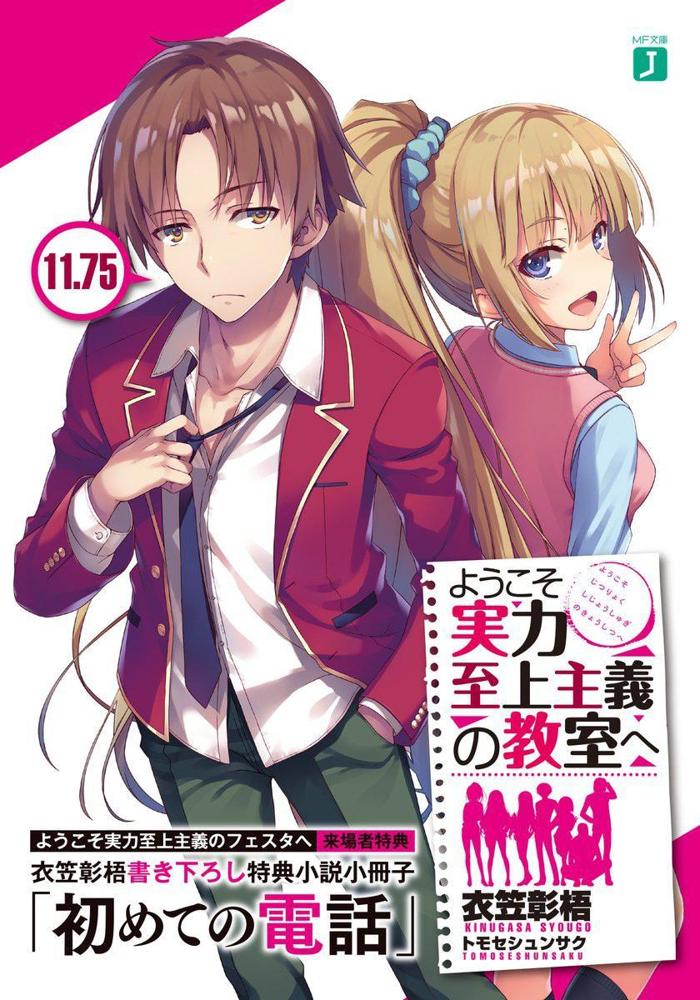
ICHINOSE HONAMI
LAS VACACIONES DE PRIMAVERA DE ICHINOSE HONAMI - EL
DÍA FINAL-
El último día de las vacaciones de primavera. Me reuní con Chihiro-chan y Mako-chan y fuimos juntas al centro comercial Keyaki. Fue refrescante ya que habían sido unas vacaciones tan largas en las que a menudo pensaba a solas.
—Honami-chan, ¿te sientes bien? ¿Estás bien? —Preguntó Mako-chan.
Como siempre estaba acompañada por alguien, verme encerrada en mi habitación tan a menudo y no vernos le preocupaba.
—No, todo está bien. Lo siento por eso, aunque me hayas invitado tantas veces. Estaba pensando en estrategias para el segundo año, podríamos decir eso. Así que sólo quería pensar en cómo continuar a partir de ahora.
—Eso está bien y todo pero... Honami-chan, no pienses mucho tú sola, discútelo con nosotras también, ¿de acuerdo? —Chihiro, que había estado siguiendo la conversación, continuó.
Los exámenes finales ya habían terminado, así que seguramente por eso estaban tan sensibles ahora.
—Sí, confío en todos ustedes, así que si algo sucede, definitivamente hablaré con todos.
Esos eran mis verdaderos sentimientos. Pero también era cierto que no quería preocuparlos innecesariamente.
La clase 1-B perdió mucho gracias a mí durante el examen final. Me vi obligada a tomar una gran decisión.
Pero es precisamente por eso que tengo que elegir mis palabras cuidadosamente. Podría preocuparlos fácilmente por lo que diga y eso sería una pérdida para mí.
—Oh, no te preocupes, de verdad. ¡Estoy cien por ciento bien! ¡Las vacaciones de primavera me han recargado por completo!
Estas vacaciones de primavera me habían dado nueva energía. Unas vacaciones de primavera como ninguna otra antes. Era mucho más notable.
Era un poco diferente a las habituales en las que salía y me divertía con mis amigos.
Incluso ahora, mi pecho se sentía más cálido al pensar en Ayanokouji-kun y en lo que había sucedido ese día.
Cuando revelé mi debilidad en su habitación, algo que había estado pesando sobre mí, desapareció.
Todavía puedo luchar.
Sentí una vez más que podía luchar con Sakayanagi-san, Ryuuen-kun y Horikita-san y los otros.
Por supuesto, si pudiéramos competir con ellos no lo sabríamos hasta que lo intentáramos. Pero al menos he evitado el peor de los casos: perder mi voluntad de luchar incluso antes de que suceda.
Esto es sin duda, debido a Ayanokouji-kun. No estoy segura de si estaría aquí sin él. Un amigo muy apreciado... un muy, muy importante...
De alguna manera, las siguientes palabras no se me ocurrieron.
¿Cómo debo expresarlo correctamente? Había una parte de mí que se negaba a pensar en ello.
Eso es porque hay algo que no debo olvidar.
El hecho de que estamos en clases diferentes. Es un hecho inmutable que no podemos mezclarnos y conocernos mejor. A diferencia del año pasado, en el que pudimos cooperar debido a que nuestros puntos de clase eran muy diferentes, la brecha se había cerrado.
Como Horikita dijo cara a cara conmigo, nos habíamos convertido en rivales que competían entre sí.
En otras palabras, si terminamos peleando, no deberíamos ser afectados por sentimientos personales.
¿Qué pasaría si, qué pasaría si él y yo estuviéramos en la misma clase...
Entonces todas mis preocupaciones desaparecerían y podría luchar sin dudarlo.
—Detente, detente. No pienses más...
Sacudí la cabeza con gran vigor para calmar los sentimientos que tenía dentro de mí.
—¿Q-Qué pasa, Honami-chan?
Mako-chan se sorprendió porque de repente sacudí la cabeza y me miró con preocupación.
—Lo siento, lo siento. No es nada.
Tiendo a relajarme demasiado con mis amigos íntimos sin importar lo que pase.
Tengo que controlarme. Es el último día de las vacaciones de primavera. Mis amigos tenían ganas de reunirse conmigo, así que debería dejar de pensar en esto.
Por ahora debería concentrarme en el primer período de nuestro segundo año.
Tendré el tiempo adecuado para pensar en ello una vez que la situación se haya calmado y tenga algo de tiempo.
Todavía somos la Clase B, pero casi no nos queda margen de maniobra.
Tengo la intención de seguir con el mismo objetivo que tenía desde la ceremonia de entrada el año pasado cuando todos nos pusimos en fila. Quedarse inmóvil no es una opción.
-Mañana, una nueva guerra vendrá para la Clase 2-B.
AYANOKOUJI KIYOTAKA
LA PRIMERA LLAMADA TELEFÓNICA
Las vacaciones de primavera estaban a punto de terminar ya que sólo quedaba un día.
E incluso el sol estaba empezando a ponerse antes de que me diera cuenta.
Pronto llegó la hora de acostarse.
Me pregunto qué es lo que sienten mis compañeros de clase mientras pasan la última noche de las vacaciones.
¿La misma melancolía que cuando termina el fin de semana y comienza el lunes?
¿O quizás están llenos de esperanza por un nuevo año?
Si me preguntan, diría algo similar... Estaba más o menos ansioso por ir a la escuela la mañana siguiente.
Por supuesto, había muchas dificultades alrededor.
No necesito mencionar la apuesta con Horikita, pero también había una alta posibilidad de que el estudiante de primer grado de la Habitación Blanca que Tsukishiro había mencionado ya se hubiera incorporado. La lista continúa. Un dolor en el trasero, todos ellos.
Pero generalmente paso mis días viviendo como estudiante en esta escuela.
No es malo pasar las vacaciones con tranquilidad, pero lo que más me satisface son las cosas que se esperan de los estudiantes: estudiar y hacer deporte.
Y sobre todo...
Algo que ha cambiado desde el año pasado.
Precisamente a las 10 de la noche, mi teléfono sonó.
Ni siquiera necesito confirmar quién es.
Karuizawa Kei.
Es una compañera de clase, y ahora alguien que es más que una amiga.
En otras palabras, una llamada de alguien que pertenece a la categoría que puedo describir como mi "novia".
Aunque ya llevábamos unos días como pareja, no nos habíamos reunido ni mantenido contacto entre nosotros.
Probablemente se debía al hecho de que Kei aún no había digerido nuestra relación.
Yo tampoco había contactado con ella y sólo esperé a que terminaran las vacaciones de primavera. Pero el último día, es decir, hoy, recibí un mensaje al mediodía diciendo que quería hablar por teléfono a las 10 de la noche.
Y entonces, llegó el momento.
—...¡Ya-hoo!
Inmediatamente después de recibir la llamada, respondí torpemente tras una breve pausa.
—Ah.
—Yikes, eso fue desganado.
—¿En serio? No, tal vez lo fue.
Si me preguntan si creo que sonó como algo que diría un novio, definitivamente diré que no.
—Estaba esperando tu llamada.
¿Suena como si fuera un novio?
Creía que sí, así que intenté decirlo.
—¿¡Eeeeh!?
Desde el otro lado, un gran grito junto con el sonido de algo siendo derribado se abrió paso a través del teléfono.
—¿Qué pasó? ¿Estás bien?
—¡Estoy bien! Sólo me tropecé y me caí de la cama. Ow ow...
¿Se puede llamar a eso estar "bien"?
Parece que se ha calmado después de una respiración profunda tras reajustar su posición.
—¿Me esperaste? ¿Mi llamada?
—Es normal que un novio espere expectante la llamada de su novia, ¿no es así?
—Eso es, bueno, cierto pero... bueno, no suena como algo que dirías en absoluto.
—Creo que eso cuenta para los dos.
Nos encaramos el uno al otro por primera vez. Yo como yo. Ella como ella.
A veces haciendo algo inesperado, otras veces diciendo algo precipitado.
Es difícil de controlar todo.
Por lo tanto, decidí no pensar mucho en ello.
¿Estoy diciendo estas cosas de forma natural? ¿Qué hay de mis acciones?
Pero incluso esos son sólo los placeres del amor a los que me entregaré.
—Hmm, sí. Tal vez. Todavía no siento que sea real... estamos saliendo de verdad, ¿no?
—Por supuesto que sí.
—... Claro, por supuesto. Ya lo sabía, pero... pensé que si te preguntaba por tu confesión otra vez, dirías que nunca hubo una confesión para empezar.
Por eso tardé un poco en llamarte, Kiyotaka.
Parece que esa es la razón por la que nunca me había llamado antes.
—¿Sabes?, habría estado bien que tú también me llamaras, ¿no te parece?
—Quería esperar esa llamada tuya.
Fue un poco injusto y se lo transmití a ella, ya que todavía se veía un poco triste.
Pero la conversación pronto cambió a los temas de la vida cotidiana.
—Ah, ¿has oído esto? Acabo de salir a comer con mis amigas y...
No fue una conversación importante en absoluto, pero para mí fue tan novedosa y natural.
Nuestra relación hasta ahora había sido la del que usa, y la de la que estaba siendo usada. No la de los amigos o novios.
Nuestros nombres o números tampoco estaban almacenados en ninguno de nuestros teléfonos. Normalmente era yo quien se ponía en contacto con ella, no al revés.
La gente diría que es una relación corrupta.
Pero sin embargo, eso era ciertamente lo único que nos conectaba a ambos.
Pero eso ha sido silenciado. Otro mundo se extendía ante mis ojos.
—¿Me estás escuchando siquiera?
Ella se dio cuenta de mi falta de respuestas satisfactorias y me preguntó sobre ello.
—Te escucho, te escucho —fue mi respuesta, lo que la satisfizo y continuó hablando.
Era una conversación sin temas reales.
No tenía ninguna relación conmigo.
Pero igualmente... Fue una pequeña sorpresa para mí, ya que pensé que era un poco divertido.
—Y por cierto, Kiyotaka. ¿Cómo puedo decir esto, no tienes nada que compartir también?
No estaba satisfecha con el hecho de que fuera la única que sacaba a relucir algún tema, de ahí su petición.
Aunque me lo preguntas, ese tipo de cosas son demasiado para mí. O más bien, soy consciente de que soy malo en esto.
No, es precisamente por eso que tengo que desafiarme yo mismo.
—Veamos...
Me pregunto cuánto tiempo habré hablado después de eso.
Estoy un poco sorprendido por lo mucho que hablé de todas estas cosas que nunca había hecho antes.
Eran cosas que otras personas no encontrarían interesantes.
Pero Kei estaba escuchando, claramente disfrutando sin importar lo que pasara.
A veces se reía, a veces me hacía alguna broma.
Y entonces la conversación cambió hacia lo inesperado.
Cuando el hombre de arena estaba a punto de desatar su somnolencia sobre mí, miré el reloj. Pronto fueron las 11 de la noche.
Lo que significa que debemos haber hablado durante una hora.
No fue muy difícil decir que fue la llamada más larga que hemos hecho en mucho tiempo.
—Probablemente deberíamos terminar esta llamada pronto.
Sería mejor colgar pronto, considerando lo que nos espera para mañana.
—Eso es, cierto.
También parecía entenderlo, ya que no se oponía a ello.
—Nos vemos mañana. Buenas noches, Kiyotaka.
—Buenas noches, Kei.
Lo dejamos después de pronunciar nuestros nombres.
—Bueno, entonces... —Ella dijo al final, pero de alguna manera no terminó la llamada.
—¿Qué pasa?
—Es, siento que es un poco difícil para mí terminarla...
Expresó su razonamiento para ello.
—...Así que, ¿puedes hacerlo tú?
—Entendido.
Toqué el botón para terminar la llamada sin dudarlo.
—Bueno, entonces es hora de prepararme antes de ir a la cama.
Esa era mi intención, pero...
Kei me llamó de nuevo a pesar de que habíamos terminado la llamada hace unos segundos.
¿Olvidó decirme algo?
—¿Qué pasa...?
—No dudaste ni un poco, ¿verdad? ¿Por qué?
Un grito que te rompe los oídos.
Instintivamente sostuve mi teléfono lejos de mi oído, pero todavía podía oírla fuerte y claro.
—¿No deberías, ya sabes, mostrar alguna vacilación al menos?
—... Quiero decir, ¿no es eso normal para terminar una llamada?
El flujo de la conversación continuó como si tuviéramos que prepararnos para mañana, así que terminemos la llamada. Ambos deberíamos haber estado en el mismo papel.
Pero parece que a Kei no le gustó cómo terminé la llamada.
—P-pero, nos divertimos mucho, ¿no?
—Sí. Es la primera vez que me divierto así.
—Entonces, ¿cómo digo esto, no te sientes un poco triste al ver que también termina?
Si quería decir que quería hablar más y el tiempo lo permite, entonces seguro.
—Un poco.
—¡De ninguna manera siento eso de ti!
Al no aceptar mi respuesta, continuó con los dientes apretados.
Estuvo bien que no pusiera mi teléfono demasiado cerca de mi oído.
Parecía que había dado en el clavo mientras ella seguía molestando por todo.
De donde había desaparecido el buen humor que teníamos antes, no me gusta esto, no me gusta aquello, incluso nuestra excitante conversación de antes.
Así que esto es lo que llaman el corazón de una mujer.
En ese caso, necesitaría más tiempo para analizarlo.
—Huff, puff". ...Ah, me siento tan refrescada.
Después de desahogar todo eso y dejar que todo saliera, parecía haber recuperado el control de sus sentimientos.
—Entonces... ¿qué debo hacer?
—¿Sobre qué?
—Ya son casi las 11:15PM, ¿sabes?
—Ah...
Desde que intentó terminar la llamada, el reloj no se detuvo y el tiempo siguió avanzando.
—Tal vez deberías terminarla tú misma, Kei.
—Tal vez, entonces.
Tal vez estaba preocupada por cuándo iba a terminar la llamada, pero de alguna manera se opuso a eso.
—Deberías terminarla tú. Hazlo bien esta vez, ¿de acuerdo?
—...¿Bien?
Acabo de recibir una tarea inesperada y desagradable.
—Así es. De una manera que no me afectará. ¿No vas a cumplir este lindo deseo de tu novia?
Dijo pícaramente como si simplemente me hubiera agarrado y tomado la iniciativa.
—¿Un deseo? ¿Una linda novia?
—¿Qué? ¿Tienes alguna queja?
—No, en absoluto.
Me levanté y me dirigí a mi computadora.
Podría encontrar algunas pistas en la red.
—Para que lo sepas, navegar o algo similar no te servirá de nada. Estoy escuchando atentamente para saber si lo haces.
Me acorraló como si leyera mis movimientos.
No es una chica débil, pensé con admiración.
En ese caso, la única opción para mí es abrirme camino con mi propia fuerza.
Es una prueba para mí, que deseaba que esta relación comenzara.
—-Veamos.
Empezaré después de una breve pausa. La razón por la que terminé la llamada.
Algún tipo de teoría que no la perturbe.
—Es cierto que colgué sin dudarlo. Pero no fue porque pensara a la ligera en ti.
¿Cuáles serían las mejores palabras para poner fin a una llamada?
Dije lo que pensaba en voz alta.
—Es un poco triste terminar la conversación, es cierto. Pero eso sólo significa que podemos vernos mañana. ¿No sientes lo mismo también?
—...Sí. Yo también quiero verte, Kiyotaka...
Ha pasado algún tiempo desde la confesión.
Naturalmente, el deseo de reunirse con el otro se fortalecería con el paso del tiempo.
—Por eso debemos dejar que el tiempo fluya. Eso es lo que pienso.
Tomarnos nuestro tiempo y hablar hasta tarde en la noche está bien para mí también. Pero entonces el día de hoy nunca terminará.
—Sí...
—Quiero verte. La razón por la que no dudé en terminar la llamada es por esos sentimientos en los que pienso.
—...Ya veo, sí, por eso...
—¿Me entiendes?
—Bueno, sí. Te daré un aprobado por esta vez.
Ya no parecía tan insatisfecha. Podía oír un suave y tranquilo asentimiento a través del altavoz.
—Ya que lo encuentras difícil, terminaré la llamada por ti. ¿Te parece bien?
—Entendido. Puede que no... tengamos la oportunidad de hablar mañana en la escuela pero... lo espero con ansias.
—En efecto.
Siguiendo el flujo de la conversación, presioné el botón para terminar la llamada.
No me volvió a llamar, obviamente.
Nuestra relación había cambiado, pero Kei decidió mantenerla oculta por el momento.
Nuestras oportunidades de hablar abiertamente en la escuela serán limitadas hasta que se haga público.
Pero robarse miradas de vez en cuando debería ser posible.
Por fin, las vacaciones de primavera anunciaron su partida, sin dejar nada sin hacer.
Mi nueva vida escolar comienza mañana.
Si tan sólo pudiera estar en calma y en paz.
Este deseo mío no ha cambiado ni siquiera ahora.
Lo mejor sería pasear tranquilamente por el lecho del río en un pequeño bote.
Ya sea en lo académico, en los deportes o en el amor. No se sabe dónde empezará a dirigirse la corriente.
Eso es... la parte divertida de la vida escolar.
RYUUEN KAKERU
LO QUE SE ME HIZO EVIDENTE DESPUÉS DE UN AÑO -RYUUEN
KAKERU-
Ocurrió ese día justo antes de que terminaran las vacaciones de primavera.
Me arrastré hasta el centro comercial Keyaki. Una vez que derroté a Ichinose y conseguí que nuestra clase volviera a la clase C, decidí volver a luchar con Ayanokouji.
Tengo que pensar en una buena estrategia o de lo contrario no funcionará con ese tipo.
Por eso busco a alguien que se convierta en mis manos y piernas y que se mueva según mi voluntad. No importa lo insignificantes que puedan ser.
Debe haber varios peones útiles en su clase que puedan ser fácilmente influenciables.
Mi clase, por otra parte, tiene por alguna razón demasiados de los que sólo tienen músculos por cerebro.
Son excelentes como soldados de infantería, pero no pueden seguir instrucciones detalladas.
Y lo que es más, mi clase todavía tiene una desconfianza profundamente arraigada hacia mí.
Ahora mismo, Ishizaki es el líder de la clase, pero me estoy aburriendo de sus habilidades de actuación.
Un punto crítico para mí es pensar en cuándo volver a tomar las riendas.
—Buenos días. ¿Estás solo hoy?
Me senté en un asiento en el centro comercial Keyaki, esperando que Ibuki e Ishizaki llegaran, cuando cierta entrometida me llamó.
Era Sakayanagi Arisu.
—Puedo decirte lo mismo, ¿qué pasó con esos guardaespaldas tuyos, Sakayanagi?
No puedo ver a Kamuro o Hashimoto aquí tampoco, esos sirvientes suyos... no,
¿tal vez debería decir familiares?
—Fufu. Incluso yo salgo sola a veces. Felicitaciones por tu victoria de regreso.
—Lo mismo digo. He oído que le ganaste a la clase de Suzune.
—4 victorias, 3 derrotas. Estuvo cerca a pesar de luchar con una clase inferior.
—Pero ganaste, así que al final se han convertido en trampolines para ti.
Una ventaja de 500 puntos era demasiado grande para perderla durante un solo año. Podías asumir con seguridad que eso significaba que estabas a salvo. O al menos, así es como la gente perezosa normalmente pensaba.
—Palabras vacías viniendo de ti. Quieres decir que planeas cerrar la brecha en 2 años... no, dentro de este año. Al menos, tus ojos lo hacen.
—Kuku, ¿quién sabe?
—¿Qué te parece? ¿Quieres una taza de té mientras discutimos el próximo año juntos?
—¿Juntos? No tengo nada de qué hablar. Y tampoco estoy de humor, ¿de acuerdo?
—Oh, ¿en serio? Estaba pensando en una pequeña celebración por tu regreso. Yo invito, por supuesto.
Obviamente me mira con desprecio, pero sigue vigilando todos mis pasos.
Asegurándose de no perderse nada.
Si le muestro el más mínimo movimiento extraño, le daría una alegría incomparable.
La batalla entre nosotros ya ha comenzado.
Bueno, puedo jugar con ella cuando quiera. De todos modos, trataremos de leer lo que se esconde detrás de cada uno.
No tenía ninguna intención de hacer eso hoy.
—Más tarde.
Me levanté, buscando otro lugar para ir. Viéndome así, me llamó otra vez.
—Tu aura ciertamente ha cambiado.
—¿Qué?
—Hace un año, me mirabas con total enemistad en tus ojos. Sin duda no me pareces la misma persona.
Me reí haciendo un sonido diciendo "como si fuera cierto". La misma sonrisa apareció en su cara.
Así que no cree que le esté mostrando toda mi hostilidad ahora, ¿verdad? Pensé mientras contenía mi risa.
—El hecho de que todavía la dirijas hacia mí no ha cambiado. Pero es obvio que el 'color' ha cambiado.
Parece que lo que ella trató de decir no era lo que yo esperaba.
—No pensé que fueras digno de ser mi oponente justo después de entrar en la escuela, pero parece que ahora es diferente.
—Eso es estúpido, Sakayanagi. ¿No te estás sobreestimando un poco,
¿eh? Mi principio es ganar sin importar los métodos que tenga que usar. Puedo patearte al suelo aquí y ahora si quisiera, ¿entiendes? Y para que lo sepas, no tendré piedad contigo aunque llores.
Como ni Hashimoto ni Kitou estaban aquí, ella era sólo una chica débil que no podía ni siquiera golpear a un mocoso.
—Como dices, no tendría ninguna oportunidad de ganar en una pelea física, pero eso tampoco significa que tú ganarías.
—Así que no admitirás una derrota por violencia sólo por tu discapacidad,
¿eh?
—Ese no es el problema. El poder físico es también un factor necesario para cualquier pelea. Sólo digo que ejercer violencia contra mí aquí no te llevaría a tu victoria. Después de todo, mucha gente y cámaras de vigilancia nos están observando ahora. No terminará con una suspensión, si levantas una mano en mi contra ahora. Yo, que no puedo moverme como me plazca, podría decir. Lo que un observador externo consideraría una victoria también es un factor importante.
—Lógicamente eso es. Pero, ¿y si quisiera usar la fuerza para reclamar mi victoria para mi propia satisfacción, qué pasaría entonces?
Di un paso hacia ella y levanté ligeramente el puño de una manera un tanto amenazadora.
Creo que hubiera sido un poco lindo verla asustada por esto, algo encantador.
Pero no se preocupó en absoluto, sólo me mostró esa desagradable sonrisa suya.
Es demasiado ingenua si pensó que no la golpearía de verdad. Pero parece que esa no fue la razón.
No le importaba, ya que ser golpeada no era una derrota, sino un paso hacia la victoria. Eso es lo que sus ojos me dijeron.
—Tienes inteligencia, a pesar de la apariencia. Me siento aliviada de que también puedas calcular tus ganancias y pérdidas.
Incluso si la golpeaba, terminaría blandiendo su marca de la más baja escoria sobre mí.
—Creo que tú, tal y como estás ahora mismo, has crecido para ser digno para jugar, ¿sabes?
¿Dices que he crecido durante este año?
Lol....dices las cosas más ridículas como te place.
—No he cambiado en absoluto.
—¿Estás seguro de eso? Has cambiado bastante hasta donde puedo ver.
Ella seguía siendo persistente en eso a pesar de mi negación.
Ideas tontas, pensé...
Pero, puede que haya cambiado un poco.
Pensé que no tenía espacio para crecer después de la secundaria.
Pensé que había madurado completamente.
Y todos los demás eran mis juguetes.
No tenía empatía hacia esas cosas.
—El actual tú parece haber cambiado tu punto de vista comparado con el de hace un año, ¿tal vez?
Cierto... he cambiado mi forma de ver las cosas.
Decidí que esta escuela no era gran cosa una vez que tomé el control de la clase C en abril.
Sabía que Sakayanagi, que usaba a Katsuragi como su juguete, era bastante inteligente, pero aparte de eso no valía la pena fijarse en ella.
Sólo pensaba en cómo evitar el aburrimiento aplastando la Clase B o la Clase D.
Es ridículo ahora que lo pienso.
Pero de todos modos, incluso yo me sorprendí por la gran motivación que tenía para tratar de subir mi clase ahora.
—Me parece que ha ocurrido algo grande que te ha hecho cambiar tanto.
Su actitud y sus ojos me decían que me estaba probando, pero no le mostré nada y lo dejé pasar.
—Fufu, estoy deseando... una nueva guerra este año también, ¿de acuerdo?
—Terminarás arrepintiéndote.
Me di cuenta de los tipos que había estado esperando, luego me di la vuelta y me alejé de Sakayanagi.
—Buenos días, Ryuuen-san. Era Sakayanagi... ¿verdad? ¿Pasó algo?
Ishizaki echaba miradas atrás mientras intentaba alcanzarme.
—Sólo una pequeña charla.
Hubiera perdido tiempo y energía tratando de explicarles a estos tipos.
Incluso los idiotas aprenden de forma idiota ya que él cerró la boca y no siguió el tema.
—Ah, por cierto, nos encontramos con Ayanokouji esta mañana. También vino a este centro comercial Keyaki.
—Ya veo.
A esta hora del día, la cantidad de lugares que se podían usar era limitada.
Reunirnos y hablar con alguien del segundo piso debería ser así.
Bueno, no creo que eso termine en sólo 10 o 20 minutos.
Salir tan temprano debe significar que la charla debe ser algo importante.
Haré que estos tipos hagan los primeros movimientos para empezar.
—Oh, por cierto, Ryuuen-san. Le sugerí un plan a Ayanokouji, pero él lo rechazó. Tenerlo a él y a ti en la misma clase y apuntar a la clase A juntos...
—¿Eres un idiota? No hay manera de que Ryuuen diga que es una buena idea aunque se lo hayas dicho.
A Ibuki le disgustó, pero lo que dijo Ishizaki no debe ser pasado por alto.
Es cierto que si unimos nuestras fuerzas de verdad, no quedarán enemigos en pie en nuestro año.
—Bueno, eso es imposible.
—Así que era imposible... sí... perdón por mi estúpida sugerencia.
—¿Y? ¿Por qué nos llamaste hoy?
—Quería hablar sobre este segundo año y lo que sigue.
—¿Qué sigue?
—No tiene nada que ver con los exámenes especiales, voy a aplastar la clase A este año.
—... No estás bromeando, ¿verdad?
—Sakayanagi no nos mostrará ninguna apertura, pero si dejamos que la clase A se abra camino, cualquier oportunidad que tengamos desaparecerá. Los arrastraré de vuelta conmigo y los haré pedazos, no importa lo obstinado que tenga que ser.
Pero bueno, necesito asegurarme de la oportunidad por lo menos.
—¿Qué hay de la clase B?
—Se autodestruirán si los dejamos en paz. No usarán ningún truco sucio.
En otras palabras, no vale la pena prestarles atención.
—Oh sí, no necesitamos ser conscientes de ellos, cierto.
La única excepción puede ser Kanzaki, pero no es digno de ser mi oponente en esta etapa.
Si sólo tiene la habilidad de ladrar o no, se hará evidente tarde o temprano.
—Así es, no hay necesidad de prestarles atención, pero... por eso debemos salir y acabar con ellos. Aplastarlos para que nunca más puedan levantarse.
Y derrotar a todas las clases también le enviará una señal.
PARTE 1
Estaba esperando a Ayanokouji para salir del café.
Si no estuviera solo, tendría que esperar a la siguiente oportunidad aunque fuera una molestia.
—¿Te has enterado por Ishizaki de que estaría aquí?
—Sí, vine aquí buscándote, incluso perdiendo el tiempo para saludarte,
¿me oyes?
Miré su cara, que no tenía ninguna expresión, lo que hace difícil entenderlo.
—Ya sabes mi información de contacto, estoy seguro. ¿Entonces no hubiera sido mejor contactarme?
—Pensé que era mejor hablar frente a frente con esa cara aburrida tuya.
No sé nada sobre cómo se siente, pero por eso no puedo evitar encontrarme con él directamente.
Para dominarlo, es de suma importancia romper ese muro de hierro mental suyo.
De todos modos, hay algo que debo comprobar con él.
—¿Qué quisiste decir con 'eso'?
A pesar de que pregunté vagamente, él inmediatamente entendió.
Lo que quise decir con "eso" fue su mensaje que hizo que Hiyori me dijera.
Había ganado 5 a 2 contra Ichinose y la había aplastado durante el último examen especial del año
Su estado mental como líder había sido sacudido por completo, la presión a sus compañeros ha continuado, y algunos de sus compañeros no pudieron unirse al examen debido a los dolores de estómago causados por mí.
Conocía mis métodos y descaradamente me dejó un mensaje: "Con un método mejor habría logrado fácilmente más de 5 victorias".
Ese movimiento me hizo querer hablar con él, lo quisiera o no.
Era como si me obligaran a escuchar obedientemente su predicación desde el punto de vista de algún dios.
—Tal como dije. Lo habría hecho mejor que tú.
—Los métodos que uso dependen sólo de mí.
Si usara cualquier otro método y ganara 5 veces, seguiría siendo sólo otras 5
victorias para mí.
No hay ninguna diferencia.
—Eso no es definitivo. Si tuvieras que dejar la escuela por algún error, estaría triste.
¿Algún error? De ninguna manera iba a perder contra Ichinose.
Sólo seguiría esta estúpida broma suya.
—Kuku, ¿qué pasa con esta broma? Bastante arrogante de tu parte a pesar de perder contra Sakayanagi y ser degradado.
El enfrentamiento entre las clases de Ayanokouji y Sakayanagi terminó 4 a 3 con Sakayanagi guiando a su clase a la victoria.
Pero por supuesto, no hay manera de que él sea inferior a ella.
Ya que la peculiaridad de ese examen significaba que los Comandantes estaban limitados en lo que podían hacer.
No... si hubiera sido serio apostaría que podría ganar cualquier examen.
Lo que significa que no iba en serio o que alguien interfirió.
—Es cierto que nuestra clase perdió contra la suya. No tengo excusa para eso ya que fui el Comandante. Si Sakayanagi es superior a mí o no es para que lo descubras más tarde.
—¿Qué demonios... me estás mirando por encima del hombro?
Reconoció fácilmente su derrota, pero eso me irritó aún más.
Me acerqué y le miré a los ojos, que no tenían ningún color.
—Alguien que me golpeó una vez no puede ser nunca inferior a ella.
—Es halagador de tu parte, pero, ¿qué pasaría si realmente no me dormí en los laureles durante el examen?
—Lástima, no me lo creo. Entonces no quisiste luchar desde el principio en vez de ponerte serio y perder... o que ocurriera algún tipo de accidente. Eso es mucho más fácil de creer. Lo creería si la escuela quisiera mantener alguna imagen y planeara que la clase A ganara.
Su fuerza no está al nivel de un estudiante de primer año de preparatoria.
Lo experimenté con mi propio cuerpo durante nuestra pelea en el primer año.
Incluso quiero saber qué clase de vida ha llevado hasta ahora para convertirse en esta clase de monstruo.
—¿Y? ¿Qué vas a hacer ahora después de tu regreso, Ryuuen?
—No tienes que decidir si volveré o no. Planeo disfrutar de estas lindas vacaciones por un poco más de tiempo.
Ahora es el mejor momento para hacer esos movimientos detrás del escenario.
—Pero... si me aburro de estas vacaciones, aplastaré a Ichinose y Sakayanagi para calentar.
—Eso es un gran cambio de parecer.
—Kukuku, sin duda. Yo también estoy sorprendido. No pensé que me entusiasmaría tanto por la oportunidad de vengarme de ti.
—Ya veo.
No importa lo que respondiera, no tenía sentido tratar de interpretar su intención.
Pero lo que está claro es que Ayanokouji no es aliado de Sakayanagi e Ichinose.
No, puede ser que ni siquiera Suzune sea considerada como una aliada por él.
—Estoy agradecido por ello. Si pudieras aplastar a Ichinose y Sakayanagi primero, sería lo mejor que podría esperar. Puedo dirigirme hacia arriba sin problemas.
—Pensé que no te importaba nada tu clase.
—Es un poco diferente ahora. Esa clase estará en una buena posición para la misma época el año que viene. Aunque yo ya no esté allí.
—¿Qué?
¿Incluso si no voy a estar allí nunca más?
—Puedo ser el objetivo a partir de ahora, así que no será una sorpresa si alguien se las arregla para expulsarme. ¿Verdad?
Es una estupidez preocuparse por eso.
—Descansa en tranquilo. Si alguien te va a expulsar, ese seré yo.
No se me ocurre nadie de ninguna clase en ningún año que pueda expulsarlo.
Me reí en silencio debido a mis propios pensamientos.
—Pero...
Dije a él y de repente cerró la distancia entre nosotros.
No le di tiempo para que fuera precavido, tan rápido como pude, tan rápido, directamente hacia él.
—¡¡Raaahhh!!
Apunté al espacio justo delante de sus ojos usando mi pie derecho sin dudarlo.
Pero ese fue el movimiento de apertura.
Incluso si te las arreglabas para lidiar con ello, no era tan importante.
Era sólo el primer golpe que venía en cualquier pelea.
Pero si se las arreglaba para esquivarlo, esa sería su perdición.
Continué pateando a su cabeza con todo el poder que pude reunir con mi pie izquierdo.
Pero...
Esquivó la patada con calma, como si supiera que un segundo golpe vendría después del primero.
No fue demasiado pronto ni demasiado tarde.
Con sólo los movimientos necesarios.
Había pensado en un tercer golpe, pero los movimientos que mostró amortiguaron mi intención y la tensión liberada de mis músculos.
—Ja, así que incluso un ataque sorpresa como este no hará nada. ¿Qué clase de monstruo eres?
No importaba cómo se repitiera esto, él se defendía fácilmente contra ello.
Cualquier pelea usando la fuerza, en otras palabras, peleas, no será capaz de derrotar su complejidad.
Tengo que golpearle implacablemente usando métodos o estrategias poco convencionales o de lo contrario no funcionará.
—Eres todo un showman.
Debe estar diciéndome que sea consciente de mi tiempo y lugar, pero por eso lo hice.
El hecho de que una cantidad incontable de cámaras se instalaron aquí, dejó claro que tenía que hacerlo.
—Mi corazón me aúlla; para devorarte.
Si estaba un poco irritado por este ataque sorpresa, lo haría con gusto de nuevo.
—¿No devuelves el golpe?
Traté de provocarlo, pero no se movió, por supuesto.
—Quiero evitar cualquier riesgo al pelear contigo aquí. Y no es el momento adecuado para eso.
—Ja, ¿la misericordia de los fuertes? Lo que dices lo hace parecer tan real, esto se está poniendo emocionante.
Mis músculos comenzaron a tensarse de nuevo.
Tal vez lo golpee de nuevo ahora, pensé, pero...
—Tienes potencial. Es por eso que debes crecer correctamente, Ryuuen.
Mi tensión se convirtió en ira una vez que escuché esas palabras. Esas no eran las palabras usadas cuando se trataba de un oponente igual, ni mucho menos.
Vaciando mi frustración, golpeé esas malditas paredes.
—Crece bien, ¿dices? ¿Cuándo carajo te convertiste en mi maestro?
—Sólo te estoy diciendo la verdad. Pero no dejes que la alfombra sea tan fácilmente arrancada de debajo de ti.
—¿Qué?
—Parece que hicieron algunos trucos sucios usando a Ishizaki y a los otros.
No fue una mala idea usar el karaoke para mezclar esas cosas, pero si quedaba algún rastro estarías acabado. Habrías sido expulsado en el acto. Incluso si te las arreglaras para fingir ignorancia, si algo extraño hubiera ocurrido durante el examen, la escuela sospecharía de ti, por supuesto. El hecho de que Ichinose no presentara una queja fue tu única salvación, Ryuuen.
—Utilicé su bondad en mis cálculos.
—Si es así, eso fue ingenuo de tu parte. Nunca serás capaz de alcanzarme a este ritmo.
—...Mírate.
Señaló la ingenuidad de mi estrategia.
—Si haces caso a mi advertencia es algo que debes decidir. Pero... si te quedas como estás ahora, la revancha ni siquiera está sobre la mesa.
¿Así que dice que si quiero pelear con él, tengo que madurar?
Mataría a todos los que intentan aconsejarme o advertirme, pero...
—Escucharé tus estúpidos consejos ya que estamos aquí ahora mismo.
Pero te aplastaré tarde o temprano.
Como él era la única excepción que reconocía, me lo tomaré como un adulto por ahora.
—Ese es el espíritu, Ryuuen. Que me aplastes y me expulses no suena tan mal después de todo.
2
"Que me aplastes y me expulses no suena tan mal, ¿eh?"
Qué cosa tan idiota dices.
Si lo deseas, te expulsaré.
Normalmente se lo habría dicho directamente a él, pero ni siquiera un farol así funcionaría en su contra.
Siempre he desafiado a cualquier oponente que he conocido sin ningún temor.
Incluso un oponente como Albert, con el que perdí una vez, sería devorado por la misma serpiente y se volvería obediente.
Tengo confianza en que puedo descubrir el movimiento ganador contra todos los humanos.
Pero él no está en la misma dimensión que esos.
Los ataques físicos no parecen funcionar con él, ni siquiera los psicológicos.
Y ni siquiera necesito decir esto, pero tampoco había visto nunca a alguien con una mente tan aguda.
—Me hace reír cuando pienso en mi antiguo yo.
Alguien absurdo se ha colado en la clase D.
Pero no hay necesidad de entrar en pánico.
Lo importante no es quién está ganando ahora mismo.
Si soy el ganador en el momento en que nos graduamos en dos años, no hay ningún problema.
No importa si estamos en la clase A o en la clase D o lo que sea.
Ayanokouji y yo. El sabueso o la perra. ¿Quién es cuál? Está bien, sólo necesito ganar.
No importa los métodos que tenga que usar.


VISÍTANOS EN NUESTROS
DIFERENTES SITIOS
http://gladheimtranslations.blogspot.mx/
https://twitter.com/GladheimT
https://mastodon.social/@GladheimT
Si alguien desea hacer una donación
https://ko-fi.com/gladheimtranslation
https://www.buymeacoffee.com/gladheimtls
https://patreon.com/GladheimT